생명과학 데이터 사이언스 · 중간고사 학습노트
이 노트는 W1–W7 강의 슬라이드, W2–W7 practice notebook, Assignment 1, 10/12와 10/14 수업 녹음을 바탕으로 정리했다. 슬라이드는 시험 주제(챕터)별로 묶었다. 중요한 그림은 강의 슬라이드에서 가져왔고, 클릭하면 확대된다. Q 블록은 접혀 있으므로 먼저 스스로 답해 본 뒤 펼쳐 본다.
- 슬라이드는 ← → 키, 화면 아래의 이전/다음 버튼, 좌우 스와이프로 넘긴다. 챕터는 위쪽 탭으로 이동한다.
- ☰ 목차(또는 / 키)를 열면 전체 슬라이드 목록을 보고 검색할 수 있다.
- 1–6장 끝에는 O/X 퀴즈, 헷갈리는 개념 쌍, 오개념 슬라이드가 있다.
상자 읽는 법
- 🔰 쉽게 말하면: 처음 보는 사람을 위한 풀이다.
- 🎯 왜 쓰나·언제 쓰나: 목적, 가정, 한계를 정리한다.
- ⚠️ 틀리기 쉬운 것: 흔한 오해(✗ 오해)와 실제(✓ 실제)를 짝지어 보여 준다.
- ✍️ 시험 답안 핵심 문장: 답안에 그대로 쓸 수 있는 문장이다.
- 추론과 자료 외 보충 표시는 강의 자료에 직접 없는 내용이다.
한눈에 보는 범위 지도
처음 공부한다면 먼저 답안 쓰는 법을 읽는다. 그다음 1–6장 개념을 🔰, 본문, ⚠️ 순서로 공부한다. 이어서 7장 질문에 직접 답해 보고, 8장 표로 마무리한다.
시험 정보 (1/2) W1-1 p18, p21 · W7 p2 · 녹음 10/12, 10/14
| 일시·장소 | 10/26(월) 13:00–14:15에 75분 동안 본다. 장소는 수업 강의실(E6-6 Room 119)이다. |
|---|---|
| 문항 | 4문제이며, 문제당 약 15분이다. 단답형과 서술형(short and long answers)으로 나온다. |
| 유형 | 모든 문제가 이론 문제다. 예: "How does k-means work?" W1 공지는 "Derive it, prove it, or explain why it works"이다. 코딩 문제는 없다(No coding). |
| 준비물 | 펜이나 연필만 쓸 수 있다. 노트북, 폰, AI, 치트시트는 쓸 수 없다. |
| 언어 | 문제는 영어로 나온다. 10/14 수업에서 교수님이 한국어 답안을 허용했다. |
| 비중 | 성적의 25%다. 나머지는 기말 프로젝트 35%, 과제 30%, 출석 10%이고, 특강 발표는 +5%다. |
| 범위 | 강의 슬라이드 W1–W7 전체, practice notebooks(GitHub repo), Assignment 1이 범위다. Assignment 2는 제외된다. 히스토그램 평활화를 직접 구현하는 과제다. 단, 평활화의 원리와 유도는 W7 강의 내용이라 범위에 포함된다. 교수님 말씀: "Anything other than that is not going to be included." |
- 파이썬 문법은 외울 필요가 없다고 했다. "Don't need to memorize python syntax!"
- 시험이 그렇게 어렵지는 않을 것이라고 했다. "It's not gonna be that hard."
- W1에서는 과제와 강의 슬라이드가 곧 공부 자료라고 안내했다. "How to prepare: Assignments and lecture slides are the study guide."
- W1에서 이 과목이 생물학에 필요한 이유를 세 가지 들었다. 생물 데이터는 규모와 종류가 계속 커진다. 생물 데이터는 늘 잡음이 많다. 작은 오류 하나가 잘못된 결론으로 이어지므로 아주 높은 정확도가 필요하다("Biology requires 99% accuracy"). (W1-1 p15)
- 코스 목표는 데이터와 계산 방법을 점검하는 습관을 기르는 것이다. "Build the habit of inspecting data and computational methods."
- KMeans() 두 줄은 누구나 쓸 수 있다. 중요한 것은 그것을 처음부터 구현하거나 설명할 수 있느냐이다. "This course is about that gap."
시험 정보 (2/2) · 틀리기 쉬운 것 W1-1 p18, p21 · W7 p2 · 녹음 10/12, 10/14
- 시험은 수업 시간대로 13:00–14:30까지 본다.W1-1 p21에는 13:00–14:30(수업 시간)으로 적혀 있다. 하지만 최신 공지인 W7 p2는 13:00–14:15(1시간 15분)이며, 최신 공지를 기준으로 한다.
- Assignment 2가 제외되니 히스토그램 평활화도 시험에 나오지 않는다.제외되는 것은 평활화를 직접 구현하는 코딩 과제다. 평활화 식 $s=(L-1)\sum_{j\le r}h(j)/N$의 원리와 유도는 W7 강의 내용이라 범위 안이다.
- 코딩 문제가 없고 문법도 외울 필요가 없으니, 파이썬 개념은 나오지 않는다.overflow, local과 global, list와 array의 차이처럼 왜 그런 결과가 나오는지는 개념 질문이 될 수 있다. 실습 notebook도 범위에 들어간다. 추론
- 코딩이 없으니 수식도 쓸 일이 없다.공지가 "Derive it, prove it"이므로 Bessel 보정, 회귀, 평활화 같은 유도는 손으로 써야 한다.
- 한국어로 답해도 되니, 핵심 용어도 전부 한국어로만 쓰면 된다.한국어 답안은 허용되지만 문제는 영어로 나온다. 핵심 용어(unbiased, centroid, logit, residual 등)는 영어를 함께 적으면 오해가 없다. 추론
공부 전략
- Bessel 보정: $N-1$로 나누면 왜 분산이 불편추정량(unbiased estimator)이 되는지 7단계로 증명한다. (1.5)
- 두 점 $(0,0),(m,n)$에 대한 선형회귀를 편미분으로 풀어 $\beta_0=0,\ \beta_1=n/m$을 얻는다. (3.2)
- 정규방정식 $\hat{\mathbf b}=(X^TX)^{-1}X^T\mathbf y$의 의미를 설명하고, 유도를 스케치한다. (3.3)
- 로지스틱 회귀의 3단계를 logit, sigmoid, threshold 순서로 설명한다. cross-entropy 손실의 의미도 설명한다. (3.7–3.8)
- PCA를 분산 최대화, deflation(PC1이 설명한 부분을 빼고 다시 찾기), SVD 순서로 설명하고, explained variance ratio를 구한다. (4.2–4.5)
- k-means 목적함수인 inertia가 왜 매 단계 늘지 않는지(never goes up) 보인다. silhouette의 정의도 쓸 수 있어야 한다. (4.10–4.11)
- contrast 식에서 μ를 빼고 다시 더하는 이유를 설명하고, min-max 정규화 식을 쓴다. (5.5–5.6)
- 히스토그램 평활화 식 $s=(L-1)\sum_{j\le r} h(j)/N$을 유도한다. (5.7)
- 다음 비교를 각각 이유와 함께 설명할 수 있어야 한다.
모집단 SD vs 표본 SD, SD vs SEM vs CV, window vs kernel, correlation vs convolution, "linear in β", bias vs variance, precision vs recall, PCA vs UMAP, supervised vs unsupervised, k-NN vs k-means, normalization vs equalization. - 표를 외우기보다, 각 칸의 이유를 한 문장으로 말하는 연습이 효과적이다. (모아 보기: 8장)
- 답안은 정의 한 줄, 수식, 직관과 이유, 숫자 예시, 한계와 주의점의 순서로 쓴다.
- 알고리즘 문제("How does X work?")는 단계에 번호를 매긴다. 각 단계에서 무엇을 계산하는지와 왜 그렇게 하는지를 쓰면 채점자가 점수를 주기 쉽다.
- 자세한 틀과 예시는 별도 슬라이드에 정리했다. (답안 쓰는 법)
개념 시험 답안 쓰는 법 (1/4) W1-1 p21 · W7 p2
- 정의 한 문장: 영어 용어와 한국어 풀이를 함께 쓴다. 예: "k-means is an unsupervised algorithm that …"
- 수식과 단계: 쓰는 기호는 반드시 정의한다. 예를 들어 $N$은 표본 수, $\mu_i$는 $i$번째 중심(centroid)이라고 적는다.
- 왜 (이유와 메커니즘): 채점의 핵심이다. 무엇을 하는지가 아니라, 왜 그렇게 하면 목표가 달성되는지를 쓴다.
- 예시: 작은 숫자 예시 1개나 수업의 생물 예시를 든다. 예: 펭귄, BOLD, breast cancer, EM 영상.
- 한계·가정·대안: 언제 안 되는지, 무엇과 비교되는지를 쓴다.
| 문제 동사 | 채점자가 보고 싶은 것 | 이 과목의 대표 문제 |
|---|---|---|
| Derive (유도) | 출발식(손실이나 조건)을 먼저 쓴다. 한 줄씩 변형하며 각 줄의 근거를 적는다(편미분 = 0, 대입). 최종식에는 박스를 친다. | 두 점 회귀 $\beta_1=n/m$, 평활화 $s=(L-1)\,\mathrm{CDF}(r)$ |
| Prove (증명) | 보일 것을 먼저 식으로 선언한다(예: $\mathbb E[s^2]=\sigma^2$). 이어서 핵심 등식을 쓰고, 결론 문장으로 마무리한다. | Bessel 보정 |
| Explain why it works | 메커니즘, 그것으로 목표가 달성되는 이유, 실패하는 경우를 쓴다. | k-means 수렴, 표준화가 필요한 이유 |
| How does X work? | 단계에 번호를 매기고, 각 단계에서 무엇을 계산하는지와 그 이유를 쓴다. | k-means, k-NN, UMAP, 평활화 |
| Compare A vs B | 같은 기준(목적, 입력, 가정, 장점, 단점)으로 나란히 비교한다. 표로 써도 된다. | normalization vs equalization, PCA vs UMAP |
| What if …? | 결론을 먼저 한 줄로 쓰고, 이유와 숫자 예시를 붙인다. | positive 1개 vs negative 99개, R²가 높은데 p도 높다면 |
지시어 15개의 뜻과 답안에 들어가야 할 것은 0.✎ 영어 문제 지시어 정리에 따로 모아 두었다.
개념 시험 답안 쓰는 법 (2/4) · 틀리기 쉬운 것 W1-1 p13, p21 · W7 p2
- 정의만 정확히 쓰면 충분하다."explain why" 문제에서 이유가 없으면 가장 크게 감점된다. 정의 다음 줄에 반드시 because …로 이유를 쓴다.
- C가 크면 정규화가 강하다.방향이 거꾸로다. C가 크면 정규화는 약하다. 검토 시간에 부호나 크기 같은 방향 단어만 다시 확인한다.
- α>1이면 대비가 감소한다.이것도 방향이 거꾸로다. α>1이면 대비가 증가한다.
- 식만 맞으면 기호는 따로 정의하지 않아도 된다.$N$이 표본 수인지 픽셀 수인지, $\sigma$가 SD인지 sigmoid인지 섞이면 식이 맞아도 감점될 위험이 있다.
KMeans().fit()을 쓴다고 답하면 된다.라이브러리 이름은 답이 아니다. 이 과목은 알고리즘을 처음부터 구현할 수 있는지를 묻는다("Can you implement it from scratch?"). (W1-1 p13)- "항상", "절대"처럼 단정해서 써야 확실한 답이 된다.과장된 단정 대신 조건을 명시한다. 예: "대칭 kernel이면 correlation과 convolution이 같다."
개념 시험 답안 쓰는 법 (3/4) — 예시 답안 W5-2 p16–24 · W7 p2 · 실습 W5 6.1–6.3
교수님이 직접 든 예시 문제 "How does k-means work?"를 앞의 5칸 틀로 쓴 모범 답안이다. 분량은 약 12분이다.
- 정의: k-means는 비지도(unsupervised) 군집화 방법이다. 라벨 없이 샘플을 k개 그룹으로 나누고, 각 그룹을 centroid, 즉 소속 샘플의 평균으로 요약한다. 목표는 군집 내 제곱거리합(within-cluster sum of squares, inertia)을 최소화하는 것이다. $$J=\sum_{i=1}^{k}\sum_{\mathbf x\in C_i}\|\mathbf x-\boldsymbol\mu_i\|^2$$
- 단계: 다음 순서로 진행한다.
- 준비: 거리 기반 방법이므로 먼저 feature를 표준화한다.
- k를 정하고 centroid를 초기화한다. k-means++는 기존 centroid에서 먼 샘플일수록 높은 확률로 뽑아, 시작점을 넓게 퍼뜨린다.
- 할당: 각 샘플을 유클리드(Euclidean) 거리가 가장 가까운 centroid에 배정한다.
- 갱신: 각 centroid를 소속 샘플의 평균으로 옮긴다.
- 할당이 더 이상 바뀌지 않을 때까지 할당과 갱신을 반복한다.
- 왜 수렴하나: 두 단계 모두 $J$를 늘리지 않는다.
- 할당 단계는 각 점을 더 가까운 centroid로만 옮기므로 $J$가 늘지 않는다.
- 갱신 단계도 $J$를 늘리지 않는다. 제곱거리합을 최소로 만드는 점이 바로 평균이기 때문이다.
- 그래서 $J$는 절대 커지지 않는다(never goes up). 가능한 분할의 수가 유한하므로 결국 멈춘다.
- 단, 멈춘 곳이 지역 최솟값(local minimum)일 수 있다. 그래서 초기값을 바꿔 여러 번(n_init) 실행하고 $J$가 가장 작은 결과를 쓴다.
- 예: 1차원 점 {1, 2, 9, 10}을 k=2로 묶고, 초기 centroid를 1과 2로 둔다.
- 할당하면 {1}과 {2, 9, 10}으로 나뉜다. 이때 $J=113$이다.
- 갱신하면 centroid가 1과 7이 된다. 이때 $J=38$이다.
- 다시 할당하면 {1, 2}와 {9, 10}으로 바뀐다. 이때 $J=14$이다.
- 갱신하면 centroid가 1.5와 9.5가 된다. 이때 $J=1$이다.
- 다시 할당해도 변화가 없으므로 종료한다.
- 한계·가정: 다음을 함께 쓴다.
- 둥글고 퍼짐이 비슷한 군집을 가정한다.
- 모든 점이 어딘가에 속해야 하므로 noise나 outlier가 centroid를 끌어당긴다.
- k는 사용자가 정한다. inertia는 k가 커질수록 계속 줄어들어서, 그 값만으로는 k를 고를 수 없다.
- 그래서 elbow(곡선이 꺾이는 곳)나 silhouette(가장 높은 곳)으로 k를 고른다.
“How does k-means work? Explain why the algorithm always stops, and describe one limitation of the method.”
키워드: unsupervised(비지도) · centroid(군집 중심) · within-cluster sum of squares(군집 내 제곱거리합) · converge(수렴하다) · local minimum(지역 최솟값) · initialization(초기화)
개념 시험 답안 쓰는 법 (4/4) — 채점 포인트와 단답형 W5-2 p21 · W7 p2
앞 슬라이드의 k-means 예시 답안을 채점자의 눈으로 점검한다. 아래 그림은 "왜 수렴하나"의 근거가 된 슬라이드다.
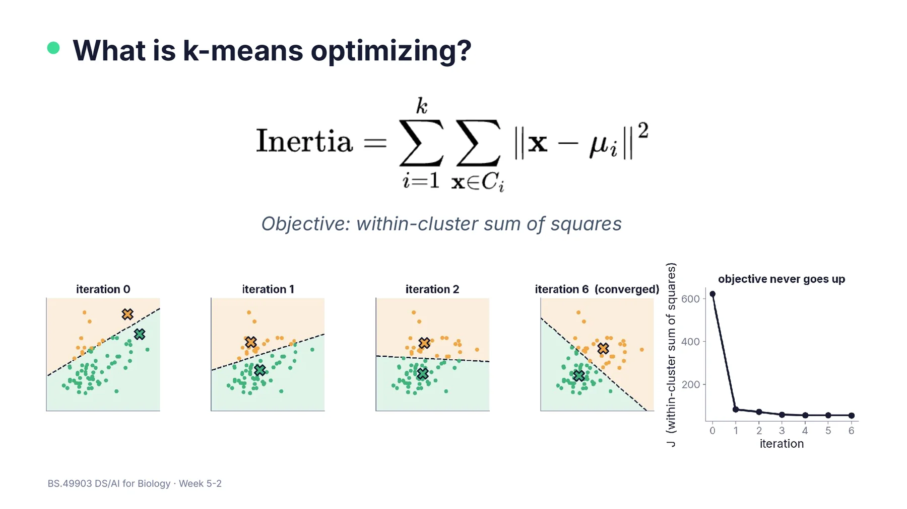
- 비지도 학습이라는 점, centroid가 평균이라는 점, 목적함수 식을 쓴다.
- 가장 가까운 centroid에 할당하는 단계와 평균으로 갱신하는 단계를 모두 쓴다.
- 수렴하는 이유를 쓰고, local minimum 때문에 n_init을 쓴다는 점을 덧붙인다.
- k 선택(elbow, silhouette), 가정과 한계, 표준화를 쓴다.
k개의 중심(centroid)으로 시작한다. 각 점을 가장 가까운 centroid에 배정하고, centroid를 소속 점들의 평균으로 옮긴다. 이 두 단계를 배정이 바뀌지 않을 때까지 반복한다. 두 단계 모두 군집 내 제곱거리합(inertia)을 늘리지 않으므로 수렴하지만, local minimum에 머물 수 있다.
“In a few sentences, describe the k-means algorithm. Why is it guaranteed to stop?”
키워드: centroid(군집 중심) · assign(배정하다) · update(갱신하다) · inertia(군집 내 제곱거리합) · converge(수렴하다) · local minimum(지역 최솟값)
0.✎ 영어 문제 지시어 정리 문제는 영어, 답은 한국어 OK
시험 문제는 영어로 나오지만, 10/14 수업에서 교수님이 한국어 답안을 허용했다. 핵심 용어(centroid, unbiased 등)는 영어 그대로 써도 좋다. 문제 첫머리의 지시어가 답의 형태를 정하므로, 아래 표로 미리 익혀 둔다.
| 지시어 (English) | 뜻 | 답안에 꼭 들어가야 할 것 |
|---|---|---|
| Derive | 유도하라 | 출발식(손실이나 조건)을 먼저 쓴다. 한 줄씩 변형하며 각 줄의 근거를 적는다. 최종식에는 박스를 친다. |
| Prove / Show that … | 증명하라 / …임을 보여라 | 보일 것을 먼저 식으로 쓴다. 예: $\mathbb E[s^2]=\sigma^2$. 핵심 등식을 거쳐 결론 문장으로 끝낸다. |
| Explain why … | 왜 그런지 설명하라 | 무엇을 하는지보다 왜 그렇게 되는지를 쓴다. 원리와, 그 원리로 목표가 달성되는 이유를 쓴다. 이유가 없으면 가장 크게 감점된다. |
| Describe / How does … work? | 서술하라 / 어떻게 작동하나 | 단계에 번호를 매긴다. 각 단계에서 무엇을 계산하는지와 왜 그렇게 하는지를 쓴다. |
| Compare / What is the difference between A and B? | 비교하라 / A와 B의 차이는 | 같은 기준(목적, 입력, 가정, 장단점)으로 나란히 쓴다. 공통점도 한 줄 쓴다. 표로 써도 된다. |
| What happens if …? | …하면 어떻게 되나 | 결론을 첫 줄에 쓴다. 이어서 이유와 작은 숫자 예시를 붙인다. |
| Interpret … | 해석하라 | 숫자나 그림이 무엇을 뜻하는지 말로 옮긴다. 크기와 방향, 그리고 생물학적 의미를 쓴다. |
| Justify … | 근거를 대라 | 선택이나 주장이 옳은 근거를 쓴다. 근거로는 가정, 수식, 데이터 중 하나 이상을 든다. |
| State the assumptions / limitations | 가정과 한계를 밝혀라 | 방법이 언제 성립하고 언제 깨지는지를 쓴다. 예: k-means는 둥글고 퍼짐이 비슷한 군집을 가정한다. |
| When would you use …? | 언제 쓰겠나 | 쓰는 상황(데이터 종류나 목적)을 쓴다. 다른 방법 대신 그것을 고르는 이유도 쓴다. |
| Give an example | 예를 들어라 | 작은 숫자 예시나 수업의 생물 예시를 구체적으로 든다. 예: 펭귄, BOLD, breast cancer. |
| Calculate / Compute | 계산하라 | 식을 먼저 쓰고 숫자를 대입한다. 중간 과정과 단위를 남긴다. |
| Define / What is …? | 정의하라 / …란 무엇인가 | 정의를 한 문장으로 쓴다. 기호를 쓰면 각 기호의 뜻을 밝힌다. |
| Is it …? Explain. | …인가? 설명하라 | 첫 문장에 Yes 또는 No를 분명히 쓴다. 점수의 대부분은 그 뒤의 이유에 있다. |
| Sketch / Draw | 그려라 | 축 이름과 단위를 쓴다. 꺾이는 점이나 최댓값 같은 핵심 모양을 표시하고, 한 줄 설명을 붙인다. |
“How does k-means work? Explain why its objective never increases.”
앞 문장(How does … work?)은 단계를 묻는다. 뒤 문장(Explain why)은 이유를 묻는다. 그래서 답안도 단계와 이유로 나누어 쓴다.
- 초기화: k개의 centroid를 고른다. k-means++는 이미 뽑은 centroid에서 먼 샘플일수록 높은 확률로 뽑는다. 확률은 가장 가까운 기존 centroid까지 거리의 제곱 $D(x)^2$에 비례한다. 슬라이드의 "거리에 비례"는 오타다. 자료 외 보충
- 할당: 각 샘플을 가장 가까운 centroid의 군집에 넣는다.
- 갱신: 각 centroid를 소속 샘플들의 평균으로 옮긴다.
- 반복: 할당이 더 이상 바뀌지 않을 때까지 할당과 갱신을 반복한다.
- 왜 늘지 않나: 할당 단계는 centroid를 고정하고, 소속에 대해 inertia $J$를 최소화한다. 갱신 단계는 소속을 고정하고, centroid에 대해 $J$를 최소화한다. 각 단계가 한쪽 변수에 대해 $J$를 최소로 만들므로 $J$는 늘 수 없다. 다만 멈춘 곳이 지역 최솟값(local minimum)일 수 있으므로, 초기값을 바꿔 n_init으로 여러 번 실행한다.
같은 문제의 전체 모범 답안은 답안 쓰는 법 (3/4)에 있다.
1.1 데이터 타입과 값의 범위 (1/6) · 정수의 범위 W2-1 p6–8 · 실습 W2 1.3
정수 타입은 비트(bit) 수가 정해지면 표현할 수 있는 범위도 정해진다. 8비트는 1바이트(byte)다.
- $n$비트 부호 없는 정수(unsigned)의 범위는 $0 \sim 2^n-1$이다.
- $n$비트 부호 있는 정수(signed)의 범위는 $-2^{n-1} \sim 2^{n-1}-1$이다.
- 비트 1개는 0 또는 1, 두 가지 값만 가진다. 그래서 $n$비트로 만들 수 있는 서로 다른 패턴은 $2^n$개이고, 표현할 수 있는 값의 개수도 정확히 $2^n$개다.
- unsigned는 $2^n$개를 모두 0 이상의 수에 쓴다. 0부터 세기 때문에 값은 $0,1,\dots,2^n-1$이 되고, 끝이 $2^n-1$이다.
- signed는 절반인 $2^{n-1}$개를 음수 $-2^{n-1}\sim-1$에 쓴다. 나머지 절반은 0과 양수 $0\sim2^{n-1}-1$에 쓴다.
- 0이 양수 쪽 자리 하나를 차지하므로 signed의 범위는 비대칭이다. 예를 들어 int8은 −128 ~ 127이다.
| dtype | 범위 | dtype | 범위 |
|---|---|---|---|
int8 | −128 ~ 127 | uint8 | 0 ~ 255 |
int16 | −32,768 ~ 32,767 | uint16 | 0 ~ 65,535 |
int32 | $-2^{31} \sim 2^{31}-1$ | uint32 | $0 \sim 2^{32}-1$ |
int64 | $-2^{63} \sim 2^{63}-1$ | uint64 | $0 \sim 2^{64}-1$ |
부동소수점 타입: float32, float64 | |||
bool: True 또는 False. 0이 아닌 수는 True, 0은 False다. (자세히는 3/6) | |||
⚠️ 슬라이드 오타 주의: W2-1 슬라이드에는 int32의 범위가 $-2^{15} \sim 2^{15}-1$로, int64의 범위가 $-2^{31} \sim 2^{31}-1$로 적혀 있다. 이것은 오타다. 위 공식 $-2^{n-1} \sim 2^{n-1}-1$을 따르면 int32는 $\pm 2^{31}$, int64는 $\pm 2^{63}$이 맞다.
1.1 데이터 타입과 값의 범위 (2/6) · 쉬운 설명 · 함정 W2-1 p6–8 · 실습 W2 1.3
- 칸이 8개이고 칸마다 0 또는 1만 적을 수 있다고 하자. 만들 수 있는 조합은 $2\times2\times\cdots\times2 = 256$가지다.
- 그래서
uint8은 0~255, 딱 256개의 수만 적을 수 있다. - 같은 256가지를 절반씩 나눠, 음수 쪽에 −128~−1을 주고 0과 양수 쪽에 0~127을 주면
int8이 된다.
- 슬라이드에 적힌 대로 int32의 범위는 $\pm2^{15}$이다.int32의 범위는 $-2^{31}\sim2^{31}-1$이다. $\pm2^{15}$는 int16의 범위다.
- signed 범위는 대칭이라서 int8은 −128 ~ 128이다.int8은 −128 ~ 127이다. 0이 한 자리를 차지하므로 양수 최댓값이 하나 작다.
- uint8의 최댓값은 256이다.uint8의 최댓값은 255($2^8-1$)다. 256은 값의 개수다.
- uint8과 int8은 둘 다 8비트이므로 범위가 같다.둘은 값의 개수(256)만 같고, 범위는 uint8이 0 ~ 255, int8이 −128 ~ 127로 다르다. 음수가 필요 없는 픽셀이나 ID에 uint를 쓰는 것도 이 때문이다.
$n$비트로는 서로 다른 값을 $2^n$개만 표현할 수 있다. 부호 없는 정수(unsigned integer)는 이 값을 모두 0 이상에 쓰므로 범위가 $0\sim2^n-1$이다. 부호 있는 정수(signed integer)는 절반을 음수에 쓰므로 범위가 $-2^{n-1}\sim2^{n-1}-1$이다. 예를 들어 uint8은 0 ~ 255이고, int8은 −128 ~ 127이다.
“How many distinct values can an n-bit integer represent? Derive the value ranges of n-bit unsigned and signed integers, and give the ranges of uint8 and int8.”
키워드: bit(비트) · distinct values(서로 다른 값) · unsigned integer(부호 없는 정수) · signed integer(부호 있는 정수) · range(값의 범위) · data type(데이터 타입)
1.1 데이터 타입과 값의 범위 (3/6) · 연산 결과의 타입 · bool W2-1 p9, p12–14 · 실습 W2 1.2–3.1 · 녹음 10/12
연산 결과의 타입
- 정수끼리 더하기, 빼기, 곱하기를 하면 결과도 정수(int)다.
2 ** 4의 결과는 정수 16이다.- 나눗셈
/의 결과는 항상 실수(float)다. 예를 들어8/3의 결과는 2.666…이다. - 나누어떨어질 때도 결과는 float다. 예:
8/2→ 4.0. //는 몫을 정수로 준다. 예:8//3→ 2.%는 나머지를 준다. 예:8%3→ 2.- 정수와 실수를 섞어 계산하면 결과는 float다. 예: 1 + 2.5 → 3.5.
파이썬 기본 int는 크기 제한이 없어서 2**100도 정확히 계산한다. 비트 수가 고정된 것은 NumPy의 int8, uint8 같은 타입이다. 따라서 overflow는 영상 같은 NumPy 배열에서 생기는 문제다. (실습 W2 1.3)
bool
- bool은 True 또는 False 값이다. 0이 아닌 수는 True, 0은 False로 취급한다.
- 계산에 쓰면 True는 1, False는 0이 된다. 예:
True + True→ 2. - 그래서 조건에 맞는 개수를 셀 때 쓸 수 있다. 예:
sum([True, False, True, True])→ 3. (실습 W2 2.2)
⚠️ 슬라이드 오타 주의: W2-1 p14에는 True or False의 결과가 False로 적혀 있지만 오타다. or는 하나라도 True이면 True이므로 실제 결과는 True다. (실습 W2 3.1 출력 True)
8 / 3= 2.666…은 "정확히 몇 개씩 받나?"의 답이다. 소수점이 생길 수 있으므로 결과는 항상 소수점 있는 수(float)이고, 8/2처럼 딱 떨어져도 4.0이 된다.8 // 3= 2는 "한 사람당 통째로 몇 개 받나?", 즉 몫이다.8 % 3= 2는 "몇 개가 남나?", 즉 나머지다.- 정수에 소수를 섞어 1 + 2.5를 계산하면, 소수점 정보를 잃지 않도록 결과가 소수 3.5가 된다.
1.1 데이터 타입과 값의 범위 (4/6) · 왜 중요한가 · 함정 W2-1 p9, p12–14 · 실습 W2 1.2–3.1 · 녹음 10/12
- 해결하는 문제: 컴퓨터는 수를 정해진 칸 수로 저장한다. 그래서 어떤 타입이냐가 담을 수 있는 값의 범위, 메모리, 연산 결과를 결정한다. (메모리는 1.2, overflow는 다음 장)
- 언제 확인하나: 새 데이터를 받으면 제일 먼저 확인한다. W7의 "계산 전에 점검하라" 목록에는 크기, 해상도와 함께 dtype과 min/max가 들어 있다. (녹음 10/12)
- dtype을 보면 데이터의 내력도 짐작할 수 있다. uint8 영상이면 0–255 원본이고, float이면 누군가 0–1로 정규화했다고 짐작할 수 있다.
- 한계와 대안: 파이썬 기본 int는 범위를 걱정할 필요가 없다. 하지만 9800×9792 영상 같은 큰 생물 영상은 NumPy 배열로 다루므로 고정폭 타입의 범위를 알아야 한다. (W2-1 p15)
8/2는 나누어떨어지므로 결과가 정수 4다.결과는 float 4.0이다./는 항상 float를 주고, 정수 몫은//로 구한다.- 정수끼리 거듭제곱하면 결과는 항상 int다.지수가 음수이면 결과가 float다. 예:
2**-1→ 0.5 자료 외 보충. 결과가 int인 것은 슬라이드 예2**4= 16이나2**0= 1처럼 지수가 음이 아닌 정수일 때다. - 파이썬 int도 overflow가 난다.파이썬 기본 int는 크기 제한이 없어
2**100도 정확히 계산한다. overflow는 고정폭인 NumPy 타입의 문제다. - 음수는 False다.수 중에서는 0과 0.0만 False이고, −5도 True다. 그 밖에 빈 문자열
"", 빈 리스트[],None도 False다. (실습 W2 2.3) - W2-1 p14 슬라이드에 적힌 대로
True or False의 결과는 False다.슬라이드의 오타다. 실제 결과는 True다.
1.1 데이터 타입과 값의 범위 (5/6) · overflow W2-1 p10–11 · 실습 W2 1.3 · 실습 W7 2.1 · 녹음 10/12
Overflow (넘침)
a=242, b=100이 둘 다uint8이면a+b = 86이 된다.- 342는 8비트에 들어가지 않으므로 256으로 나눈 나머지로 감긴다(wrap around). 계산하면 $342-256=86$이다.
- NumPy는 이때 계산을 멈추지 않는다. 경고가 나오든 안 나오든 결과는 이미 86이다.
- 실습 W2 설명에는 "NumPy warns you"라고 적혀 있다. 하지만 배열 연산은 경고 없이 조용히 감긴다. 경고(RuntimeWarning)는
np.uint8(242)처럼 값 하나짜리 numpy 숫자로 계산할 때 나오기도 하는데, numpy 버전에 따라 다르다 자료 외 보충. - 그래서 overflow는 눈에 잘 띄지 않는 조용한 버그가 된다.
일반식으로 쓰면 uint8 결과는 (참값) $\bmod 256$이다. $2^8$을 넘은 부분은 버려지고 나머지만 남는다. 뺄셈으로 0 아래로 내려가도 마찬가지로 감긴다 자료 외 보충.
- uint8 영상 두 장을 더할 때 두 픽셀 값이 200과 200이면, 결과 400은 8비트에 담을 수 없다. 그래서 잘못된 값 144가 나온다(400−256=144).
- 교수님은 "계산 중간 결과(intermediate data)도 처리에 영향을 준다"고 말했다.
- 그래서 데이터 타입을 제대로 다뤄야 한다고 했다("handle this data type really properly"). 구체적인 순서는 실습 W7 2.1에 있다. 먼저 int나 float로 캐스팅하고 계산한다. 필요하면 clip한 뒤 다시 uint8로 바꾼다.
- 실습에서도
uint8 250 + 10 = 4이지만astype(int)+10 = 260이다. (실습 W7 2.1: "Always cast to int or float before adding or multiplying a uint8 image.")
uint8 배열에서 250+10의 결과는? 그리고 안전하게 더하려면?
astype(int)나 float로 바꾼 뒤 더한다. 영상이라면 np.clip(·,0,255)로 범위를 맞춘 다음 다시 uint8로 변환한다.- 998에서 5 km를 더 가면 1003이 아니라 003이 된다. 네 번째 자리를 적을 칸이 없어서 1000이 통째로 버려지고 나머지만 남기 때문이다.
- uint8은 256에서 한 바퀴 도는 계기판과 같다. 그래서 242 + 100 = 342에서 256을 버리고 86이 남는다.
- NumPy 배열은 이때 아무 경고도 내지 않는다.
1.1 데이터 타입과 값의 범위 (6/6) · overflow — 어디서 터지나 · 함정 W2-1 p10–11 · 실습 W7 2.1, 4.1 · 녹음 10/12
- 어디서 터지나: uint8이나 uint16 영상으로 산술 계산을 할 때 터진다. 두 영상을 더하거나 평균 낼 때, 밝기를 $r+\beta$로 조정할 때, 대비를 $\alpha(r-\mu)+\mu$로 조정할 때가 그렇다. (W7)
- 실습 W7의 밝기 함수는
np.clip(r.astype(int) + beta, 0, 255).astype(np.uint8)로 짜여 있다. 캐스팅, 계산, clip, 원래 타입으로 복귀의 순서를 지키기 위해서다. - 규칙: 저장할 때는 값 범위에 맞는 작은 타입을 써서 메모리를 아낀다. 계산할 때는 잠시 int나 float 같은 넓은 타입으로 올린다. (메모리는 1.2)
- 255에서 멈추는 포화를 원하면 NumPy의 기본 동작(wrap)에 맡기지 말고 직접 clip해야 한다.
- 넘치면 255에서 멈춘다(포화).256으로 나눈 나머지로 감긴다. 그래서 242+100은 255가 아니라 86이다.
- overflow가 나면 에러나 경고로 알 수 있다.배열 연산은 경고를 내지 않는다.
np.uint8(242)처럼 값 하나짜리 numpy 숫자로 계산하면 RuntimeWarning이 나오기도 하지만, 그때도 계산은 멈추지 않는다. - 더한 뒤에 clip하면 된다.그때는 이미 늦다. uint8 200+200은 이미 144로 감겨 있어서
clip(144)= 144다. 255를 얻으려면 넓은 타입으로 바꾼 뒤 계산한 결과에 clip해야 한다. - 최종 결과가 범위 안이면 uint8로 계산해도 안전하다.중간값이 넘쳐도 결과가 망가진다. 두 uint8 영상의 평균을
(a + b) / 2처럼 uint8끼리 먼저 더해서 구한다고 하자. 정답 200은 범위 안인데도, 중간의 400이 144로 감겨 72가 나온다 추론.np.mean은 내부에서 넓은 타입으로 더해 200을 주지만 자료 외 보충, 규칙은 여전히 캐스팅이 먼저다. (교수님: intermediate data) - 뺄셈은 안전하다.음수 쪽으로도 감긴다. 예를 들어 uint8 10 − 20은 246이 된다 자료 외 보충. 영상끼리 빼기 전에도 캐스팅해야 한다.
uint8은 0 ~ 255만 표현한다. 그래서 범위를 넘는 결과는 $2^8=256$으로 나눈 나머지로 감긴다(overflow). 예를 들어 242 + 100은 342가 아니라 86이 된다. NumPy는 이때 멈추지 않으므로, 먼저 int나 float로 캐스팅(cast)해서 계산한 뒤 clip하고 uint8로 되돌린다. 최종값뿐 아니라 중간 계산값이 범위를 넘어도 결과가 망가진다.
“Two NumPy uint8 values, 242 and 100, are added. What is the result and why? How should two uint8 images be added safely?”
키워드: integer overflow(정수 오버플로) · wrap around(감기다) · uint8(8비트 부호 없는 정수) · cast(타입 변환) · clip(범위 자르기) · intermediate value(중간 계산값)
1.2 왜 데이터 타입이 중요한가 — 메모리 & 분할 영상 (1/4) · 메모리 W2-1 p15 · 실습 W2 1.4
픽셀 값이 0–255인 9800×9792 영상을 예로 든다. 픽셀 수는 $9800 \times 9792 = 95{,}961{,}600$개다.
- 메모리는 픽셀 수에 픽셀당 byte 수를 곱한 값이다. 픽셀당 byte 수는 비트 수를 8로 나눈 값이다.
- 예를 들어 uint64는 64 bit, 즉 픽셀당 8 byte다. 따라서 필요한 메모리는 다음과 같다. $$95{,}961{,}600\times8\approx7.68\times10^8\ \text{byte}\approx768\ \text{MB}$$
| dtype | 픽셀당 byte | 총 메모리 |
|---|---|---|
| uint64 | 8 | ≈ 768 MB |
| uint32 | 4 | ≈ 384 MB |
| uint8 | 1 | ≈ 96 MB (optimal) |
같은 정보인데 dtype을 잘못 고르면 메모리를 8배 쓰게 된다. 값의 범위(0–255)를 담을 수 있는 가장 작은 타입이 최적이다.
여기서 MB는 $10^6$ byte다. 실습 W2의 출력값은 767.7, 383.8, 96.0 MB다. $2^{20}$ byte 단위(MiB)로 재면 약 732, 366, 92가 된다 자료 외 보충. 어느 단위로 재든 비율 8 : 4 : 1은 같다.
- 픽셀 하나에는 0–255 사이의 숫자 하나만 적으면 된다. 그런데 uint64는 그 숫자에 8칸(8 byte)을 내준다.
- 255 이하의 수는 1칸이면 다 적힌다. 그래서 나머지 7칸은 항상 0으로 비어 있는 채 자리만 차지한다.
- 사진의 내용, 즉 정보는 하나도 늘지 않고 용량만 8배가 된다. 엽서 한 장을 이삿짐 박스에 넣어 보내는 셈이다.
1.2 왜 데이터 타입이 중요한가 — 메모리 & 분할 영상 (2/4) · 메모리 — 언제 쓰나 · 함정 W2-1 p15 · 실습 W2 1.4
- 해결하는 문제: 생물 영상은 크다. 현미경 영상 한 장의 픽셀이 약 9,600만 개라서, 타입 선택 하나로 96 MB와 768 MB가 갈린다. (W2-1 p15)
- 메모리(RAM), 디스크 사용량, 처리 속도가 모두 이 크기에 비례한다 추론.
- 언제: 값의 범위를 알고 있을 때 저장 타입을 고르는 기준이다. 기준은 "범위를 담는 가장 작은 타입"이다.
- 예외: 계산하는 동안에는 잠시 넓은 타입으로 올린다. (1.1 overflow)
- 분할 영상의 세포 수처럼 값이 얼마나 커질지 모르는 경우도 예외다. 이때는 넉넉한 타입을 고른다. (1.2의 3/4)
- 큰 타입일수록 안전하니 항상 uint64나 float64를 쓰면 된다.0–255 영상이라면 같은 정보에 메모리를 8배 쓰게 된다. 저장은 범위에 맞는 최소 타입으로 한다.
- 가장 작은 타입이 언제나 정답이다.범위를 알 때만 그렇다. 계산 중간값(200+200)이나 개수를 모르는 세포 ID에는 넉넉한 타입을 쓴다.
- uint32는 픽셀당 32 byte를 쓴다.uint32는 32 bit, 즉 4 byte다. 비트와 바이트를 혼동하지 말고, 메모리는 byte로 계산한다.
- uint8을 uint64로 바꾸면 값이 더 정밀해진다.정수 값은 그대로다. 정보는 늘지 않고 공간만 늘어난다.
9800×9792 영상(값 0–255)을 uint32로 저장하면 uint8 대비 몇 배, 대략 몇 MB인가?
1.2 왜 데이터 타입이 중요한가 — 메모리 & 분할 영상 (3/4) · 분할 영상 W7 · 녹음 10/12
분할(segmentation) 영상의 dtype
- 분할 영상의 값은 각 세포를 이웃 세포와 구분하는 고유 ID다. 그래서 반드시 정수여야 한다. float로는 고유값을 부여하기 어렵다.
- 음수 ID는 없으므로 보통 uint를 쓴다.
- dtype이 표현할 수 있는 세포 수를 결정한다. uint8은 0–255만 표현하므로 세포가 300개면 표현할 수 없고, uint16(65,535) 이상이 필요하다.
- 분할 전에는 세포가 몇 개일지 모른다. 그래서 "모든 세포를 담을 만큼 넉넉한(liberal) dtype"을 고르라고 한다.
- 세포가 수십 개인지, 수백 개인지, 수천 개인지 규모를 가늠해서 정한다.
- 반면 밝기(intensity) 영상은 float도 쓸 수 있다. 0–1로 정규화된 영상이 그 예다.
- 번호표는 몇 번 세포인지를 가리키는 이름이다. 1.5번 같은 소수는 의미가 없고 음수 번호도 필요 없으므로, 0 이상의 정수를 쓴다.
- 번호표 상자가 uint8이면 0~255번까지만 있다. 그래서 세포가 300개면 번호가 모자란다.
- 억지로 uint8로 바꾸면 번호가 감긴다. 256번은 0번이 되고 257번은 1번이 되는 식이라, 서로 다른 세포가 같은 이름을 갖게 된다.
1.2 왜 데이터 타입이 중요한가 — 메모리 & 분할 영상 (4/4) · 분할 영상 — 왜 · 함정 W7 · 녹음 10/12
- 밝기 데이터와 유도 데이터: 원본 밝기 영상의 값은 "얼마나 밝은가"를 뜻하므로 정규화한 float도 쓸 수 있다. 분할 결과는 원본에서 유도된(derived) 데이터이고, 값이 "누구인가"를 뜻하므로 정수 ID다.
- 타입 고르는 기준이 다르다: 밝기 영상은 알려진 범위를 담는 최소 타입을 고른다. (1.2의 1/4)
- 분할 영상은 세포 수를 미리 모르므로, 규모가 수십, 수백, 수천 개 중 어디인지 가늠해 넉넉하게 고른다. uint16은 65,535개, uint32는 약 43억 개까지 담는다.
- 생물 예: 전자현미경(EM) 영상에서 세포와 신경돌기를 하나하나 분할하면 수백~수천 개가 쉽게 나온다 추론. 이런 경우 uint8로는 부족하다.
- ID도 밝기처럼 float로 저장해도 된다.ID는 고유한 정수여야 이웃 세포와 구분된다. (교수님)
- 세포가 256개를 넘으면 NumPy가 알아서 큰 타입으로 바꿔 준다.자동 변환은 없다. 큰 정수 라벨을
astype(np.uint8)로 바꾸면 300이 44가 되는 식으로 감겨 ID가 충돌한다 자료 외 보충. - 분할 영상도 가장 작은 타입이 최적이다.세포 수를 모르므로 넉넉한 타입을 고른다. "최소 타입" 규칙은 범위를 아는 밝기 영상을 저장할 때의 규칙이다.
- ID 값이 크면 세포가 크거나 밝다.ID는 이름표일 뿐이다. ID끼리 크기를 비교하거나 평균을 내는 것은 의미가 없다 추론.
세포 분할(segmentation) 결과를 uint8로 저장하면 생길 수 있는 문제는?
분할(segmentation) 영상의 값은 세포를 서로 구분하는 고유 ID다. ID는 음수가 없는 정수여야 하므로 float가 아니라 부호 없는 정수 타입(uint)을 쓴다. dtype의 범위가 담을 수 있는 세포 수를 정하며, uint8은 0 ~ 255만 담는다. 범위를 넘는 ID는 감겨서 서로 다른 세포가 같은 ID를 갖게 된다 자료 외 보충. 분할 전에는 세포 수를 모르므로 uint16이나 uint32 같은 넉넉한(liberal) 타입을 고른다.
“What data type should be used to store a cell segmentation image, and why? What goes wrong if a segmentation containing 300 cells is stored as uint8?”
키워드: segmentation(분할) · label(라벨) · unique ID(고유 ID) · unsigned integer(부호 없는 정수) · overflow(오버플로) · liberal data type(넉넉한 타입)
1.3 평균과 축(axis) (1/2) W3-1 p16–21 · 실습 W3 2.1–2.2
표기는 다음과 같다. $x$는 스칼라다. $\mathbf{x}$는 $N\times1$ 벡터이고, $\mathbf{X}$는 $M\times N$ 행렬이다.
BOLD 데이터 $\mathbf X$는 $N\times T$ 행렬이다. 행은 피험자 $N$명, 열은 시간점 $T$개이고, 크기는 14×19다.
X.mean(axis=0)은 위에서 아래로(세로로) 내려가며, 즉 피험자들에 걸쳐 평균을 낸다. 결과는 시간점마다 1개씩, 길이 T인 평균 시간 반응 곡선이다. 실습에서 shape은 (19,)다.X.mean(axis=1)은 왼쪽에서 오른쪽으로(가로로), 즉 시간에 걸쳐 평균을 낸다. 결과는 피험자마다 1개씩, 길이 N이다. 실습에서 shape은 (14,)다.- 루프로 쓰면
sum_x += X[i,:]를 N번 반복한 뒤/N을 하는 것과 같다. 루프 결과를X.mean(axis=0)과 비교하면 True가 나온다. - 즉 "axis=0에 마법은 없다."
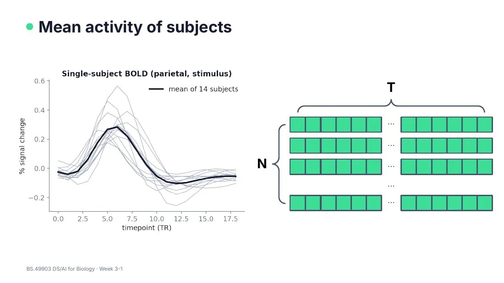
- 작은 예로 2행 3열 표
[[1,2,3],[3,4,5]]를 보자. - axis=0은 위아래로 누른다. 열마다 평균을 내므로 [2, 3, 4], 3개가 남는다.
- axis=1은 좌우로 누른다. 행마다 평균을 내므로 [2, 4], 2개가 남는다.
- 피험자 14명, 시점 19개인 BOLD 표에서 axis=0은 "사람" 방향을 누른다. 그러면 사람 구분이 사라지고 시점 19개의 평균 곡선이 남는다.
1.3 평균과 축(axis) (2/2) · 왜 평균을 내나 · 함정 W3-1 p14–21 · 실습 W3 2.2
- 왜 평균부터 내나: BOLD 효과는 신호 변화가 0.1–3 % 정도로 작다. 그래서 모든 분석은 시행이나 피험자에 걸쳐 평균을 내는 것에서 시작한다. (W3-1 p14: "every analysis starts by averaging over trials or subjects")
- 서로 독립인 잡음은 평균을 내면 상쇄되어 줄어든다. 평균의 분산은 $\mathrm{Var}(\bar x)=\sigma^2/N$이다. (1.5 증명 5단계, 1.6 SEM)
- axis=0 (피험자 평균): 집단의 전형적인 시간 반응 곡선을 보고 싶을 때 쓴다. 이 곡선은 대략 TR 5–6에서 봉우리를 이루고, 그 뒤에는 기준선(0) 아래로 내려가는 음의 undershoot가 나타난다.
- axis=1 (시간 평균): 피험자마다 숫자 하나로 요약할 때 쓴다. 단, 시간에 따른 모양은 지워진다.
- 실습 값이 0.001, 0.043, …처럼 0 근처인 것은 양의 봉우리와 음의 undershoot가 서로 상쇄되기 때문이다 추론.
- 가정: 피험자 평균은 모든 피험자가 같은 자극 시점에 맞춰져 있다고 가정한다 추론.
- 한계: 평균은 극단값에 끌려간다. 대안으로 중앙값(median)을 쓸 수 있다 자료 외 보충.
- axis=0은 행마다 평균을 하나씩 낸다.반대다. axis=0은 행들을 따라 내려가며 줄이므로 열마다, 즉 시간점마다 하나가 남아 (T,)가 된다. 행(피험자)마다 하나를 내는 것은 axis=1이고 결과는 (N,)다.
- (14, 19) 행렬에 axis=0을 지정하면 결과 shape은 (14,)다.결과에서는 지정한 축이 사라진다. 그래서 axis=0이면 (19,), axis=1이면 (14,)가 된다.
- axis=0 평균 곡선은 대표 피험자 한 명의 실제 반응과 같다.평균 곡선의 봉우리는 약 0.28로, 가장 강한 개인의 봉우리 약 0.57의 절반 정도다. 사람마다 봉우리 높이와 시점이 달라 평균하면 낮고 완만해지므로, 어떤 개인과도 똑같지 않을 수 있다 추론. (W3-1 p18, p19)
- 시간 평균이 0에 가까우면 반응이 없다는 뜻이다.봉우리와 undershoot가 상쇄된 것일 수 있다. 숫자로 요약하기 전에 그림부터 봐야 한다 추론.
X.shape = (14, 19)일 때 X.mean(axis=0), X.mean(axis=1), X.mean()의 shape과 의미는?
X.mean(axis=0)의 shape은 (19,)다. 시간점마다 14명의 평균을 낸 것으로, 집단 평균 반응 곡선이다.X.mean(axis=1)의 shape은 (14,)다. 피험자마다 19개 시간점을 평균한 값이다.X.mean()은 스칼라 하나로, 전체 266개 값의 평균이다. 축을 지정하지 않으면 전부 합치기 때문이다 자료 외 보충.
BOLD 신호는 효과가 0.1 ~ 3 %로 작고 잡음이 커서, 시행(trial)이나 피험자에 걸쳐 평균을 낸다. 서로 독립인 잡음은 평균하면 분산이 $\sigma^2/N$로 줄기 때문이다. $N\times T$ 행렬에서 axis=0 평균은 피험자 축을 없애고, 시간점마다 하나씩 길이 T인 집단 평균 곡선을 준다. axis=1 평균은 시간 축을 없애고, 피험자마다 하나씩 길이 N인 값을 준다. 예를 들어 (14, 19) 행렬이면 결과의 shape은 각각 (19,)와 (14,)다.
“The BOLD data matrix X has shape (14, 19): 14 subjects by 19 time points. What do X.mean(axis=0) and X.mean(axis=1) return, and why do we average across subjects?”
키워드: axis(축) · shape(배열 모양) · time point(시간점) · average across subjects(피험자 평균) · trial(시행) · signal change(신호 변화량) · independent noise(독립 잡음)
1.4 모집단 SD vs 표본 SD (1/3) · 정의와 ddof W3-1 p22–26 · 실습 W3 2.3
슬라이드(W3-1 p26)는 두 식을 모두 $s$로 쓴다. 두 식 모두 같은 데이터의 $\bar x$를 기준으로 하고, 나누는 수만 다르다. 모집단의 참값은 따로 $\mu$, $\sigma$로 쓰고, 1.5부터 $s$는 $N-1$로 나눈 표본 SD만 뜻한다.
- 편차 $x_i-\bar x$: 각 값이 평균에서 얼마나 떨어져 있는지를 나타낸다. 그런데 $\sum x_i = N\bar x$이므로 편차의 합은 항상 0이다. 그래서 편차를 그냥 평균 내면 0이 되어 퍼짐을 잴 수 없다.
- 제곱: 제곱하면 부호가 없어져 모두 양수가 된다. 또 멀리 떨어진 값에 더 큰 가중치가 실린다.
- 평균: 제곱한 편차의 합을 N이나 N−1로 나누면 분산(variance)이 된다. 분산의 단위는 원래 단위의 제곱이다. 예: (% signal)².
- 제곱근: 분산에 제곱근을 씌우면 원래 단위로 돌아오고, 이것이 SD다. SD는 "평균에서 전형적으로 떨어진 거리"를 뜻한다. (W3-1 p22: "SD describes the spread of the data.")
- numpy
std()의 기본값은 모집단 SD다. 즉ddof=0이다. - pandas
std()의 기본값은 표본 SD다. 즉ddof=1이다. - 나누는 수는 $N-\text{ddof}$다. ddof(delta degrees of freedom)는 N에서 빼는 수다.
- numpy로 표본 SD를 구하려면
np.std(X, axis=0, ddof=1)처럼 쓴다. - 두 SD의 비는 $\sqrt{N/(N-1)}$이다. N=14이면 1.0377이다. (notebook: 0.0958 vs 0.0994)
- 생물학에서는 보통 표본 SD가 맞다. 우리는 거의 항상 모집단의 일부만 측정하기 때문이다. N이 크면 두 값의 차이는 미미하다.
1.4 모집단 SD vs 표본 SD (2/3) · 그림과 예 W3-1 p22–26 · 실습 W3 2.3
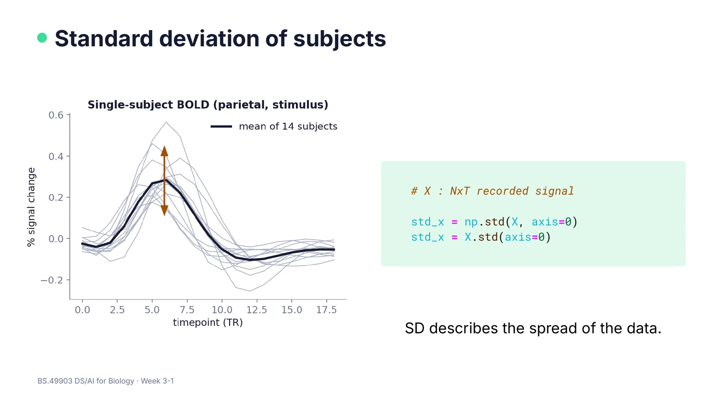
np.std(X, axis=0)는 이것을 시간점마다 하나씩(길이 T) 계산- 평균은 4다. 평균에서 떨어진 정도는 −2, 0, +2인데, 더하면 0이라 그대로는 쓸 수 없다.
- 그래서 제곱하면 4, 0, 4가 되고, 합은 8이다.
- 모집단식처럼 3으로 나누면 2.67이고, 제곱근을 씌우면 SD ≈ 1.63이다.
- 표본식처럼 2로 나누면 4이고, 제곱근을 씌우면 SD = 2다.
- 표본식은 이 세 개를 더 큰 집단에서 뽑은 일부로 보고 퍼짐을 조금 크게 잡는다. 왜 하필 하나 뺀 수로 나누는지는 1.5에서 증명한다.
1.4 모집단 SD vs 표본 SD (3/3) · 언제 쓰나 · 함정 W3-1 p22–26 · 실습 W3 2.3 · 과제1 1.1
- ÷N (모집단 SD): 가진 데이터가 관심 집단 전체일 때 쓴다. 즉 이 데이터 자체의 퍼짐을 묘사할 때다.
- 예를 들어 과제1 1.1은 200개를 모집단 전체(entire population)로 보고
population.std(ddof=0)= 8.7988을 쓴다. - ÷(N−1) (표본 SD): 데이터가 더 큰 모집단의 일부이고, 그 모집단의 퍼짐을 추정할 때 쓴다.
- 예를 들어 피험자 14명의 BOLD로 사람들 전체의 반응 변동을 알고 싶은 경우다. 생물학은 대부분 이 경우에 해당한다.
- 실무 함정: numpy와 pandas는 같은 데이터에 다른 값을 준다. 그래서 어떤 ddof를 썼는지 확인하고 명시해야 한다 추론.
- 차이가 중요한 때: N이 작을 때 중요하다. 분산 기준 비율 $N/(N-1)$은 N=3이면 1.5배, N=14면 1.077배, N=100이면 1.01배다.
- numpy
std()의 기본은 표본 SD이고, pandas의 기본은 모집단 SD다.반대다. numpy는 ddof=0으로 N으로 나누는 모집단 SD가, pandas는 ddof=1로 N−1로 나누는 표본 SD가 기본이다. - ddof=1은 1로 나눈다는 뜻이다.나누는 수는 $N-\text{ddof}$다. 그래서 ddof=1이면 N−1로 나눈다.
- SD의 비와 분산의 비는 둘 다 $N/(N-1)$이다.SD의 비는 $\sqrt{N/(N-1)}$로, N=14이면 1.0377이다. $N/(N-1)$은 분산의 비이고, N=14이면 1.077이다.
- 표본 SD가 더 정밀한 계산법이다.계산 정밀도의 문제가 아니라 묻는 질문이 다르다. 모집단 SD는 가진 데이터를 묘사하고, 표본 SD는 모집단을 추정한다.
- N이 1이어도 표본 SD를 구할 수 있다.N=1이면 표본식은 0/0이 되어 정의되지 않는다. numpy는
nan과 경고를 낸다 자료 외 보충. 데이터 하나로는 퍼짐을 추정할 수 없다.
numpy의 std()는 기본값이 ddof=0이라 N으로 나누는 모집단 표준편차(population SD)를 준다. pandas의 std()는 기본값이 ddof=1이라 N−1로 나누는 표본 표준편차(sample SD)를 준다. 나누는 수는 N − ddof이고, 두 값의 비는 $\sqrt{N/(N-1)}$이다. N=14이면 이 비는 1.0377이고, N이 크면 차이는 무시할 만하다. 생물 데이터는 대개 더 큰 모집단에서 뽑은 표본이므로 표본 SD를 보고한다.
“For the same 14 values, np.std returns 0.0958 but pandas .std() returns 0.0994. Explain why the two differ and which one you should report.”
키워드: population standard deviation(모집단 표준편차) · sample standard deviation(표본 표준편차) · ddof(N에서 빼는 수) · default(기본값) · degrees of freedom(자유도) · drawn from a population(모집단에서 뽑은)
같은 14개 값에서 np.std는 0.0958, pandas는 0.0994가 나왔다. 왜 다르며, 어느 쪽을 보고해야 하나?
np.std(x, ddof=1)로 구한다.1.5 Bessel 보정: 왜 N−1인가 (증명) (1/6) · 증명 1–3단계 유도 필수W3-1 p27 · W3-2 p2–4 · 과제1 Part 1
설정: $x_0,\dots,x_{N-1}$은 평균이 $\mu$, 분산이 $\sigma^2$이고 서로 독립이며 같은 분포를 따르는(i.i.d.) 값이다. 표본평균은 다음과 같다.
$$\bar x=\frac1N\sum_i x_i$$목표: 다음 식을 보이는 것이다. $\mathbb E[\cdot]$는 기댓값이다. 같은 크기의 표본을 수없이 다시 뽑아 같은 계산을 했을 때 나오는 값들의 평균이다.
$$\mathbb E\!\left[\sum (x_i-\bar x)^2\right]=(N-1)\sigma^2$$① $\bar x$ 기준 제곱합은 $\mu$ 기준 제곱합에서 $N(\bar x-\mu)^2$을 뺀 것과 같다. 교차항이 0이 되기 때문이다.
② 기댓값을 취하면 $\mu$ 기준 제곱합은 $N\sigma^2$이 된다. $N(\bar x-\mu)^2$은 $N\cdot\sigma^2/N=\sigma^2$이 된다.
③ 따라서 $\bar x$ 기준 제곱합의 기댓값은 $(N-1)\sigma^2$이다. 그러므로 $N-1$로 나눠야 기댓값이 $\sigma^2$이 된다.
- 제곱 전개: $(x_i-\mu)$를 $(x_i-\bar x)+(\bar x-\mu)$로 쪼갠 뒤 제곱해서 더한다. $$\sum_{i}(x_i-\mu)^2=\sum_i(x_i-\bar x)^2+\sum_i(\bar x-\mu)^2+2\sum_i(x_i-\bar x)(\bar x-\mu)$$
- 교차항은 0: $\sum_i x_i = N\bar x$이므로 편차의 합 $\sum_i(x_i-\bar x)$가 0이다. 따라서 교차항도 0이다. $$2\sum_i(x_i-\bar x)(\bar x-\mu)=2(\bar x-\mu)\sum_i(x_i-\bar x)=2(\bar x-\mu)(N\bar x-N\bar x)=0$$ (슬라이드 식: $2(N\bar x^2-N\mu\bar x-N\bar x^2+N\bar x\mu)=0$)
- 정리: 같은 값을 N번 더하므로 $\sum_i(\bar x-\mu)^2=N(\bar x-\mu)^2$이다. 따라서 다음이 성립한다. $$\sum_i(x_i-\bar x)^2=\sum_i(x_i-\mu)^2-N(\bar x-\mu)^2$$
4–7단계(기댓값 계산)는 다음 장에 이어진다.
1.5 Bessel 보정: 왜 N−1인가 (증명) (2/6) · 증명 4–7단계 유도 필수W3-1 p27 · W3-2 p2–4 · 과제1 Part 1
1–3단계에서 다음 식을 얻었다. 이제 양변의 기댓값을 계산한다.
$$\sum_i(x_i-\bar x)^2=\sum_i(x_i-\mu)^2-N(\bar x-\mu)^2$$- 기댓값: 양변에 기댓값을 취한다. 기댓값은 합과 상수배를 그대로 통과한다(선형성). $$\mathbb E\Big[\sum_i(x_i-\bar x)^2\Big]=\mathbb E\Big[\sum_i(x_i-\mu)^2\Big]-N\,\mathbb E[(\bar x-\mu)^2]$$
- 표본평균의 분산: 규칙 두 개를 쓴다. 첫째, 상수 $c$를 곱하면 분산은 $c^2$배가 된다($\mathrm{Var}(cX)=c^2\mathrm{Var}(X)$). 값들이 2배로 벌어지면 제곱 거리는 4배가 되기 때문이다. 그래서 $\frac1N$이 밖으로 나오며 $\frac1{N^2}$이 된다. 둘째, $x_i$들이 서로 독립이면 합의 분산은 각 분산의 합이다. 그래서 $\mathrm{Var}(\sum_i x_i)=N\sigma^2$이다. $$\mathrm{Var}(\bar x)=\mathrm{Var}\Big(\frac1N\sum_i x_i\Big)=\frac1{N^2}\mathrm{Var}\Big(\sum_i x_i\Big)=\frac1{N^2}\cdot N\,\mathrm{Var}(x_i)=\frac{\sigma^2}{N}$$
- 대입: 분산의 정의에 따라 $\mathbb E[(x_i-\mu)^2]=\sigma^2$이다. 또 $\mathbb E[\bar x]=\mu$이므로 $\mathbb E[(\bar x-\mu)^2]=\mathrm{Var}(\bar x)=\sigma^2/N$이다. 이것을 4단계 식에 넣으면 다음과 같다. $$\mathbb E\Big[\sum_i(x_i-\bar x)^2\Big]=N\sigma^2-N\cdot\frac{\sigma^2}{N}=(N-1)\sigma^2$$
- 결론: 양변을 $N-1$로 나누면 다음을 얻는다. $$\sigma^2=\mathbb E\Big[\frac{1}{N-1}\sum_i(x_i-\bar x)^2\Big]$$ 따라서 아래의 표본분산 $s^2$은 $\sigma^2$의 불편추정량(unbiased estimator)이다. $$s^2=\frac1{N-1}\sum_i(x_i-\bar x)^2$$
불편(unbiased)이란 표본을 수없이 다시 뽑아 계산했을 때 평균적으로 참값과 같다는 뜻이다. 표본 하나로 구한 $s^2$가 $\sigma^2$와 같다는 뜻은 아니다.
1.5 Bessel 보정: 왜 N−1인가 (증명) (3/6) · 직관 유도 필수W3-1 p27 · W3-2 p2–4 · 과제1 Part 1
- 표본평균 $\bar x$는 같은 데이터로 계산된다. 그리고 $\bar x$는 $\sum(x_i-c)^2$를 최소로 만드는 값이다. 미분해서 0으로 놓으면 $c=\bar x$가 나온다. $$\frac{d}{dc}\sum(x_i-c)^2=-2\sum(x_i-c)=0\ \Rightarrow\ c=\bar x$$
- 따라서 $\sum(x_i-\bar x)^2 \le \sum(x_i-\mu)^2$이다. 그래서 N으로 나누면 분산을 체계적으로 과소추정한다(bias).
- 줄어든 양의 기댓값은 정확히 $\sigma^2$ 하나만큼이므로, $N-1$로 나누면 보정된다. 줄어든 양은 증명 3단계의 $N(\bar x-\mu)^2$ 항이다.
- 다른 설명도 있다. 편차들의 합이 0이라는 제약이 하나 있으므로 자유도가 N−1이다.
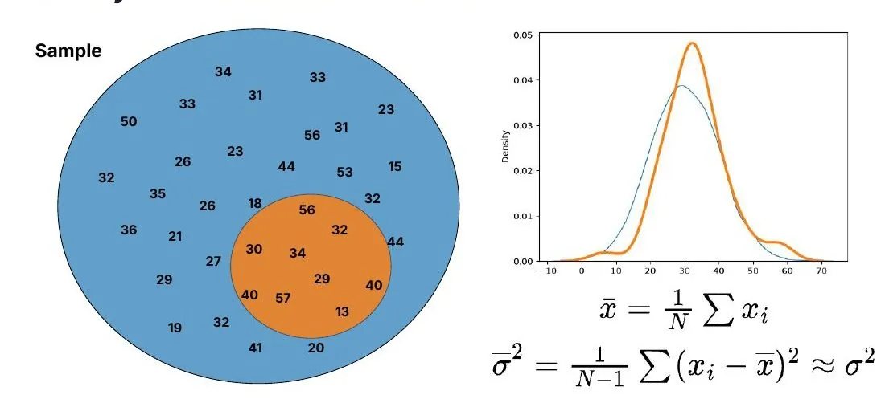
1.5 Bessel 보정: 왜 N−1인가 (증명) (4/6) · 직관 예 · 언제 쓰나 유도 필수W3-1 p27 · W3-2 p2–4 · 과제1 Part 1
- 두 값 모두 평균에서 1씩 떨어져 있으므로 진짜 분산은 1이다. 분산은 떨어진 거리 제곱의 평균이다.
- 여기서 2개씩 뽑으면 (0,0), (0,2), (2,0), (2,2) 네 경우가 똑같은 확률로 나온다.
- 각 표본을 자기 평균 기준으로 재면 제곱합은 0, 2, 2, 0이다.
- 예를 들어 (0,0)은 자기 평균이 0이라 퍼짐이 0이다. 진짜 평균 1에서 쟀다면 제곱합이 2였을 텐데, 자기 평균에 딱 맞춰 재는 바람에 0으로 보인다.
- 2로 나누면 0, 1, 1, 0이고 평균은 0.5다. 진짜 값 1의 절반, 즉 $\frac{N-1}{N}$배다.
- 1로, 즉 N−1로 나누면 0, 2, 2, 0이고 평균은 1이다. 정확히 맞는다 자료 외 보충.
- 해결하는 문제: 모집단 평균 $\mu$를 모르는 채 표본만으로 퍼짐을 추정하면 늘 작게 나온다. Bessel 보정은 이 체계적 편향을 없앤다.
- 언제: 표본으로 모집단의 분산이나 SD를 추정하는 모든 곳에서 쓴다. 피험자 14명의 BOLD 변동, SEM 계산(SD/√N)에 들어가는 SD, 펭귄 같은 측정 데이터가 그 예다.
- N이 작을수록 중요하다. N=3이면 3으로 나눈 분산과 2로 나눈 분산이 1.5배 차이 난다.
- 필요 없을 때: 데이터가 모집단 전체일 때는 필요 없다. 이때는 ddof=0을 쓴다. (과제1 1.1)
- 참평균 $\mu$를 알고 있어서 $\mu$ 기준으로 잴 때도 필요 없다. 증명 6단계에서 $\mathbb E[\sum(x_i-\mu)^2]=N\sigma^2$이므로, 이때는 ÷N이 이미 불편이다 추론.
1.5 Bessel 보정: 왜 N−1인가 (증명) (5/6) · 과제1 실험 과제1 1.1–1.3 · W3-1 p25
과제1 실험 결과
모집단 200개에서 크기 n=30인 표본을 1000회 뽑아 SD를 계산했다.
| 값 | 결과 | 해석 |
|---|---|---|
| 참 모집단 σ | 8.7988 | |
| n으로 나눈 표본 SD의 평균 | 8.6127 | 체계적으로 낮음. 반복을 늘려도 같은 방향이다(잡음이 아닌 bias). |
| n−1로 나눈 표본 SD의 평균 | 8.7600 | 거의 맞음. 단, 아주 약간 낮음 |
편향과 잡음의 차이
- 표본 하나하나의 SD는 위아래로 흔들린다. 이것이 잡음(noise)이다.
- 하지만 1000번의 평균이 한쪽, 즉 아래로 치우쳐 있다면 반복을 늘려도 사라지지 않는 편향(bias)이다. (과제 해설: "a bias, not random noise — it stays in the same direction no matter how many repetitions you run.")
- Bessel 보정이 정확히 불편하게 만드는 것은 분산 $s^2$다. 즉 $\mathbb E[s^2]=\sigma^2$이다.
- 표준편차 $s=\sqrt{s^2}$는 여전히 약간 낮다. 제곱근이 오목(concave) 함수이기 때문이다.
- Jensen 부등식에 따라 $\mathbb E[s]\le\sqrt{\mathbb E[s^2]}=\sigma$이다. 오목 함수에서는 '함숫값의 평균'이 '평균의 함숫값'보다 작거나 같다는 부등식이다. 그래서 n−1로 나눈 SD의 평균 8.76도 참값 8.80보다 낮다.
- 예: 0 또는 2가 반반인 집단(σ = 1)에서 2개씩 뽑아 N−1로 나누면 $s^2$는 0, 2, 2, 0이라 평균이 정확히 1이다. 그런데 $s$는 0, 1.41, 1.41, 0이라 평균이 약 0.71로 σ = 1보다 작다. 자료 외 보충 (같은 예: 4/6)
1.5 Bessel 보정: 왜 N−1인가 (증명) (6/6) · 함정 · 답안 과제1 1.1–1.3 · W3-1 p25
- N−1로 나누면 SD도 정확히 불편해진다.불편이 되는 것은 분산뿐이고, SD는 여전히 약간 낮다. 과제1에서도 n−1로 나눈 SD의 평균은 8.76으로 참값 8.80보다 낮았다. (W3-1 p25: "N−1 makes variance unbiased")
- 8.61이 낮게 나온 것은 표본이 우연히 작은 값들이었기 때문이다.1000회의 평균이 일관되게 낮으므로 편향이다. 우연이었다면 위아래로 상쇄됐을 것이다.
- ÷N 분산은 N과 상관없이 같은 비율로 틀린다.÷N 분산의 기댓값은 $\frac{N-1}{N}\sigma^2$이다. N=2면 절반, N=30이면 약 0.967배이고, N이 커질수록 1에 가까워진다.
- N−1이 필요한 것은 표본이 작아서다.원인은 표본 크기가 아니라 $\mu$ 대신 같은 데이터로 구한 $\bar x$를 쓰기 때문이다. N이 크면 효과가 작아질 뿐 원리는 같다.
- 불편추정량이면 표본 하나로 구한 $s^2$가 $\sigma^2$와 같다.평균적으로 같다는 뜻이다. 개별 표본의 값은 여전히 흔들린다.
표본평균 $\bar x$는 같은 데이터로 계산되고 제곱편차합을 최소로 만드는 값이므로, $\sum(x_i-\bar x)^2\le\sum(x_i-\mu)^2$이다. 기댓값으로는 정확히 $N\,\mathrm{Var}(\bar x)=\sigma^2$만큼 작아져서 $\mathbb E[\sum(x_i-\bar x)^2]=(N-1)\sigma^2$이 된다. 따라서 N−1로 나누는 Bessel 보정을 해야 분산의 불편추정량(unbiased estimator)이 된다. 평균을 추정하느라 자유도(degrees of freedom) 1개를 쓴 셈이다. 단, 불편이 되는 것은 분산이고, SD는 제곱근이 오목 함수라서 여전히 약간 낮다. 과제1에서 SD의 평균은 n으로 나누면 8.61, n−1로 나누면 8.76이었고, 참값은 8.80이었다.
“Why do we divide by N−1 instead of N when estimating the variance from a sample? Does this also make the sample standard deviation unbiased?”
키워드: unbiased estimator(불편추정량) · Bessel's correction(Bessel 보정) · sample variance(표본분산) · degrees of freedom(자유도) · bias(편향) · underestimate(과소추정하다) · expected value(기댓값)
Why do we divide by N−1 instead of N when estimating the variance from a sample? (증명 + 직관)
- 먼저 1.5의 1/6–2/6에 있는 7단계 증명을 쓴다.
- 핵심 직관: $\bar x$는 표본 자체로 구한 값이며 제곱편차 합을 최소화하는 점이다. 그래서 $\bar x$ 기준 편차는 참평균 $\mu$로부터의 편차보다 작다.
- N으로 나누면 평균적으로 $\frac{N-1}{N}\sigma^2$이 되어 과소추정한다. N−1로 나누면 $\mathbb E[s^2]=\sigma^2$이다.
- 과제 결과 8.61, 8.76, 8.80으로 확인할 수 있다. SD는 제곱근 때문에 여전히 약간 편향되어 있다.
표본 크기 N=1이면 두 공식은 각각 어떤 값을 주나? 자료 외 보충
- N으로 나누면 $(x_0-x_0)^2/1=0$이다. 데이터 1개로 "퍼짐이 0"이라는 말도 안 되는 추정을 하게 된다.
- N−1로 나누면 0/0이 되어 정의되지 않는다. 평균을 추정하는 데 자유도 1개를 다 써서, 퍼짐을 추정할 정보가 남지 않았다는 뜻이다.
- 이 예는 N−1의 "자유도" 해석을 잘 보여 준다.
과제1에서 n−1로 나눈 SD의 평균(8.76)이 참값(8.80)보다 여전히 낮은 이유를 한 문장으로?
1.6 SD vs SEM vs CV (1/5) · SD vs SEM W3-1 p28 · W3-2 p5 · 실습 W3 2.4
| 식 | 의미 | N이 커지면? | |
|---|---|---|---|
| SD | $\sqrt{\frac1{N-1}\sum(x_i-\bar x)^2}$ | 개체들이 얼마나 퍼져 있나 | 줄지 않음 (모집단의 성질) |
| SEM | $\dfrac{SD}{\sqrt N}$ | 평균값의 불확실성. 평균을 얼마나 정확히 아는가 | $1/\sqrt N$로 줄어듦. 추정이 촘촘해짐(tight) |
| CV | $\dfrac{\sigma}{\mu}$ | 평균 대비 상대적 변동. 단위 없음 | — |
SEM 유도: Bessel 증명 5단계에서 $\mathrm{Var}(\bar x)=\sigma^2/N$이었다. 제곱근을 씌우면 $\mathrm{SD}(\bar x)=\sigma/\sqrt N$이다.
- 즉 SEM은 표본평균의 SD다. 같은 실험을 여러 번 반복해 매번 평균을 구하면 그 평균값들이 흔들린다. 그 흔들림의 크기가 SEM이다.
- 독립인 값들은 분산이 더해지므로 평균의 분산은 $1/N$로 준다. SD는 분산의 제곱근이므로 $1/\sqrt N$로 준다.
- 그룹을 비교하는 error bar에는 보통 SEM을 쓴다. 피험자 간 퍼짐 자체가 요점이면 SD가 정직한 선택이다.
- 실습 notebook 값은 N=14, 평균 0.2672, SD 0.0994, SEM 0.0266, CV 0.372다.
- CV 예: 평균 4000 kg, SD 10 kg이면 CV는 1/400이다. 평균 70 kg, SD 10 kg이면 CV는 1/7이다. 같은 SD라도 상대적 변동은 완전히 다르다.
- 코끼리는 평균 4000 kg에 SD 400, 쥐는 평균 25 g에 SD 2.5다. 둘 다 CV가 0.10으로 같으므로, CV로는 스케일이 전혀 다른 것끼리도 변동성을 비교할 수 있다. (자세히는 4/5)
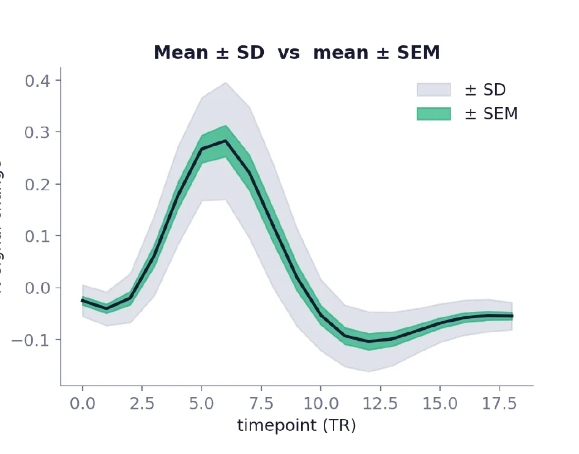
- SD는 "사람들끼리 얼마나 다른가"를 나타낸다. 학생들의 키 차이가 그 예다.
- SEM은 "우리가 구한 평균이 얼마나 믿을 만한가"를 나타낸다.
- 전국 학생의 평균 키를 알고 싶다고 하자. 무작위로 뽑은 한 명의 키로 짐작하면 크게 틀릴 수 있지만, 100명을 뽑아 평균 내면 훨씬 덜 틀린다.
- 학생들 사이의 키 차이(SD)는 100명을 재도 그대로다. 평균의 흔들림(SEM)만 한 명일 때의 $1/\sqrt{100}=1/10$로 줄어든다.
1.6 SD vs SEM vs CV (2/5) · 언제 무엇을 · 함정 W3-1 p28 · 실습 W3 2.4
- SEM: 두 조건이나 두 그룹의 평균이 다른지를 보여 줄 때 쓴다. 자극과 휴식을 비교하는 경우가 그 예다. SEM은 평균 추정의 정밀도를 나타낸다.
- SD: 개체들이 얼마나 다양한지가 요점일 때 쓴다. 예를 들어 14명의 BOLD 반응이 사람마다 얼마나 다른지를 보일 때다.
- 이때 SEM을 쓰면 N만 키워도 막대가 줄어들어, 변동이 작아 보이는 착시가 생긴다.
- 가정: 슬라이드는 SEM을 N개의 독립 시행이나 피험자에 걸쳐 정의한다. ("across N independent trials / subjects")
- 한 사람에게서 여러 번 잰 값을 서로 다른 피험자 N명처럼 세면 이 가정이 깨진다. 이웃한 시간점처럼 서로 닮은 값을 독립으로 세도 마찬가지다.
- 그러면 SD/√N이 집단 평균의 불확실성을 과소평가한다 자료 외 보충.
- N을 늘리면 SD와 SEM이 모두 줄어든다.줄어드는 것은 SEM뿐이다. SD는 모집단의 σ 근처로 수렴할 뿐 작아지지 않는다.
- SEM은 SD/N이다.SEM은 SD/√N이다. $\sigma^2/N$은 표본평균의 분산이고, 제곱근을 씌워야 표본평균의 SD, 즉 SEM이 된다.
- N을 4배로 늘리면 SEM이 1/4이 된다.SEM은 $1/\sqrt4$, 즉 1/2이 된다. SEM을 절반으로 줄이려면 N이 4배 필요하다.
- SEM이 작으면 피험자들이 서로 비슷하다는 뜻이다.평균을 정확히 안다는 뜻일 뿐이다. N이 크면 SD가 커도 SEM은 작다.
- 퍼짐을 보여 줄 때도 SEM이 더 깔끔하니 SEM을 쓴다.SEM은 N ≥ 2이면 항상 SD보다 좁아서 변동이 작아 보인다. 퍼짐이 요점이면 SD가 정직한 선택이다. (W3-1 p28)
- SEM 막대가 겹치지 않으면 차이가 통계적으로 유의하다.보장되지 않는다 자료 외 보충. SEM이 같은 두 그룹의 막대가 막 안 겹치면 평균 차이는 약 $2\,\mathrm{SEM}$이다. 그런데 두 평균의 차이는 SEM 하나보다 약 1.4배($\sqrt2$배) 더 흔들린다. 유의하려면(p < 0.05) 차이가 이 흔들림의 약 2배는 되어야 하는데, 여기서는 약 1.4배뿐이라 p ≈ 0.16이다. 유의성은 검정으로 판단한다.
1.6 SD vs SEM vs CV (3/5) · SD vs SEM 답안 · 문제 W3-1 p28 · 실습 W3 2.4
표준편차(SD)는 개체 사이의 퍼짐이므로 N을 늘려도 줄지 않는다. 평균의 표준오차(SEM)는 SD/√N이며, 표본평균의 표준편차, 즉 평균 추정의 불확실성이다. 독립인 값들의 분산이 더해져 $\mathrm{Var}(\bar x)=\sigma^2/N$이 되므로, SEM은 N이 커질수록 $1/\sqrt N$로 줄어든다. 그룹 평균을 비교하는 오차 막대(error bar)에는 SEM을, 개체 간 변동을 보일 때는 SD를 쓴다.
“When should you plot SEM error bars rather than SD error bars? Why does the SEM shrink as more subjects are added while the SD does not?”
키워드: standard deviation(표준편차) · standard error of the mean(평균의 표준오차) · error bar(오차 막대) · variability(변동성) · uncertainty(불확실성) · shrink(줄어들다)
When should you plot SEM error bars rather than SD error bars? Why does SEM shrink with more subjects while SD does not?
- SEM은 평균 추정치의 불확실성, 즉 표본평균의 표준편차 $\sigma/\sqrt N$이다. 그래서 "두 그룹의 평균이 다른가"를 보여 줄 때 쓴다.
- SD는 개체 간 변동, 즉 모집단의 퍼짐을 나타낸다. 그래서 개인차나 퍼짐 자체가 관심일 때 쓴다.
- N이 늘면 평균에 대한 정보가 늘어 $\mathrm{Var}(\bar x)=\sigma^2/N$이 줄어든다. 하지만 개체들이 퍼져 있는 정도인 σ는 표본을 많이 뽑는다고 변하지 않는다.
실습 값 N=14, SD 0.0994에서 SEM을 직접 계산하고, 피험자가 56명이면 SEM은 대략 얼마가 될까?
1.6 SD vs SEM vs CV (4/5) · CV W3-2 p5 · 실습 W3 2.4
변동계수(CV, coefficient of variation)
$$\mathrm{CV}=\frac{\sigma}{\mu}$$실습 W3 2.4 코드는 cv = sd / x.mean()이다. 여기서 sd는 ddof=1인 표본 SD다.
- CV는 모집단 평균에 비해 변동이 어느 정도인지를 나타낸다. (W3-2 p5: "the level of variation compared to the mean of the population")
- SD와 평균은 단위가 같아서, 나누면 단위가 사라진다. 그래서 kg과 g처럼 단위나 스케일이 달라도 비교할 수 있다.
- 평균 4000 kg, SD 10 kg이면 CV는 1/400이다. 평균 70 kg, SD 10 kg이면 CV는 1/7이다.
- 코끼리 4000 kg ± 400과 쥐 25 g ± 2.5는 둘 다 CV가 0.10이다. 둘 다 전형적인 크기의 약 10 %만큼 변동한다는 뜻이다. (실습 W3 2.4: "both vary by about 10% of their typical size")
- 몸무게가 10 kg 들쭉날쭉한 것은 4톤 코끼리에게는 거의 없는 차이다(0.25 %).
- 하지만 70 kg인 사람에게는 큰 차이다(약 14 %).
- 그래서 SD가 10 kg으로 같아도 CV는 전혀 다르다.
- 반대로 SD가 400 kg과 2.5 g으로 전혀 달라도 CV는 10 %로 같을 수 있다.
- 해결하는 문제: SD는 값의 크기(스케일)를 따라 커진다. 그래서 코끼리와 쥐처럼 크기가 다른 대상의 SD를 직접 비교하면 "큰 동물이 변동이 더 크다"는 착시가 생긴다. CV는 SD를 평균으로 나눠 상대화한다.
- 언제 쓰나: 스케일이나 단위가 서로 다른 집단끼리 변동성을 비교할 때 쓴다. 코끼리와 쥐의 비교가 그 예다.
- CV는 질량, 길이, 개수처럼 음수가 나오지 않고 0이 "없음"을 뜻하는 양에서 의미가 있다. 또 평균이 0보다 충분히 커야 한다 자료 외 보충.
- 언제 쓰면 안 되나: 평균이 0 근처이거나 음수가 될 수 있는 양에는 쓰지 않는다.
- 예를 들어 반응이 시작되기 전 초반 시간점(timepoint 0–2)에서 BOLD % signal change의 피험자 평균은 −0.025, −0.04, −0.02다. 이처럼 0 근처의 음수이면 CV가 폭주하거나 음수가 된다 자료 외 보충. (실습 W3 2.2)
- 실습의 CV 0.372는 봉우리 근처 시간점에서 계산한 값이다. 그 시간점의 평균은 0.2672다.
- 대안: 단위가 같고 스케일이 비슷하면 SD를 그대로 쓰는 편이 더 직관적이다.
1.6 SD vs SEM vs CV (5/5) · CV 함정 · 답안 W3-2 p5 · 실습 W3 2.4
- SD가 같으면 변동성도 같다.상대적 변동은 다를 수 있다. 앞의 예에서 CV는 1/400과 1/7로 다르다.
- CV의 단위는 kg이다.CV는 단위가 없다. 그래서 kg으로 잰 코끼리와 g으로 잰 쥐를 비교할 수 있다.
- CV는 분산을 평균으로 나눈 값이다.CV는 SD를 평균으로 나눈 값($\sigma/\mu$)이다. 분산을 평균으로 나눈 값은 단위가 남는 다른 양이다 자료 외 보충.
- SD가 큰 쪽이 CV도 크다.코끼리의 SD 400 kg은 쥐의 SD 2.5 g보다 훨씬 크지만, CV는 둘 다 0.10이다.
변동계수(CV)는 σ/μ로, SD를 평균으로 나눈 상대적 변동이다. 분자와 분모의 단위가 같으므로 CV에는 단위가 없다. 그래서 kg으로 잰 코끼리와 g으로 잰 쥐처럼 스케일과 단위가 다른 집단의 변동성을 비교할 수 있다. 평균 4000 kg에 SD 400 kg인 코끼리와 평균 25 g에 SD 2.5 g인 쥐는 SD가 크게 다르지만, CV는 둘 다 0.10이다. 반대로 SD가 똑같이 10 kg이어도 평균이 4000 kg이면 CV는 1/400이고, 평균이 70 kg이면 1/7이다.
“Elephants have a mean body mass of 4000 kg with an SD of 400 kg, and mice 25 g with an SD of 2.5 g. Are elephants more variable than mice? Explain using the coefficient of variation.”
키워드: coefficient of variation(변동계수) · relative variability(상대적 변동) · unitless(단위가 없는) · scale(크기 수준) · mean(평균) · standard deviation(표준편차)
코끼리는 SD 400 kg, 쥐는 SD 2.5 g이다. 코끼리 몸무게가 더 "변동이 크다"고 말할 수 있나?
1.✎ 영어 용어 정리 시험 문제는 영어로 나온다
문제에서 이 단어가 보이면 무엇을 묻는지 바로 떠올릴 수 있어야 한다. 답은 한국어로 써도 되지만, 용어는 영어 그대로 써도 좋다.
| English | 한국어 | 한 줄 뜻 |
|---|---|---|
| data type (dtype) | 데이터 타입 | 값을 저장하는 형식과 크기다. 값의 범위, 메모리, 연산 결과를 정한다. |
| bit / byte | 비트 / 바이트 | 비트는 0 또는 1을 담는 한 칸이다. 8비트가 1바이트다. |
| unsigned integer (uint) | 부호 없는 정수 | $n$비트로 $0\sim2^n-1$을 표현한다. uint8은 0 ~ 255다. |
| signed integer (int) | 부호 있는 정수 | $n$비트로 $-2^{n-1}\sim2^{n-1}-1$을 표현한다. int8은 −128 ~ 127이고, int32는 $\pm2^{31}$이다. |
| integer overflow | 정수 오버플로 | 계산 결과가 타입의 범위를 넘는 것이다. NumPy uint8에서 242 + 100은 86이 된다. |
| wrap around | 감김 | 넘친 값이 표현 가능한 값의 개수로 나눈 나머지로 돌아가는 것이다. uint8이면 256으로 나눈 나머지이고, 255에서 멈추는 포화와 다르다. |
| cast (astype) | 타입 변환 | 값을 다른 dtype으로 바꾸는 것이다. uint8 영상은 계산 전에 int나 float로 바꾼다. |
| clip | 범위 자르기 | 범위 밖의 값을 경계값으로 맞추는 것이다. 넓은 타입으로 계산한 뒤에 0 ~ 255로 자른다. |
| intermediate value | 중간 계산값 | 최종 결과 전에 생기는 값이다. 이 값이 넘쳐도 최종 결과가 망가진다. |
| Boolean (bool) | 참/거짓 값 | True 또는 False다. 계산에서는 1과 0이 되고, 0이 아닌 수는 True다. |
| memory | 메모리 | 픽셀 수에 픽셀당 byte 수를 곱한 크기다. 9800×9792 영상은 uint8이면 약 96 MB, uint64이면 약 768 MB다. |
| segmentation | 분할 | 영상의 세포마다 고유한 정수 ID를 붙이는 것이다. 세포 수를 모르므로 넉넉한 uint를 쓴다. |
| axis | 축 | 배열에서 연산이 진행되는 방향이다. 지정한 축은 결과에서 사라진다. |
| population / sample | 모집단 / 표본 | 모집단은 알고 싶은 대상 전체다. 표본은 그중 실제로 측정한 일부이고, 생물 데이터는 대개 표본이다. |
| deviation | 편차 | 각 값에서 평균을 뺀 값이다. 편차의 합은 항상 0이다. |
| variance | 분산 | 편차 제곱의 평균이다. 단위는 원래 단위의 제곱이다. |
| standard deviation (SD) | 표준편차 | 분산의 제곱근이다. 값이 평균에서 전형적으로 떨어진 거리를 나타낸다. |
| population standard deviation | 모집단 표준편차 | N으로 나눈 표준편차다. numpy std()의 기본값(ddof=0)이다. |
| sample standard deviation | 표본 표준편차 | N−1로 나눈 표준편차다. pandas std()의 기본값(ddof=1)이고, 표본으로 모집단의 퍼짐을 추정할 때 쓴다. |
| ddof (delta degrees of freedom) | N에서 빼는 수 | 나누는 수가 N − ddof가 되게 한다. 두 SD의 비는 $\sqrt{N/(N-1)}$이고, N=14이면 1.0377이다. |
| degrees of freedom | 자유도 | 자유롭게 변할 수 있는 값의 개수다. 편차의 합이 0이라는 제약 때문에 N−1이 된다. |
| i.i.d. (independent and identically distributed) | 독립 동일 분포 | 서로 독립이고 같은 분포를 따른다는 뜻이다. Bessel 증명의 가정이다. |
| expected value | 기댓값 | 표본을 무수히 다시 뽑아 계산했을 때의 평균값이다. $\mathbb E[\cdot]$로 쓴다. |
| bias | 편향 | 반복해도 사라지지 않는 한쪽 방향의 오차다. N으로 나눈 분산의 기댓값은 $\frac{N-1}{N}\sigma^2$이라서 참값보다 낮다. |
| unbiased estimator | 불편추정량 | 기댓값이 참값과 같은 추정량이다. N−1로 나눈 표본분산 $s^2$는 $\sigma^2$의 불편추정량이다. |
| Bessel's correction | Bessel 보정 | 분산을 구할 때 N 대신 N−1로 나누는 것이다. 분산은 불편이 되지만 SD는 여전히 약간 낮다. 과제1에서 8.76이 참값 8.80보다 낮았다. |
| concave function | 오목 함수 | 두 점을 잇는 선분보다 그래프가 위에 있는 함수다. 제곱근이 그 예이고, 그래서 $\mathbb E[s]\le\sigma$이다. |
| standard error of the mean (SEM) | 평균의 표준오차 | SD/√N이다. 표본평균의 표준편차이며 N이 커지면 줄어든다. |
| coefficient of variation (CV) | 변동계수 | σ/μ다. 단위가 없어서 스케일이 다른 집단의 변동을 비교할 수 있다. |
| error bar | 오차 막대 | 그래프에서 평균 주위의 불확실성이나 퍼짐을 보여 주는 막대다. 평균 비교에는 SEM, 퍼짐에는 SD를 쓴다. |
2.1 1D 데이터란? (1/4) W3-1 p10–13
1D 데이터는 하나의 축(axis)으로 인덱싱되는 숫자 리스트다. 슬라이드는 이를 "The axis changes; the toolbox does not."라고 표현한다. 축의 종류가 바뀌어도 같은 코드를 그대로 쓴다는 뜻이다.
| 축 | 예 | 값의 의미 |
|---|---|---|
| 시간(time) | LFP, EEG, calcium trace, fMRI BOLD | 활동 값(float) $\Delta t$마다 샘플 $x_1,\dots,x_T$ |
| 위치(position) | DNA/단백질 서열 "ATGCGC…" | base pair마다 염기 하나 숫자로 인코딩할 수 있음(A:1, T:2, G:3, C:4) 예: "ATGCGCTAAGC" → 1, 2, 3, 4, 3, 4, 2, 1, 1, 3, 4 |
| feature index | 한 샘플의 유전자 7,129개 발현량 | 각 feature 값 |
같은 1D 자료구조라도 그리는 방식은 다르다("Same 1D data structure, visualized differently."). 시계열은 선 그래프로 그린다(p11). DNA 서열은 위치마다 염기를 색으로 칠한 띠로 그린다(p12). 유전자 발현은 가로축이 유전자 번호(gene index)인 막대 그래프로 그린다(p13).
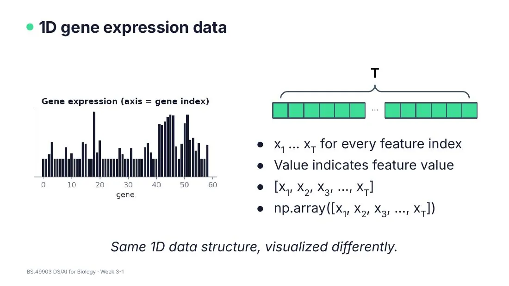
- 시간축은 연속적이어서 이웃 샘플끼리 값이 비슷하다. 그래서 평활화와 다운샘플링이 의미가 있다.
- feature index(유전자 번호)는 순서가 임의적이다. 그래서 이웃끼리 평균내는 연산은 의미가 없다. (2.2의 질문)
2.1 1D 데이터란? (2/4) — 이웃 관계가 의미 있는 축 · 함정 W3-1 p10–13
- 번호가 몇 번째 순간이면, 1 ms, 즉 1/1000초마다 잰 뇌 신호(LFP)다.
- 번호가 몇 번째 글자이면, DNA 염기 서열이다. 글자를 숫자로 바꿔 넣은 것이다.
- 번호가 몇 번 유전자이면, 한 사람의 유전자별 발현량이다.
- 해결하는 문제: 데이터 종류마다 도구를 새로 만들지 않도록 모두 "축 하나짜리 숫자 리스트"로 통일한다. 그러면 평균, SD, sliding window, kernel 코드를 그대로 재사용할 수 있다.
- 국소(local) 연산이 의미 있는 경우: 축의 순서, 즉 이웃 관계에 의미가 있을 때다. 시간 신호는 값이 연속적인 숫자라서 이동평균과 다운샘플링이 의미가 있다. 서열 위치는 값이 문자라서 window 매칭(==, codon 찾기)을 쓴다. 추론
- 서열은 문자라서 계산하려면 숫자로 바꾼다. 그 숫자는 이름표일 뿐이라 평균해도 의미가 없다. 추론 (p12, 아래 함정)
- 언제 쓰면 안 되나: 유전자 번호처럼 순서가 임의인 축이다. 이런 축에서는 이웃 평균과 다운샘플링이 의미가 없다. 추론
- 대안: 각 유전자를 하나의 변수로 다루는 방법을 쓴다. 회귀, PCA, clustering이 그 예다. 추론 (3·4장)
- 자료구조(1D array)가 같으면 같은 연산이 모두 타당하다.코드는 돌아가도 인접 인덱스의 의미가 축마다 다르다. 이웃 관계에 의미가 있는 것은 시간 축과 위치 축뿐이고, 그중 값이 연속적인 숫자여서 이웃 평균까지 의미가 있는 것은 시간 신호다. 추론
- 염기 인코딩 A:1, T:2, G:3, C:4는 크기가 있는 숫자다.이 숫자는 이름표(label)일 뿐이다. A(1)와 G(3)의 평균이 2, 즉 "T"라는 계산이나 "C가 A의 4배"라는 해석은 의미가 없다. 추론 흔히 쓰는 대안은 one-hot 인코딩이다. 자료 외 보충
- 유전자 7,129개의 발현 벡터는 7,129 시점짜리 시계열이다.이 벡터의 축은 시간이 아니라 feature index다. 선으로 이으면 없는 연속성을 암시하므로 막대로 그리는 편이 정직하다. 추론
- "The axis changes; the toolbox does not"는 모든 도구가 모든 축에서 타당하다는 뜻이다.같은 코드를 쓸 수 있다는 뜻이지, 모든 도구가 모든 축에서 타당하다는 뜻이 아니다. 추론
2.1 1D 데이터란? (3/4) — 시계열 예: BOLD · LFP W3-1 p14–15, p32
BOLD(Blood-Oxygen-Level-Dependent)
- 뉴런이 발화하면 국소 혈류 증가가 산소 소비보다 훨씬 크다. 그래서 산소화된 혈액이 밀려온다.
- 그 결과 deoxy-Hb가 줄어들고 신호가 밝아진다.
- 한 voxel의 크기는 약 3×3×3 mm다.
- 효과가 매우 작아서(약 0.1–3% signal change) 모든 분석은 trial이나 피험자 평균에서 시작한다.
- 한 voxel의 값을 시간순으로 늘어놓으면 $x_1,\dots,x_T$가 된다. 이것이 1D 시계열이다. (p15)
LFP(local field potential)
- 조직 안에 꽂은 전극에서 잰 세포외 전압 중 느린 성분이다.
- 전극 끝 약 0.1–1 mm 안에 있는 뉴런 수천 개의 시냅스 전류 합이 신호를 지배한다. 즉 집단(population) 신호다.
- 전기 신호라서 직접적이고 빠르다. ms 해상도이며 1–30 kHz로 샘플링한다.
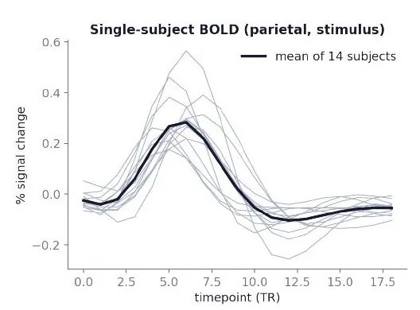
| BOLD (fMRI) | LFP | |
|---|---|---|
| 무엇을 재나 | 혈액 산소화(deoxy-Hb 양)의 변화 | 전극 주변 세포외 전압의 느린 성분 |
| 신경활동과의 관계 | 혈류 반응을 거친 간접 신호 추론 | 시냅스 전류의 직접 전기 신호 ("Direct and fast") |
| 시간 | 느림 그림에서는 약 5–6 TR 뒤에 정점 TR(repetition time)은 fMRI가 뇌 전체를 한 번 찍는 시간 간격이다. 자료 외 보충 | ms 해상도, 1–30 kHz |
| 공간 | voxel ≈ 3×3×3 mm | 전극 끝 약 0.1–1 mm 안의 세포 수천 개 |
| 분석 시작 · 수업 예 | 효과가 0.1–3%로 작음 trial·피험자 평균부터 | 예: 쥐 해마(rat hippocampus), 1000 Hz 기록 (2.3·2.5절 smoothing 예제) |
2.1 1D 데이터란? (4/4) — BOLD · LFP: 이해와 함정 W3-1 p14, p28, p32
- BOLD: 뇌의 한 부분이 일을 하면 그곳에서 쓰는 산소가 늘어난다. 그런데 그곳으로 오는 피(산소를 실은 피)는 그보다 훨씬 많이 늘어난다. 그래서 그 자리에서 "산소를 내주고 빈 헤모글로빈"의 비율이 오히려 줄어든다.
- 이 빈 헤모글로빈이 적을수록 MRI 영상이 조금 더 밝게 찍힌다. 그래서 일하는 부위가 밝아진다.
- 밝아지는 정도는 겨우 0.1–3%라서 한 번의 시행(trial)만 보면 잡음에 묻히기 쉽다. 그래서 여러 시행이나 피험자를 평균한다. 앞 쪽 그림에서 회색 선(피험자 14명 각각)은 높이가 제각각이고 들쭉날쭉하지만, 그 평균인 검은 선은 매끈하고 TR 5–6 부근의 정점이 분명하다.
- LFP: 뇌 조직에 꽂은 전극 주변에서 수천 개 신경세포가 주고받는 전류가 모여 만든 전압이다. 피를 거치지 않는 전기 신호라서 1/1000초 단위로 바로 잡힌다.
- 왜 평균하면 보이나: 매 시행의 진짜 반응은 비슷하고 잡음은 무작위다. 그래서 N번 평균하면 반응은 그대로 남고, 잡음의 흔들림만 약 $1/\sqrt N$로 줄어든다. 이것은 SEM = SD/$\sqrt N$과 같은 원리다. 추론 (W3-1 p28, 1.6절)
- BOLD를 쓸 때: 머리 밖에서 뇌 전체를 voxel 단위로 보고 싶을 때 쓴다. 대신 느리고 간접적이며 효과가 작아서 평균이 필수다. 추론
- LFP를 쓸 때: ms 단위의 타이밍이나 빠른 진동을 봐야 할 때 쓴다. 대신 전극을 조직에 넣어야 하고, 전극 주변의 국소 집단만 볼 수 있다. 추론
- 둘 다 1D 시계열이므로 평균, 이동평균, kernel smoothing 같은 도구를 그대로 쓴다.
- 뉴런이 산소를 많이 써서 deoxy-Hb가 늘고, 그래서 신호가 밝아진다.반대다. 혈류 증가가 산소 소비 증가보다 훨씬 커서 deoxy-Hb가 오히려 줄어들고, 그래서 밝아진다.
- BOLD는 뉴런 발화를 직접 잰다.BOLD는 혈액 산소화를 재는 간접 지표다. 슬라이드가 "Direct and fast"라고 부르는 쪽은 LFP다. 추론
- LFP는 "slow part"이니까 측정이 느리다(해상도가 낮다)."slow part"는 전압 중 천천히 변하는 성분이라는 뜻이다. LFP는 ms 해상도이며 1–30 kHz로 샘플링한다.
- LFP는 뉴런 하나의 spike다.LFP는 주변 수천 개 세포의 시냅스 전류 합(summed synaptic currents)이 만드는 신호다. 즉 뉴런 하나가 아니라 집단(population)의 신호다.
- 평균하면 효과(signal change)가 커진다.효과의 크기는 그대로다. 잡음이 줄어서 효과가 드러나는 것이다. 추론
뉴런이 활동하면 국소 혈류(blood flow) 증가가 산소 소비 증가보다 훨씬 커서, 산소화된 혈액이 밀려온다. 그 결과 deoxy-Hb가 오히려 줄어들어 BOLD 신호가 밝아진다. 효과가 0.1 ~ 3 %로 작으므로, trial이나 피험자에 걸쳐 평균을 내 잡음을 줄인 뒤 분석한다. 반면 LFP(local field potential)는 전극 주변 수천 개 세포의 시냅스 전류 합이 만드는 세포외 전압의 느린 성분이다. LFP는 ms 해상도의 직접적인 전기 신호이고, BOLD는 혈류 반응을 거친 느리고 간접적인 신호다 추론.
“Explain why the BOLD signal increases when neurons become active. How does the LFP differ from BOLD in what it measures and in its temporal resolution?”
키워드: blood oxygenation(혈액 산소화) · deoxyhemoglobin(탈산소 헤모글로빈) · blood flow(혈류) · local field potential(국소장 전위) · synaptic currents(시냅스 전류) · extracellular voltage(세포외 전압) · temporal resolution(시간 해상도)
2.2 다운샘플링(downsampling) (1/2) W3-1 p29 · W3 notebook 3.4
x_ds = x[::2]예: 0, 1, 2, …, 11 → 0, 2, 4, 6, 8, 10
남긴 샘플의 노이즈가 그대로 유지된다.
$x'_0=\frac{x_0+x_1}{2}$, …
결과: 0.5, 2.5, 4.5, …
각 블록을 먼저 평균하므로 노이즈가 줄고 느린 파형이 보존된다. step이 w인 sliding window와 같다.
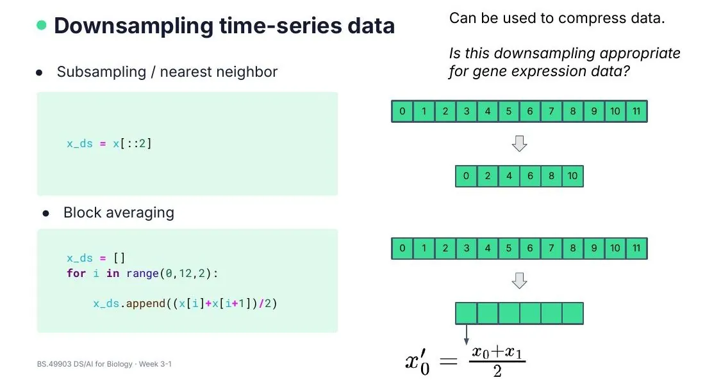
다운샘플링은 데이터를 압축(compress)하는 데 쓸 수 있다. 직선 데이터에서는 두 방법의 결과가 비슷하다. 하지만 노이즈가 있는 신호에서는 block averaging이 훨씬 낫다. (notebook: sin파 + 노이즈, 4배 다운샘플)
- subsampling: 0, 2, 4, …번째만 남기고 나머지는 버린다. 남긴 값에 우연한 오차가 있었다면 그 오차도 그대로 남는다.
- block averaging: 두 개씩 묶어 평균한다. 예를 들어 0번과 1번을 평균하면 0.5다. 우연한 오차는 +와 −가 섞여 있어서 평균하면 서로 일부 지워진다.
왜 block averaging이 노이즈를 줄이나 추론
- 각 샘플이 "진짜 값 + 서로 독립인 잡음(SD $\sigma$)"이라고 하자. 그러면 $f$개를 평균한 값의 잡음 SD는 $\sigma/\sqrt f$다. SEM과 같은 원리다.
- 예를 들어 $f=4$이면 잡음이 절반으로 준다. (직접 시뮬레이션: subsampling 잡음 SD 1.00, 4-block 평균 0.50)
- subsampling은 샘플 하나를 고를 뿐이다. 그래서 잡음 SD는 $\sigma$ 그대로다.
- 대가도 있다. 블록 안의 빠른 변화도 함께 평균되어 사라진다.
- block averaging은 폭 w, step w인 sliding window 평균, 즉 겹치지 않는 이동평균이다. 그래서 이동평균의 trade-off를 그대로 가진다. (2.3)
2.2 다운샘플링 (2/2) — 언제 쓰고, 언제 안 되나 W3-1 p29 · W3 notebook 3.4
- 해결하는 문제: 필요 이상으로 촘촘히 샘플링된 신호를 줄여 저장량과 계산량을 줄인다. 슬라이드 표현은 "Can be used to compress data"다.
- 노이즈가 있는 신호: block averaging을 쓴다. 블록 평균이 잡음을 줄이면서 느린 파형을 보존한다. (실습: sin파 + 노이즈, 4배)
- subsampling도 괜찮은 경우: 신호가 깨끗하고, 샘플 간격에 비해 아주 천천히 변할 때다. 0–11 직선 예에서는 두 방법이 거의 같다. 추론
- 언제 쓰면 안 되나 ①: 축 순서가 임의인 데이터다. 유전자 발현이 그 예다. 추론 (아래 Q)
- 언제 쓰면 안 되나 ②: 관심 있는 사건이 새 샘플 간격(블록)보다 짧을 때다. 그 사건은 다운샘플링 과정에서 사라진다. 추론
- 샘플 수가 줄었으니 subsampling도 노이즈를 줄인다.subsampling은 고른 샘플의 노이즈를 그대로 가진다. 노이즈를 줄이는 것은 평균이다.
- block averaging은 step이 1인 이동평균이다.block averaging은 step이 w(블록 크기)인 sliding window다. 그래서 N이 w의 배수이면 출력은 N/w개이고, step 1인 이동평균은 N−w+1개다. 예를 들어 N=12, w=2이면 block averaging은 6개, 이동평균은 11개다.
- 블록 평균값은 블록의 첫 시점을 대표한다.블록의 중앙 시점을 대표한다. 예를 들어 0번과 1번의 평균은 t = 0.5에 놓인다. 실습 코드도
t.reshape(-1, f).mean(axis=1)로 각 블록의 중앙("centre of each block")에 점을 그린다. - subsampling은 값을 덜 남길 뿐, 없던 패턴을 만들지는 않는다.빠르게 진동하는 신호에서는 없던 패턴이 생길 수 있고, 이를 aliasing이라 부른다. 예를 들어 [1, −1, 1, −1, …]에
x[::2]를 쓰면 가짜 상수 [1, 1, 1, …]가 나오지만, block averaging은 참 평균 [0, 0, 0, …]을 준다. 자료 외 보충 - 1D이기만 하면 어떤 데이터든 다운샘플링할 수 있다.인접 샘플이 연속적으로 관련될 때만 의미가 있다. (아래 Q)
Is this downsampling appropriate for gene expression data? (슬라이드 질문) 추론한 답
서브샘플링(subsampling)은 일부 샘플만 골라 남기므로, 남긴 샘플의 노이즈를 그대로 가진다. 블록 평균(block averaging)은 블록 안의 샘플을 평균해서 서로 독립인 노이즈를 상쇄시킨다. 블록 크기가 w이면 노이즈 SD는 약 $1/\sqrt{w}$배로 준다 추론. 그래서 느린 파형이 더 잘 보존된다. 다만 두 방법 모두 시간처럼 이웃 샘플이 연속적으로 관련된 축에서만 의미가 있다. 유전자 순서처럼 임의적인 축에서는 이웃 평균과 건너뛰기가 정보를 파괴한다.
“Compare subsampling and block averaging as ways to downsample a noisy time series. Is this kind of downsampling appropriate for gene expression data? Why or why not?”
키워드: downsampling(다운샘플링) · subsampling(서브샘플링) · block averaging(블록 평균) · noise(잡음) · adjacent samples(이웃 샘플) · gene expression(유전자 발현) · feature index(특성 번호)
2.3 Sliding window (1/5) W3-1 p30 · W3-2 p6 · W3 notebook 3.1–3.2
sliding window는 다음 과정을 반복한다.
- 연속된 $w$개 값을 본다.
- 그 값들로 숫자 하나를 계산한다.
- window를 한 칸(stride=1) 옮기고 다시 계산한다.
- window가 데이터 안에 완전히 들어가야 하므로 출력 길이는 $N-w+1$이다. 예: N=8, w=3 → 6개.
- window 폭 w는 사용자가 정한다. step은 보통 1이다("usually 1").
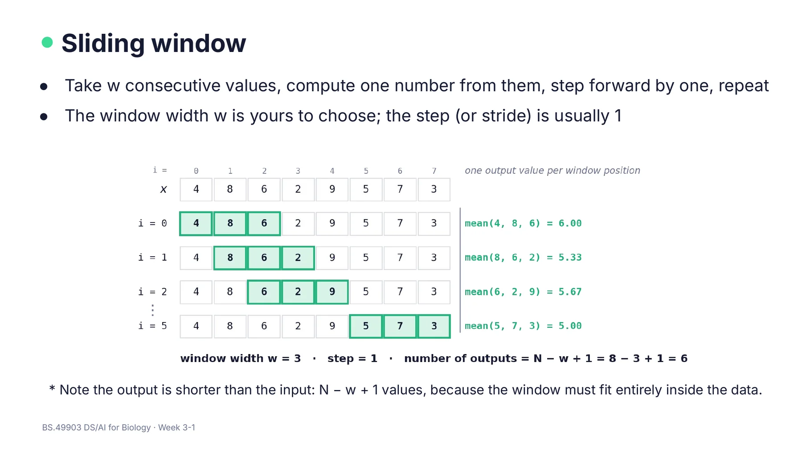
왜 $N-w+1$개?
window의 시작 위치 i는 0, 1, …, $N-w$까지만 가능하다. 마지막 window x[N-w : N]이 데이터 끝에 딱 맞기 때문이다. 따라서 시작 위치의 개수는 $N-w+1$이다. 예를 들어 8개, w=3이면 i = 0…5이므로 6개다.
안의 함수를 바꾸면 다른 도구가 된다 실습 W3 3.2 · x=[4,8,6,2,9,5,7,3], w=3
| 함수 | 출력(6개) | 무엇이 되나 |
|---|---|---|
| mean | [6, 5.33, 5.67, 5.33, 7, 5] | 이동평균(moving average) — 평활화 |
| max | [8, 8, 9, 9, 9, 7] | 국소 최댓값 |
| std (ddof=1) | [2, 3.06, 3.51, 3.51, 2, 2] | 국소 변동성(얼마나 들쭉날쭉한가) |
| == | 일치/불일치 | 서열 매칭(codon 찾기, 3/5) |
2.3 Sliding window (2/5) — 쉽게 보기 · 함정 W3-1 p30 · W3-2 p6 · W3 notebook 3.1–3.2
- 4, 8, 6, 2, 9, 5, 7, 3(8개)에서 첫 틀은 (4, 8, 6)이고 평균은 6이다.
- 다음 틀은 (8, 6, 2)이고 평균은 5.33이다. 이런 식으로 계속한다.
- 틀이 줄 밖으로 삐져나가면 안 되므로 틀을 놓을 수 있는 자리는 6곳뿐이다. 그래서 결과는 6개(8 − 3 + 1)다.
- sliding window의 출력 길이는 N이다.window가 완전히 들어가는 곳만 계산하면 출력은 N−w+1개다.
- sliding window의 출력 길이는 N−w이다.하나가 모자라는 흔한 실수다. 8개, w=3이면 출력은 6개이지 5개가 아니다.
- N−w+1은 어디서나 성립한다.window가 완전히 들어가는 경우('valid')에만 성립한다. pandas
rolling(20, center=True)는 길이 N을 유지한다. 이때 가장자리 값은 NaN이 된다. NaN은 자료 외 보충 np.convolve로 이동평균을 하면 출력은 언제나 N−w+1개다.출력 길이는 mode에 따라 다르다.np.convolve(…, mode="same")은 길이 N을 유지한다. (2.5)- step은 항상 1이다.슬라이드 표현은 "usually 1", 즉 보통 1이라는 뜻이다. codon 읽기는 step 3을, block averaging은 step = w를 쓴다.
- window를 쓴다는 것은 평균을 낸다는 뜻이다.window는 어떤 샘플을 볼지만 정한다("No arithmetic implied"). 그 위에서 평균, max, std, == 중 무엇이든 계산할 수 있다.
- window 폭 w와 step은 같은 뜻이다.w는 한 번에 보는 샘플 수로, 얼마나 뭉갤지를 정한다. step은 다음 window까지의 이동 거리로, 출력이 얼마나 촘촘한지를 정한다.
2.3 Sliding window (3/5) — step 3으로 codon 찾기 W3-1 p31 · W3 notebook 3.3
Codon 찾기: 21 bp 서열 "GACAACTCATGGATGATATCA"를 i = 0, 3, 6, …에서 3글자씩 읽는다. 즉 step 3으로, 틀에 맞춰(in frame) 읽는다. 코드는 for i in range(0, len(gene_seq) - 2, 3)이다.
| codon 번호 | 1 | 2 | 3 | 4 | 5 | 6 | 7 |
|---|---|---|---|---|---|---|---|
| 시작 위치 i | 0 | 3 | 6 | 9 | 12 | 15 | 18 |
| codon | GAC | AAC | TCA | TGG | ATG | ATA | TCA |
- 목표 서열(target) TGG는 codon 4, position 9에 있다. 출력은
4 9다. - 문자열 ATG를 step 1로 찾으면 position 8과 12에서 나온다.
- 그중 3의 배수인 12만 실제 codon(5번째)이다.
- position 8의 ATG는 TCA의 A와 TGG의 TG에 걸쳐 있다. 두 codon에 걸쳐 있으므로 아무것도 코딩하지 않는다.
- 실습 노트북의 핵심 문장은 "The step size is the whole biology."다. step 1로 읽으면 단순한 문자열 검색(string search)이고, step 3으로 읽어야 생물학적 질문이 된다.
- step은 데이터의 생물학적 단위다: 번역될 때 염기는 3개씩(codon) 읽힌다. 그래서 in-frame codon을 찾으려면 step 3을 써야 한다.
- step 1이 맞는 경우: 읽기 틀과 상관없이 짧은 서열(motif)이 어디 있는지 모두 찾고 싶을 때다. 추론
- 시간 신호에서도 원리는 같다: step 1로 모든 위치를 계산하면 이동평균이다. step w로 겹치지 않게 압축하면 block averaging이다.
- 서열에 ATG가 있으면 그 자리가 codon이다.읽기 틀(reading frame)에 맞아야 codon이다. 여기서는 위치가 3의 배수여야 하므로, position 8의 ATG는 틀에서 벗어나 있다.
- position 12는 12번째 codon이라는 뜻이다.position은 0부터 센 염기 위치다. codon 번호는 12/3 + 1 = 5이고, TGG는 9/3 + 1 = 4다.
- 3의 배수 위치이기만 하면 무조건 진짜 codon이다.이 실습은 읽기 틀이 index 0에서 시작한다고 가정한 것이다. 실제 유전자에서는 번역 시작점이 틀을 정한다. 추론
len(gene_seq) - 2의 −2는 별 의미 없는 보정값이다.−2는 마지막 3글자 window가 서열 안에 들어가게 하려는 것으로, N−w+1 규칙과 같은 이유다. 21 − 3 + 1 = 19개 시작 위치 중 step 3으로 고르면 7개다.
2.3 Sliding window (4/5) — 이동평균(moving average)과 window 크기 W3-1 p32–35 · W3 notebook 4.5
- 이동평균(moving average)은
lfp.rolling(20, center=True).mean()으로 계산할 수 있다. loop로 쓰면for k in range(T-w+1): mean(lfp[k:k+w])이다. - LFP는 1000 Hz로 기록했으므로 w = 20 샘플은 20 ms 구간의 평균이다.
- window를 크게 하면 국소 신호를 잃는다.
- window를 작게 하면 노이즈가 너무 많이 남는다.
- window보다 짧은 feature는 사라질 수 있다.
짧은 feature가 사라지는 과정을 숫자로 보기 (직접 계산한 예)
- 1샘플짜리 spike x = [0, 0, 0, 0, 10, 0, 0, 0, 0]에 w=5 이동평균을 길이를 유지하며 적용한다. 그러면 [0, 0, 2, 2, 2, 2, 2, 0, 0]이 된다.
- 높이가 10에서 2(1/5)로 낮아지고, 5칸으로 퍼진다.
- 반면 window보다 훨씬 긴 느린 파형은 거의 그대로 남는다.
- 이동평균은 매 순간의 값을 "그 주변 20개 값의 평균"으로 바꾸는 것이다.
- 우연한 떨림(+와 −가 섞인 잡음)은 평균하면 지워진다. 그래서 선이 매끈해진다.
- 그런데 진짜 사건도 20개보다 짧으면 주변의 평범한 값들과 함께 평균되어 뭉개진다. 위 예처럼 높이 10짜리 한 칸 사건은 5칸 평균 뒤에 높이 2짜리 낮은 언덕이 된다.
- 틀이 클수록 매끈하지만, 짧은 사건은 더 많이 사라진다.
2.3 Sliding window (5/5) — 이동평균: 언제 쓰나 · 함정 W3-1 p32–35 · W3 notebook 4.5
- 해결하는 문제: 빠른 무작위 잡음을 줄여 느린 추세나 진동이 보이게 한다. LFP가 그 예다.
- w 정하기: 보존하고 싶은 가장 짧은 사건보다는 짧게, 없애고 싶은 잡음의 흔들림보다는 길게 잡는다. 추론
- 시간 폭은 w를 샘플링 주파수로 나눈 값이다. 예: 1000 Hz에서 w=20 → 20 ms. 추론
- 대안: 같은 계산을 kernel [1/w, …, 1/w]의 convolution으로 할 수 있다. 가장자리가 부드러운 Gaussian kernel은 고주파 잡음을 더 잘 제거한다. (2.5)
- 언제 쓰면 안 되나: 순간적인 spike처럼 짧은 사건 자체를 분석하려 할 때다. 평균이 그 사건을 지운다. 추론
- window가 클수록 노이즈가 줄어드니 무조건 좋다.trade-off가 있다. window가 커지면 국소 신호를 잃고, 작아지면 노이즈가 많이 남는다.
- 짧은 feature는 위치만 퍼지고 높이는 유지된다.높이도 줄어든다. 앞 쪽 예에서는 10이 2가 되었고, 대략 (feature 길이/w)배로 줄어든다. 추론
- 이동평균은 노이즈만 지우고 신호는 건드리지 않는다.평균은 잡음과 신호를 구별하지 못하고, 빠르기로만 구별한다. 그래서 신호의 빠른 부분도 깎인다. 추론
- loop로 구한 이동평균과
rolling(center=True)의 결과는 길이와 정렬이 같다.loop(range(T-w+1))의 결과는 길이가 T−w+1이고,rolling(center=True)는 길이가 T다. loop의 k번째 값은x[k:k+w]의 평균이므로, 시점으로는 window 중앙인 k + (w−1)/2에 해당한다. 추론
이동평균(moving average)은 각 시점의 값을 주변 w개 샘플의 평균으로 바꿔 무작위 노이즈를 상쇄시킨다. window가 크면 더 매끄러워지지만, window보다 짧은 국소 특징(feature)까지 평균되어 사라진다. window가 작으면 특징은 보존되지만 노이즈가 많이 남는다. 따라서 w는 보존해야 할 특징의 시간 규모보다 작게 잡아야 한다.
“Describe the trade-off in choosing the window size of a moving average applied to a noisy LFP recording. What happens to features that are shorter than the window?”
키워드: moving average(이동평균) · window size(window 크기) · smoothing(평활화) · trade-off(상충 관계) · feature(신호의 특징) · noise(잡음)
2.4 Window vs Kernel · Correlation vs Convolution (1/8) 계산·설명 필수W3-2 p6–7 · W3 notebook 4.1
- Window는 어떤 샘플들을 볼지, 즉 연속된 w개의 구간을 정한다. 그 위에서 할 연산은 정해져 있지 않다(예: ==, min, max, std).
- Kernel은 신호에 곱한 뒤 더하는 가중치 리스트다.
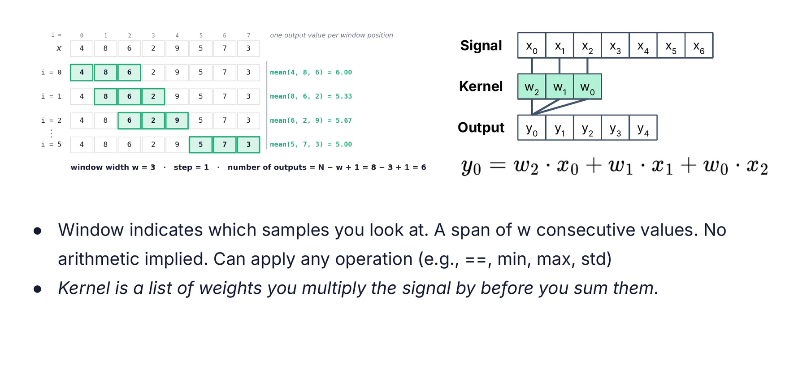
따라서 kernel 연산의 출력은 언제나 가중합(weighted sum)이다. 즉 "가중치 × 샘플"을 모두 더한 값이다.
그래서 평균(가중치 1/w)은 kernel로 계산할 수 있다. 반면 max, std, ==처럼 "곱하고 더하기"로 쓸 수 없는 연산은 window로만 할 수 있다.
- window: "어느 칸들을 볼지" 정하는 틀이다. 틀 안에서 가장 큰 값을 고르든, 같은 글자인지 비교하든 자유다.
- kernel: 틀 안 각 칸에 곱할 "가중치 표"다. 곱한 다음 모두 더한다. 가중치의 합이 꼭 1일 필요는 없다. 예: [1,2,3].
- 예를 들어 가중치 표 [0.25, 0.5, 0.25]를 (2, 4, 6)에 대면 0.25×2 + 0.5×4 + 0.25×6 = 4다.
- 가중치 표가 [1/3, 1/3, 1/3]이면 그냥 평균이다.
- "가장 큰 값 고르기"는 어떤 가중치 표로도 만들 수 없다. 그래서 kernel이 아니라 window 연산이다.
- kernel로 max, std, ==도 계산할 수 있다.kernel은 곱한 뒤 합하는 가중합만 한다. max, std, ==는 window 연산이다.
- window와 kernel은 같은 말이다.window는 어디를 볼지, kernel은 각 샘플을 얼마나 반영할지(가중치)를 정한다. kernel도 window 위에서 움직이지만, 연산이 가중합으로 고정되어 있다.
- kernel은 항상 평균이다.가중치는 자유롭게 정할 수 있다. [1/w, …]는 이동평균, Gaussian은 가중평균, [1,2,3]은 그냥 가중합이다. [1,2,3]은 합이 6이라서 평평한 구간의 신호가 6배가 된다.
- W3-2 p12의 "If the window is symmetric…"은 window(구간)가 대칭이라는 뜻이다.여기서는 kernel, 즉 가중치가 대칭이라는 뜻으로 읽어야 한다. 추론
2.4 Window vs Kernel · Correlation vs Convolution (2/8) — 두 가지 미끄러뜨리기 계산·설명 필수W3-2 p8 · W3 notebook 4.2
$$\text{Correlation: }(x\star h)_t=\sum_k h_k\,x_{t+k}\qquad\qquad \text{Convolution: }(x*h)_t=\sum_k h_k\,x_{t-k}$$즉 convolution은 kernel을 뒤집어서(flip) 미끄러뜨린 correlation이다. 슬라이드 그림에서 convolution의 첫 출력은 $y_0=w_2x_0+w_1x_1+w_0x_2$이다.
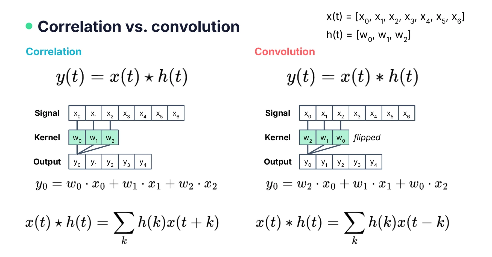
식 읽는 법
- correlation은 $h_k$를 t보다 k만큼 나중 샘플인 $x_{t+k}$와 곱한다. 그래서 kernel이 적힌 순서 그대로 겹친다. 예: $y_0=w_0x_0+w_1x_1+w_2x_2$.
- convolution은 $h_k$를 t보다 k만큼 이전 샘플인 $x_{t-k}$와 곱한다. 그래서 반대 순서로 겹친다. $w_0$는 가장 최근 샘플 $x_2$와, $w_2$는 가장 오래된 샘플 $x_0$와 곱해진다.
- 슬라이드의 valid 출력 $y_0$은 window $x_0..x_2$ 위치의 값이다. convolution 식의 t로 쓰면 t=2에 해당한다. 출력 번호와 식의 t가 어긋나는 것은 표기 차이일 뿐이다. 추론
2.4 Window vs Kernel · Correlation vs Convolution (3/8) — 두 가지 미끄러뜨리기: 쉽게 보기 · 함정 계산·설명 필수W3-2 p8 · W3 notebook 4.2
- correlation은 가중치 표를 그대로 대고 곱해서 더한다.
- convolution은 가중치 표를 좌우로 뒤집어 대고 곱해서 더한다.
- 신호 [1,2,3,4,5]의 앞 세 칸(1, 2, 3)에 가중치 표 [1,2,3]을 그대로 대면 1×1 + 2×2 + 3×3 = 14다.
- 가중치 표를 뒤집은 [3,2,1]을 대면 3×1 + 2×2 + 1×3 = 10이다.
- 뒤집는 이유는 가중치 표의 번호가 "시각"이 아니라 "얼마나 지났나(나이)"이기 때문이다. (6/8에서 자세히)
- correlation이 $x_{t-k}$를 곱하고, convolution이 $x_{t+k}$를 곱한다.부호가 반대다. correlation은 $x_{t+k}$, convolution은 $x_{t-k}$를 곱한다. "convolution은 뒤집으니까 마이너스"로 기억하면 된다.
- convolution과 correlation은 같은 연산이다.kernel이 대칭일 때만 결과가 같다. [1,2,3]처럼 비대칭이면 correlation은 [14,20,26], convolution은 [10,16,22]로 다르다.
- W3-2 p11의 식 $\sum_k h(t)x(t-k)$가 convolution의 정의다.슬라이드 오타다. $\sum_k h(k)x(t-k)$가 맞고, 이는 p8의 식과 같다. 추론
- p9 코드
np.correlate(signal, window)의window는 window(구간)를 뜻한다.여기서window는kernel변수다. 추론 (실습 4.2) np.correlate와np.convolve는 기본 모드가 같으니 결과를 바로 비교할 수 있다.기본 모드가 다르다.np.correlate(s, k)의 기본은 valid로 3개를,np.convolve(s, k)의 기본은 full로 7개를 낸다. 이는 실습 출력 길이로 확인할 수 있다. 비교할 때는 mode를 맞춰야 한다. 자료 외 보충
2.4 Window vs Kernel · Correlation vs Convolution (4/8) — 계산 예 계산·설명 필수W3-2 p9 · W3 notebook 4.2
계산 예: signal = [1,2,3,4,5], kernel = [1,2,3] (valid)
- correlation: $1\cdot1+2\cdot2+3\cdot3=14$, $2\cdot1+3\cdot2+4\cdot3=20$, $3+8+15=26$이다. 결과는 [14, 20, 26]이다.
- convolution: $3\cdot1+2\cdot2+1\cdot3=10$, $3\cdot2+2\cdot3+1\cdot4=16$, $3\cdot3+2\cdot4+1\cdot5=22$이다. 결과는 [10, 16, 22]이다.
- 코드로 확인하면
np.correlate(s,k) == np.convolve(s, k[::-1], "valid")가 성립한다.
손 계산 순서 (시험용)
- convolution이면 kernel을 먼저 뒤집어 [3,2,1]로 만든다. correlation이면 그대로 둔다.
- kernel을 신호의 맨 앞에 맞춘다. valid 모드는 완전히 겹치는 곳만 계산한다.
- 겹친 칸끼리 곱해서 더하면 출력 1개가 나온다.
- 한 칸 옮겨 반복한다. 출력 개수는 $N-w+1=5-3+1=3$이다.
- convolution도 kernel을 그대로 대고 곱해 더하면 된다.뒤집기를 잊으면 correlation 값 [14, 20, 26]이 나온다. 가장 흔한 계산 실수다.
- correlation 결과를 뒤집으면 convolution이 된다.뒤집는 것은 결과가 아니라 kernel이다. [14,20,26]을 뒤집은 [26,20,14]는 [10,16,22]와 다르다.
- convolution 출력은 mode와 상관없이 N−w+1개다.valid는 완전히 겹치는 곳만 계산해 N−w+1 = 3개를 낸다. full은 일부만 겹치는 가장자리까지 계산해 7개([1,4,10,16,22,22,15])를 내며, 개수의 일반식은 N+w−1이다. 자료 외 보충
- full 모드의 첫 값 1이 작은 것은 계산 실수다.첫 값은 겹친 칸이 하나뿐이라서 $h_0x_0$ = 1×1 = 1이다. 마지막 값 15도 같은 이유로 $h_2x_4$ = 3×5다.
2.4 Window vs Kernel · Correlation vs Convolution (5/8) — 교환법칙 계산·설명 필수W3-2 p10–11 · W3 notebook 4.3
교환법칙 (commutative property)
- Convolution은 교환법칙이 성립한다: $x*h=h*x$이다. full 결과가 둘 다 [1,4,10,16,22,22,15]이다.
- 그 이유는 곱해지는 두 인덱스의 합이 항상 t이기 때문이다($h_k x_{t-k}$). 그래서 두 인자에 대해 대칭적이다.
- Correlation은 교환법칙이 성립하지 않는다: 인자를 바꾸면 출력이 뒤집힌다. [3,8,14,20,26,14,5]가 [5,14,26,20,14,8,3]이 된다.
- kernel이 대칭이면 뒤집어도 같으므로 두 연산은 계산상 동일하다. 예: box, Gaussian.
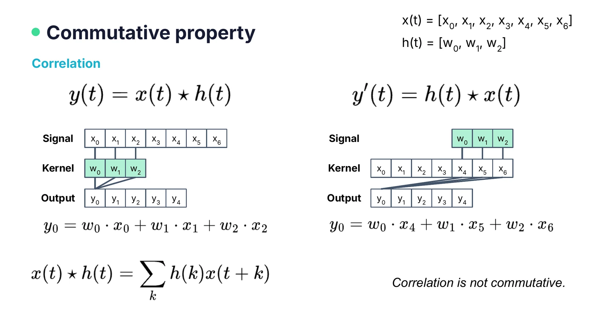
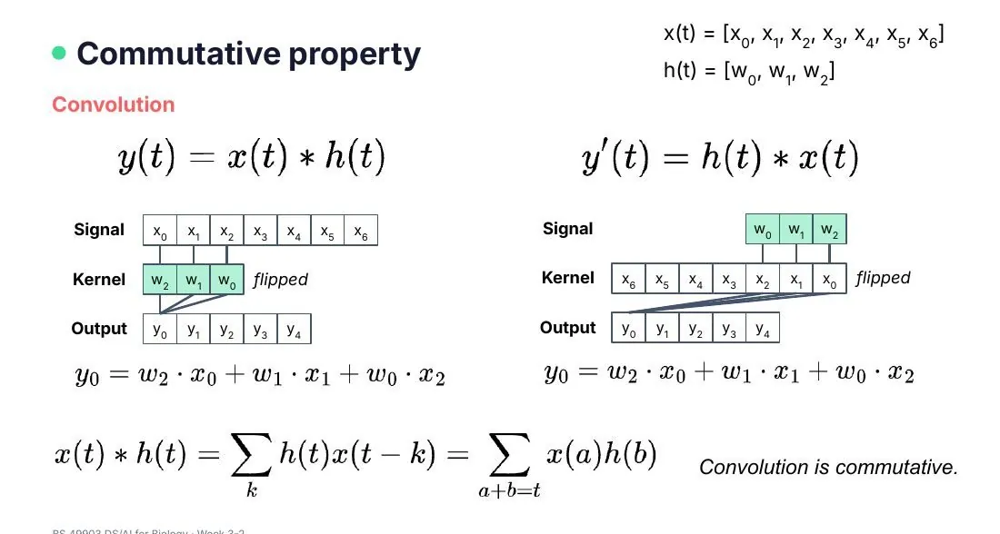
왜 그런가 (유도) 대입 유도는 자료 외 보충
- convolution의 정의에서 $j=t-k$로 치환하면 다음과 같다. $$(x*h)_t=\sum_k h_k\,x_{t-k}=\sum_j x_j\,h_{t-j}=(h*x)_t$$ 두 인덱스의 합 $k+(t-k)=t$가 고정되어 있다. 그래서 누가 신호이고 누가 kernel인지 상관없다. 슬라이드는 이를 $\sum_{a+b=t}x(a)h(b)$로 쓴다.
- correlation에서는 인자를 바꾼 식에서 $j=t+k$로 치환한다. $$(h\star x)_t=\sum_k x_k\,h_{t+k}=\sum_j h_j\,x_{j-t}=(x\star h)_{-t}$$ 즉 인자를 바꾸면 출력의 시간축이 거울처럼 뒤집힌다. 고정된 것이 두 인덱스의 합이 아니라 차이이기 때문이다.
- convolution에서 출력 2번 칸은 $x_0h_2+x_1h_1+x_2h_0$이다. 곱해지는 두 번호의 합이 모두 2다.
- 즉 "번호 합이 2가 되는 짝을 모두 곱해 더하라"는 규칙이다. 신호와 가중치 표의 이름을 서로 바꿔도 똑같은 짝들이 곱해지므로 결과가 같다.
- correlation은 "번호 차이가 일정한 짝"을 곱한다. 이름을 바꾸면 차이의 방향이 반대가 되어, 같은 숫자들이 반대 순서로 나온다.
- 교환법칙이 성립하지 않는 쪽은 convolution이다.반대다. convolution은 교환법칙이 성립하고, correlation은 성립하지 않는다.
- correlation은 인자를 바꾸면 전혀 다른 숫자가 나온다.full 모드에서는 같은 숫자가 반대 순서로 나온다. 예: [3,8,14,20,26,14,5]와 [5,14,26,20,14,8,3].
- kernel이 대칭이면 correlation도 교환법칙이 성립한다.대칭 kernel이면 $x\star h=x*h$가 될 뿐이다. 인자를 바꾼 $h\star x$에서는 신호 x가 kernel 역할을 하므로, x가 대칭이 아니면 여전히 뒤집힌다. 예: x=[1,2,3,4,5], h=[1,2,1]이면 [1,4,8,12,16,14,5]와 [5,14,16,12,8,4,1]이다. 추론
- 교환법칙이 성립하니 신호와 kernel은 의미도 같다.교환법칙은 계산 결과가 같다는 수학적 성질일 뿐이다. 해석은 여전히 구분되어, 신호는 시각으로, kernel은 나이로 인덱싱된다. 추론
2.4 Window vs Kernel · Correlation vs Convolution (6/8) — 의미: memory vs template matching 계산·설명 필수W3-2 p12 · W3 notebook 4.4
의미의 차이
| Convolution | Correlation | |
|---|---|---|
| 해석 | 기억(memory) 과거 입력이 남긴 흔적의 누적 | 신호에서 kernel과 비슷한 곳 찾기 |
| 용도 | filtering(신호를 시스템에 통과시키기) | template matching |
| 왜 flip? | 나이 k인 입력은 시각 $t-k$에 들어온 것이므로 $x_{t-k}$와 곱한다(아래 설명) | |
Convolution: "Convolution is memory."
- 신호는 시간으로, kernel은 나이(age)로 인덱싱한다.
- $h_k$는 임펄스가 들어온 뒤 k step이 지났을 때의 반응이다.
- 시각 t의 출력은 과거 입력들이 남긴 흔적의 누적이다.
- 용도는 filtering, 즉 신호를 시스템에 통과시키는 것이다. 예: spike 하나 → calcium transient 하나.
Correlation: template matching
- 신호에서 kernel과 비슷한 곳을 찾는다. 각 위치에서 내적 $\mathbf y=\mathbf x\cdot\mathbf h$를 계산하며, 모양이 닮을수록 값이 커진다.
- 단, 이 값은 신호의 크기에도 비례한다. (8/8 함정)
왜 뒤집나(flip)?
- 나이 k인 입력은 시각 $t-k$에 들어온 것이다. 그래서 $h_k$와 곱해지는 것이 $x_{t-k}$다.
- 반대로 "각 입력이 앞으로 h를 퍼뜨린다"고 쓰면 뒤집기 없이 더하기만 하면 된다.
- 임펄스를 convolve하면 kernel 자신이 나온다. 그래서 kernel을 impulse response라 부른다.
impulse response 확인 실습 W3 4.4
- h = [0.7, 0.2, 0.1]은 임펄스 하나가 남기는 흔적이다. 시각 2에 임펄스를 한 번 넣으면 출력은 [0, 0, 0.7, 0.2, 0.1, 0, 0, 0]으로, kernel 그 자체다.
- 각 입력(INPUT)마다 h를 앞으로 깔아 더해도
np.convolve와 같은 결과가 나온다. 실습 코드는spread[t + k] += h[k]이고, 주석에 "PLUS, no flip"이라고 쓴다. - 임펄스를 시각 2와 3에 두 번 넣으면 [0, 0, 0.7, 0.9, 0.3, 0.1, 0, 0]이 된다. 흔적이 겹쳐 더해지기 때문이다(0.2 + 0.7 = 0.9). (두 임펄스 예는 직접 계산)
- 실습은 이를 "the output now is the pile-up of everything that already happened"라고 표현한다. 지금의 출력은 이미 일어난 모든 일이 쌓인 결과라는 뜻이다.
2.4 Window vs Kernel · Correlation vs Convolution (7/8) — memory vs template matching: 쉽게 보기 · 언제 쓰나 계산·설명 필수W3-2 p12 · W3 notebook 4.4
- 종을 한 번 치면 "댕—" 소리가 점점 작아지며 남는다. 이 "한 번 쳤을 때 남는 소리의 모양"이 kernel이다. 예를 들어 처음 0.7, 다음 순간 0.2, 그다음 0.1이다.
- 종을 여러 번 치면 지금 들리는 소리는 세 몫의 합이다. 방금 친 것의 0.7, 한 순간 전에 친 것의 0.2, 두 순간 전에 친 것의 0.1을 더한다.
- 즉 "얼마나 오래 전에 쳤나(나이)"에 따라 남은 몫을 더한다. 나이 k인 타격은 지금보다 k만큼 이전에 일어났으니 식에 $x_{t-k}$가 들어간다. 이것이 뒤집기의 정체다.
- correlation은 다른 질문을 한다. "이 모양(본보기)과 닮은 구간이 신호의 어디에 있나?"를 묻고, 본보기를 각 위치에 겹쳐 보며 점수를 매긴다.
- convolution(filtering): 신호를 어떤 "시스템"에 통과시킨 결과를 계산하거나 모델링할 때 쓴다. LFP smoothing(box, Gaussian)도 convolution이다.
- 예를 들어 spike 하나가 calcium transient 하나를 만든다. 그래서 spike train을 calcium 감쇠 kernel과 convolve하면 calcium trace가 된다. 추론
- correlation(template matching): 알고 있는 파형, 즉 본보기가 긴 기록의 어디서 나타나는지 찾을 때 쓴다. 출력이 큰 위치가 닮은 위치다.
- 구분이 중요할 때: kernel이 비대칭일 때다. 예: 감쇠하는 [0.7, 0.2, 0.1]. box나 Gaussian처럼 대칭이면 둘이 같아서 구분할 필요가 없다.
- 한계: 둘 다 가중합, 즉 선형 연산이다. 그래서 max나 임계값 판정 같은 비선형 처리는 하지 못한다. 추론
2.4 Window vs Kernel · Correlation vs Convolution (8/8) — 함정 정리 · 시험 답안 계산·설명 필수W3-2 p7–12 · W3 notebook 4
- kernel의 인덱스 k는 시각이다.k는 나이(age), 즉 입력이 들어온 지 몇 step 지났는지를 뜻한다. 시각으로 인덱싱되는 것은 신호다.
- kernel을 뒤집는 것은 그냥 관습이다.나이 k인 입력은 시각 $t-k$에 들어온 것이라서 $x_{t-k}$가 된다. 입력마다 h를 앞으로 퍼뜨려 더하면 뒤집기 없이 같은 결과가 나온다. (실습 4.4)
- convolution은 template matching에, correlation은 filtering에 쓴다.반대다. convolution은 memory로 해석되며 filtering에 쓰고, correlation은 template matching에 쓴다.
- correlation 값이 가장 큰 곳이 언제나 모양이 가장 닮은 곳이다.크기(amplitude)가 비슷할 때만 맞다. 신호 [0,1,2,1,0,0,5,5,5,0]에 본보기 [1,2,1]을 대면, 모양이 똑같은 (1,2,1) 위치는 6점이고 모양이 다른 평평한 (5,5,5) 위치는 20점이다. 공정하게 비교하려면 크기로 나눠 정규화한다(normalized cross-correlation). 자료 외 보충
- 임펄스를 convolve하면 신호가 사라지거나 0이 된다.kernel 자신, 즉 impulse response가 나온다.
Explain the difference between correlation and convolution. Compute both for signal [1,2,3,4,5] and kernel [1,2,3].
- 둘 다 kernel 가중치를 곱하고 더하며 신호 위를 미끄러진다. 차이는 convolution이 kernel을 뒤집는다는 것이다. convolution은 $x_{t-k}$를, correlation은 $x_{t+k}$를 곱한다.
- 계산하면 correlation은 [14,20,26], convolution(valid)은 [10,16,22]다. 첫 값은 각각 1+4+9=14와 3+4+3=10이다.
- convolution은 인덱스 합이 t로 고정되어 교환법칙이 성립한다. correlation은 인자를 바꾸면 결과가 뒤집힌다.
- convolution은 kernel을 임펄스 응답, 즉 기억으로 보는 필터링(시스템 통과)이다. correlation은 kernel 모양과 닮은 위치를 찾는 template matching이다.
- kernel이 대칭이면 둘은 같다.
Why does convolution flip the kernel? Why is it called "memory"?
- convolution의 kernel $h_k$는 시각이 아니라 나이로 인덱싱된다. $h_k$는 임펄스가 들어온 뒤 k step이 지났을 때 남아 있는 반응이다.
- 시각 t의 출력에서 나이 k인 입력은 시각 $t-k$에 들어온 것이다. 그래서 $h_k$와 곱해지는 것은 $x_{t-k}$이고, 이것이 kernel을 뒤집어 대는 것과 같다.
- 같은 계산을 "각 입력이 자기 뒤로 h를 퍼뜨린다"로 쓰면 뒤집기 없이 더하기만 하면 된다.
- 출력은 과거 입력들이 각자 남긴 흔적의 누적이므로 "memory"라 부른다.
- 임펄스를 넣으면 kernel 자신이 나오므로 h를 impulse response라 부른다. 예: spike 하나 → calcium transient 하나.
Correlation은 $\sum_k h_k x_{t+k}$로 kernel을 그대로 대고, convolution은 $\sum_k h_k x_{t-k}$로 kernel을 뒤집어(flip) 댄다. 신호 [1,2,3,4,5]에 kernel [1,2,3]을 valid 모드로 쓰면 correlation은 [14, 20, 26], convolution은 [10, 16, 22]다. Convolution의 kernel은 나이(age)로 인덱싱된 impulse response라서, 시각 t의 출력은 k step 전에 들어온 입력이 남긴 흔적 $h_k x_{t-k}$의 합이다. 이것이 memory이고, kernel이 뒤집히는 이유다. Convolution은 곱해지는 두 인덱스의 합이 항상 t라서 교환법칙이 성립하지만, correlation은 인자를 바꾸면 출력이 뒤집힌다. kernel이 대칭이면 두 연산의 결과는 같다. 용도는 convolution이 filtering, correlation이 template matching이다.
“Explain the difference between correlation and convolution. Compute both for the signal [1, 2, 3, 4, 5] and the kernel [1, 2, 3], and explain why convolution flips the kernel.”
키워드: correlation(상관) · convolution(합성곱) · kernel(커널) · flip(뒤집다) · impulse response(임펄스 응답) · commutative(교환법칙이 성립하는) · template matching(템플릿 매칭)
2.5 평활화 kernel: Box vs Gaussian (1/4) W3-2 p13–14 · notebook 4.5–4.6
- box kernel [1/w, …, 1/w]를 쓰면 이동평균과 정확히 같다. notebook에서도 루프 결과와 convolution 결과가 일치한다.
- Gaussian kernel은 다음 식으로 정의한다.
$$h(t)=\frac{1}{\sqrt{2\pi\sigma^2}}\exp\!\left(-\frac{(t-\mu)^2}{2\sigma^2}\right)$$
슬라이드의 예는
100·h = [1, 2, 2, 3, 4, 5, 6, 7, 7, 8, 8, 8, 7, 7, 6, 5, 4, 3, 2, 2, 1]이다. - Gaussian도 smoothing이지만 고주파 노이즈 제거에 더 좋다. box는 가장자리가 딱 끊기고(hard edge), Gaussian은 부드럽게 줄어들기 때문이다.
- 두 kernel 모두 대칭이므로 correlation과 convolution의 결과가 같다. notebook은 Gaussian kernel로 이를 확인했고, 두 결과의 최대 차이(max difference)는 0.0이다.
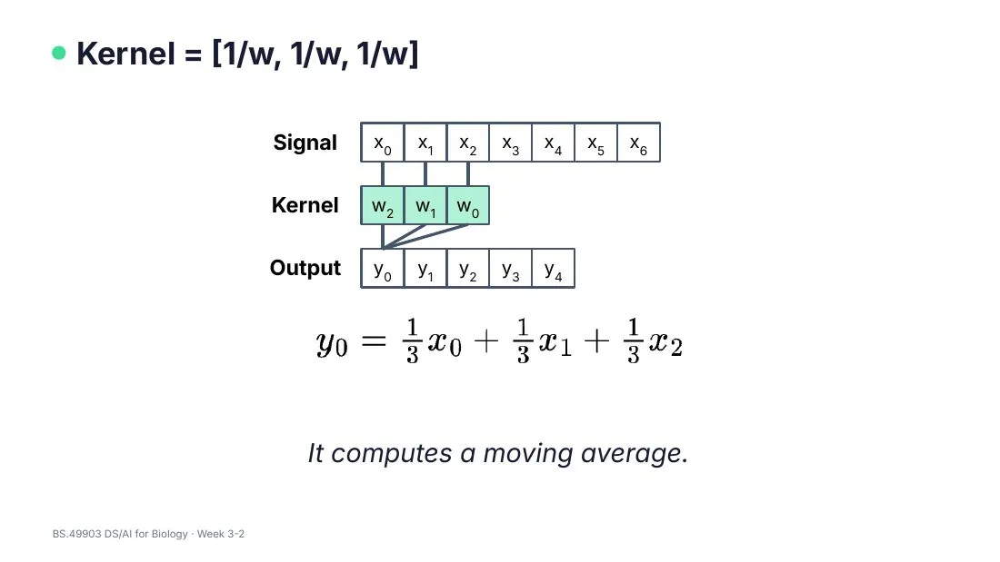
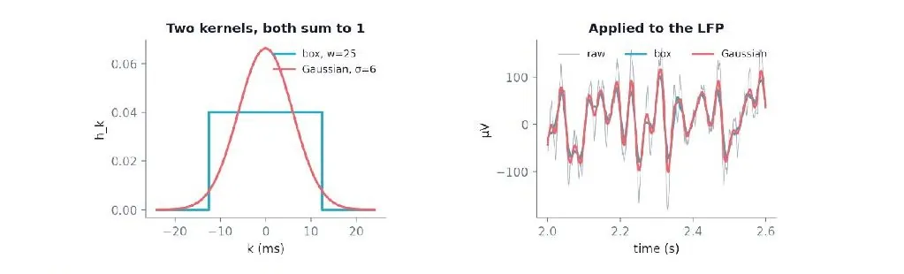
2.5 평활화 kernel (2/4) — 합이 1이어야 한다 · 이산 Gaussian의 정규화 W3-2 p13–14 · notebook 4.5–4.6
- box와 Gaussian 모두 합이 1이어야 신호의 수준(level)이 유지된다. 합이 c이면 상수 신호 a가 ca로 바뀐다.
- 실제 이산 Gaussian은 유한 개의 점으로 자른다. 실습에서는 k = −18…18, σ = 6을 쓴다.
- 실습은 상수 $\frac{1}{\sqrt{2\pi\sigma^2}}$ 없이 exp 부분만 계산한다. 그다음
gauss / gauss.sum()으로 다시 정규화해 합을 정확히 1로 맞춘다. (실습 4.6) - 슬라이드의 100·h 목록은 합이 98이다. 주원인은 21개 점에서 양쪽 꼬리를 잘라 낸 것이다. 꼬리 절단만으로 합은 약 96.5가 되고, 반올림은 오히려 합을 98로 올린다. 추론
- 이 목록은 σ = 5, t = −10…10으로 계산한 값과 일치하며, 그림의 σ = 6과는 다른 예다. 추론 (직접 계산)
- box: 주변 25칸이 모두 똑같이 1/25씩 투표하고, 그 바깥은 0이다. 경계에서 투표권이 뚝 끊긴다.
- Gaussian: 가운데 칸의 투표권이 가장 크고, 멀어질수록 서서히 줄어든다(종 모양).
2.5 평활화 kernel (3/4) — 왜 Gaussian이 낫고, 왜 합이 1인가 W3-2 p14 · notebook 4.6
왜 합이 1이어야 하나?
상수 신호 $x_t=a$에 kernel을 적용하면 다음과 같다.
$$\sum_k h_k\,a=a\sum_k h_k$$합이 1일 때만 출력이 a가 된다. 이때 kernel 연산은 가중평균이 되어 수준(level)이 보존된다. 합이 2이면 출력은 2a다.
왜 Gaussian이 고주파 노이즈를 더 잘 지우나 추론
- box에서는 샘플이 window에 들어오고 나가는 순간 가중치가 0과 1/w 사이에서 갑자기 바뀐다. 그래서 샘플 하나의 출입이 출력을 툭툭 흔들어 빠른 흔들림이 일부 남는다.
- Gaussian은 가장자리 가중치가 0에 가깝게 서서히 줄어든다. 그래서 샘플의 출입이 출력에 거의 영향을 주지 않는다.
- 또 Gaussian은 가까운 샘플을 더 많이 반영하므로, 결과가 매끈하면서도 모양이 보존된다.
- 빠르게 오르내리는 성분(고주파)을 넣어 보면 차이가 보인다. box는 빠른 성분의 일부를 그대로 통과시키고, Gaussian은 빠른 성분일수록 더 많이 줄인다. 자료 외 보충
- 예: [1, −1, 1, −1, …]처럼 가장 빠르게 오르내리는 신호에 box w=3을 쓰면 크기 1/3인 흔들림이 남는다. 폭이 비슷한 Gaussian(σ = 0.8)은 약 0.08만 남긴다. 자료 외 보충 (직접 계산)
- box: 가장 단순하다. "주변 w개의 평균"이라 해석이 쉽고, loop로 구한 이동평균과 같다.
- Gaussian: 고주파 노이즈를 더 깨끗하게 지우면서 파형을 부드럽게 유지하고 싶을 때 쓴다. LFP 예에서는 σ = 6을 썼다. 폭은 σ로 조절하며, box의 w에 해당한다.
- 공통 한계: 폭(w 또는 σ)이 클수록 매끈하지만 짧은 feature가 사라진다. 이동평균과 같은 trade-off다. Gaussian이라고 모든 노이즈를 지우는 것은 아니다. (W3-1 p35)
- 대칭성: 두 kernel 모두 대칭이라 correlation과 convolution을 구분할 필요가 없다. 실습은 Gaussian kernel로 이를 확인했고, 최대 차이는 0.0이다.
- 가장자리: 실습 4.6에서 쓴
mode="same"은 길이 N을 유지한다. 다만 신호 바깥을 0으로 채워 계산한다. 0 채움은 자료 외 보충 - 그래서 가장자리 값이 0 쪽으로 끌려 왜곡된다. 예: 상수 5 신호에 box w=3을 쓰면 양 끝 값이 3.33이 된다.
2.5 평활화 kernel (4/4) — 함정 정리 · 시험 답안 W3-2 p13–14 · notebook 4.5–4.6
- kernel의 합이 1이어야 결과가 매끈해진다.합은 수준(level)만 정한다. 가중치를 모두 2배 하면 출력도 2배가 될 뿐, 매끈한 정도(모양)는 같다. 매끈함은 kernel의 폭과 모양이 결정한다. 추론
- Gaussian 공식의 $\frac{1}{\sqrt{2\pi\sigma^2}}$ 덕분에 이산 kernel의 합은 자동으로 정확히 1이다.그 상수는 연속 적분이 1이 되게 할 뿐이다. 점으로 자르고 반올림하면 합이 1에서 벗어나므로(슬라이드 100·h의 합은 98), 실습처럼
gauss / gauss.sum()으로 다시 정규화한다. - σ가 클수록 kernel이 날카로워서 덜 뭉갠다.σ가 클수록 kernel이 넓게 퍼져 더 많이 뭉갠다. box의 w를 키우는 것과 같은 효과다. 추론
- w와 σ는 같은 "폭"이므로 숫자를 그대로 비교할 수 있다.w는 전체 폭(샘플 수)이고 σ는 표준편차다. Gaussian은 대략 ±3σ까지 퍼지고, 실습의 −18…18도 ±3σ다. ±3σ는 자료 외 보충 (슬라이드는 box w=25와 σ=6, 실습 box는 w=20)
- Gaussian이 box보다 항상 낫다.고주파 노이즈 제거가 더 낫다는 뜻이다. 짧은 사건을 보존해야 하면 폭을 줄이거나 smoothing 자체를 피해야 한다. 추론
Why does a Gaussian kernel remove high-frequency noise better than a box kernel, and why must smoothing kernels sum to 1? 추론 포함
- box는 window 안의 모든 샘플에 같은 가중치를 주고, 경계에서 가중치가 갑자기 0이 된다. 그래서 샘플 하나가 window에 들어오고 나갈 때 출력이 들쭉날쭉해진다.
- Gaussian은 중심에서 멀수록 가중치가 부드럽게 줄어든다. 가까운 샘플을 더 반영하고 급격한 변화를 남기지 않으므로 고주파 노이즈를 더 깨끗하게 제거한다.
- 합이 1이면 가중평균이 되어 신호의 평균 수준이 보존된다. 합이 1이 아니면 전체 신호가 그 배수만큼 커지거나 작아진다.
평활화(smoothing) kernel의 가중치 합이 1이면 출력은 가중평균이 된다. 그래서 상수 신호 a가 그대로 a로 나오고, 신호의 수준(level)이 보존된다. Box kernel은 window 안 모든 샘플에 같은 가중치 1/w를 주고, 경계에서 가중치가 갑자기 끊긴다. 반면 Gaussian kernel은 중심에서 멀어질수록 가중치가 부드럽게 줄어서 고주파(high-frequency) 노이즈를 더 깨끗하게 제거한다. 두 kernel은 모두 대칭이라 correlation과 convolution의 결과가 같다. 폭(w 또는 σ)이 클수록 더 매끄럽지만, 짧은 특징이 사라지는 trade-off가 있다.
“Why does a Gaussian kernel remove high-frequency noise better than a box kernel? Why must a smoothing kernel sum to 1?”
키워드: smoothing(평활화) · box kernel(박스 커널) · Gaussian kernel(가우시안 커널) · high-frequency noise(고주파 잡음) · sum to 1(합이 1) · weighted average(가중평균) · symmetric(대칭인)
2.✎ 영어 용어 정리 시험 문제는 영어로 나온다
문제에서 이 단어가 보이면 무엇을 묻는지 바로 떠올릴 수 있어야 한다. 답은 한국어로 써도 되지만, 용어는 영어 그대로 써도 좋다.
| English | 한국어 | 한 줄 뜻 |
|---|---|---|
| 1D data | 1차원 데이터 | 하나의 축으로 인덱싱되는 숫자 리스트다. 축은 시간, 서열 위치, feature index일 수 있다. |
| time series | 시계열 | 일정한 시간 간격 $\Delta t$마다 잰 값 $x_1,\dots,x_T$다. 이웃 샘플끼리 값이 비슷하다. |
| sampling rate | 샘플링 주파수 | 1초에 재는 샘플 수다. 1000 Hz로 기록한 LFP는 1 ms마다 한 샘플이다. |
| feature index | 특성 번호 | 유전자 번호처럼 순서가 임의인 축이다. 이 축에서는 이웃 평균이나 다운샘플링이 의미가 없다. |
| BOLD (blood-oxygen-level-dependent) | 혈중 산소 수준 의존 신호 | fMRI로 재는 혈액 산소화 신호다. 효과가 0.1 ~ 3 %로 작아서 시행이나 피험자 평균부터 낸다. |
| deoxyhemoglobin (deoxy-Hb) | 탈산소 헤모글로빈 | 산소를 내준 헤모글로빈이다. 뉴런이 활동하면 혈류 증가가 산소 소비보다 커서 이것이 줄고, 그래서 BOLD 신호가 밝아진다. |
| local field potential (LFP) | 국소장 전위 | 전극 주변 수천 개 세포의 시냅스 전류 합이 만드는 세포외 전압의 느린 성분이다. ms 해상도의 직접적인 전기 신호다. |
| trial | 시행 | 같은 자극이나 과제를 한 번 수행한 것이다. N개 시행을 평균하면 잡음의 흔들림이 약 $1/\sqrt N$로 줄어든다 추론. |
| downsampling | 다운샘플링 | 샘플 수를 줄여 데이터를 압축하는 것이다. subsampling과 block averaging 두 방법이 있다. |
| subsampling | 서브샘플링 | x[::2]처럼 일정 간격으로 샘플만 골라 남기는 것이다. 남긴 샘플의 노이즈가 그대로 남는다. |
| block averaging | 블록 평균 | 겹치지 않는 w개 묶음마다 평균을 내는 것이다. step이 w인 sliding window와 같고, 노이즈를 줄인다. |
| sliding window | 슬라이딩 윈도우 | 연속된 w개 값으로 숫자 하나를 계산하고, 옮겨 가며 반복하는 것이다. window가 완전히 들어가는 출력은 N−w+1개다. |
| window size (width) | window 크기 | 한 번에 보는 샘플 수 w다. 클수록 더 많이 뭉갠다. |
| stride / step | 이동 간격 | 다음 window까지 옮기는 칸 수다. 보통 1이고, codon 읽기는 3, block averaging은 w다. |
| moving average | 이동평균 | window 안 값의 평균을 step 1로 계산하는 것이다. box kernel로 convolution한 결과와 같다. |
| smoothing | 평활화 | 빠른 노이즈를 줄여 신호를 매끄럽게 하는 것이다. 폭이 클수록 짧은 feature도 사라진다. |
| codon | 코돈 | 번역될 때 함께 읽히는 염기 3개다. |
| reading frame | 읽기 틀 | 서열을 3개씩 끊어 읽는 기준이다. 실습은 index 0부터 3개씩 끊으므로, 3의 배수 위치에서 시작하는 세 글자만 codon이다. 그래서 두 ATG 중 position 12의 것만 codon이다. |
| kernel | 커널 | 신호에 곱한 뒤 더하는 가중치 목록이다. 출력은 항상 가중합(weighted sum)이다. |
| correlation | 상관 | $\sum_k h_k x_{t+k}$다. kernel을 그대로 대고 곱해 더하며, 교환법칙이 성립하지 않는다. |
| convolution | 합성곱 | $\sum_k h_k x_{t-k}$다. kernel을 뒤집어 대고 곱해 더하며, 교환법칙이 성립한다. |
| flip | 뒤집기 | kernel의 순서를 거꾸로 하는 것이다. [1,2,3]으로 convolution하는 것은 [3,2,1]로 correlation하는 것과 같다. |
| commutative | 교환법칙이 성립하는 | 두 인자를 바꿔도 결과가 같은 성질이다. convolution은 $x*h=h*x$이다. |
| impulse response | 임펄스 응답 | 임펄스 하나를 넣었을 때 나오는 출력이다. convolution에서는 kernel 자신이며, 그래서 convolution을 memory로 해석한다. |
| template matching | 템플릿 매칭 | correlation으로 kernel과 모양이 닮은 위치를 찾는 것이다. 값은 신호의 크기에도 비례한다 자료 외 보충. |
| filtering | 필터링 | 신호를 어떤 시스템에 통과시키는 것이다. convolution으로 계산한다. |
| box kernel | 박스 커널 | 모든 가중치가 1/w인 kernel이다. 이동평균과 같고, 경계에서 가중치가 갑자기 끊긴다. |
| Gaussian kernel | 가우시안 커널 | 가운데가 크고 멀수록 부드럽게 줄어드는 종 모양 가중치다. 폭은 σ로 정하며, box보다 고주파 노이즈를 잘 지운다. |
| symmetric kernel | 대칭 커널 | 뒤집어도 같은 kernel이다. 이때 correlation과 convolution의 결과가 같다. |
| sum to 1 (normalized kernel) | 합이 1인 커널 | 가중치 합이 1이면 출력이 가중평균이 되어 신호의 수준이 보존된다. 이산 Gaussian은 gauss / gauss.sum()으로 맞춘다. |
3.1 선형회귀 모델과 손실 (1/4) W3-2 p15–18, p21
회귀(regression)는 한 변수가 다른 변수와 어떻게 관련되는지, 즉 데이터의 추세(trend)를 기술한다. 슬라이드는 이것을 "Regression is a predictor"라고 표현한다. 새 데이터가 들어오면 그 데이터가 어떤 값을 가질지 예측한다는 뜻이다.
- 펭귄 예: 날개(flipper) 길이가 205 mm인 새 펭귄이 오면, 직선 위의 값인 4409 g을 예측값으로 읽는다.
- 기울기 50.15는 날개가 1 mm 긴 펭귄이 평균적으로 약 50 g 더 무겁다는 뜻이다.
- 각 점에서 직선까지의 세로 차이(실제값 − 예측값)를 잔차라고 부른다. 가장 잘 맞는 직선은 잔차를 제곱해서 모두 더한 값이 가장 작은 직선이다.
- 예를 들어 실제 체중이 3700 g인데 예측이 3600 g이면 차이는 +100이다. 이 점에서는 벌점으로 100² = 10,000을 더한다.
- β(베타)들은 직선을 정하는 조절 손잡이다. β0(절편)는 직선의 높이를, β1(기울기)은 기울어진 정도를 정한다. 데이터에 맞게 이 손잡이 값을 찾는 것을 학습(fit)이라고 한다.
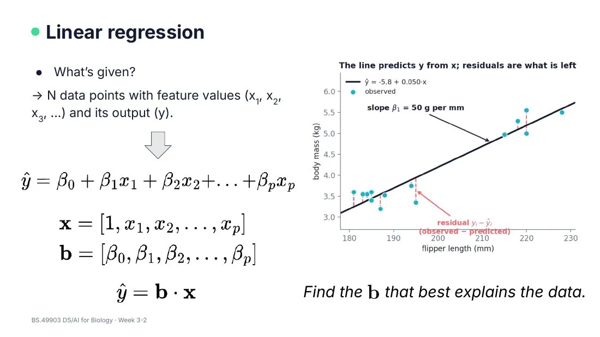
3.1 선형회귀 모델과 손실 (2/4) W3-2 p15–18, p21
$$\hat y=\beta_0+\beta_1x_1+\dots+\beta_px_p=\mathbf b\cdot\mathbf x,\qquad \mathbf x=[1,x_1,\dots,x_p],\ \mathbf b=[\beta_0,\dots,\beta_p]$$$n$개 샘플을 모으면 아래처럼 행렬로 쓸 수 있다. 여기서 $n$은 샘플 수, $p$는 feature 수다.
$$\underbrace{\mathbf X}_{n\times p}=\begin{bmatrix}1&x_{11}&\cdots&x_{1p}\\ \vdots&&&\vdots\\ 1&x_{n1}&\cdots&x_{np}\end{bmatrix},\quad \underbrace{\hat{\mathbf y}}_{n\times1}=\mathbf X\underbrace{\mathbf b}_{p\times1},\quad L=\|\mathbf y-\hat{\mathbf y}\|^2=\sum_i(y_i-\mathbf x_i\cdot\mathbf b)^2$$위 크기는 슬라이드의 표기다. 절편용 1 열을 포함하면 엄밀히 $\mathbf X$는 $n\times(p+1)$, $\mathbf b$는 $(p+1)\times1$이다.
목표는 L을 최소화하는 b를 찾는 것이다. 이 방법을 최소제곱(least squares)이라고 한다.
절편 $\beta_0$는 특별한 값이 아니라 항상 1인 feature의 계수다. 그래서 디자인 행렬의 첫 열이 1이다.
펭귄 예: 날개 길이로 체중(body mass)을 예측하면 $\beta_0=-5872.1$ g, $\beta_1=50.15$ g/mm이다. 날개가 205 mm이면 4409.3 g으로 예측하고, $R^2=0.762$이다.
3.1 선형회귀 모델과 손실 (3/4) W3-2 p15–17 · 실습 W3 5.1
- 푸는 문제: 측정값(feature) x로 연속적인 숫자 y를 예측한다. 또는 두 변수의 관계가 얼마나 가파른지를 기울기라는 한 숫자로 요약한다.
- 언제 쓰나: y가 체중(g)이나 BOLD 신호처럼 연속값일 때 쓴다. 관계가 대략 직선이거나 $x^2, x^3$ 열을 더해 표현할 수 있어야 하고, 잔차가 구조 없는 노이즈여야 한다. (3.4, 3.5)
- 언제 쓰면 안 되나: y가 범주(예: malignant/benign)라면 로지스틱 회귀를 쓴다. (3.7)
- 한계: 그룹이 섞여 있으면 기울기의 부호까지 뒤집힐 수 있다. 이것이 Simpson's paradox다. (3.6)
- 한계: 기울기는 연관(association)을 나타낼 뿐 인과를 뜻하지 않는다. 데이터 범위 밖으로 외삽하는 것에도 근거가 없다. 추론
- 대안: 관계가 곡선이면 다항(polynomial) feature를 추가하며, 이것도 여전히 선형회귀다. 그룹이 섞여 있으면 그룹별로 회귀하거나 dummy 변수와 상호작용(interaction) 항을 넣는다. y가 범주면 로지스틱 회귀를 쓴다. (3.5, 3.6, 3.7)
- 수업 예: 펭귄의 날개 길이로 체중을 예측했다($R^2$ 0.762). 과제1에서는 부리 깊이(bill depth)로 체중을 예측했고, fMRI BOLD 신호를 시간에 대해 회귀했다.
왜 하필 "제곱"합인가? 자료 외 보충
- 잔차를 그냥 더하면 +와 −가 상쇄된다. 예를 들어 평균 $\bar y$ 높이의 수평선도 잔차의 합이 0이다.
- 제곱은 매끄럽게 미분할 수 있다. 그래서 "편미분 = 0" 조건으로 손 유도를 하고 닫힌 해를 얻을 수 있다. (3.2, 3.3)
- 큰 오차를 더 크게 벌한다. 오차가 2배가 되면 벌점은 4배가 된다. 대신 이상치(outlier)에 민감하다.
- 노이즈가 정규분포를 따른다고 가정하면, 최소제곱 추정은 최대우도(maximum likelihood) 추정과 같다.
3.1 선형회귀 모델과 손실 (4/4) W3-2 p15–17 · 실습 W3 5.1
- 잔차는 $\hat y-y$, 즉 예측에서 관측을 뺀 값이다.잔차(residual)는 $y-\hat y$, 즉 관측 − 예측이다. 거꾸로 쓰면 부호가 반대가 되어, 점이 직선 위에 있는지 아래에 있는지 해석이 뒤집힌다. (W3-2 p16 "observed − predicted")
- 손실은 잔차를 모두 더한 값이다.손실은 잔차의 합이 아니라 제곱합 $\sum_i(y_i-\hat y_i)^2$이다.
- 절편 $\beta_0=-5872$ g은 날개가 0 mm인 펭귄의 체중이다.데이터는 약 170–230 mm 범위에 있으므로, 절편은 직선을 데이터 밖으로 연장한 값이다. 그래서 생물학적 의미는 없고 직선의 위치를 맞추는 숫자일 뿐이다. 추론
- 기울기 50.15 g/mm는 날개를 1 mm 늘리면 체중이 50 g 는다는 뜻이다.기울기는 날개가 1 mm 긴 펭귄이 평균 50 g 무겁다는 연관을 나타낸다. 날개를 늘리면 체중이 는다는 인과는 회귀가 말해 주지 않는다. 추론
- 1 열을 포함한 디자인 행렬 $\mathbf X$의 크기는 $n\times p$이다.슬라이드는 $\mathbf X$를 $n\times p$로 적지만, 1 열을 포함하면 $n\times(p+1)$이다. 정규방정식에서 차원을 셀 때 혼동하지 않도록 주의한다.
선형회귀(linear regression)는 $\mathbf x=[1,x_1,\dots,x_p]$에 대해 $\hat y=\mathbf b\cdot\mathbf x$로 예측한다. 잔차 제곱합 $\sum_i(y_i-\mathbf x_i\cdot\mathbf b)^2$을 최소로 만드는 $\mathbf b$를 찾으며, 이 방법을 최소제곱(least squares)이라고 한다. 절편(intercept)은 항상 1인 feature의 가중치일 뿐이다. 그래서 디자인 행렬(design matrix)의 첫 열은 모두 1이고, 예측은 $\hat{\mathbf y}=\mathbf X\mathbf b$이다.
“Write the linear regression model in matrix form and state what is minimized to find the coefficients. Why does the design matrix contain a column of ones?”
키워드: least squares(최소제곱) · sum of squared residuals(잔차 제곱합) · coefficient(계수) · intercept(절편) · design matrix(디자인 행렬)
3.2 두 점으로 손 유도하기 (1/2) 유도 필수W3-2 p19–20
데이터는 두 점 $(0,0)$과 $(m,n)$이다. 모델은 $\hat y_i=\beta_0+\beta_1x_i$이고, 행렬로 쓰면 다음과 같다.
$$\mathbf X=\begin{bmatrix}1&0\\1&m\end{bmatrix},\qquad \mathbf y=\begin{bmatrix}0\\n\end{bmatrix},\qquad \mathbf b=\begin{bmatrix}\beta_0\\\beta_1\end{bmatrix}$$- 손실을 쓰고 데이터를 대입한다: 두 점의 잔차를 각각 제곱해서 더한다. $$L=(0-(\beta_0+\beta_1\cdot0))^2+(n-(\beta_0+\beta_1m))^2=\beta_0^2+(n-\beta_0-m\beta_1)^2$$ 이것을 전개하면 다음과 같다. $$=2\beta_0^2+2m\beta_0\beta_1-2n\beta_0-2nm\beta_1+m^2\beta_1^2+n^2$$
- 편미분을 0으로 놓는다: $\beta_0$와 $\beta_1$로 각각 미분한다. 첫 식은 양변을 2로, 둘째 식은 양변을 $2m$으로 나누어 정리한다. $$\frac{\partial L}{\partial\beta_0}=4\beta_0+2m\beta_1-2n=0\ \Rightarrow\ 2\beta_0=n-m\beta_1\quad(1)$$ $$\frac{\partial L}{\partial\beta_1}=2m\beta_0+2m^2\beta_1-2nm=0\ \Rightarrow\ \beta_0=n-m\beta_1\quad(2)$$
- (2)를 (1)에 대입한다: (1)의 $\beta_0$ 자리에 (2)를 넣으면 $\beta_1$이 나온다. $$2(n-m\beta_1)=n-m\beta_1\ \Rightarrow\ n=m\beta_1\ \Rightarrow\ \beta_1=\frac nm$$
- 역대입한다: $\beta_1$을 (2)에 넣으면 $\beta_0=n-m\cdot\frac nm=0$이다. 따라서 해는 $\beta_0=0,\ \beta_1=n/m$이다. 이 직선은 두 점을 정확히 지나므로 잔차가 0이다.
3.2 두 점으로 손 유도하기 (2/2) W3-2 p19–21
- $(n-\beta_0-m\beta_1)^2$을 전개하면 $n^2+\beta_0^2+m^2\beta_1^2$이다.교차항 $+2m\beta_0\beta_1$, $-2n\beta_0$, $-2nm\beta_1$도 있어서 빠뜨리기 쉽다. 또 여기서 나온 $\beta_0^2$은 첫 점의 $\beta_0^2$과 합쳐져 $2\beta_0^2$이 된다.
- $(n-\beta_0-m\beta_1)^2$을 $\beta_0$로 미분하면 $2(n-\beta_0-m\beta_1)$이다.안쪽 식을 $\beta_0$로 미분하면 −1이므로, 결과는 $-2(n-\beta_0-m\beta_1)$이다. 슬라이드처럼 먼저 전개한 뒤 미분하면 부호 실수가 줄어든다.
- 이 유도는 m의 값과 상관없이 성립한다.(2)를 얻을 때 양변을 $2m$으로 나누므로 $m\ne0$이어야 한다. 두 점의 x가 같으면 기울기를 정할 수 없고, $X^TX$의 행렬식 $2m^2-m^2=m^2$이 0이 되어 역행렬이 없다. 추론
- 편미분이 0인 점이면 당연히 최소점이다.편미분이 0인 점은 최대점이나 안장점일 수도 있다. 안장점은 말안장처럼 한 방향으로는 오르막, 다른 방향으로는 내리막인 점이다. 여기서는 L이 β에 대한 그릇 모양(볼록) 2차식이라서, 미분이 0인 점이 유일한 최소점이다. 자료 외 보충
- 잔차가 0이고 $R^2=1$이므로 완벽한 모델이다.점 2개에 파라미터 2개라서 직선이 두 점을 정확히 지날 뿐이다. 그래서 잔차가 0이고, 두 y값이 다르면($n\ne0$) $R^2=1$이 된다. 이것은 완벽한 모델이 아니라 검증할 여지가 없는 적합이다. (W3-2 p19 그림 "residuals are zero"; 3.4 (4/4))
두 점 $(0,0)$과 $(m,n)$에 대해 손실은 $L=\beta_0^2+(n-\beta_0-m\beta_1)^2$이다. 두 편미분(partial derivative)을 0으로 놓으면 아래 두 식이 나온다. $$\partial L/\partial\beta_0=4\beta_0+2m\beta_1-2n=0,\qquad \partial L/\partial\beta_1=2m\beta_0+2m^2\beta_1-2nm=0$$ 이 연립방정식을 풀면 $\beta_1=n/m$, $\beta_0=0$이다. 파라미터 2개로 두 점을 정확히 지나므로, 두 잔차는 모두 0이다.
“Given two data points (0, 0) and (m, n), derive the least-squares estimates of β₀ and β₁ by setting the partial derivatives of the loss to zero. What are the residuals?”
키워드: derive(유도하라) · partial derivative(편미분) · loss(손실) · least-squares estimate(최소제곱 추정값) · slope(기울기) · residual(잔차)
일반화: n개 점의 단순회귀 공식 자료 외 보충
$$\frac{\partial L}{\partial\beta_0}=-2\sum_i(y_i-\beta_0-\beta_1x_i)=0\ \Rightarrow\ \beta_0=\bar y-\beta_1\bar x$$ $$\frac{\partial L}{\partial\beta_1}=-2\sum_i x_i(y_i-\beta_0-\beta_1x_i)=0\ \Rightarrow\ \beta_1=\frac{\sum_i(x_i-\bar x)(y_i-\bar y)}{\sum_i(x_i-\bar x)^2}$$첫 식 때문에 직선은 항상 $(\bar x,\bar y)$를 지나고, 잔차의 합은 0이다.
검산: 두 점 $(0,0),(m,n)$이면 $\bar x=m/2$, $\bar y=n/2$이다. 분자는 $mn/2$, 분모는 $m^2/2$이므로 $\beta_1=n/m$이다. 그러면 $\beta_0=n/2-(n/m)(m/2)=0$이 되어 앞의 결과와 일치한다.
연습: 세 점 (0,0), (1,1), (2,3)에 직선을 맞추고 R²를 구하라. 자료 외 보충 연습
먼저 정규방정식을 세운다. $n=3$, $\sum x=3$, $\sum x^2=5$, $\sum y=4$, $\sum xy=7$이므로 두 행렬은 다음과 같다.
$$X^TX=\begin{bmatrix}3&3\\3&5\end{bmatrix},\qquad X^T\mathbf y=\begin{bmatrix}4\\7\end{bmatrix}$$따라서 $3\beta_0+3\beta_1=4$와 $3\beta_0+5\beta_1=7$을 연립해서 풀면 $\beta_1=3/2$, $\beta_0=-1/6$이다.
예측값은 $-\tfrac16,\ \tfrac43,\ \tfrac{17}6$이고, 잔차는 $\tfrac16,\ -\tfrac13,\ \tfrac16$이다. 잔차의 합이 0이므로 앞의 성질과도 맞는다.
$\bar y=4/3$을 써서 제곱합과 $R^2$를 구하면 다음과 같다.
$$SS_{res}=\tfrac1{36}+\tfrac4{36}+\tfrac1{36}=\tfrac16,\qquad SS_{tot}=\tfrac{16+1+25}{9}=\tfrac{14}3,\qquad R^2=1-\frac{1/6}{14/3}=\frac{27}{28}\approx0.964$$$R^2$가 높아도 $n=3$이라 잔차 자유도가 1뿐이다. 그래서 $p\approx0.12$로 유의하지 않다. 추론 (3.4 (4/4))
3.3 정규방정식(normal equation) (1/2) W3-2 p21 · 과제1 Ex 3.3
$$\hat{\mathbf b}=\arg\min_{\mathbf b}\|\mathbf y-\hat{\mathbf y}\|^2=(\mathbf X^T\mathbf X)^{-1}\mathbf X^T\mathbf y$$- "normal"은 "수직"이라는 뜻이다. 최적일 때 남은 오차(잔차)에는 어떤 입력 열과도 같이 오르내리는 성분이 남아 있지 않다. 만약 남아 있다면 그 열의 계수를 조금 바꿔 오차를 더 줄일 수 있기 때문이다. 자료 외 보충
일반 유도 스케치 자료 외 보충
손실을 행렬로 쓰고 전개한다.
$$L(\mathbf b)=(\mathbf y-\mathbf X\mathbf b)^T(\mathbf y-\mathbf X\mathbf b)=\mathbf y^T\mathbf y-2\mathbf b^T\mathbf X^T\mathbf y+\mathbf b^T\mathbf X^T\mathbf X\mathbf b$$전개하면 $-\mathbf y^T\mathbf X\mathbf b-\mathbf b^T\mathbf X^T\mathbf y$가 나온다. 두 항은 같은 숫자(스칼라)라서 합쳐 $-2\mathbf b^T\mathbf X^T\mathbf y$가 된다.
이제 b의 각 성분으로 편미분한 값을 모은 그래디언트 $\nabla_{\mathbf b}L$을 구한다. 미분 규칙 두 개를 쓴다. $\partial(\mathbf b^T\mathbf a)/\partial\mathbf b=\mathbf a$이고, 대칭행렬 $A$에 대해 $\partial(\mathbf b^TA\mathbf b)/\partial\mathbf b=2A\mathbf b$이다. 1변수에서 $ab$를 b로 미분하면 $a$, $ab^2$을 b로 미분하면 $2ab$인 것과 같은 꼴이다. $\mathbf X^T\mathbf X$는 대칭행렬이므로 둘째 규칙을 쓸 수 있다. 그래디언트를 0으로 놓으면 정규방정식이 나온다.
$$\nabla_{\mathbf b}L=-2\mathbf X^T\mathbf y+2\mathbf X^T\mathbf X\mathbf b=-2\mathbf X^T(\mathbf y-\mathbf X\mathbf b)=\mathbf 0\ \Rightarrow\ \mathbf X^T\mathbf X\mathbf b=\mathbf X^T\mathbf y$$$X^TX$가 가역이면, 즉 열들이 선형독립이면 $\hat{\mathbf b}=(X^TX)^{-1}X^T\mathbf y$이다.
기하학적 의미는 잔차 $\mathbf y-\mathbf X\hat{\mathbf b}$가 $\mathbf X$의 모든 열과 직교한다는 것이다.
- 과제1 Ex 3.3에서는 cubic 모델의 디자인 행렬 $[1, t, t^2, t^3]$(266×4)로 직접 계산했다. 결과는 $[-0.1150, 0.1357, -0.0185, 0.00063]$이고, sklearn과의 차이는 약 $10^{-14}$이다.
- 둘은 같은 최소제곱(least-squares) 문제를 푼다. sklearn은 역행렬을 명시적으로 구하는 대신, 수치적으로 더 안정적인 least-squares solver를 쓸 뿐이다.
- 선형회귀에는 닫힌 해(closed form)가 있다. 반면 로지스틱 회귀에는 닫힌 해가 없다. (3.8)
3.3 정규방정식(normal equation) (2/2) W3-2 p21 · 실습 W3 5.2 · 과제1 Ex 3.3
- 푸는 문제: 최소제곱 해를 반복 없이 정확히 한 번에 계산한다. 이런 해를 닫힌 해(closed form)라고 한다.
- 언제 쓰나: 직선, 다중회귀, 다항식(polynomial)처럼 β에 대해 선형인 모든 모델에 쓸 수 있다. 예를 들어 과제1 Ex 3.3의 cubic 모델에서는 $X$가 266×4, $X^TX$가 4×4다.
- 조건: $X^TX$가 가역이어야 한다. 그러려면 열들이 선형독립(서로의 선형결합이 아님)이어야 하고, 샘플 수가 열 수 이상이어야 한다. feature가 p개면 1 열까지 열이 p+1개이므로 $n\ge p+1$이다. 슬라이드처럼 1 열까지 p로 세면 같은 조건이 $n\ge p$이고, $X^TX$는 $p\times p$다. 예를 들어 같은 길이를 mm와 cm로 두 번 넣으면 비가역이 된다. 추론
- 실제 계산: 계산할 때는 역행렬을 직접 구하기보다 solver를 쓰는 편이 안정적이다. 실습 W3 5.2는
np.linalg.solve를 쓰고, sklearn도 least-squares solver를 쓴다. (과제1 해설) - 대안: 로지스틱 회귀처럼 닫힌 해가 없는 모델은 그래디언트(gradient)의 반대 방향으로 조금씩 내려가는 반복 최적화로 푼다. (3.8)
- 수업 예: 과제1 Ex 3.3에서 손 계산과 sklearn의 최대 차이는 $1.8\times10^{-14}$였다. 같은 문제를 풀었으므로 같은 답이 나온 것이다.
- $(X^TX)^{-1}X^T\mathbf y$를 약분하면 $X^{-1}\mathbf y$이다.$X$는 $n\times(p+1)$ 직사각형 행렬이라 역행렬이 없으므로 약분할 수 없다. $X$가 정사각이고 가역일 때, 즉 3.2처럼 점 개수와 파라미터 개수가 같을 때만 $X^{-1}\mathbf y$와 같고 잔차가 0이다. 추론
- 정규방정식으로 풀 때 디자인 행렬에 1 열이 없어도 절편은 알아서 구해진다.1 열을 빼먹으면 절편이 0으로 강제된다. 그러면 원점을 지나는 직선만 맞출 수 있다. (과제1 3.3 "must have a column of ones")
- $(X^TX)^{-1}$, $X^T$, $\mathbf y$는 어떤 순서로 곱해도 된다.행렬곱은 교환법칙이 성립하지 않는다. 크기로 검산하면 $(p+1)\times(p+1)$, $(p+1)\times n$, $n\times1$을 차례로 곱해 $(p+1)\times1$이 나와야 한다.
- $X^TX$의 크기는 샘플 수 n에 따라 커진다.$X^TX$의 크기는 샘플 수가 아니라 파라미터 수로 정해진다. 예를 들어 266점에 cubic 모델을 맞추면 $X^TX$는 4×4다.
- 손 계산과 sklearn의 결과가 $10^{-14}$만큼 다르니 서로 다른 모델이다.이 차이는 부동소수점 반올림 오차일 뿐이다. 두 계산은 같은 최소제곱 문제를 푼 것이다.
손실 $L(\mathbf b)=\|\mathbf y-\mathbf X\mathbf b\|^2$의 그래디언트(gradient)를 0으로 놓으면 정규방정식이 나온다. $$\nabla_{\mathbf b}L=-2\mathbf X^T(\mathbf y-\mathbf X\mathbf b)=\mathbf 0\ \Rightarrow\ \mathbf X^T\mathbf X\mathbf b=\mathbf X^T\mathbf y$$ $\mathbf X$의 열들이 선형독립(linearly independent)이면 해는 $\hat{\mathbf b}=(\mathbf X^T\mathbf X)^{-1}\mathbf X^T\mathbf y$이다. $L$은 $\mathbf b$에 대한 볼록(convex) 2차식이므로, 그래디언트가 0인 이 점이 전역 최소다. 기하학적으로는 잔차가 $\mathbf X$의 모든 열과 직교한다.
“Derive the normal equation for linear regression by minimizing the sum of squared residuals. Under what condition does this closed-form solution exist, and why is it the global minimum?”
키워드: normal equation(정규방정식) · gradient(그래디언트) · closed-form solution(닫힌 해) · linearly independent(선형독립) · convex(볼록) · orthogonal(직교)
3.4 평가: 잔차(residual)와 R² (1/4) W3-2 p22–23 · notebook 5.3
$$\text{residual}=y-\hat y=y-\mathbf b\cdot\mathbf x\qquad R^2=1-\frac{SS_{res}}{SS_{tot}}=1-\frac{\sum_i(y_i-\hat y_i)^2}{\sum_i(y_i-\bar y)^2}$$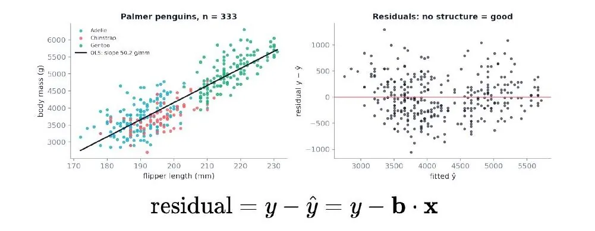
- 좋은 모델이라면 잔차에 구조가 없어야 한다(only noise).
- 잔차를 적합값에 대해 그린 그림에서 곡선 패턴이나 깔때기 모양 같은 구조가 보이면, 모델이 무언가를 놓치고 있다는 뜻이다.
- $R^2$는 전체 분산 중 모델이 설명하는 비율이다. $R^2=1$이면 완벽한 적합이고, $R^2=0$이면 평균값만 예측하는 것과 다를 바 없다.
- feature(열)를 추가하면 training $R^2$는 절대 내려가지 않는다. 펭귄 모델도 linear의 0.762에서 cubic의 0.777로 올랐다.
- 새 열의 계수를 0으로 두면 이전 모델과 똑같아진다. 따라서 최소제곱 해는 이전 모델보다 나쁠 수 없다.
- 그래서 training 성능만으로는 모델이 더 좋은지 판단할 수 없다. test set이나 교차검증(cross-validation)이 필요하다. (3.10, 4.9)
3.4 평가: 잔차(residual)와 R² (2/4) W3-2 p22–23 · 실습 W3 5.3–5.4 · 과제1 3.2
- $R^2$는 아무 정보 없이 모두 평균값 하나로 찍었을 때의 오차 중에서, 모델이 줄여 준 비율이다.
- 예를 들어 평균으로 찍었을 때 제곱오차의 합이 100이고 직선을 쓰니 24라면, $R^2=1-24/100=0.76$이다. 펭귄 날개 길이 모델의 0.762가 이 정도다.
- $R^2$가 1이면 모든 점을 정확히 맞힌 것이고, 0이면 평균으로 찍는 것과 같다.
- 잔차 그림은 각 점의 남은 오차를 예측값에 대해 찍은 그림이다. 점들이 0 주변에 고르게 흩어진 구름이면 좋다.
- 반대로 휘어진 띠나 한쪽으로 퍼지는 나팔 모양이 보이면, 모델이 놓친 규칙이 남아 있다는 뜻이다.
- R²: 적합 정도를 단위 없는 한 숫자로 요약한다. 같은 y를 예측하는 모델들을 비교할 때 출발점이 된다.
- 잔차 그림: $R^2$ 한 숫자로는 보이지 않는 모양의 문제를 진단한다. 곡선을 직선으로 맞췄거나, 퍼짐이 변하거나, 그룹이 섞인 경우가 그 예다.
- 한계: training $R^2$는 열을 추가하면 내려가지 않으므로 모델 선택에 쓸 수 없다. 모델 선택에는 test set이나 교차검증(CV)을 쓴다.
- 한계: $R^2$가 높아도 점이 적으면 통계적 근거가 약하다. 이것은 p-value로 확인한다. (3.4 (4/4))
- 한계: $R^2$는 인과를 말해 주지 않는다. 추론
- 수업 예: 펭귄 모델은 linear 0.762에서 cubic 0.777로 올랐다. 열을 추가하면 training $R^2$는 원래 내려가지 않으므로, 이 상승만으로는 cubic이 더 낫다고 말할 수 없다. (실습 W3 5.4)
- 수업 예: 과제1 fMRI는 직선 0.169에서 cubic 0.561로 올랐다. 남은 분산은 대부분 같은 시점에서의 피험자 간 차이라서 t만의 함수로는 설명할 수 없다.
3.4 평가: 잔차(residual)와 R² (3/4) W3-2 p22–23 · 실습 W3 5.3–5.4 · 과제1 3.2
- 좋은 모델이라면 잔차 그림에 뚜렷한 패턴이 보인다.좋은 모델의 잔차는 뚜렷한 패턴이 아니라 구조 없는 노이즈다.
- $R^2$는 $SS_{res}/SS_{tot}$이다.$R^2=1-SS_{res}/SS_{tot}$이다. 분모 $SS_{tot}$은 평균과의 차 $(y-\bar y)^2$을 더한 것이고, 분자 $SS_{res}$는 $(y-\hat y)^2$을 더한 것이다.
- $R^2=0$이면 x와 y 사이에 아무 관계도 없다.$R^2=0$은 평균보다 나을 게 없다는 뜻일 뿐, 관계가 없다는 증명이 아니다. 예를 들어 완벽한 U자 관계도 직선으로 맞추면 $R^2\approx0$이다. 추론
- cubic의 $R^2$ 0.777이 linear의 0.762보다 높으니 cubic이 더 좋은 모델이다.열을 더하면 training $R^2$는 같거나 오를 수밖에 없다. 그래서 이 차이만으로는 더 좋은 모델이라고 말할 수 없다. (실습 W3 5.4)
- $R^2$는 항상 0과 1 사이에 있다.그것은 절편을 포함한 최소제곱을 training 데이터에서 계산할 때만 성립한다. test set에서 계산하면 평균보다 못한 예측일 때 음수도 나온다. 자료 외 보충
3.4 평가: R²와 p-value (4/4) W3-2 p23 · 실습 W3 5.3
- p-value는 "관계가 우연일 확률"도 아니고 "관계가 없을 확률"도 아니다.
- 식으로 쓰면 p-value는 P(지금만큼 이상 강한 관계 | 관계 없음)이다. P(관계 없음 | 이런 데이터)가 아니다.
- p-value는 효과 크기($R^2$)와 표본 크기 N에 모두 의존한다. 그래서 작은 $R^2$도 N이 크면 매우 유의할 수 있다. (실습: "the p-value mostly reflects your sample size")
잔차 자유도(residual degrees of freedom)는 점 개수에서 맞춘 파라미터 수를 뺀 값이다. 직선은 β0와 β1 두 개를 맞추므로 $n-2$이다. 점이 파라미터 수보다 많아야 직선이 모든 점을 지나지 못하고, 점들이 직선에서 벗어난 정도로 노이즈의 크기를 잴 수 있다. 자유도가 0이면 직선이 모든 점을 지나므로 노이즈를 잴 수 없고, 그래서 p-value도 계산할 수 없다. 자료 외 보충
| 점 개수 n | $R^2$ | 잔차 자유도 $n-2$ | p-value 추론 |
|---|---|---|---|
| 2 | 1 (두 y값이 다르면 항상) | 0 | 계산 불가 |
| 3 | 0.9 | 1 | ≈ 0.20 |
| 3 | 0.964 (3.2 연습) | 1 | ≈ 0.12 |
| 4 | 0.9 | 2 | ≈ 0.05 |
표의 p-value는 단순회귀의 기울기 검정인 F 검정으로 계산했다. 자유도는 $(1,\ n-2)$이고, 검정통계량은 아래와 같다. 자료 외 보충
$$F=\frac{R^2}{1-R^2}(n-2)$$What if R² is high but the p-value is also high? (슬라이드 질문) 추론
점이 아주 적을 때 이런 일이 생긴다. 예를 들어 $n=3$, $R^2=0.9$이면 다음과 같다.
$$F=\frac{R^2}{1-R^2}(n-2)=9,\qquad p\approx0.20$$같은 $R^2$라도 $n=4$이면 $p\approx0.05$이다.
극단적으로 점이 2개이면 직선이 항상 두 점을 정확히 지나므로, 잔차가 0이고 $R^2=1$이다. (3.2)
그러나 이때 잔차 자유도가 $n-2=0$이라 p-value 자체를 계산할 수 없다. 아무 증거도 없는 "완벽한 적합"인 셈이다.
정리하면 $R^2$는 직선이 얼마나 잘 맞는지를 재고, p-value는 관계가 없다고 가정해도 이만큼의 관계가 쉽게 나오는지를 잰다. 둘은 서로 다른 질문이다.
따라서 높은 $R^2$가 자동으로 좋은 소식은 아니다.
결정계수(coefficient of determination) $R^2$는 모델이 설명하는 분산의 비율이다. p-value는 기울기가 진짜 0이라고 가정했을 때 지금만큼 또는 그보다 강한 관계가 나올 확률이며, 효과 크기와 표본 크기 N에 모두 의존한다. 그래서 점이 아주 적으면 $R^2$가 높아도 p-value가 높을 수 있다. 예를 들어 $n=3$, $R^2=0.9$이면 $p\approx0.20$이다. 점이 2개이면 항상 $R^2=1$이지만, 잔차 자유도가 0이라서 p-value를 계산할 수 없다. 반대로 N이 크면 작은 $R^2$도 매우 유의할 수 있다.
“What if R² is high but the p-value is also high? Explain what each quantity measures and when this can happen.”
키워드: coefficient of determination(결정계수) · explained variance(설명된 분산) · p-value(유의확률) · effect size(효과 크기) · sample size(표본 크기) · degrees of freedom(자유도) · significant(유의한)
3.5 "Linear"의 의미: linear in β (1/2) W3-2 p24–25 · 과제1 Ex 3.1–3.2
$$\hat y=\beta_0+\beta_1x+\beta_2x^2+\beta_3x^3$$Is this model linear? → Yes
- $x^2, x^3$은 데이터에서 미리 계산해 두는 새 열일 뿐이다. 예를 들어 시점 t = 3인 측정은 행 [1, 3, 9, 27]이 된다.
- 이 행의 예측값은 $\beta_0\cdot1+\beta_1\cdot3+\beta_2\cdot9+\beta_3\cdot27$이다.
- 그래서 곡선을 그려도 푸는 방법은 직선과 똑같다. 3.3의 공식을 그대로 쓴다.
- $x, x^2, x^3$은 데이터로부터 계산되는 알려진 값이다. 즉 그냥 추가된 feature 열이다.
- 예측은 고정된 열들의 가중합이다. 그래서 "linear"는 파라미터 β에 대해 선형이라는 뜻이고, 같은 정규방정식이 그대로 적용된다.
- 과제1의 BOLD 데이터는 14명 × 19시점 = 266점이다.
- 직선 $y=b_0+b_1t$는 $R^2\approx0.169$로, 한 방향으로만 변하는 단조 drift만 표현한다.
- cubic은 $R^2\approx0.561$이다. 신호가 올라가 피크를 찍고 내려온 뒤 baseline 아래로 꺼지는(dip) 모양을 재현한다.
- 남은 분산은 대부분 같은 시점에서의 피험자 간 변동이다. 이것은 t만의 함수로는 설명할 수 없다.
- β에 대해 비선형인 모델의 예는 다음과 같다. 자료 외 보충 $$\hat y=\beta_0e^{\beta_1x},\qquad \hat y=\frac{1}{1+e^{-(\beta_0+\beta_1x)}}$$
3.5 "Linear"의 의미: linear in β (2/2) W3-2 p24–25 · 실습 W3 5.4 · 과제1 Ex 3.2
- 푸는 문제: 직선으로 맞출 수 없는 곡선 모양을 같은 도구로 맞춘다. 정규방정식이나
LinearRegression을 그대로 쓰고, 열만 늘리면 된다. - 수업 예: fMRI BOLD의 자극 반응은 올라가서 피크를 찍고, 내려온 뒤 baseline 아래로 꺼지는(dip) 모양이다. 직선은 $R^2$ 0.169로 단조 drift만 표현하고, cubic은 $R^2$ 0.561로 이 모양을 재현한다. (과제1 Ex 3.1–3.2)
- 한계: 차수를 올릴수록 모델이 복잡해져 overfitting 위험이 커진다. (W4 p10 x축 "higher degree")
- 한계: 데이터 범위 밖에서 다항식은 급격히 발산한다. 자료 외 보충
- 한계: training $R^2$가 오른 것만으로는 개선의 증거가 되지 않는다. 열을 추가하면 training $R^2$는 내려가지 않기 때문이다.
- β에 비선형인 모델: 지수 모델 $\beta_0e^{\beta_1x}$나 sigmoid 모델에는 정규방정식을 쓸 수 없다. 이런 모델은 로지스틱 회귀처럼 반복 최적화로 푼다. (3.8)
- x에 대해 곡선이므로 비선형 회귀다.선형인지 판단하는 기준은 x가 아니라 β다. β에 대해 선형이면 곡선이어도 선형회귀다.
- 로지스틱 회귀도 $z=\mathbf w\cdot\mathbf x+b$가 w에 선형이니 정규방정식으로 풀 수 있다.z는 w에 선형이지만, 출력 $\sigma(z)$와 손실은 w에 대해 비선형이다. 그래서 정규방정식 같은 닫힌 해가 없다. (3.8)
- cubic의 $R^2$가 더 높다는 것 하나만으로 더 좋은 모델이라고 결론 낼 수 있다.열을 추가하면 training $R^2$는 내려가지 않으므로, $R^2$ 상승 하나만으로는 근거가 부족하다. 과제1 해설은 cubic이 "far better"인 근거로 모양을 먼저 든다. 직선은 단조 drift만 표현하지만, cubic은 상승, 피크, 하강, dip을 재현한다. $R^2$가 0.17에서 0.56으로 오른 것은 함께 든 보조 근거다. 엄밀한 비교는 test set이나 교차검증(CV)으로 한다. (과제1 Ex 3.2 해설)
- 차수를 더 올리면 남은 분산도 결국 설명할 수 있다.남은 분산은 대부분 피험자 간 변동이라 차수를 올려도 잡을 수 없다. 같은 t에 14명의 서로 다른 y가 있는데, t만의 함수는 t마다 값을 하나밖에 주지 못하기 때문이다. (과제1 해설)
- 다항식 모델에서는 $t, t^2, t^3$ 열만 있으면 된다.다항식이어도 디자인 행렬에 1 열이 필요하다. 과제1의 디자인 행렬은 $X=[1,t,t^2,t^3]$(266×4)이다.
그렇다, 선형 모델이다. "선형(linear)"은 파라미터 β에 대해 선형이라는 뜻이다. 예측 $\beta_0\cdot1+\beta_1x+\beta_2x^2+\beta_3x^3$은 이미 값이 정해진 feature 열들의 가중합이다. $x^2$과 $x^3$은 데이터에서 계산하므로 $\mathbf X$에 추가된 열일 뿐이고, 같은 최소제곱 해 $\hat{\mathbf b}=(\mathbf X^T\mathbf X)^{-1}\mathbf X^T\mathbf y$가 그대로 적용된다.
“Is the model ŷ = β₀ + β₁x + β₂x² + β₃x³ linear? Explain what ‘linear’ means in linear regression and how this model can be fitted.”
키워드: linear in the parameters(파라미터에 선형) · polynomial features(다항 feature) · weighted sum(가중합) · design matrix(디자인 행렬) · least squares(최소제곱)
3.6 Simpson's paradox (과제1 Part 2) (1/2) 과제1 Ex 2.2–2.4
- 작은 예: 그룹 A는 x가 1, 2, 3일 때 y가 10, 11, 12이고, 그룹 B는 x가 6, 7, 8일 때 y가 2, 3, 4이다. 자료 외 보충 예시
- 각 그룹 안의 기울기는 +1이다. 그런데 6점을 합쳐 직선을 그으면 기울기가 약 −1.35가 된다.
- 합친 직선은 그룹 안의 경향이 아니라, x가 작고 y가 큰 A에서 x가 크고 y가 작은 B로 넘어가는 큰 차이를 따라가기 때문이다.
- 펭귄에서는 Gentoo가 부리가 얕고 무거운 그룹이다. 즉 x가 작고 y가 크다.
| 모델 (bill depth → body mass) | slope $b_1$ | $R^2$ |
|---|---|---|
| 전체 펭귄 하나의 모델 | −191.64 g/mm | 0.223 |
| Gentoo만 | +369.4 | 0.517 |
| Adelie + Chinstrap | +213.8 | 0.340 |
- 전체를 합친(pooled) 기울기가 음수라는 것은 부리가 깊을수록 가볍다는 뜻이다. 이것은 생물학적으로 말이 안 된다.
- 각 종 안에서는 부리가 깊을수록 무겁다. 즉 양의 추세가 있다.
- 원인은 Gentoo가 훨씬 무겁고 부리는 얕다는 데 있다. Gentoo의 체중은 약 5000 g으로, 다른 종의 약 3700 g보다 무겁다. 부리 깊이는 약 15 mm로, 다른 종의 약 18.4 mm보다 얕다.
- 그룹을 합치면 그룹 간 차이가 그룹 내 관계와 섞여 방향이 뒤집힌다. 여기서 종(species)이 교란변수(confounder)다.
- 개선 1: 종별로 따로 회귀한다. Adelie와 Chinstrap은 서로 겹치므로 묶어도 되고, 3개 모델로 나눠도 된다.
- 개선 2: 종 dummy 변수와 '종 × 부리 깊이' 상호작용항을 넣은 다중회귀를 한다. 그러면 그룹마다 기울기가 달라질 수 있다.
- dummy 변수 g는 Gentoo면 1, 아니면 0인 열이다. 상호작용항은 g와 부리 깊이 x를 곱한 열 gx다. 모델 $\hat y=\beta_0+\beta_1x+\beta_2g+\beta_3gx$에서 Adelie와 Chinstrap(g = 0)의 기울기는 $\beta_1$이고, Gentoo(g = 1)의 기울기는 $\beta_1+\beta_3$이다. 절편도 $\beta_0$와 $\beta_0+\beta_2$로 그룹마다 따로다. 그래서 이 모델로 구한 두 기울기는 그룹별로 따로 회귀한 +214, +369와 같다. 자료 외 보충
A single regression across all penguins gives a negative slope, but each species shows a positive one. Explain and propose a fix.
Simpson's paradox다. 종이 체중과 부리 깊이 모두에 영향을 주는 교란변수이기 때문이다.
Gentoo는 무겁고 부리가 얕으며, Adelie와 Chinstrap은 가볍고 부리가 깊다.
합치면 종 간 차이가 기울기를 지배해 음수가 된다. 그러나 종 내부의 실제 관계는 양수다.
pooled 모델은 $R^2$도 0.22로 낮고, 모든 종에서 예측이 편향된다.
해결 방법은 두 가지다. 첫째, 종별로(또는 Gentoo와 나머지로) 나눠 따로 회귀한다. 그러면 기울기는 +369, +214가 되고 $R^2$는 0.52, 0.34로 개선된다.
둘째, species dummy와 상호작용(interaction) 항을 포함한 하나의 다중회귀를 쓴다.
3.6 Simpson's paradox (2/2) 과제1 Ex 2.3–2.4
- 푸는 문제: 섞인 데이터의 전체 기울기가 그룹 내부의 관계를 왜곡하는 것을 알아차리고 바로잡는다. 심하면 부호까지 반대가 된다.
- 언제 의심하나: 데이터에 종, 성별, 섬, 실험 batch, 피험자 같은 그룹이 섞여 있고, 그룹마다 x와 y의 평균이 다를 때 의심한다. 첫 단계는 그룹별로 색을 칠한 산점도(scatter)를 그려 보는 것이다. (과제1 Ex 2.3)
- 해결: 그룹별로 회귀한다. Gentoo와 Adelie+Chinstrap 두 그룹으로 나누거나 3종 각각으로 나눌 수 있다. 3종으로 나누면 기울기는 Adelie +217, Chinstrap +205, Gentoo +369다.
- 해결: 또는 하나의 다중회귀에 species dummy와 '종 × 부리 깊이' 상호작용(interaction) 항을 넣는다.
- 효과: 기울기가 생물학적으로 맞는 양수(+369, +214)가 된다. $R^2$도 0.22에서 0.52와 0.34로 오른다. 과제1 해설은 이것을 "Conditioning on species removes the confounding."이라고 정리한다.
- 여러 batch, 피험자, 실험실의 데이터를 합쳐 분석하는 생물 데이터에는 일반적으로 같은 위험이 있다. 추론
- Simpson's paradox는 이상치(outlier) 문제라서 튀는 점 몇 개를 지우면 해결된다.몇 점을 지워서는 해결되지 않는다. Gentoo 한 종 전체가 부리가 얕고 무거운 그룹이라는, 그룹 구조의 문제이기 때문이다.
- x와 y 중 한쪽하고만 관련된 변수도 교란변수가 될 수 있다.교란변수(confounder)는 x와 y 둘 다와 관련된 변수다. 여기서는 종이 부리 깊이와 체중 모두에 관련된다. 한쪽과만 관련되면 이런 뒤집힘이 생기지 않는다. 추론
- 이 문제의 핵심은 pooled $R^2$가 0.22로 낮다는 것이다.낮은 $R^2$는 증상일 뿐이다. 핵심은 기울기 방향이 그룹 내부와 반대라는 것이다.
- 데이터를 더 모으면 해결된다.같은 비율로 섞인 데이터를 더 모아도 해결되지 않는다. 표본 크기가 아니라 모델 구조의 문제이기 때문이다. 추론
- 종 dummy 변수만 넣으면 그룹마다 기울기도 달라진다.dummy 변수만 넣으면 절편만 그룹별로 달라지고 기울기는 공통이다. 기울기도 그룹마다 다르게 하려면 상호작용 항이 필요하다. 자료 외 보충
펭귄 전체를 합치면(pooling) 종 간 차이와 종 내부의 관계가 섞인다. Gentoo는 더 무겁고 부리는 더 얕아서, 종 안에서는 기울기가 모두 양수인데도 합친 기울기는 −191.64 g/mm로 음수가 된다. 이것이 Simpson's paradox이고, 종이 교란변수(confounder)다. Gentoo와 나머지 두 종으로 나눠 따로 회귀하면 기울기가 +369 g/mm와 +214 g/mm로 양수가 되고, $R^2$도 0.223에서 0.517과 0.340으로 오른다. 종 dummy 변수에 종별 기울기를 허용하는 상호작용(interaction)항을 더한 하나의 다중회귀로도 그룹마다 양의 기울기를 얻는다.
“A single regression across all penguins gives a negative slope, but each species shows a positive one. Explain why this happens and propose a fix.”
키워드: Simpson's paradox(심슨의 역설) · confounder(교란변수) · pooled(합친) · within-group slope(그룹 내 기울기) · dummy variable(더미 변수) · interaction term(상호작용항)
3.7 로지스틱 회귀(logistic regression) (1/3) 설명 필수W4 p3–8 · notebook 3
로지스틱 회귀는 데이터의 추세를 기술하는 회귀이면서, 범주를 예측하는 분류(classification)에 쓰인다.
데이터는 Breast Cancer Wisconsin이다. 생검(biopsy) 569건에서 세포핵을 측정한 30개 feature가 있다. label은 malignant 212건, benign 357건이고, 숫자로는 0 = malignant, 1 = benign이다.
- 선형 점수(logit)를 계산한다: $z=\mathbf w\cdot\mathbf x+b$이고, feature가 1개면 $z=wx+b$이다. 30개 feature가 숫자 하나 z로 압축된다.
- sigmoid로 확률을 만든다: sigmoid는 모든 실수를 0과 1 사이로 보낸다. $$\sigma(z)=\frac1{1+e^{-z}}=P(y=1\mid\mathbf x)$$ 예를 들어 $\sigma(0)=0.5$, $\sigma(-3)=0.047$, $\sigma(3)=0.953$이다.
- threshold로 판정한다: $\sigma(z)\ge0.5$이면 $\hat y=1$, 아니면 0으로 판정한다. $\sigma(z)\ge0.5$는 $z\ge0$과 같으므로, 결정 경계 $\mathbf w\cdot\mathbf x+b=0$은 직선 또는 초평면이다. feature가 2개면 경계는 직선이고, 3개면 평면이다. feature가 30개처럼 더 많아도 경계는 휘지 않은 평평한 면이며, 이것을 초평면(hyperplane)이라고 부른다. 즉 선형 경계다.
- 학습되는 것은 w와 b뿐이다. w는 feature마다 가중치가 1개씩 있다.
- 실습 노트북에서
predict_proba의 값은 직접 계산한 sigmoid(z)와 같았다. 예: z = 0.41 → P(benign) = 0.601. - 또
(z ≥ 0)으로 판정한 결과가predict()와 완전히 일치했다. - train accuracy는 0.99, test accuracy는 0.96이다.
- W4 p5 그림은 training 샘플 398개를 각자의 z 위치에 찍은 것이다. z = 0의 반대편에 놓인(틀린) 샘플은 3개뿐이라 train accuracy가 395/398 ≈ 0.99다. 악성 50개는 z가 −12보다 작아 그림 왼쪽 밖에 있다. 모델이 이 샘플들을 매우 확신한다는 뜻이다. (W4 p5 · 실습 W4 3.4)
왜 선형회귀를 그대로 분류에 쓰지 않나? 자료 외 보충
선형회귀의 출력은 $(-\infty,\infty)$ 범위라서 확률로 해석할 수 없다. 또 극단적인 점에 기울기가 끌려간다. sigmoid는 점수를 (0,1) 범위의 확률로 바꾸고, 손실도 확률에 맞는 cross-entropy를 쓴다.3.7 로지스틱 회귀 (2/3) W4 p3–8 · 실습 W4 3.1–3.4
- 측정값 30개에 각각 가중치를 곱해 더해서 점수 z 하나를 만든다. 가중치는 그 측정값이 얼마나 중요한지와 어느 쪽 방향인지를 나타낸다.
- 점수를 S자 함수 σ에 넣어 0~1 사이의 확률로 바꾼다. z가 0이면 0.5, +3이면 0.95, −3이면 0.05가 된다. 점수가 아무리 커도 1을 넘지 않는다.
- 확률이 0.5 이상이면 "1"로 판정한다. 이 데이터에서 1은 benign(순한 종양)이다. 예를 들어 실습의 샘플 137은 z = 0.41, P(benign) = 0.601이라 benign으로 예측했고, 실제로도 benign이었다.
- 즉 로지스틱 회귀는 log-odds를 feature들의 선형식으로 회귀한 것이다.
- 다른 feature를 고정한 채 표준화된 feature $x_j$만 1(= 1 SD) 커지면, log-odds가 $w_j$만큼 커진다. $w_j\gt0$이면 benign 쪽으로 움직인다.
- 검산: $\log(0.601/0.399)=0.41$로, 앞의 z와 같다.
- 푸는 문제: y가 두 범주일 때 확률과 판정을 함께 낸다. 확률이 있으므로 threshold를 상황에 맞게 조절할 수 있다. (3.12)
- 언제 쓰나: 두 클래스가 대략 직선이나 평면으로 나뉠 때 쓴다. feature마다 가중치 하나로 해석하고 싶을 때도 좋다. 추론
- 한계: 경계가 직선이나 초평면이다. 곡선 경계가 필요하면 $x^2$ 같은 feature를 추가해야 한다. 자료 외 보충
- 한계: 두 클래스가 완벽히 분리되면 정규화 없이는 w가 끝없이 커진다. 그래서 정규화가 필요하다. 자료 외 보충 (3.11)
- 한계: feature 스케일에 민감하므로 표준화가 필요하다. (3.9)
- 대안 비교: k-NN은 가까운 이웃 k개의 투표로 판정한다. 경계 모양에 제약이 없지만 해석할 가중치가 없고, 거리 기반이라 역시 표준화가 필요하다. 추론 (4.9)
- 대안 비교: 선형회귀를 그대로 쓰면 출력이 확률이 아니다.
- 수업 예: Breast Cancer Wisconsin 데이터를 썼다. 생검 569건의 세포핵 feature 30개로 malignant와 benign을 분류했고, test accuracy는 0.959였다.
3.7 로지스틱 회귀 (3/3) W4 p3, p7–8 · 실습 W4 3.2–3.3
- $\sigma(z)$는 악성일 확률 P(malignant)이다.$\sigma(z)=P(y=1\mid\mathbf x)$이고 이 데이터에서 1은 benign이므로, $\sigma(z)$는 P(benign)이다. P(malignant)는 $1-\sigma(z)$이며
predict_proba[:, 0]에 있다. 열 순서가 [P(0), P(1)]이기 때문이다. - sigmoid가 S자이니 결정 경계도 곡선이다.판정은 z의 부호만 보므로 경계 $\mathbf w\cdot\mathbf x+b=0$은 초평면이다. sigmoid는 점수를 확률로 바꿀 뿐 경계를 휘지 않는다.
- 이 장에 나오는 z와 σ는 각각 한 가지 뜻이다.z는 표준화된 feature인 z-score $(x-\mu)/\sigma$일 수도 있고, 모델 점수인 logit $z=\mathbf w\cdot\mathbf x+b$일 수도 있다. σ도 표준편차와 sigmoid라는 두 뜻으로 쓰인다. (3.9)
- 분류에 쓰니까 회귀가 아니다.슬라이드는 "It is a regression. It is used for categorical classification."이라고 말한다. 로지스틱 회귀는 회귀이면서 분류에 쓰인다. (W4 p3)
- sigmoid의 모양과 threshold 0.5도 데이터에서 학습된다.학습되는 것은 30개의 w와 1개의 b뿐이고, sigmoid 모양과 threshold 0.5는 학습되지 않는다. threshold는 사람이 고르는 선택이다. (3.12)
로지스틱 회귀(logistic regression)는 선형 점수 $z=\mathbf w\cdot\mathbf x+b$를 sigmoid $\sigma(z)=1/(1+e^{-z})$에 넣어 확률 $P(y=1\mid\mathbf x)\in(0,1)$을 얻는다. $\sigma(z)\ge0.5$, 즉 $z\ge0$이면 class 1로 예측한다. 그래서 결정 경계(decision boundary) $\mathbf w\cdot\mathbf x+b=0$은 초평면이다. 확률이라는 연속적인 추세를 feature의 함수로 맞추므로 회귀이고, 임계값(threshold)을 걸어 분류기가 된다.
“Explain how logistic regression turns a linear score into a class prediction. Why is its decision boundary linear, and why is it still called a regression?”
키워드: logistic regression(로지스틱 회귀) · sigmoid(시그모이드) · linear score(선형 점수) · decision boundary(결정 경계) · hyperplane(초평면) · threshold(임계값) · classifier(분류기)
3.8 Cross-entropy 손실과 학습 (1/3) W4 p9 · notebook 4
$$\hat p_i=\frac1{1+e^{-(\mathbf w\cdot\mathbf x_i+b)}},\quad y_i\in\{0,1\},\qquad L=-\sum_i\Big(y_i\log\hat p_i+(1-y_i)\log(1-\hat p_i)\Big)$$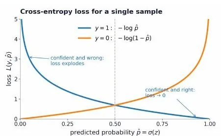
- 샘플 하나의 손실은 정답 클래스에 준 확률에 −log를 씌운 값이다. $y=1$이면 $-\log\hat p$, $y=0$이면 $-\log(1-\hat p)$이다.
- 확신하고 맞히면 손실이 거의 0이고, 확신하고 틀리면 손실이 폭발한다(confident and right, confident and wrong).
- 예: $\hat p=0.5$이면 0.693이다. 정답에 0.99를 주고 맞히면 0.01이고, 정답에 0.01만 주고 틀리면 4.605다.
- 목표는 L을 최소화하는 w와 b를 찾는 것이다. 닫힌 해가 없으므로 반복적 최적화로 푼다. 경사하강법(gradient descent)이 대표적이고, sklearn의 기본 solver는
lbfgs다. - 경사하강법은 손실의 그래디언트(gradient) $\nabla L$을 계산하고, 그 반대 방향으로 w와 b를 조금씩 옮기는 일을 반복한다. 그래디언트는 손실이 가장 빨리 커지는 방향이므로, 반대로 가면 손실이 줄어든다. 식으로는 $\mathbf w\leftarrow\mathbf w-\eta\,\nabla_{\mathbf w}L$이고, b도 같은 식으로 옮긴다. η(learning rate)는 한 번에 움직이는 보폭이다. 안개 낀 산에서 발밑의 경사만 보고 한 걸음씩 내려가는 것과 같다. 자료 외 보충
- lbfgs는 그래디언트와 함께 손실 곡면이 얼마나 휘었는지도 어림해서 방향과 보폭을 정하는, 경사하강의 개량형이다(quasi-Newton 방법). 자료 외 보충
- 실습 노트북에서 test 평균 손실은 0.0846이고, sklearn의
log_loss값과 같다.
왜 squared error 대신 cross-entropy? 자료 외 보충
CE는 Bernoulli 모델의 음의 로그우도(negative log-likelihood)다. 즉 정답들에 준 확률을 모두 곱한 값에 −log를 씌운 것이라, 확률 예측에 자연스러운 손실이다. 또 확신에 찬 오답을 매우 크게 벌한다. 로지스틱 회귀에서 CE는 w에 대해 볼록(convex)이라 최적화가 안정적이다.3.8 Cross-entropy 손실과 학습 (2/3) W4 p9 · 실습 W4 4.1–4.2, 5.2
- 정답에 90%를 줬다면 −ln 0.9 = 0.11이다. 50%면 0.69, 10%면 2.30, 1%면 4.61이다.
- 자신 없게 맞히면 벌점이 약간 붙고, 확신하고 틀리면 벌점이 폭발한다. 그래서 모델은 확실할 때만 확신하도록 길들여진다.
- 전체 손실은 모든 샘플의 벌점을 더한 값이다.
- 왜 CE인가: 출력이 확률이므로, 정답에 준 확률을 직접 평가하는 손실이 자연스럽다. 확신하고 맞히면 손실이 0에 가깝고, 확신하고 틀리면 폭발한다.
- 왜 CE인가: CE를 최소화하는 것은 모델이 실제 정답들에 준 확률을 모두 곱한 값(우도, likelihood)을 최대로 만드는 것과 같다. 그래서 CE를 음의 로그우도(negative log-likelihood)라고도 한다. 또 CE는 w, b에 대해 볼록(그릇 모양)이다. 그래서 지역 최솟값이 곧 전역 최솟값이고, 반복 최적화가 엉뚱한 골짜기에 갇히지 않는다. 자료 외 보충
- 왜 닫힌 해가 없나: CE를 w로 미분한 그래디언트(gradient)는 아래와 같다. 선형회귀 손실의 그래디언트 $-2\sum_i(y_i-\hat y_i)\,\mathbf x_i$와 모양이 같다. 자료 외 보충 $$\frac{\partial L}{\partial\mathbf w}=\sum_i(\hat p_i-y_i)\,\mathbf x_i$$
- 그러나 $\hat p_i=\sigma(\mathbf w\cdot\mathbf x_i+b)$는 w를 sigmoid 안에 품고 있다. 그래서 이 그래디언트를 0으로 놓은 식을 w에 대해 대수적으로 풀 수 없다. 자료 외 보충
- 선형회귀는 $\hat{\mathbf y}=\mathbf X\mathbf b$가 b에 선형이다. 그래서 '그래디언트 = 0' 조건이 연립 일차방정식, 즉 정규방정식이 된다.
- 따라서 로지스틱 회귀는 그래디언트의 반대 방향, 즉 손실이 줄어드는 쪽으로 w와 b를 조금씩 옮기는 반복 최적화로 푼다.
- 한계: CE는 확률의 품질을 보므로, 판정 정확도(accuracy)와 다르게 움직일 수 있다. 예를 들어 C sweep에서 accuracy는 평평한데 test CE는 올라갔다. (3.11)
3.8 Cross-entropy 손실과 학습 (3/3) W4 p9 · 실습 W4 4.1–4.2, 5.2
- $y=0$인 샘플의 벌점도 $-\log\hat p$이다.$\hat p$는 P(y=1)이므로, $y=0$인 샘플의 벌점은 $-\log(1-\hat p)$이다.
- CE 앞의 − 부호는 없어도 된다.확률의 log는 0 이하이므로, −를 붙여야 손실이 양수가 된다.
- 슬라이드의 L과 실습의 0.0846은 같은 양이다.슬라이드의 L은 합이고, 실습의 0.0846과 sklearn
log_loss는 평균(-np.mean)이다. 둘은 상수배 차이라서, penalty가 없으면 최소화하는 w는 같다. 추론 - 닫힌 해가 없다는 것은 해가 없거나 불안정하다는 뜻이다.CE가 볼록이라 반복 최적화로 최적점에 수렴한다. 단, 클래스가 완벽히 분리되면 정규화 없이는 w가 무한히 커진다. 자료 외 보충
- CE의 log는 밑이 10인 상용로그다.CE의 log는 자연로그다. 예: $\hat p=0.5$ → $\ln2=0.693$.
교차 엔트로피(cross-entropy) 손실은 정답 클래스에 준 확률에 $-\log$를 씌운 값이다. $$L=-\sum_i[y_i\log\hat p_i+(1-y_i)\log(1-\hat p_i)]$$ 확신하고 맞히면 손실이 거의 0이고, 확신하고 틀리면 손실이 폭발한다. 예를 들어 실제 1인 샘플에 $\hat p=0.01$을 주면 손실은 4.6이다. $\hat p$는 비선형인 sigmoid를 통해 $\mathbf w$에 의존하므로, 조건 $\sum_i(\hat p_i-y_i)\mathbf x_i=\mathbf 0$을 닫힌 해로 풀 수 없다. 그래서 $\mathbf w$와 $b$는 경사하강법(gradient descent)이나 sklearn의 lbfgs 같은 반복 최적화로 찾는다.
“Write the cross-entropy loss for logistic regression and explain its behavior for confident correct and confident wrong predictions. Why, unlike linear regression, is there no closed-form solution?”
키워드: cross-entropy loss(교차 엔트로피 손실) · confident and wrong(확신에 찬 오답) · closed-form solution(닫힌 해) · gradient descent(경사하강법) · iterative optimization(반복 최적화) · non-linear(비선형)
3.9 Standardization (z-score)과 train/test split (1/3) W4 p5–6 · notebook 1–2
$$z_{ij}=\frac{x_{ij}-\mu_j}{\sigma_j}$$- 예: mean area의 평균은 655, SD는 352다. area가 1007인 샘플은 (1007 − 655)/352 = +1.0이고, area가 303이면 −1.0이다.
- 면적, 길이, 비율처럼 단위가 다른 측정들이 모두 "보통에서 얼마나 벗어났나"라는 같은 눈금이 된다.
- 빼고 나누기만 하므로 샘플들의 순서와 분포 모양은 그대로다.
| feature | mean | SD |
|---|---|---|
| mean area | 655 | 352 |
| mean radius | 14.1 | 3.5 |
| mean fractal dimension | 0.063 | 0.007 |
- 왜 하나: feature들의 스케일이 위 표처럼 천차만별이기 때문이다. 그대로 두면 L2 penalty가 불공정해지고, 가중치끼리 비교할 수 없고, 거리 기반 방법에서는 area 하나가 결과를 지배한다. 자세한 이유는 다음 쪽(2/3)에 있다.
- scaler는 training set에만 fit한다. 그리고 같은 μ, σ로 train과 test를 모두 transform한다.
- test set은 본 적 없는 샘플처럼 행동해야 하기 때문이다. 즉 test 정보가 새어 들어가는 것을 막는다.
- 그래서 test 열에서는 평균 0, SD 1이 근사적으로만 성립한다. 첫 3열의 평균은 0.02–0.06, SD는 0.91–1.02였고, 이것이 맞는 결과다.
train_test_split(test_size=0.3, stratify=y)로 데이터를 398개와 171개로 나눈다.- stratify는 malignant와 benign의 비율을 양쪽에 똑같이 유지한다. benign 비율은 train 0.628, test 0.626이었다.
3.9 Standardization과 train/test split (2/3) W4 p5–6 · W5-1 p7 · 실습 W4 1.1–2.2
- 푸는 문제: 스케일이 수만 배 다른 feature들을 같은 눈금에 올린다. 그러면 세 가지가 좋아진다.
- 첫째, L2 penalty가 공정해진다. 스케일이 작은 feature는 같은 효과를 내려면 큰 가중치가 필요한데, 표준화하지 않으면 penalty가 그 가중치를 부당하게 깎는다.
- 둘째, 가중치의 크기를 서로 비교할 수 있다.
- 셋째, k-NN, k-means, PCA처럼 거리나 분산에 기반한 방법에서 큰 숫자를 가진 feature 하나가 결과를 지배하지 않는다. (W5-1 p7 "Standardization is necessary")
- 왜 (x − μ)/σ 순서인가: 먼저 평균을 빼면 0이 "보통"을 뜻하게 된다. 그다음 SD로 나누면 1이 "보통 정도의 벗어남"을 뜻한다. 둘 다 해야 모든 feature가 같은 기준점과 같은 눈금을 갖는다. 추론
- train/test split의 목적: 처음 보는 샘플에서 얼마나 맞히는지, 즉 일반화 성능을 측정한다.
- stratify의 목적: 두 쪽의 클래스 비율을 같게 만든다. 그래서 우연히 test에 악성이 너무 적거나 많아 평가가 흔들리는 것을 막는다. 추론
- 덜 중요한 경우: 정규화가 없는 일반 최소제곱 선형회귀는 표준화해도 예측값이 똑같다. 계수의 단위만 바뀐다. 자료 외 보충
- 대안: min-max 정규화는 값을 [0,1]이나 [0,255] 범위로 옮긴다. 이미지 처리에서 쓴다. (W7)
3.9 Standardization과 train/test split (3/3) W4 p5–6 · W5-1 p7 · 실습 W4 1.1–2.2
- 전체 데이터로 scaler를 fit한 뒤 train과 test로 나누면 된다.먼저 split하고, train으로만
scaler.fit을 해서 μ와 σ를 학습한 뒤, train과 test를 모두transform해야 한다. 전체 데이터로 fit하면 test 정보가 새어 들어가(leakage) 성능이 낙관적으로 나온다. - 표준화한 test 열의 평균이 정확히 0, SD가 정확히 1이 아니면 버그다.test 열의 평균이 0.021, SD가 0.907처럼 나오는 것은 정상이다. train에서 구한 μ와 σ를 썼기 때문이다. (실습 2.2)
- 표준화하면 분포가 정규분포(종 모양)가 된다.표준화는 평균과 SD만 0과 1로 바꾼다. 치우침, 이상치, 분포 모양은 그대로다. 자료 외 보충
- 표준화와 min-max 정규화는 같은 것이다.표준화는 평균 0, SD 1로 맞춘다. min-max 정규화는 최솟값과 최댓값을 정해진 범위의 양 끝에 맞춘다. 범위는 보통 [0,1]이고, 이미지에서는 [0,255]다. 둘 다 선형 변환이지만 기준이 다르다. (W7 p19)
- stratify 출력의 0.628은 "양성" 비율이므로, 평가에서 말하는 양성(陽性)의 비율이다.0.628은 benign(良性 종양)의 비율이다. 평가에서 말하는 양성(陽性, positive)과 한글이 같을 뿐 다른 말이다. (3.12)
- StandardScaler와 pandas
.std()는 SD를 똑같이 계산한다.StandardScaler는 N으로 나누고(ddof=0), 위 표의 SD는 pandas.std()라서 N−1로 나눈다. N = 569에서는 그 차이가 $\sqrt{569/568}\approx1.0009$배라 무시할 수 있다. 자료 외 보충
feature들의 스케일은 mean area 약 655, fractal dimension 약 0.06처럼 크게 다르다. L2 penalty는 모든 가중치를 똑같이 취급하므로, 표준화(standardization) 없이 쓰면 스케일이 작은 feature의 가중치를 이유 없이 줄이고 가중치끼리 비교할 수도 없다. μ와 σ는 training set에서만 학습하고, 같은 값으로 train과 test를 모두 변환한다. 그래야 test 정보가 새어 들어가지 않아 test set이 본 적 없는 데이터처럼 행동한다. 그래서 test 열은 평균 0, SD 1에 근사적으로만 맞는다.
“Why should features be standardized before fitting an L2-regularized logistic regression? Why are the standardized test-set columns only approximately mean 0 and SD 1?”
키워드: standardization(표준화) · z-score(z 점수) · scale(스케일) · L2 penalty(L2 벌점) · training set(훈련 세트) · data leakage(데이터 누출) · unseen data(처음 보는 데이터)
3.10 Overfitting: bias와 variance (1/3) W4 p10 · notebook 5
- bias는 모델이 너무 단순해서 진실을 표현하지 못해 생기는 오차다. 그 결과 모델이 패턴을 놓치는데, 이것을 과소적합(underfitting)이라고 한다.
- variance는 모델이 training data에 너무 민감해서 노이즈까지 잡아 생기는 오차다. 그 결과 데이터가 조금만 바뀌어도 크게 흔들리는데, 이것을 과적합(overfitting)이라고 한다.
- feature를 늘리거나, 차수를 올리거나, λ를 줄이면 모델 복잡도가 커진다.
- 복잡도가 커질수록 training loss는 계속 줄어든다. 반면 test(validation) loss는 U자 모양을 그린다.
- test loss는 아래처럼 세 부분으로 나뉜다. $$\text{test loss}=\text{bias}^2+\text{variance}+\text{noise}$$
- U자의 바닥이 best model이다.
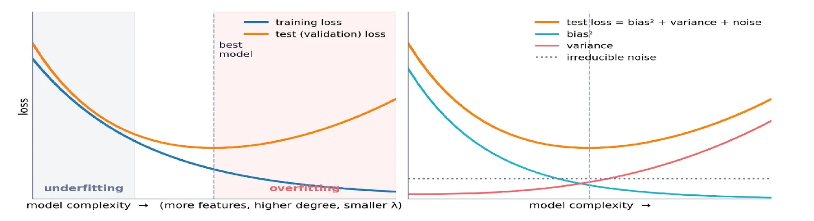
3.10 Overfitting: bias와 variance (2/3) W4 p10 · 실습 W4 5.2
- bias는 평균적으로 진짜에서 한쪽으로 빗나가는 정도다. 예를 들어 직선으로 BOLD의 "올랐다 내려오는" 모양을 맞추면, 표본을 바꿔도 매번 똑같이 그 모양을 놓친다. 추론
- variance는 표본이 바뀔 때마다 모델이 얼마나 출렁이는지다. 예를 들어 모든 점을 지나는 꼬불꼬불한 곡선은 표본 몇 개만 바뀌어도 모양이 크게 달라진다.
- 모델이 너무 단순하면 bias가 커지고, 너무 복잡하면 variance가 커진다. 그래서 그 사이가 최적이다.
- 측정 자체의 잡음(noise)은 어떤 모델로도 없앨 수 없다.
- 쓰는 이유: test 오차가 큰 원인을 진단해서 처방을 고르는 틀이다.
- 진단 1: training 오차와 test 오차가 둘 다 크면 high bias(underfit)다. 이때는 더 복잡한 모델을 쓰거나, feature를 추가하거나, 정규화를 약하게(C를 크게) 한다. 자료 외 보충
- 진단 2: training 오차는 작은데 test 오차가 커서 둘의 gap이 크면 high variance(overfit)다. 이때는 정규화를 강하게(C를 작게) 하거나, feature를 줄이거나, 데이터를 늘린다. 자료 외 보충
- 최적점 고르기: test(validation) loss가 최소인 복잡도가 best model이다. (W4 p10)
- 최적점 고르기: 실제로는 validation set이나 교차검증으로 고른다. 추론 (4.9)
- 수업 예: W4의 C sweep에서 test accuracy가 가장 높은 지점을 peak라고 하자. peak의 왼쪽은 high bias, 오른쪽은 high variance다. (실습 W4 5.2)
3.10 Overfitting: bias와 variance (3/3) W4 p10 · 실습 W4 5.2
- bias가 크면 overfitting이고, variance가 크면 underfitting이다.반대다. bias는 underfitting과 짝이고, variance는 overfitting과 짝이다.
- training loss도 U자 모양이라 그 바닥에서 best model을 고르면 된다.U자를 그리는 것은 test(validation) loss다. training loss는 복잡도와 함께 계속 내려가므로, training loss로는 best model을 고를 수 없다.
- variance는 데이터의 노이즈를 뜻한다.variance는 모델이 training 표본에 민감한 정도다. noise는 따로 있는, 줄일 수 없는(irreducible) 항이다. 그래서 test loss의 최솟값도 0이 아니다.
- 모델 복잡도를 높이려면 sklearn의 C를 줄인다.복잡도가 커지는 방향은 λ가 작아지는 방향이고, sklearn에서는 C가 커지는 방향이다.
- 데이터를 늘리면 bias도 줄어든다.데이터를 늘리면 주로 variance가 줄어든다. bias는 모델 자체를 바꿔야 줄어든다. 자료 외 보충
test loss는 $\text{bias}^2+\text{variance}+\text{noise}$로 나뉜다. 너무 단순한 모델은 bias가 커서 패턴을 놓치며, 이것이 과소적합(underfitting)이다. 너무 복잡한 모델은 variance가 커서 노이즈까지 맞추고 training data가 조금만 바뀌어도 크게 변하며, 이것이 과적합(overfitting)이다. 복잡도가 커질수록 training loss는 계속 줄어든다. 반면 test loss는 U자 모양이고, best model은 test 곡선의 바닥에 있다.
“Explain the bias–variance tradeoff. How do training loss and test loss change as model complexity increases, and where is the best model?”
키워드: bias(편향) · variance(분산) · underfitting(과소적합) · overfitting(과적합) · model complexity(모델 복잡도) · irreducible noise(줄일 수 없는 노이즈)
3.11 Regularization (L2) (1/3) W4 p11 · notebook 5
$$L=-\sum_i\Big(y_i\log\hat p_i+(1-y_i)\log(1-\hat p_i)\Big)+\lambda\|\mathbf w\|_2^2,\qquad \lambda=\frac1{2C}$$- 데이터를 조금 더 맞추는 이득보다 세금이 더 크면 가중치를 키우지 않는다. 그래서 몇몇 튀는 점만을 위해 극단적인 가중치를 쓰지 못한다.
- sklearn은 세율을 C로 거꾸로 적는다. C = 0.01이면 λ = 50으로 세금이 무겁고, C = 100이면 λ = 0.005로 세금이 거의 없다.
- 큰 가중치가 나쁜 이유는 두 가지다. 첫째, 큰 가중치는 개별 노이즈 점을 맞출 수 있다. 둘째, 모든 결정을 과신(overconfident)하게 만든다.
- 그래서 큰 가중치에 비용을 매긴다.
- sklearn에서 조절하는 값(knob)은
C다. C가 크면 정규화가 약하고, C가 작으면 정규화가 강하다. $\lambda=1/(2C)$로 반비례하기 때문이다. - C sweep 결과, training accuracy는 1.0까지 오른 뒤 그대로 유지된다.
- test accuracy는 최고점(peak)을 찍은 뒤 떨어진다. 이 training과 test의 차이(gap)가 overfitting이다.
- test cross-entropy는 C가 커지면 accuracy가 평평해도 계속 오른다. 같은 판단을 더 과신하게 되어, 확신에 찬 오답의 비용이 커지기 때문이다.
- C가 커질수록 $\|\mathbf w\|$는 끝없이 커진다.
- peak의 왼쪽은 underfit인 high bias 영역이고, 오른쪽은 overfit인 high variance 영역이다.
3.11 Regularization (L2) (2/3) W4 p5, p11 · 실습 W4 5.1–5.2
- w와 b를 함께 2배로 하면 z도 2배가 된다. 이때 z의 부호, 즉 판정은 그대로인데 확률만 0이나 1 쪽으로 밀린다.
- 예: z가 1이면 0.73, 2이면 0.88, 3이면 0.95다.
- 판정이 같으니 accuracy는 평평하다. 그러나 틀린 샘플의 확률도 극단으로 가서 그 샘플의 CE가 폭발하고, 그래서 test cross-entropy가 오른다. (실습 W4 5.2의 패턴)
- training set이 어떤 초평면으로 완벽히 나뉘면, 그 w를 키울수록 training CE가 계속 줄어든다. 그래서 정규화가 없으면 ‖w‖가 끝없이 커진다. 실습의 C sweep에서도 큰 C에서 train acc가 1.0에 도달했다.
- 반대로 틀린 training 샘플이 하나라도 남으면, w를 키울수록 그 샘플의 CE가 폭발한다. 그래서 이때는 ‖w‖가 끝없이 커지지는 않는다.
λ = 1/(2C)의 유래 자료 외 보충: sklearn의 목적함수는 아래 첫 식이다. 전체를 C로 나누면 둘째 식이 된다.
$$\tfrac12\|\mathbf w\|^2+C\sum_i\text{CE}_i,\qquad \sum_i\text{CE}_i+\tfrac1{2C}\|\mathbf w\|^2$$- 푸는 문제: overfitting(높은 variance)과 과신을 줄인다. 그래서 test 성능과 확률의 정직성을 높인다.
- 언제 특히 필요한가: 샘플 수에 비해 feature가 많을 때, training 데이터가 완벽히 분리될 수 있을 때, 확률값 자체가 중요할 때다. 실습은 샘플 398개에 feature 30개였고, 큰 C에서 train acc가 1.0이었다. 추론
- C 고르기: C는 validation set이나 교차검증으로 고르고, test set은 최종 평가에만 쓴다. k-NN의 k를 5-fold CV로 고른 것과 같은 방식이다. 자료 외 보충 (W5-2 p14–15)
- C 고르기: 실습의 C sweep은 test 곡선의 모양을 보여 주는 개념 시연이다.
- 전제: feature를 표준화해야 한다. penalty가 모든 가중치를 똑같이 취급하기 때문이다. (3.9)
- 대안: L1 penalty는 가중치 절댓값의 합에 벌점을 주며, 일부 가중치를 정확히 0으로 만든다. 자료 외 보충
- 대안: feature를 줄이거나 모델을 단순화할 수도 있다.
3.11 Regularization (L2) (3/3) W4 p5, p11 · 실습 W4 5.1–5.2
- C가 클수록 정규화가 강하다.C가 크면 정규화가 약하고, C가 작으면 강하다. λ와 반대 방향이다. 식 $\lambda=1/(2C)$와 슬라이드 코드 주석의 $C=1/(2\lambda)$는 같은 관계다.
- penalty는 절편 b에도 붙는다.penalty는 $\|\mathbf w\|_2^2$이므로 절편 b는 벌하지 않는다. (슬라이드 식)
- 정규화를 하면 training 성능도 좋아진다.정규화는 training 성능을 오히려 낮춘다. 실습에서 C = 0.001일 때 train acc는 0.899였다. 목표는 training이 아니라 test 성능이다.
- accuracy가 평평하면 모델도 변하지 않은 것이다.C가 커지면 accuracy가 평평해도 ‖w‖와 CE는 계속 변한다.
- 실습 표의 ‖w‖는 penalty 값 $\|\mathbf w\|_2^2$과 같다.penalty $\|\mathbf w\|_2^2=\sum_jw_j^2$은 제곱합이다. 실습 표의 ‖w‖는 여기에 제곱근을 씌운 길이다.
- L2 정규화와 min-max 정규화는 같은 '정규화'다.한글 이름만 같다. L2 정규화는 regularization으로, 손실에 $\lambda\|\mathbf w\|_2^2$를 더해 가중치를 작게 누른다. min-max 정규화는 normalization으로, 값의 범위를 [0,1]이나 [0,255]로 옮기는 전처리다(W7). 답안에는 영어를 함께 적는다.
L2 정규화(regularization)는 cross-entropy에 $\lambda\|\mathbf w\|_2^2$를 더해 큰 가중치에 비용을 매긴다. 큰 가중치는 개별 노이즈 점까지 맞추고, 모든 판정을 과신(overconfident)하게 만들기 때문이다. sklearn의 C는 정규화 강도의 역수라서 $\lambda=1/(2C)$이고, C가 커질수록 정규화는 약해진다. 그러면 ‖w‖가 커지고 training accuracy는 1.0에 이른다. 하지만 test accuracy는 최고점을 찍은 뒤 떨어지고, 큰 C 쪽에서 test cross-entropy는 계속 오른다. 이쪽이 high variance이고, 반대로 C가 아주 작으면 과소적합인 high bias가 된다.
“What does the L2 penalty do in logistic regression? In scikit-learn, describe how training accuracy, test accuracy and test cross-entropy change as C increases.”
키워드: regularization(정규화) · L2 penalty(L2 벌점) · inverse regularization strength(정규화 강도의 역수) · overconfident(과신하는) · high variance(높은 분산) · high bias(높은 편향)
3.12 평가 지표: confusion matrix, precision, recall (1/6) 계산 필수W4 p12–16 · notebook 6
먼저 무엇을 positive로 볼지 정한다. 데이터 label에서 0은 malignant다. screening의 대상이 악성이므로, 실습 노트북은 malignant를 positive로 둔다(pos_label=0).
| Predicted malignant (positive) | Predicted benign (negative) | |
|---|---|---|
| Truth malignant | TP = 61 (correctly predicted) | FN = 3 (missed) |
| Truth benign | FP = 4 (false alarm) | TN = 103 (correctly missed) |
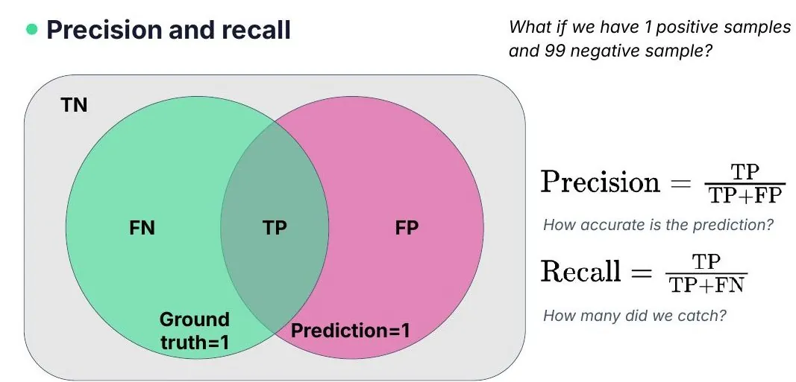
- precision은 모델이 positive라고 한 것 중 진짜 positive의 비율이다. 슬라이드는 이것을 "How accurate is the prediction?"이라고 묻는다.
- recall은 진짜 positive 중 모델이 잡아낸 비율이다. 슬라이드는 이것을 "How many did we catch?"라고 묻는다.
- threshold는 사람이 고르는 선택이다. P(malignant)의 기준을 낮추면 recall은 같거나 오른다. 대신 false alarm이 늘어 precision은 보통 내려간다.
3.12 평가 지표 (2/6) W4 p12–15 · 실습 W4 6.1–6.2
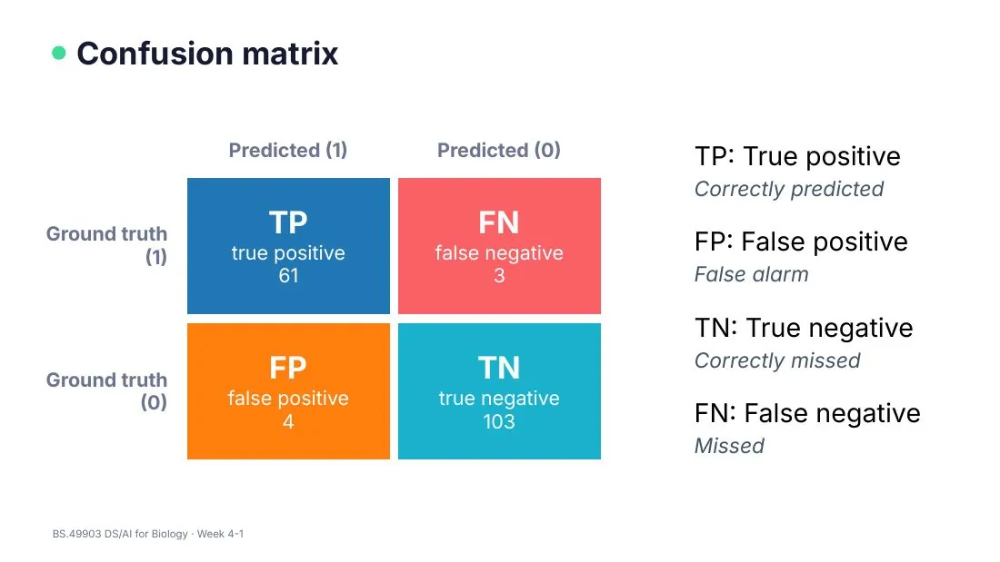
pos_label=0을 쓴다.- TP 61: 암을 "암"이라고 해서 맞혔다.
- FN 3: 암인데 "아니다"라고 해서 놓쳤다.
- FP 4: 암이 아닌데 "암이다"라고 해서 헛경보를 냈다.
- TN 103: 암이 아닌 것을 아니라고 해서 맞혔다.
- precision은 모델이 "암"이라고 말한 65건 중 진짜 암 61건의 비율로, 0.938이다. "이 모델이 암이라고 하면 믿어도 되나?"에 답한다.
- recall은 진짜 암 64건 중 잡아낸 61건의 비율로, 0.953이다. "진짜 암을 얼마나 놓치지 않았나?"에 답한다.
3.12 평가 지표 (3/6) W4 p12–15 · 실습 W4 6.1–6.2
- 왜 여러 지표가 필요한가: 오류에는 헛경보인 FP와 놓침인 FN이 있고, 두 오류의 비용은 서로 다르다. accuracy 하나는 둘을 섞어 버린다.
- accuracy: 클래스 비율이 비슷하고 두 오류의 비용도 비슷할 때만 믿을 만하다. 추론
- accuracy: 1 대 99처럼 불균형한 데이터에서는 "항상 negative"라고만 해도 99%가 나온다. (W4 p15)
- recall 중시: 놓치면 치명적일 때다. 암 screening이 그 예이고, 실습에서는 threshold를 낮췄다. (실습 6.3)
- precision 중시: 헛경보의 비용이 클 때다. 예를 들어 positive 판정이 곧 침습적인 추가 검사로 이어지는 경우다. 추론
- F1: precision과 recall을 한 숫자로 요약한다. 조화평균이라 둘 중 낮은 쪽에 끌려간다. 예를 들어 P = 1, R = 0.1이면 산술평균은 0.55이지만 F1은 약 0.18이다. 추론
- PR curve와 AP: threshold 하나에 묶이지 않는 요약이다. (3.12 (5/6))
- 의학 용어: recall은 민감도(sensitivity)다. precision은 양성 예측도(PPV)다. $TN/(TN+FP)$는 특이도(specificity)이며, 여기서는 103/107 ≈ 0.963이다. 자료 외 보충
3.12 평가 지표 (4/6) W4 p12–16 · 실습 W4 6.1–6.2
- sklearn은 알아서 악성을 positive로 계산한다.sklearn의 기본 positive는 label 1 = benign이다. 악성을 기준으로 평가하려면
pos_label=0을 줘야 한다. (실습 6.1) - positive를 어느 쪽으로 정하든 precision과 recall 값은 같다.positive를 바꾸면 값도 바뀐다. benign을 positive로 하면 precision = 103/106 ≈ 0.972, recall = 103/107 ≈ 0.963이다. accuracy 0.959는 그대로다. 추론
- 양성(良性)과 양성(陽性)은 같은 뜻이다.良性(benign)은 순한 종양으로, 이 데이터의 1이다. 陽性(positive)은 검사에서 "있다"고 나온 쪽이다. 실습에서는 악성(malignant)이 陽性 쪽이다.
- 슬라이드 혼동행렬의 "Ground truth (1)"이 악성이니, 데이터에서도 악성은 1이다.슬라이드의 "Ground truth (1)"은 악성을 1로 그린 개념도일 뿐이다. 데이터의 숫자 코딩은 0 = malignant다. (W4 p12–13)
- precision의 분모는 실제 positive의 수다.precision = TP/(TP+FP)이므로 분모는 예측 positive의 수(혼동행렬의 열)다. recall = TP/(TP+FN)이므로 분모는 실제 positive의 수(행)다. 둘을 바꿔 쓰는 실수가 가장 흔하다.
- false negative는 negative 샘플을 틀린 것이다.FN은 실제 positive(여기서는 malignant)인데 모델이 negative라고 해서 놓친 것이다. FP는 실제 negative(benign)인데 모델이 positive라고 한 헛경보다. 이름의 positive/negative는 실제 클래스가 아니라 모델의 판정이다.
- F1은 $(P+R)/2$이다.F1은 조화평균 $\frac{2PR}{P+R}$이다.
- 혼동행렬은 어느 자료에서나 배치가 같다.sklearn
confusion_matrix는 행이 실제, 열이 예측이고labels순서를 따른다. 실습은labels=[0, 1]이라 첫 행과 첫 열이 malignant다. 자료마다 배치가 다르니 축 이름부터 확인한다. 추론
3.12 평가 지표: confusion matrix, precision, recall (5/6) 계산 필수W4 p12–16 · notebook 6
| threshold | recall | precision | false alarms |
|---|---|---|---|
| 0.90 | 0.844 | 1.000 | 0 |
| 0.50 | 0.953 | 0.938 | 4 |
| 0.20 | 0.969 | 0.899 | 7 |
| 0.05 | 1.000 | 0.780 | 18 |
- PR curve는 threshold를 1에서 0까지 내리면서 (recall, precision)을 기록한 곡선이다.
- 곡선 아래 면적을 Average precision(AP)이라고 한다. 슬라이드의 AP는 0.99다.
- 슬라이드 그림의 주황 점은 threshold 0.5(recall 0.953, precision 0.938)이고, 빨간 점은 threshold 0.1이다. 0.1에서는 recall이 1.0이 되고, precision은 그림에서 약 0.85로 읽힌다. 추론
- baseline은 0.5가 아니라 prevalence, 즉 positive의 비율이다. 여기서는 64/171 ≈ 0.37이다.
- 무작위로 찍는 분류기(random guess)는 positive를 몇 개 부르든 precision이 평균적으로 prevalence이기 때문이다. threshold 0에서 모든 샘플을 positive라고 불러도 precision은 prevalence와 같다.
- 곡선의 왼쪽 위는 높은 threshold로, 적게 부르고 다 맞히는 쪽이다. 오른쪽 아래는 threshold 0이다.
- screening에서는 필요한 recall을 먼저 정하고, 그때 감수할 precision을 읽는다.
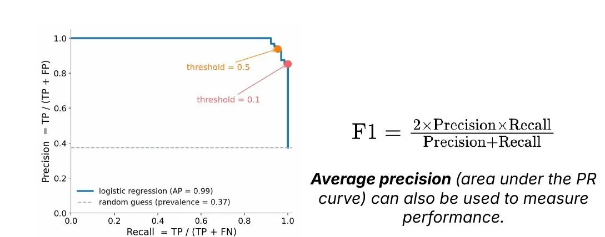
What if we have 1 positive sample and 99 negative samples? (슬라이드 질문)
"항상 negative"라고만 하는 쓸모없는 모델도 accuracy가 99/100 = 99%다.
하지만 positive를 하나도 못 잡으므로 recall = 0/1 = 0이다. positive라고 판정한 샘플이 없어 TP + FP = 0이므로, precision은 0/0이 되어 정의할 수 없다. 0으로 처리하기도 한다.
클래스가 불균형하면 accuracy가 성능을 속인다. 그래서 positive 클래스를 중심으로 한 precision과 recall, 또는 F1이나 PR curve와 AP를 봐야 한다.
AP의 기준선도 0.5가 아니라 prevalence인 1%다.
For a cancer screening test, would you lower or raise the threshold? What do you trade off?
암을 놓치는 것(FN)이 치명적이므로 threshold를 낮춰 recall을 높인다.
그 대가로 false alarm(FP)이 늘어 precision이 떨어진다.
실습 노트북에서 threshold를 0.5에서 0.05로 낮추면 recall은 0.953에서 1.0으로 오른다. 반면 precision은 0.938에서 0.78로 내려가고, false alarm은 4건에서 18건으로 늘어난다.
그래서 필요한 recall을 먼저 정하고, 그때의 precision을 감수하는 방식으로 고른다.
3.12 평가 지표 (6/6) W4 p13–16 · 실습 W4 6.3–6.4
- threshold를 낮추면 precision은 반드시 내려간다.threshold를 낮추면 recall이 같거나 오르는 것은 보장된다. 하지만 precision은 보통 내려갈 뿐 보장되지는 않는다. 새로 positive로 판정된 샘플이 마침 진짜 positive라면 오를 수도 있다. 자료 외 보충
- threshold를 바꾸면 모델을 다시 학습하는 것이다.threshold를 바꿔도 w, b, 확률은 그대로이고 판정 기준만 움직인다. 그래서 혼동행렬만 바뀐다. 반면 C를 바꾸는 것은 재학습으로, 다른 개념이다.
- PR 곡선의 기준선은 0.5다.기준선은 prevalence다. 여기서는 0.37이고, 1 대 99 데이터라면 0.01이다.
- 실습의 threshold 0.05는 P(benign)에 건 기준이다.실습의 threshold는 P(malignant)에 건 것이다. "P(malignant) ≥ 0.05이면 악성"은 "P(benign)이 0.95를 넘을 때만 benign"과 같은 뜻이다. 추론
- 1 대 99 데이터에서 "항상 negative" 모델의 precision은 당연히 0이다.TP + FP = 0이므로 precision은 0/0이 되어 정의할 수 없다. sklearn은 이를 0으로 처리하고 경고를 낸다. 자료 외 보충
정확도(accuracy) $(TP+TN)/N$은 클래스 불균형에서 성능을 속일 수 있다. positive가 1개, negative가 99개인 데이터에서 항상 negative라고만 해도 정확도는 99%지만, positive는 하나도 잡지 못한다. 정밀도(precision) $TP/(TP+FP)$는 positive 판정을 얼마나 믿을 수 있는지를 묻는다. 재현율(recall) $TP/(TP+FN)$은 진짜 positive를 얼마나 잡았는지를 묻고, 앞의 예에서는 0이다. 암 screening에서는 $P(\text{malignant})$의 임계값(threshold)을 낮춰, 재현율을 0.953에서 1.0으로 올리는 대신 정밀도가 0.938에서 0.78로 내려가는 것을 감수한다. 암을 놓치는 FN이 헛경보인 FP보다 비용이 크기 때문이다.
“Why can accuracy be a misleading metric for imbalanced data, and how would you choose the decision threshold for cancer screening?”
키워드: class imbalance(클래스 불균형) · precision(정밀도) · recall(재현율) · threshold(임계값) · false negative(위음성) · false positive(위양성)
3.13 정리: 선형 회귀 vs 로지스틱 회귀 W3-2 p15–25 · W4 p3–16
| 선형 회귀 (W3-2) | 로지스틱 회귀 (W4) | |
|---|---|---|
| 예측하는 것 | 연속값 $\hat y$ (체중, BOLD) | 확률 $P(y=1\mid\mathbf x)$, threshold를 걸면 범주 |
| 모델 | $\hat{\mathbf y}=\mathbf X\mathbf b$ | $\hat p=\sigma(\mathbf w\cdot\mathbf x+b)$ |
| "linear"의 의미 | β에 선형 ($x^2, x^3$ 열 가능) | 점수 z가 w에 선형, 결정 경계는 초평면 |
| 손실 | 제곱오차 합 $\|\mathbf y-\mathbf X\mathbf b\|^2$ | cross-entropy (+ $\lambda\|\mathbf w\|_2^2$) |
| 해 구하기 | 닫힌 해 $(\mathbf X^T\mathbf X)^{-1}\mathbf X^T\mathbf y$ | 닫힌 해 없음, 반복 최적화 (lbfgs) |
| 평가 | 잔차 그림, $R^2$ (+ p-value) | 혼동행렬, accuracy, precision/recall, F1, PR/AP, CE |
| 핵심 함정 | Simpson, training R² 비감소, p-value 해석 | positive 정의, 클래스 불균형, C 방향, 표준화와 leakage |
로지스틱 회귀 실습의 전체 흐름은 다음과 같다. (실습 W4)
- split:
train_test_split(test_size=0.3, stratify=y)로 데이터를 398개와 171개로 나눈다. - 표준화: scaler를 train으로만 fit하고, train과 test를 모두 transform한다.
- 학습:
LogisticRegression(C)로 cross-entropy와 L2 penalty의 합을 반복적으로 최소화한다. - 확률:
predict_proba의 열 순서는 [P(malignant), P(benign)]이다. 둘째 열인 P(benign)이 σ(z)다. - 판정: threshold를 고른다. 기본값 0.5는 z ≥ 0과 같고, screening이라면 P(malignant)의 기준을 낮춘다.
- 평가: test set에서 positive를 밝힌 혼동행렬을 만든다. 그리고 accuracy, precision, recall, F1, PR curve와 AP를 계산한다.
선형회귀에는 최소제곱의 닫힌 해(closed-form solution)가 있다. 예측 $\mathbf X\mathbf b$가 파라미터에 선형이라서, '그래디언트 = 0' 조건이 연립 일차방정식인 정규방정식(normal equation)이 되기 때문이다. 로지스틱 회귀는 선형 점수를 sigmoid로 감싸고, 교차 엔트로피(cross-entropy)를 최소화해 학습한다. 이때 '그래디언트 = 0' 조건이 $\mathbf w$에 대해 비선형이므로 반복 최적화(iterative optimization)로 풀어야 한다.
“Compare linear regression and logistic regression. Why does linear regression have a closed-form solution, while logistic regression must be solved iteratively?”
키워드: closed-form solution(닫힌 해) · normal equation(정규방정식) · linear in the parameters(파라미터에 선형) · sigmoid(시그모이드) · cross-entropy(교차 엔트로피) · iterative optimization(반복 최적화)
3.✎ 영어 용어 정리 시험 문제는 영어로 나온다
문제에서 이 단어가 보이면 무엇을 묻는지 바로 떠올릴 수 있어야 한다. 답은 한국어로 써도 되지만, 용어는 영어 그대로 써도 좋다.
| English | 한국어 | 한 줄 뜻 |
|---|---|---|
| regression | 회귀 | 한 변수가 다른 변수와 어떻게 관련되는지, 즉 데이터의 추세를 기술한다. 새 데이터의 값을 예측하는 데 쓴다. |
| feature / predictor | 특성 / 예측 변수 | 예측에 쓰는 입력 측정값 x다. 디자인 행렬의 한 열이 된다. 슬라이드의 "Regression is a predictor"는 회귀 자체가 새 값을 예측하는 도구라는 뜻이다. |
| design matrix | 디자인 행렬 | 샘플을 행, feature를 열로 쌓은 행렬 $\mathbf X$다. 첫 열은 절편용 1이다. |
| intercept | 절편 | 항상 1인 feature의 계수 $\beta_0$다. |
| least squares | 최소제곱 | 잔차 제곱합 $\sum_i(y_i-\hat y_i)^2$을 최소로 만드는 계수를 찾는 방법이다. |
| residual | 잔차 | 관측값에서 예측값을 뺀 $y-\hat y$다. 좋은 모델이면 구조 없는 노이즈다. |
| normal equation | 정규방정식 | $\mathbf X^T\mathbf X\mathbf b=\mathbf X^T\mathbf y$이고, 해는 $\hat{\mathbf b}=(\mathbf X^T\mathbf X)^{-1}\mathbf X^T\mathbf y$다. |
| closed-form solution | 닫힌 해 | 반복 없이 공식 한 번으로 구하는 해다. 선형회귀에는 있고 로지스틱 회귀에는 없다. |
| coefficient of determination ($R^2$) | 결정계수 | $1-SS_{res}/SS_{tot}$로, 모델이 설명하는 분산의 비율이다. 0이면 평균만 예측하는 것과 같다. |
| p-value | 유의확률 | 기울기가 진짜 0이라고 가정할 때 지금만큼 또는 그보다 강한 관계가 나올 확률이다. "우연일 확률"이 아니며, $R^2$와 N에 모두 의존한다. |
| linear in the parameters | 파라미터에 선형 | 예측이 β들의 가중합이라는 뜻이다. x에 대해 곡선이어도 선형회귀다. |
| polynomial features | 다항 feature | $x^2, x^3$처럼 데이터에서 계산해 추가한 열이다. 정규방정식으로 그대로 푼다. |
| confounder / Simpson's paradox | 교란변수 / 심슨의 역설 | 교란변수는 x와 y 둘 다와 관련된 변수다. 이 변수로 나뉜 그룹을 합치면 기울기가 그룹 내 기울기와 반대가 될 수 있고, 이것이 심슨의 역설이다. |
| logistic regression | 로지스틱 회귀 | 선형 점수를 sigmoid에 넣어 $P(y=1\mid\mathbf x)$를 내는 회귀다. 분류에 쓴다. |
| logit (log-odds) | 로짓 (로그 오즈) | 선형 점수 $z=\mathbf w\cdot\mathbf x+b$다. $z=\log\frac{p}{1-p}$이다. |
| sigmoid | 시그모이드 | $\sigma(z)=1/(1+e^{-z})$로, 모든 실수를 0과 1 사이의 확률로 바꾼다. |
| decision boundary | 결정 경계 | $\mathbf w\cdot\mathbf x+b=0$인 초평면이다. 이 위에서 확률이 0.5다. |
| threshold | 임계값 | 확률을 판정으로 바꾸는 기준으로, 사람이 고른다. 기본값 0.5는 $z\ge0$과 같다. |
| cross-entropy loss | 교차 엔트로피 손실 | 정답 클래스에 준 확률에 $-\log$를 씌운 손실이다. 확신에 찬 오답에서 폭발한다. |
| gradient descent | 경사하강법 | 그래디언트의 반대 방향으로 조금씩 내려가며 손실을 줄이는 반복 최적화다. 실습 노트북은 sklearn 기본 solver인 lbfgs를 이런 반복 최적화로 소개한다. |
| standardization (z-score) | 표준화 | $(x-\mu)/\sigma$로 평균 0, SD 1로 맞춘다. μ와 σ는 training set에서만 구한다. |
| training set / test set | 훈련 세트 / 테스트 세트 | 모델을 학습하는 데이터와, 처음 보는 데이터로 일반화 성능을 재는 데이터다. 실습은 398개와 171개다. |
| bias (underfitting) | 편향 (과소적합) | 모델이 너무 단순해 진실을 표현하지 못해 생기는 오차다. 패턴을 놓치는 과소적합과 짝이다. |
| variance (overfitting) | 분산 (과적합) | 모델이 training 표본에 너무 민감해 생기는 오차다. 노이즈까지 맞추는 과적합과 짝이다. |
| regularization (L2 penalty) | 정규화 (L2 벌점) | 손실에 $\lambda\|\mathbf w\|_2^2$를 더해 큰 가중치에 비용을 매긴다. sklearn에서는 $\lambda=1/(2C)$라서 C가 크면 정규화가 약하다. |
| confusion matrix | 혼동행렬 | 실제 클래스와 예측 클래스를 교차한 표다. sklearn은 행이 실제, 열이 예측이다. |
| positive class | 양성(陽性) 클래스 | 평가의 기준이 되는 클래스로, 사람이 정한다. sklearn의 기본 positive는 label 1(benign)이고, 실습은 pos_label=0으로 malignant를 positive로 둔다. |
| TP / FP / TN / FN | 참양성 / 위양성 / 참음성 / 위음성 | 뒷말은 모델의 판정, 앞말은 그 판정이 맞았는지다. 실습은 TP 61, FN 3, FP 4, TN 103이다. |
| accuracy | 정확도 | $(TP+TN)/N$이다. 실습에서는 0.959다. |
| precision | 정밀도 | $TP/(TP+FP)$로, positive 판정 중 진짜 positive의 비율이다. 실습에서는 0.938이다. |
| recall | 재현율 | $TP/(TP+FN)$로, 진짜 positive 중 잡아낸 비율이다. 실습에서는 0.953이다. |
| F1 score | F1 점수 | precision과 recall의 조화평균 $2PR/(P+R)$이다. 실습에서는 0.946이다. |
| precision-recall curve / average precision (AP) | PR 곡선 / 평균 정밀도 | threshold를 1에서 0까지 내리며 (recall, precision)을 그린 곡선과 그 아래 면적이다. 슬라이드의 AP는 0.99다. |
| prevalence | 유병률 (positive 비율) | 전체 중 positive의 비율로, PR 곡선의 baseline이다. 여기서는 악성이 64/171 ≈ 0.37이다. |
| class imbalance | 클래스 불균형 | 한 클래스가 훨씬 많은 상태다. 1 대 99면 항상 negative라고 해도 accuracy는 99%지만 recall은 0이다. |
4.1 왜 차원축소? (1/2) W5-1 p3–4 · 실습 W5 Part 1
생물학 데이터는 열이 매우 많은 넓은(wide) 데이터다. 세포 하나에 유전자 20,000개, 샘플 하나에 peak 수천 개, 뉴런 하나에 형태 feature 수백 개가 붙는다.
그래서 "이 정보가 다 필요한가?", "고차원 정보를 어떻게 시각화하나?"라는 질문이 생긴다. 차원축소는 중요한 것은 유지하고 중복(redundancy)은 버리는 저차원 지도를 찾는 일이다.
예를 들어 유방암(breast cancer) 데이터는 feature가 30개이고, 이 feature들은 서로 강하게 상관되어 있다.
- 이 챕터의 데이터는 Breast Cancer Wisconsin이다. 생검(biopsy) 569개마다 세포핵의 radius, texture, concavity 등 30개 feature를 측정했다.
- label은 malignant 212개, benign 357개다. 코딩은 0 = malignant, 1 = benign이다.
- n은 샘플 수(행)로 569이다. p는 feature 수(열)로 30이며, 이 p를 차원이라고 부른다.
- 차원축소는 p를 줄이는 것이다. 샘플 수는 그대로 둔다.
세포 하나를 숫자 30개로 기록했다고 하자. 그런데 반지름, 둘레, 면적은 사실상 "핵이 얼마나 큰가"를 세 번 잰 것이다. 반지름이 크면 둘레와 면적도 같이 커지기 때문이다. 데이터에서는 이 셋을 radius, perimeter, area라고 부른다.
이렇게 같이 움직이는 숫자들을 하나로 묶으면, 30개 대신 몇 개의 숫자로 대부분을 말할 수 있다.
또 사람 눈은 축 2~3개까지만 그림으로 볼 수 있다. 그래서 그림을 그리려면 숫자 개수를 줄여야 한다.
4.1 왜 차원축소: 쓰는 이유와 함정 (2/2) W5-1 p3–4 · 실습 W5 Part 1
- 해결하는 문제: 첫째, 30차원 데이터는 그림으로 그릴 수 없다. 둘째, 서로 상관된 feature들이 같은 정보를 반복한다(중복).
- 셋째, 샘플 간 차이(분산)를 가장 많이 담는 요약 축 몇 개로 데이터를 보고 싶다. 이 축은 그룹을 가르는 축과 다를 수 있다. (4.2 (2/5))
- 이 수업의 두 도구: PCA는 선형 회전이다. 각 축이 feature들의 가중합이라, 축의 뜻을 그 가중치(loadings)로 읽을 수 있다. 남긴 정보량도 explained variance라는 숫자로 확인할 수 있다.
- UMAP은 비선형 방법이며, 이웃 관계를 지키는 시각화용이다. 축에는 의미가 없고, 클러스터 크기와 클러스터 사이 거리도 믿을 수 없다. 믿을 수 있는 것은 누가 누구 옆에 있는가(국소 이웃)뿐이다.
- 대가: 차원을 줄이면 정보를 버리게 된다. PCA는 얼마나 남겼는지 알려 준다. 예를 들어 유방암에서 PC 2개는 분산의 63.2%를 담는다.
- UMAP에는 그런 숫자가 없다.
- 두 방법 모두 label을 쓰지 않는다(unsupervised). 그림에서 malignant와 benign을 구분한 색은 결과를 확인하려고 나중에 칠한 것이다.
- 차원은 샘플 수를 말한다.차원은 feature 수 p이며, 여기서는 30이다. 차원축소를 해도 샘플 569개는 하나도 버리지 않는다.
- 차원축소는 중요한 feature 몇 개를 골라내는 것이다.PCA는 30개 feature를 모두 섞은 가중합으로 새 축(PC)을 만든다. feature를 골라내는 것은 feature selection이라는 다른 방법이다.
- 차원축소는 정답(label)을 이용해 그룹을 나눈다.PCA와 UMAP은 모두 feature 행렬 X만 본다.
4.2 PCA: 같은 데이터, 새로운 축 (1/5) W5-1 p5–7 · 실습 W5 3.1
- 원래 축 $x_1$, $x_2$ 각각으로 보면 점들이 적당히만 퍼져 있다. 그러나 PC1 방향으로 보면 점들이 가장 많이 퍼져 있다.
- PCA는 좌표계를 회전시킨다. 첫 번째 축이 가능한 한 많은 분산을 담고, 두 번째 축이 남은 분산 중 가장 많은 양을 담게 한다.
- 이렇게 만든 축들은 서로 직교한다.
- PCA는 선형(linear) 방법이며 빠르다. 또 결정적(deterministic) 방법이라 결과가 매번 같다.
- 표준화(standardization)가 필수다. PCA는 분산을 최대화하므로, 표준화하지 않으면 분산이 큰 feature가 PC1을 독차지한다.
- 예를 들어 mean area는 SD가 352나 된다. (4.2 (3/5), (5/5))
- PCA는 label을 보지 않는다(unsupervised). 그런데도 PC1–PC2 평면에서 malignant와 benign이 서로 다른 곳에 놓인다.
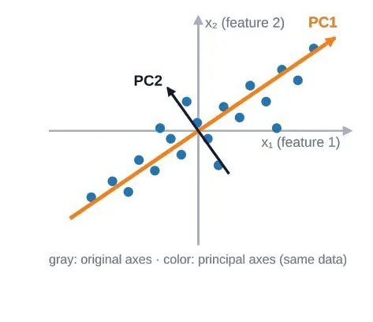
점들이 비스듬한 럭비공(타원) 모양으로 퍼져 있다고 하자. 원래 가로축과 세로축으로 보면 둘 다 "적당히" 퍼져 있다. 하지만 럭비공의 긴 방향으로 자를 대면 점들이 가장 넓게 퍼져 보인다.
PCA는 이 방향을 첫 번째 새 자(PC1)로 삼는다. 그리고 그와 직각인 방향 중 가장 넓게 퍼진 쪽을 두 번째 자(PC2)로 삼는다.
점은 하나도 움직이지 않는다. 자(좌표축)만 돌린 것이다.
여기서 분산(variance)은 점들이 평균에서 얼마나 넓게 흩어져 있는지를 나타내는 숫자다. 유방암 예에서는 크기와 불규칙성에 관련된 측정값들이 함께 커진다. 그래서 PC1 하나가 "핵이 얼마나 크고 불규칙한가"를 요약한다.
4.2 PCA: 언제 쓰고 무엇을 조심하나 (2/5) W5-1 p5–7, p21 · 실습 W5 3.1–3.2
- 해결하는 문제: 서로 상관된 feature 수십 개를, 서로 겹치지 않는(직교) 요약 축 몇 개로 바꾼다.
- 언제 쓰나: 빠르고 매번 같은 답(deterministic)이 필요할 때 쓴다. 다른 분석 전에 feature 수를 줄이고 싶을 때도 쓴다.
- 축을 해석하고 싶을 때도 좋다. PC1을 이루는 feature별 가중치(loadings)를 보면 PC1에는 concave points, concavity, compactness, perimeter가 크게 기여한다.
- 남긴 정보량을 숫자로 보고 싶을 때도 쓴다. 예를 들어 분산의 95%를 남기려면 PC 10개가 필요하다.
- 잘 안 맞을 때 추론: 다음 세 경우다.
- 구조가 휘어져 있을 때다. 직선 축으로 사영하면 휘어진 모양이 겹쳐 눌리므로, UMAP 같은 비선형 방법이 낫다.
- 그룹을 가르는 방향의 분산이 작을 때다. PCA는 label 없이 "많이 퍼진" 방향만 찾기 때문이다.
- feature마다 단위가 제각각인데 표준화를 하지 않았을 때다.
- 대안: UMAP을 쓸 수 있다. UMAP은 비선형 방법이고 시각화용이며, 축에 의미가 없다. (4.6)
- label이 있고 목적이 예측이면 supervised 방법을 쓴다. logistic regression이나 k-NN이 그 예다. (W4, 4.9)
- PC1은 원래 feature 중 분산이 가장 큰 하나다.PC1은 30개 feature 전부의 가중합이며, 길이가 1인 방향이다. 상위 loading은 mean concave points +0.261, mean concavity +0.258 등이다.
- PCA는 두 그룹이 가장 잘 갈리는 축을 찾는다.PCA는 label을 보지 않고 분산이 가장 큰 축을 찾는다. 유방암에서 그룹이 갈린 것은 결과적으로 그렇게 되었을 뿐이다.
- PC2는 PC1 다음으로 분산이 큰 아무 방향이다.PC2는 PC1과 직교한다는 조건 아래에서 남은 분산이 최대인 방향이다.
- PCA는 점들을 움직여 새로 배치하고, 실행할 때마다 결과가 다르다.PCA는 좌표계를 회전하고 뒤쪽 축을 버릴 뿐이다. 선형이고 결정적(deterministic)이어서 결과가 매번 같다.
4.2 PCA: 왜 표준화가 필수인가 (3/5) 설명 필수W5-1 p7 · 실습 W5 2.1–2.2
| feature | mean | SD |
|---|---|---|
| mean area | 655 | 352 |
| mean radius | 14.1 | 3.5 |
| mean fractal dimension | 0.063 | 0.007 |
feature(열) j마다 평균을 빼고 SD로 나눈다. 그러면 모든 feature가 평균 0, SD 1이 된다.
실습에서 X_scaled.mean(axis=0)을 계산하면 0, .std(axis=0)을 계산하면 1이 나온다.
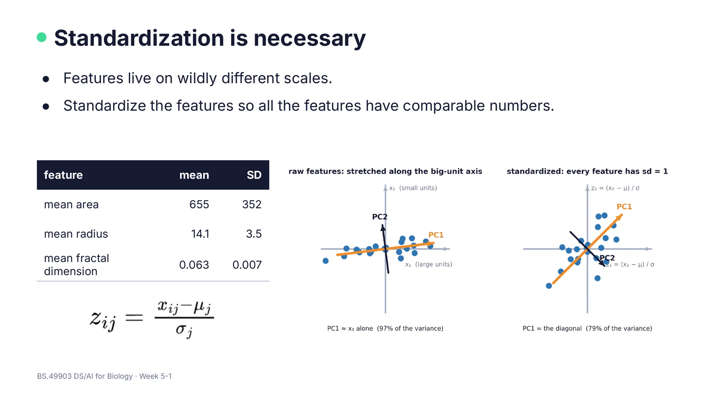
사람들을 키와 몸무게로 비교한다고 하자. 키를 cm 대신 mm로 적으면 키 숫자가 10배가 되어, 흩어짐도 훨씬 커 보인다.
PCA는 많이 흩어진 쪽을 중요하다고 믿는다. 그래서 단위만 바꿨는데 결론이 바뀐다.
표준화는 모든 측정값을 "자기 평균에서 SD 몇 개만큼 떨어져 있나"라는 같은 눈금으로 바꾼다. 그래서 이 문제가 사라진다.
예를 들어 area의 평균이 655, SD가 352라고 하자. area가 1007인 세포의 z는 $(1007-655)/352=+1.0$이다. 평균보다 SD 1개만큼 크다는 뜻이다.
4.2 PCA: 표준화에서 틀리기 쉬운 것 (4/5) W5-1 p7 · 실습 W5 2.1–2.2
- 표준화는 값을 0~1 범위로 맞추는 것이다.0~1로 맞추는 것은 min-max scaling이며, W7 영상 정규화도 같은 원리로 0~L−1 범위를 쓴다. z-score는 평균 0, SD 1로 맞추므로 값이 음수(예: z = −2.3)나 1보다 큰 수가 될 수 있다.
- 표준화하면 분포가 정규분포 모양이 된다.표준화는 평행이동과 축척 변환만 한다. 그래서 치우침 같은 분포의 모양은 그대로 남는다. 자료 외 보충
- sklearn의
PCA가 알아서 표준화해 준다.PCA는 평균만 빼고(centering) SD로 나누지는 않는다. 그래서StandardScaler를 먼저 적용해야 한다. 자료 외 보충 - 표준화는 PCA에만 필요하다.k-NN과 k-means도 Euclidean 거리를 쓰므로 표준화가 필수다. 이 노트북의 모든 방법이 Euclidean 거리를 쓴다. 단, k-NN처럼 supervised로 평가할 때는 평균과 SD를 train에서만 구하고(fit), test는 그 train 평균과 SD를 그대로 써서 변환(transform)만 한다. (실습 W5 2.1)
- 1/n으로 나누든 1/(n−1)로 나누든 PC 방향이 달라진다.모든 방향에 같은 상수를 곱할 뿐이므로 PC 방향은 같다. 분산 값만 조금 달라진다.
4.2 PCA: 왜 표준화가 필수인가 (5/5) W5-1 p7, p10 · 실습 W5 2.1
- Scaling (SD로 나누기): PCA는 사영된 분산을 최대화한다. 그런데 feature의 분산은 측정 단위에 따라 임의로 커진다.
- mean area의 분산은 $352^2\approx1.2\times10^5$이고, mean fractal dimension의 분산은 $0.007^2\approx4.9\times10^{-5}$이다. 약 25억 배 차이다.
- 그대로 두면 PC1은 사실상 "단위가 큰 feature 축"이 된다. 유방암에서는 area류 feature가 그렇다. (실습 2.1)
- 표준화 전후를 비교한 슬라이드 그림에서 왼쪽은 feature 2개짜리 도식이다. 여기서 PC1은 큰 단위 축 x₁ 하나와 거의 같고, 분산의 97%를 담는다. (W5-1 p7)
- 이것은 생물학이 아니라 단위를 본 것이다. 표준화하면 모든 feature의 분산이 1이 되어, PCA가 feature들이 함께 변하는 패턴(상관 구조)을 찾는다.
- 같은 그림의 오른쪽에서는 PC1이 대각선 방향이고, 분산의 79%를 담는다.
- Centering (평균 빼기) 자료 외 보충: 슬라이드의 식 $\mathrm{Var}(\mathbf X\mathbf v)=\|\mathbf X\mathbf v\|^2/(n-1)$은 각 열의 평균이 0일 때만 성립한다. 평균을 빼지 않으면 다음 관계가 된다. $$\|\mathbf X\mathbf v\|^2=n(\bar{\mathbf x}\cdot\mathbf v)^2+(n-1)\,\mathrm{Var}(\mathbf X\mathbf v)$$ 이 값을 최대화하면 첫 항 때문에 PC1이 "퍼짐" 방향 대신, 원점에서 데이터 평균으로 향하는 방향 쪽으로 끌려간다. 평균이 원점에서 멀수록 이 현상이 심하다. 예를 들어 점들이 (10, 10) 근처에서 가로로만 조금(SD 1 정도) 퍼져 있다고 하자. 평균을 빼지 않으면 $\|\mathbf X\mathbf v\|^2$의 대부분이 원점에서 (10, 10)까지의 거리에서 나오므로, PC1이 가로 방향이 아니라 (10, 10)을 향한 대각선 쪽을 가리킨다. 추론
- 표준화 후 숫자 읽기 추론: 표준화하면 feature마다 분산이 1이므로 전체 분산은 약 30이다. feature들이 서로 무관하다면 각 PC는 약 1/30, 즉 3.3%씩만 설명했을 것이다. 그러므로 PC1이 44%를 설명한다는 것 자체가 feature들이 크게 겹친다(redundancy)는 증거다.
PCA는 사영된 데이터의 분산이 최대가 되는 방향을 찾는다. 그래서 분산이 큰 feature가 PC1을 지배한다. 그런데 feature의 분산은 임의의 측정 단위에 좌우된다. 예를 들어 mean area의 SD는 352이고, mean fractal dimension의 SD는 0.007이다. 따라서 표준화하지 않으면 PC1은 단위가 큰 area류 축에 가까워질 뿐이다. 강의 도식에서도 표준화 전 PC1은 x₁ 하나와 거의 같고, 분산의 97%를 담는다. (W5-1 p7) 각 feature를 z = (x − μ)/σ로 바꿔 평균 0, SD 1로 맞추면, PCA는 단위 대신 feature들이 함께 변하는 구조(correlation structure)를 반영한다.
“Why must the features be standardized before PCA? What happens to PC1 if they are not?”
키워드: standardization(표준화) · z-score(z 점수) · variance(분산) · measurement unit(측정 단위) · dominate(지배하다) · correlation structure(상관 구조)
4.3 벡터 사영(projection) (1/2) W5-1 p8–9
$$\mathrm{proj}_{\mathbf u}(\mathbf a)=(\mathbf a\cdot\mathbf u)\,\mathbf u\quad(\|\mathbf u\|=1),\qquad \mathbf a-(\mathbf a\cdot\mathbf u)\mathbf u\ \perp\ \mathbf u$$$k$차원 부분공간(예: 3차원 공간 속의 평면)으로 사영할 수도 있다. 이 부분공간은 서로 직각이고 길이가 1인 방향 벡터 k개로 나타낸다. 이 묶음을 정규직교 기저(orthonormal basis)라 한다. 이것을 $\mathbf W=[\mathbf u_1,\dots,\mathbf u_k]\in\mathbb R^{p\times k}$라 하면, 사영은 다음과 같다.
$$\mathrm{proj}_{\mathbf W}(\mathbf a)=\mathbf W\mathbf W^T\mathbf a$$새 좌표(score)는 $\mathbf W^T\mathbf a$이며, k개의 숫자다.
- $\mathbf a\cdot\mathbf u$는 score다. 그 축 위의 좌표이며, 숫자 1개다.
- $(\mathbf a\cdot\mathbf u)\mathbf u$는 원래 공간에 놓인 사영 벡터다.
- 잔차 $\mathbf a-(\mathbf a\cdot\mathbf u)\mathbf u$는 $\mathbf u$에 수직이며, 사영으로 잃어버린 부분이다.
- 뒤에서 볼 deflation은 바로 이 잔차만 남기는 연산이다. (4.4)
- 왜 $\|\mathbf u\|=1$이어야 하나 자료 외 보충: $\mathbf u$를 2배로 늘리면 $(\mathbf a\cdot 2\mathbf u)(2\mathbf u)=4(\mathbf a\cdot\mathbf u)\mathbf u$가 되어 결과가 4배가 된다. 단위벡터일 때만 진짜 "그림자"와 같다. 단위벡터가 아닌 일반 벡터에는 다음 식을 쓴다. $$\mathrm{proj}_{\mathbf u}(\mathbf a)=\frac{\mathbf a\cdot\mathbf u}{\mathbf u\cdot\mathbf u}\,\mathbf u$$
직선(방향 $\mathbf u$)에 수직으로 빛을 비춰, 화살표 $\mathbf a$의 그림자를 직선 위에 떨어뜨린다고 생각하자.
그림자의 길이는 $\mathbf a\cdot\mathbf u$다. 내적은 같은 자리 성분끼리 곱해서 더한 값이다. 그림자 화살표는 $(\mathbf a\cdot\mathbf u)\mathbf u$이고, 화살표 끝에서 그림자 끝으로 내린 수직선이 잔차다.
예를 들어 $\mathbf a=(3,4)$, $\mathbf u=(1,1)/\sqrt2$라 하자. $\mathbf u$는 길이가 1인 대각선 방향이다. 그러면 $\mathbf a\cdot\mathbf u=7/\sqrt2\approx4.95$이고, 사영은 $(3.5,\,3.5)$, 잔차는 $(-0.5,\,0.5)$다.
잔차와 $\mathbf u$의 내적은 $(-0.5+0.5)/\sqrt2=0$이다. 그러므로 잔차는 정말 $\mathbf u$에 수직이다.
4.3 벡터 사영(projection) (2/2) W5-1 p12
PCA에서는 $\mathbf u$ 자리에 PC 방향 $\mathbf w_1$이 들어간다. 샘플 i의 PC1 score는 $z_{i1}=\mathbf x_i\cdot\mathbf w_1$이다.
모든 샘플을 앞의 k개 PC에 한꺼번에 사영하면 $\mathbf Z=\mathbf X\mathbf V_k\in\mathbb R^{n\times k}$가 된다.
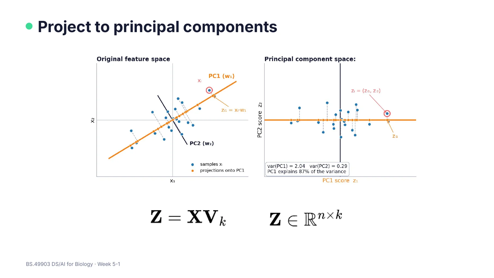
사영은 PCA의 계산 그 자체다. 30차원 점 하나를 PC 축 위의 숫자 몇 개(score)로 바꾸는 방법이 내적이다. 버린 축 방향의 성분, 즉 잔차가 곧 잃은 정보다.
새 샘플도 기존 데이터의 평균과 SD로 먼저 표준화한 뒤 같은 $\mathbf W$로 사영하면, 같은 PC 좌표계에 놓을 수 있다. 자료 외 보충 PCA는 데이터에 고정된 행렬을 곱하는 것이라 곱셈 한 번으로 끝난다.
UMAP에는 그런 행렬 W가 없다. 그래도 새 샘플은 reducer.transform으로 배치할 수 있다. (4.6)
- $\mathbf W\mathbf W^T\mathbf a$가 새 좌표 k개다.$\mathbf W\mathbf W^T\mathbf a$는 원래 p차원 공간에 놓인 사영 벡터다. k개 숫자로 된 새 좌표(score)는 $\mathbf W^T\mathbf a$다.
- $\mathbf u$가 단위벡터가 아니어도 $(\mathbf a\cdot\mathbf u)\mathbf u$로 사영하면 된다.$\mathbf u$의 길이가 c배면 결과가 c²배가 되므로, PC는 모두 길이를 1로 둔다. 실습에서
np.linalg.norm(W, axis=1)을 계산하면 [1. 1.]이 나온다. (실습 3.2) - $\mathbf W\mathbf W^T=\mathbf I$이다.열이 정규직교이면 $\mathbf W^T\mathbf W=\mathbf I_k$(k×k)다. 하지만 k < p이면 $\mathbf W\mathbf W^T$(p×p)는 정보를 버리는 사영 행렬이지, 단위행렬이 아니다. 자료 외 보충
- 잔차는 사영 벡터와 같은 방향이다.잔차는 $\mathbf u$에 수직이다. W5-1 p8 그림의 빨간 점선과 위 p12 그림의 점선이 잔차다.
4.4 주성분 찾기: 분산 최대화 + deflation (1/2) 설명 필수W5-1 p10
$\mathbf X\in\mathbb R^{n\times p}$는 표준화되어 각 열의 평균이 0이라고 하자. $\mathbf X\mathbf v$는 모든 샘플을 단위벡터 $\mathbf v$에 사영한 값(n개)이며, 그 분산은 다음과 같다.
$$\mathrm{Var}(\mathbf X\mathbf v)=\frac1{n-1}\|\mathbf X\mathbf v\|^2$$- 분산이 최대가 되는 방향을 찾는다. 이것이 PC1이다. $$\mathbf v_1=\arg\max_{\|\mathbf v\|=1}\|\mathbf X\mathbf v\|$$
- PC1이 설명하는 부분을 제거해 잔차를 만든다. $$\mathbf X_1=\mathbf X-(\mathbf X\mathbf v_1)\mathbf v_1^T$$
- 잔차에서 분산이 최대인 방향을 찾는다. 이것이 PC2이며, 같은 과정을 반복한다. $$\mathbf v_2=\arg\max_{\|\mathbf v\|=1}\|\mathbf X_1\mathbf v\|$$
$\arg\max_{\|\mathbf v\|=1}$는 "길이가 1인 v 중에서 뒤의 값을 가장 크게 만드는 v"라는 뜻이다. 최댓값 자체가 아니라, 그 값을 만드는 방향 v를 가리킨다. $\|\mathbf v\|$는 벡터 v의 길이다.
$\|\mathbf v\|=1$ 제약이 없으면 $\mathbf v$를 키우기만 해도 분산이 무한히 커진다. 이 제약이 있어야 방향만 비교할 수 있다.
이 최적화의 해는 공분산 행렬 $\mathbf X^T\mathbf X/(n-1)$의 고유벡터를 고윳값이 큰 순서로 늘어놓은 것이다. 이는 SVD의 오른쪽 특이벡터와 같다.
점 구름 한가운데에 막대(직선)를 꽂고 돌려 본다. 점들을 막대에 수직으로 내린 그림자들이 가장 넓게 퍼지는 각도를 찾으면, 그것이 PC1이다.
그다음 모든 점에서 PC1 방향 성분을 지운다. 점들을 PC1 방향으로 납작하게 누르는 셈이다. 같은 일을 다시 하면 PC2가 나온다.
PC1 방향의 퍼짐은 이미 0이 되었으므로, 자연히 PC1과 직각인 방향이 나온다.
슬라이드 toy 예에서는 PC1 방향 분산이 2.04, PC2 방향 분산이 0.29다. 따라서 PC1이 전체 분산의 약 87%를 설명한다. 표시된 숫자로 직접 나누면 2.04 / (2.04 + 0.29) ≈ 0.876이다. 2.04와 0.29가 반올림된 값이라 슬라이드의 87%와 끝자리가 조금 다르다. 추론
평균이 0인(centred) X를 단위벡터 v에 사영하면 분산은 ‖Xv‖²/(n−1)이다. 그러므로 PC1은 v₁ = argmax‖v‖=1‖Xv‖이다. 길이를 ‖v‖ = 1로 묶는 이유는, 제약이 없으면 v를 키우기만 해도 분산이 무한히 커지기 때문이다. PC1 성분을 뺀 잔차 X₁ = X − (Xv₁)v₁ᵀ는 X₁v₁ = 0을 만족한다. 그래서 잔차에서 찾은 최대 분산 방향 v₂는 v₁과 직교한다. 이렇게 빼고 다시 찾는 deflation을 반복하면, 설명 분산 순서로 정렬된 직교 축을 얻는다. 이 축들은 X의 오른쪽 특이벡터(right singular vector)와 같다.
“Explain how PCA finds the first two principal components. Why is PC2 orthogonal to PC1?”
키워드: centred data(평균 0인 데이터) · unit vector(단위벡터) · variance maximization(분산 최대화) · deflation(찾은 성분 빼기) · residual(잔차) · orthogonal(직교) · right singular vector(오른쪽 특이벡터)
4.4 주성분 찾기: 각 단계의 "왜" (2/2) W5-1 p8–10
- 왜 $\|\mathbf X\mathbf v\|$를 최대화하나? 평균이 0인 데이터에서는 $\mathrm{Var}(\mathbf X\mathbf v)=\|\mathbf X\mathbf v\|^2/(n-1)$이다. $1/(n-1)$은 모든 방향에 같은 상수다. 또 $\|\mathbf X\mathbf v\|$가 클수록 그 제곱도 크다.
- 따라서 "분산 최대"와 "$\|\mathbf X\mathbf v\|$ 최대"는 같은 문제다. 그래서 $1/n$을 쓰든 $1/(n-1)$을 쓰든 PC 방향은 같다.
- 왜 $\|\mathbf v\|=1$로 두나? 길이를 키우면 $\|\mathbf X\mathbf v\|$가 끝없이 커진다. 길이를 고정해야 어느 방향이 더 퍼졌는지만 비교할 수 있다.
- 왜 deflation이 직교 축을 주나 자료 외 보충: 잔차 $\mathbf X_1$에 $\mathbf v_1$을 곱하면 0이 된다. $$\mathbf X_1\mathbf v_1=\mathbf X\mathbf v_1-(\mathbf X\mathbf v_1)(\mathbf v_1^T\mathbf v_1)=\mathbf 0$$ 즉 잔차에는 $\mathbf v_1$ 방향의 분산이 없다. 그래서 다음 최대 방향 $\mathbf v_2$는 $\mathbf v_1$에 수직으로 잡힌다.
- 이 때문에 PC끼리 직교하고, PC score끼리의 상관도 0이다.
- 분산 최대는 곧 잃는 것 최소다 자료 외 보충: 피타고라스 정리에 따라 다음이 성립한다. $$\|\mathbf x\|^2=(\mathbf x\cdot\mathbf v)^2+\|\mathbf x-(\mathbf x\cdot\mathbf v)\mathbf v\|^2$$ 좌변은 고정되어 있다. 그러므로 사영 길이 제곱의 합을 키우는 것은 수직 잔차 제곱의 합을 줄이는 것과 같다.
- 따라서 PC1은 점들에 수직 거리 기준으로 가장 잘 맞는 직선이다.
- $\mathrm{Var}(\mathbf X\mathbf v)=\|\mathbf X\mathbf v\|^2/(n-1)$은 아무 X에서나 성립한다.열 평균이 0(centred)일 때만 성립한다. 그래서 표준화, 최소한 centering을 먼저 한다.
- PC1은 회귀직선과 같다.회귀는 y를 따로 정하고 세로 방향(y 방향) 잔차를 최소화한다. PCA는 모든 feature를 대등하게 보고 직선까지의 수직 거리를 최소화하므로, 두 직선은 일반적으로 다르다. 자료 외 보충 (W3)
- $(\mathbf X\mathbf v_1)\mathbf v_1^T$는 PC1 score, 즉 n개의 숫자다.n×1 score에 1×p 방향을 곱한 것이므로 n×p 행렬이다. 각 샘플의 PC1 방향 사영 벡터를 모은 것이며, 이것을 X에서 뺀다.
- PC2는 원래 X에서 두 번째로 큰 방향을 아무렇게나 찾은 것이다.PC2는 PC1 부분을 뺀 잔차 $\mathbf X_1$에서 찾는다. 그래서 PC1과 직교한다.
4.5 SVD, PC score, explained variance (1/3) W5-1 p6, p11–13 · 실습 W5 3.2
$$\mathbf X=\mathbf U\boldsymbol\Sigma\mathbf V^T=\sum_k\sigma_k\,\mathbf u_k\mathbf v_k^T$$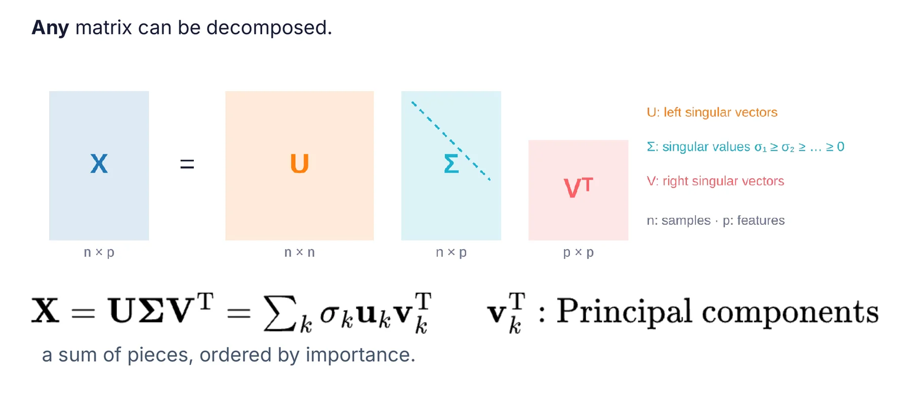
- SVD는 모든(any) 행렬에 대해 가능하다.
- $\mathbf U$는 $n\times n$ 행렬이며, 그 열은 왼쪽 특이벡터(left singular vectors)다.
- $\boldsymbol\Sigma$는 $n\times p$ 행렬이며, 대각에 특잇값(singular values) $\sigma_1\ge\sigma_2\ge\dots\ge0$을 가진다.
- $\mathbf V^T$는 $p\times p$ 행렬이며, 그 행은 오른쪽 특이벡터(right singular vectors)다.
- $\mathbf V^T$의 행 $\mathbf v_k^T$가 principal components다. SVD는 행렬을 "중요도 순으로 정렬된 가장 단순한 조각들의 합"으로 쓴다. 조각 하나는 방향 하나로만 이루어진 표 $\sigma_k\mathbf u_k\mathbf v_k^T$다(rank-1).
- 사영(projection)은 앞의 k개 PC를 써서 $\mathbf Z=\mathbf X\mathbf V_k\in\mathbb R^{n\times k}$로 계산한다.
- sklearn의
components_는 (2, 30) 행렬이다. 각 행이 PC 단위벡터이므로,components_는 $\mathbf V_k^T$에 해당한다. - 노트북에서
Z == X_scaled @ components_.T를 확인하면 True가 나온다. 즉 Z는 $\mathbf X\mathbf V_k$다. - PC k 방향의 분산은 $\sigma_k^2$에 비례한다. 그래서 설명 분산 비율은 다음과 같다. $$\text{Explained Variance Ratio}_k=\frac{\sigma_k^2}{\sum_i\sigma_i^2}$$
표기 주의: 슬라이드 p6 코드 주석은 Z = X W로 쓰고 components_ = Wᵀ로 둔다. 즉 W = $\mathbf V_k$(p×k)다. 실습 3.2는 W = components_(k×p)로 두고 $Z = XW^{\top}$로 쓴다. 둘은 같은 내용이므로, 답안에서는 W가 무엇인지 먼저 정의한다.
SVD는 어떤 숫자 표든 "중요한 순서로 줄 세운 단순한 조각들의 합"으로 쪼갠다.
조각 하나는 세 가지로 이루어진다. 어느 방향인가, 각 샘플이 그 방향으로 얼마나 가 있나, 그리고 그 조각의 세기 σ다.
σ가 큰 앞쪽 몇 조각만 더해도 원래 표의 큰 줄기가 거의 다 재현된다. 유방암에서는 30조각 중 앞 10개가 전체 분산의 95%를 담는다.
4.5 SVD, PC score, explained variance (2/3) W5-1 p11–13 · notebook 3
$\mathbf X=\mathbf U\boldsymbol\Sigma\mathbf V^T$의 양변 오른쪽에 $\mathbf V$를 곱한다. $\mathbf V^T\mathbf V=\mathbf I$이므로 $\mathbf X\mathbf V=\mathbf U\boldsymbol\Sigma$, 즉 $\mathbf X\mathbf v_k=\sigma_k\mathbf u_k$다.
$\|\mathbf u_k\|=1$이므로 PC k 방향의 분산은 다음과 같다.
$$\mathrm{Var}(\mathbf X\mathbf v_k)=\frac{\|\sigma_k\mathbf u_k\|^2}{n-1}=\frac{\sigma_k^2}{n-1}\qquad(\|\mathbf u_k\|=1)$$비율로 만들면 $n-1$이 약분되어 $\sigma_k^2/\sum_i\sigma_i^2$가 된다.
p13 그림 범례는 이 비율을 $\lambda_k/\sum\lambda$로 쓴다. 여기서 $\lambda_k=\sigma_k^2/(n-1)$은 공분산 행렬의 고윳값이므로, 같은 비율이다.
또 PC score는 $\mathbf Z=\mathbf X\mathbf V_k=\mathbf U_k\boldsymbol\Sigma_k$로도 쓸 수 있다.
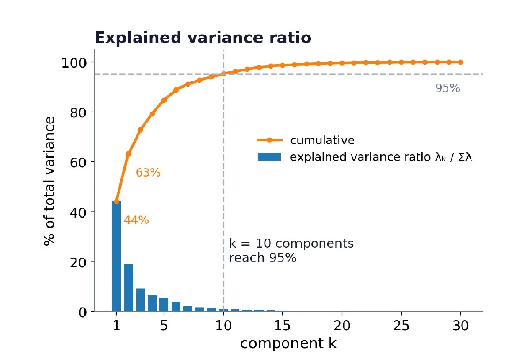
| breast cancer (표준화 후) | 값 |
|---|---|
| explained variance ratio PC1, PC2 | 0.443, 0.190 (합 63.2%) |
| 95% 분산에 필요한 PC 수 | 10개 (30개를 10개로) |
| PC1 loading 상위 | mean concave points +0.261, mean concavity +0.258, worst concave points +0.251, mean compactness +0.239, worst perimeter +0.237 |
| PC1의 의미 | 상관된 측정들을 하나로 묶은 "핵이 얼마나 크고 불규칙한가"라는 요약축 |
슬라이드 toy 예에서는 var(PC1) = 2.04, var(PC2) = 0.29이고, PC1이 약 87%를 설명한다. 표시된 숫자로 나누면 0.876인데, 두 값이 반올림된 값이라 끝자리가 조금 다르다. 추론
4.5 SVD, PC score, explained variance (3/3) W5-1 p11–13 · 실습 W5 3.2–3.3
- SVD를 쓰는 이유: 앞에서 본 "최대화하고, 빼고, 반복하는" 과정을 한 번의 분해로 끝낸다. 모든 PC와 각 PC의 세기가 동시에 나온다. PC는 $\mathbf V^T$의 행이고, 세기는 $\sigma_k$다. (4.4)
- 압축: 누적 explained variance가 기준(예: 95%)을 넘는 최소 개수만 남긴다. 유방암에서는 30개 중 10개를 남긴다.
- 시각화: PC 2개만 그리면 분산의 63.2%만 보인다. 나머지 36.8%는 그림에 보이지 않는다는 것을 함께 말해야 한다.
- 읽는 법 추론: 앞쪽 PC 몇 개에 분산이 몰리면 feature 간 중복이 크다는 뜻이므로, 압축이 잘 된다. 비율이 고르게 퍼져 있으면 PCA로 줄일 여지가 적다.
- EVR은 $\sigma_k/\sum_i\sigma_i$다.분산은 특잇값의 제곱에 비례한다. 그래서 EVR은 $\sigma_k^2/\sum_i\sigma_i^2$다.
- $\mathbf U$의 열이 PC다.PC는 feature 공간의 방향(길이 p)이며, $\mathbf V^T$의 행, 즉 $\mathbf V$의 열이다. $\mathbf U$는 샘플 쪽(길이 n)이고, score가 $\mathbf U_k\boldsymbol\Sigma_k$다.
components_의 shape은 (569, 2)다.shape은 (2, 30) = (k, p)이고, 각 행이 길이 1인 PC다. (569, 2)는 scoreZ의 shape이다.- 남긴 2개 PC의 EVR을 더하면 1이다.EVR은 전체 30개 PC 대비 비율이므로 0.443 + 0.190 ≈ 0.63이다(반올림 전 값으로 더하면 63.2%). 30개를 모두 더해야 1이 된다.
- PC를 더 남기면 앞의 PC1도 바뀐다. 예를 들어 n_components를 2에서 전부로 늘리는 경우다.PC는 분산 순서로 하나씩 정해지므로 앞의 PC는 그대로다. 실습에서
PCA(n_components=2)의 [0.443, 0.190]과PCA()의 앞 두 값(누적 63.2%)이 일치한다. 추론
Explain how PCA finds its components and what the explained variance ratio means.
- feature를 표준화해 평균 0, SD 1로 만든다. 스케일이 큰 feature가 분산을 지배하지 않게 하기 위해서다.
- 단위벡터 v로 사영한 값 Xv의 분산 $\|Xv\|^2/(n-1)$을 최대화하는 v₁을 찾는다. 이것이 PC1이다.
- PC1이 설명한 부분을 빼서 잔차 $X_1=X-(Xv_1)v_1^T$를 만든다. 잔차에서 다시 분산이 최대인 방향을 찾으면 PC2이며, PC2는 PC1과 직교한다. 이 과정을 반복한다.
- 실제 계산은 SVD $X=U\Sigma V^T$로 한 번에 한다. $V^T$의 행이 PC이고, $Z=XV_k$가 PC score다.
- PC k가 설명하는 분산은 $\sigma_k^2$에 비례한다. 그래서 explained variance ratio $\sigma_k^2/\sum\sigma_i^2$는 전체 분산 중 그 축이 담은 비율이다.
- 누적 비율로 남길 PC 개수를 정한다. 예를 들어 95%를 담으려면 10개가 필요하다. PCA는 선형이고 결정적이며 빠르다.
SVD X = UΣVᵀ에서 Vᵀ의 행이 주성분(principal component)이고, Z = XVk가 PC score다. Xvk = σkuk이므로 PC k 방향의 분산은 σk²/(n−1)이다. 따라서 설명 분산 비율(explained variance ratio) σk²/Σσi²는 전체 분산 중 그 축이 담은 비율이다. 유방암에서는 PC1이 0.443, PC2가 0.190이고, 둘을 합치면 약 63.2%다. 95%를 담으려면 PC 10개가 필요하다.
“Using the SVD $X=U\Sigma V^T$, explain how the PC scores are computed and why the explained variance ratio of PC $k$ is $\sigma_k^2/\sum_i\sigma_i^2$.”
키워드: singular value decomposition(특잇값 분해) · singular value(특잇값) · right singular vector(오른쪽 특이벡터) · PC score(주성분 점수) · explained variance ratio(설명 분산 비율) · cumulative variance(누적 분산)
4.6 UMAP: 같은 데이터, 축 없음 (1/6) 3단계 설명W5-1 p14–20 · W5-2 p3–5
UMAP은 고차원에서 이웃 그래프를 만든 뒤 2D 평면에 점을 배치한다. 고차원에서 연결된 점은 가깝게, 연결되지 않은 점은 멀게 놓는다.
UMAP은 비선형(nonlinear) 방법이며, 주로 시각화에 쓴다. 확률적(stochastic) 방법이기도 하다. 보존하는 것은 이웃 정보(local neighborhood)다.
- 전체 feature(예: 30차원)로 이웃 그래프를 만든다. 각 샘플 i마다
n_neighbors개의 최근접 샘플을 찾고 거리를 잰다. 엣지 가중치는 다음과 같다. $$w=\exp\!\Big(-\frac{d-\rho_i}{\sigma_i}\Big)$$ 여기서 $\rho_i$는 가장 가까운 이웃까지의 거리(distance to nearest neighbor)다. 그래서 가장 가까운 이웃의 w는 항상 1이다. 점마다 자기 스케일($\rho_i,\sigma_i$)로 정규화하므로, 밀집 영역과 희박 영역이 비슷하게 보인다. 여기서 $\sigma_i$는 표준편차나 특잇값이 아니다. 점 i마다 따로 정하는 거리 눈금으로, 곡선이 얼마나 빨리 떨어지는지를 정한다.
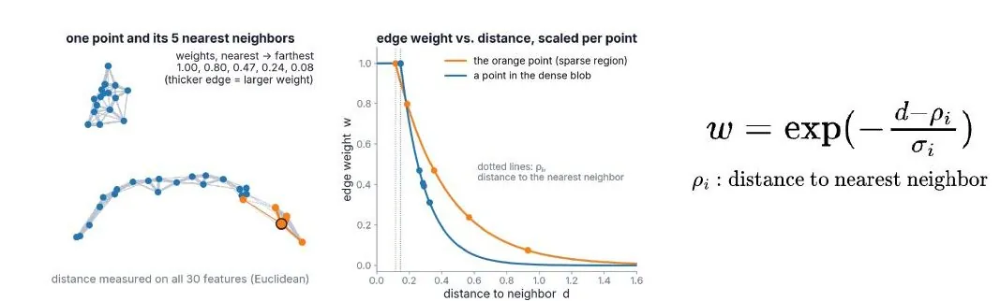
4.6 UMAP: Step 1을 더 자세히 (2/6) W5-1 p16
$d=\rho_i$, 즉 가장 가까운 이웃이면 $w=e^0=1$이다. 그래서 모든 점이 "가장 가까운 이웃과는 세기 1"로 출발한다.
p16 오른쪽 그림을 보자. 희박 영역의 주황 점은 이웃들이 약 0.1~0.9 거리에 흩어져 있다. 밀집 영역의 파란 점은 이웃들이 약 0.15~0.3 거리에 몰려 있다.
그런데 주황 점은 $\sigma_i$가 커서 천천히 감소하는 곡선을 쓰고, 파란 점은 $\sigma_i$가 작아서 빨리 감소하는 곡선을 쓴다. 그래서 둘 다 가장 가까운 이웃의 1에서 시작해 차례로 줄어드는, 비슷한 세기의 연결을 갖는다.
그 결과 고차원의 밀도 차이가 그림에서 지워진다. 이것이 UMAP 그림의 클러스터 크기나 밀도를 읽으면 안 되는 첫째 이유다.
$\sigma_i$는 각 점의 가중치 합이 $\log_2(\text{n\_neighbors})$가 되도록 정한다. 자료 외 보충
UMAP은 지하철 노선도를 그리는 일과 비슷하다.
- 30차원 공간에서 각 점마다 가장 가까운 점 15개를 이웃으로 적는다(
n_neighbors=15). 가까울수록 연결 세기를 크게 붙이며, 최댓값은 1이다. - 종이(2D)에 점들을 뿌린다.
- 이웃끼리는 끌어당기고 이웃이 아닌 점은 밀어내며, 위치를 조금씩 고친다.
노선도는 어느 역끼리 이어져 있는지는 지키지만, 실제 거리는 지키지 않는다. UMAP 그림도 마찬가지로 누가 누구 옆인가만 믿을 수 있다.
예(p16): 한 점과 가장 가까운 이웃 5개의 연결 세기는 1.00, 0.80, 0.47, 0.24, 0.08이다.
4.6 UMAP: 같은 데이터, 축 없음 (3/6) 3단계 설명W5-1 p14–20 · W5-2 p3–5
- 2D 평면에 점을 떨어뜨린다. 먼저 spectral layout으로 초기화해, 연결된 점끼리 가까이서 시작하게 한다. 2D에서 "이웃"의 정도는 다음 식으로 정의한다.
$$v'=\begin{cases}1 & d\le d_{min}\\ e^{-(d-d_{min})} & d\gt d_{min}\end{cases}\qquad v=\frac1{1+a\,d^{2b}}$$
$a$와 $b$는 $v$가 $v'$에 가까워지도록 맞춘(fitted) 상수다.
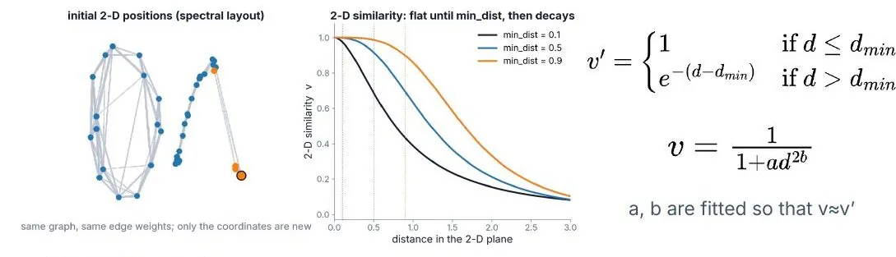
W5-1 p17 · Step 2: spectral 초기화와 2D 유사도 v. v는 min_dist까지 평평하다. $v'$는 $d_{min}$(=
min_dist)까지 1로 평평하다. 그래서 이미 min_dist보다 가까운 쌍은 충분히 가깝다고 보고 더 당기지 않는다. 그 결과 점들이 min_dist보다 촘촘하게 겹쳐 쌓이려 하지 않는다. 추론 꺾인 $v'$ 대신 매끄러운 $v$를 쓰는 것은 미분(gradient)으로 최적화하기 위해서다. 자료 외 보충 - 두 그래프가 일치하도록 손실을 최소화한다. 손실은 w 그래프와 v 그래프 사이의 cross-entropy다.
$$L=\sum_{ij}\Big(\underbrace{w_{ij}\log\frac{w_{ij}}{v_{ij}}}_{\text{Attract}}+\underbrace{(1-w_{ij})\log\frac{1-w_{ij}}{1-v_{ij}}}_{\text{Repel}}\Big)$$
- 고차원에서 강하게 연결된 쌍($w$ 큼)이 2D에서 멀리 있으면 $v$가 작아 첫 항이 커진다. 그래서 두 점을 당긴다.
- 연결되지 않은 쌍($w\approx0$)이 2D에서 가까이 있으면 $v\approx1$이 되어 둘째 항이 커진다. 그래서 두 점을 밀어낸다.
- $w_{ij}=v_{ij}$이면 두 항이 모두 0이 되어 최소다.
- 최적화를 한 바퀴 돌 때마다(epoch) 차례가 된 연결 쌍을 당긴다. 그리고 그 쌍의 각 점마다 무작위 점 5개를 그 점에서 밀어낸다.
- 이 무작위 밀어내기를 negative sampling이라고 부른다. 자료 외 보충
- 밀어낼 점을 무작위로 고르므로, random_state를 고정하지 않으면 실행마다 배치가 달라질 수 있다. UMAP이 확률적(stochastic)인 이유 중 하나다. 추론
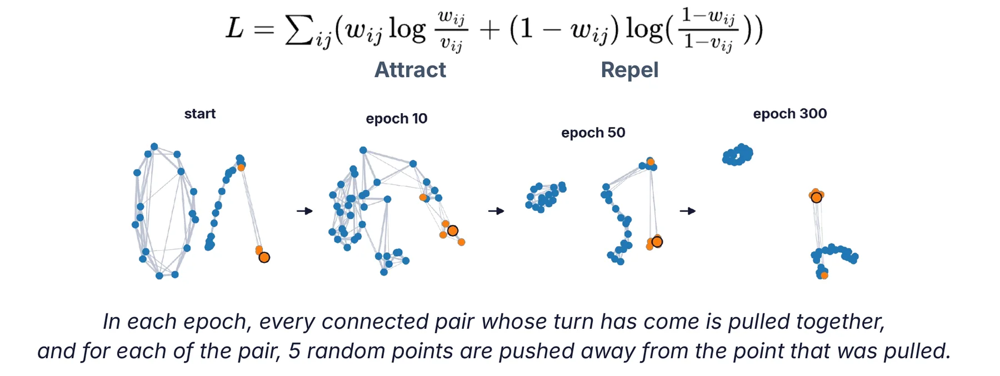
4.6 UMAP: 같은 데이터, 축 없음 (4/6) 3단계 설명W5-1 p14–20 · W5-2 p3–5
| 파라미터 | 작게 | 크게 |
|---|---|---|
n_neighbors (local vs global) | 5: 가장 가까운 몇 개만 본다. 세부는 보이지만 데이터가 가닥으로 조각난다. | 100: 멀리까지 본다. 전체 모양은 유지되지만 국소 구조는 뭉개진다. |
min_dist (덩어리 촘촘함) | 0.0: 이웃이 거의 겹쳐 쌓인다. | 0.9: 점들이 고르게 퍼진다. |
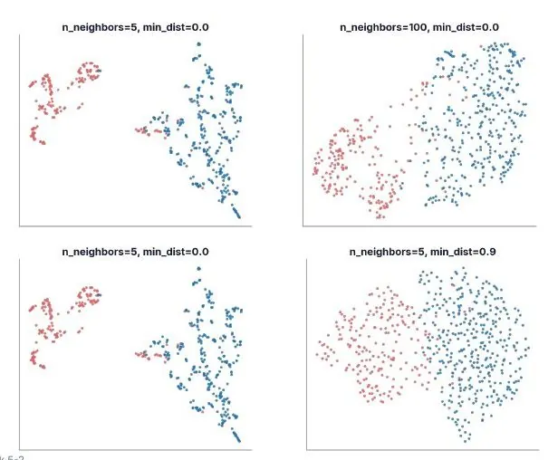
n_neighbors는 Step 1(고차원 그래프)을 바꾼다. 이 값은 이웃을 몇 개까지 연결할지를 정한다.
값이 작으면 각 점이 가까운 몇 개와만 연결되어, 그래프가 끊어진 조각들로 나뉜다. 그래서 그림이 가닥으로 쪼개진다. 추론
값이 크면 멀리 있는 점까지 연결되어 전체 모양이 살아남는다. 추론
결과 그림은 W5-1 p19에 있다.
min_dist는 Step 2–3(2D 유사도 곡선 $v$)을 바꾼다. 고차원 그래프는 그대로 두고, 2D에서 점들이 얼마나 빽빽하게 뭉쳐도 되는지만 정한다. 추론
p17과 p20의 곡선을 보면, min_dist가 커질수록 평평한 구간이 길어진다.
4.6 UMAP: 왜 그림의 거리·크기·축을 믿으면 안 되나 (5/6) 설명 필수W5-1 p15–21 · 실습 W5 4.1–4.2
UMAP에는 components_도 explained_variance_ratio_도 없다. 임베딩이 "데이터 × 행렬"이 아니므로 축에 의미가 없다.
random_state를 지정하지 않으면 실행할 때마다 다른 그림이 나온다(stochastic).
UMAP 그림에서 클러스터 크기나 클러스터 간 거리를 읽으면 안 된다. 새 샘플은 reducer.transform으로 배치할 수 있다.
- 점마다 정규화한다(Step 1). $\rho_i,\sigma_i$로 각 점의 거리 눈금을 따로 맞추므로, 밀집 영역과 희박 영역이 비슷하게 보인다. 그래서 클러스터의 크기와 밀도는 원래 데이터의 퍼짐을 반영하지 않는다.
- 이웃이 아닌 쌍에는 목표 거리가 없다(Step 3). 추론 $w_{ij}\approx0$이면 손실 항은 $-\log(1-v_{ij})$다. 이 항은 $v$를 0에 가깝게, 즉 충분히 멀리 두라고만 요구하고, 얼마나 멀리인지는 정하지 않는다. 그래서 클러스터 사이 거리는 초기 배치, 무작위 밀어내기, 파라미터에 따라 임의로 정해진다.
- 파라미터가 모양을 바꾼다. 같은 데이터라도 n_neighbors 5와 100, min_dist 0.0과 0.9에서 전혀 다른 그림이 나온다. (W5-2 p4, 실습 4.2)
- 축이 없다. 임베딩은 "데이터 × 행렬"이 아니므로, UMAP 1과 UMAP 2 방향에는 해석할 수 있는 의미(loading)도 explained variance도 없다. 게다가 stochastic이어서 random_state를 빼면 매번 다른 배치가 나온다.
믿을 수 있는 것은 하나다. 고차원에서 이웃이던 점들은 그림에서도 대체로 이웃이다(local neighborhood 보존).
- 해결하는 문제: 고차원 데이터에 어떤 그룹이나 연속 구조가 있는지 눈으로 보고 싶을 때 쓴다.
- PCA는 선형이라 휘어진 구조를 축 2개에 담지 못할 수 있다. 추론 게다가 축 2개로 그리면 남는 분산이 일부뿐이다. 유방암에서 PC1과 PC2를 합쳐도 63.2%다.
- 언제 쓰나: 시각화와 탐색에 쓴다. 예를 들어 유전자 20,000개인 단일세포 데이터나 feature 30개인 유방암 데이터를 2D로 본다.
- 유방암을 UMAP으로 2D에 그리면 malignant와 benign이 따로 모인다. (W5-1 p21)
- 언제 쓰면 안 되나: 거리나 클러스터 크기를 측정할 때, 축 값을 변수로 쓸 때는 안 된다.
- "그림에서 갈라졌으니 그룹이 존재한다"는 결론도 내리면 안 된다. 작은 n_neighbors는 데이터를 가닥으로 쪼갤 수 있기 때문이다. 결론은 원래 공간이나 다른 분석으로 확인한다.
- 결과를 재현하려면
random_state를 고정한다. - PCA와 비교: PCA는 선형이고 결정적이며, 축을 해석할 수 있고 전역 분산을 보존한다. UMAP은 비선형이고 확률적이며, 축이 없고 국소 이웃을 보존한다. (4.7)
4.6 UMAP: 틀리기 쉬운 것과 답안 (6/6) W5-1 p14–21 · W5-2 p3–5 · 실습 W5 4
n_neighbors를 크게 하면 세부 구조가 더 잘 보인다.반대다. 5처럼 작게 하면 세부는 보이지만 가닥으로 쪼개지고, 100처럼 크게 하면 전체 모양은 유지되지만 국소 구조가 뭉개진다.min_dist가 이웃 수(local vs global)를 정한다.이웃 수를 정하는 것은 n_neighbors다. min_dist는 2D에서 점들이 얼마나 촘촘히 뭉치는지를 정하며, 0.0이면 겹쳐 쌓이고 0.9면 고르게 퍼진다.- UMAP은 고차원 거리를 2D에서 그대로 재현하도록 최적화한다.UMAP은 고차원 이웃 그래프의 가중치 w와 2D 유사도 v가 비슷해지도록 cross-entropy를 최소화한다. 거리 자체를 맞추지는 않는다.
- 가장 가까운 이웃의 w는 거리에 따라 0.7, 0.9처럼 달라진다.가장 가까운 이웃은 $d=\rho_i$이므로 w가 항상 1이다.
- UMAP 1 값이 클수록 악성이다.UMAP의 축에는 의미가 없다. 임베딩이 "데이터 × 행렬"이 아니어서, UMAP 1 방향에 해석할 수 있는 loading이 없기 때문이다.
- 클러스터가 넓게 퍼졌으니 그 그룹은 다양하다.UMAP 그림의 클러스터 크기에도 의미가 없다. Step 1에서 점마다 거리 눈금을 따로 맞추므로, 원래 데이터의 퍼짐이 그림에 남지 않는다.
- UMAP은 새 샘플을 기존 그림에 넣을 수 없다.
reducer.transform(X_new)로 새 샘플을 배치할 수 있다. 단, 축이 없다는 사실은 그대로다. (W5-1 p15) - UMAP도 PCA처럼 label 없이 하니 결과는 매번 같다.unsupervised인 것은 맞지만 UMAP은 stochastic이다. random_state를 빼면 매번 다른 배치가 나온다.
UMAP은 세 단계로 작동한다. 첫째, 전체 feature로 각 샘플의 n_neighbors개 최근접 이웃 그래프를 만든다. 이때 점마다 정규화한 가중치 w = exp(−(d−ρi)/σi)를 매겨, 밀집 영역과 희박 영역이 비슷해지게 한다. 둘째, spectral layout으로 2D에 초기 배치하고, min_dist까지 평평한 2D 유사도 v = 1/(1+a·d2b)를 정의한다. 셋째, w와 v 사이의 교차 엔트로피(cross-entropy)를 최소화한다. 연결된 점은 당기고, 무작위로 고른 점은 밀어낸다. UMAP은 국소 이웃만 보존하고 거리를 점마다 재조정한다. 그래서 UMAP 그림의 클러스터 크기, 클러스터 간 거리, 축에는 의미가 없다.
“Describe the three steps of UMAP. Why are cluster sizes and distances between clusters in a UMAP plot not meaningful?”
키워드: nearest-neighbor graph(최근접 이웃 그래프) · n_neighbors(이웃 수) · min_dist(최소 거리) · spectral initialization(스펙트럴 초기 배치) · cross-entropy(교차 엔트로피) · attract / repel(당김 / 밀어냄) · local neighborhood(국소 이웃)
4.7 PCA vs UMAP (1/2) W5-1 p6, p15, p21
| PCA | UMAP | |
|---|---|---|
| 무엇인가 | 선형 사영(linear projection), 즉 회전 | 이웃 그래프의 비선형(nonlinear) 배치 |
| 보존하는 것 | 가장 큰 분산 방향 (global) | 국소 이웃 관계 (local neighborhoods) |
| 그림 속 거리 | 가까우면 더 비슷하다 | 별 의미 없음 |
| 결정적(deterministic)인가? | 예 | 아니오 (stochastic) |
| 축 해석 | 가능 (loadings, explained variance) | 불가 |
| 주 용도 | 압축, 전처리, 해석 | 시각화 |
| 결과가 "X × 행렬"인가? | 예. $\mathbf Z=\mathbf X\mathbf V_k$ (components_) | 아니오 (W 없음). 새 샘플은 reducer.transform으로 배치 |
| 주요 설정 | n_components | n_neighbors, min_dist, random_state |
PCA는 먼저 해 볼 기본값이다. 추론 빠르고 매번 같은 결과를 낸다. 축의 의미는 loading으로, 남긴 정보량은 EVR로 말할 수 있다. 압축, 전처리, 해석이 목적일 때 쓴다.
UMAP은 비선형 구조의 그룹을 눈으로 확인하고 싶을 때 쓴다. 그림은 이웃 관계만 말해 준다.
유방암에서는 두 방법 모두 label 없이 malignant와 benign을 서로 다른 영역에 놓았다. (p21)
4.7 PCA vs UMAP: 함정과 답안 (2/2) W5-1 p12, p21
- PCA 그림에서 가까우면 원래 30차원에서도 반드시 가깝다.사영은 거리를 줄이기만 한다($\|\mathbf W^T(\mathbf a-\mathbf b)\|\le\|\mathbf a-\mathbf b\|$). 그래서 그림에서 멀면 원래도 멀지만, 그림에서 가까워도 버린 PC 방향(36.8%)에서는 다를 수 있다. 추론
- UMAP이 더 최신이니 항상 UMAP이 낫다.두 방법은 목적이 다르다. 거리, 축, 정보량을 말해야 하면 PCA를 쓰고, 이웃 구조를 시각화하려면 UMAP을 쓴다.
- UMAP에서 그룹이 더 잘 갈렸으니 UMAP이 PCA보다 정보를 더 담았다.같은 30개 feature에서 출발한 다른 배치일 뿐, 새 정보를 만들지 않는다. 갈라진 정도도 파라미터에 따라 바뀐다. 추론
PCA는 전체 데이터에서 분산이 가장 큰 방향을 남기는 선형 회전이다. 결정적(deterministic)이어서 결과가 매번 같다. 그래서 loadings와 explained variance로 축을 해석할 수 있고, 그림의 거리도 유사성을 반영한다. UMAP은 이웃 그래프로 점을 배치해 국소 이웃(local neighborhood)을 보존하는 비선형 방법이다. 또 확률적(stochastic)이어서, random_state를 고정하지 않으면 실행마다 배치가 달라진다. 시각화에는 좋지만, 축과 거리에는 의미가 거의 없다.
“Compare PCA and UMAP. What does each method preserve, and what can you interpret in each plot?”
키워드: global structure(전역 구조) · local neighborhood(국소 이웃) · linear / nonlinear(선형 / 비선형) · deterministic / stochastic(결정적 / 확률적) · loadings(적재값) · explained variance(설명 분산)
4.8 Supervised vs Unsupervised (1/2) W5-2 p6–7
| Supervised | Unsupervised | |
|---|---|---|
| 데이터 | feature X와 label y (malignant/benign) | feature X만 있다. label은 숨겨졌거나 없다. |
| 목표 | 새 샘플에 대해 X로 y를 예측하는 규칙을 배운다. | X 자체의 구조를 찾는다. 요약 축 몇 개나 비슷한 샘플 그룹이 그 예다. |
| 평가 | 실제 label과 비교한다. accuracy, precision, recall을 쓴다. | 더 어렵다. ground truth가 없어 유용성, 안정성, 생물학으로 판단한다. |
| 방법 | Logistic regression, k-NN | k-means (PCA, UMAP도 포함) |
Supervised는 선생님이 training data와 함께 답을 건네준다는 뜻이다. Unsupervised는 알고리즘이 스스로 정리하고, 우리가 나중에 해석한다는 뜻이다.
정답지가 있는 문제집으로 공부하는 것이 supervised다. 문제와 답을 같이 보며 규칙을 배운다. 여기서 문제는 측정값 X이고 답은 진단 y다. 그다음 새 문제, 즉 새 환자를 푼다.
정답지가 없으면 unsupervised다. 비슷한 것끼리 묶거나(군집) 요약 축을 찾는다. 그 묶음이 무엇인지는 사람이 나중에 해석한다.
예를 들어 유방암 569개에서 진단을 숨기고 k-means로 2묶음을 만들었다. 나중에 진단과 비교하니 91%가 일치했다.
4.8 Supervised vs Unsupervised (2/2) W5-2 p6–7 · 실습 W5 6.1
- Supervised: 정답이 있고 목표가 예측일 때 쓴다. 예를 들어 새 biopsy가 악성인지 알고 싶을 때다.
- supervised는 평가가 명확하다. accuracy, precision, recall로 잰다. (W4)
- Unsupervised: 정답이 없거나, 정답이 정의하지 못한 구조를 발견하고 싶을 때 쓴다. 어떤 그룹이 있는지, 새 세포 유형이 있는지 묻는 경우다. 추론
- unsupervised는 맞혀 볼 정답(ground truth)이 없다. 그래서 결과의 유용성, 안정성(다시 돌려도 같은가), 생물학적 의미로 판단한다. silhouette 같은 기하학적 점수는 보조 기준이다.
- 수업에서는 label을 숨기고 비지도 방법을 돌렸다. label은 나중에 비교하는 데만 썼는데, PCA 그림의 색과 k-means 일치율이 그 예다.
- k-means 결과가 진단과 91% 일치하니, k-means가 label을 썼다.label은 결과를 확인할 때만 썼다. 일치율 계산은 이 교육용 데이터에 label이 있어서 가능했던 점검이지, 일반적인 비지도 평가 방법이 아니다.
- k-NN은 가까운 것끼리 묶으니 unsupervised다.k-NN은 label이 붙은 training 샘플의 투표로 분류한다. 그래서 supervised classifier다.
- supervised는 사람이 알고리즘을 옆에서 감독하고 조정한다는 뜻이다.training data와 함께 정답(label)이 주어진다는 뜻이다.
- 비지도 학습도 accuracy로 평가하면 된다.보통은 ground truth가 없어서 accuracy를 낼 수 없다. 그래서 비지도 학습의 평가가 "더 어렵다(harder)"고 한다.
4.9 k-NN과 cross-validation (1/6) W5-2 p8–15 · notebook 5
- 새 샘플에서 모든 training 샘플까지 거리를 잰다. 거리는 p개 feature 전체에 대한 Euclidean 거리다. $$d_i=\sqrt{\sum_{j=1}^{p}\big(x^{j}_{new}-x^{j}_{i}\big)^2}$$
- 가장 가까운 k개를 골라 다수결로 정한다. 거리를 정렬해 가까운 k개를 고르고, 그중 가장 많은 클래스를 예측값으로 쓴다.
predict_proba는 투표 비율이다(예: 3/5 malignant). 클래스가 2개면 동점을 막기 위해 홀수 k를 쓴다.
- 학습되는 모델이 없다(no model is learned). 'training'은 데이터를 저장하는 것뿐이고, 모든 일은 예측 시점에 한다. 가중치, 손실함수, gradient descent가 없다.
- 거리 기반이라 표준화가 필수다. scaler는 train에만 fit한다.
- k의 역할: 슬라이드 p13은 feature 2개(mean radius, mean texture)로 실험한다.
- k=1이면 training set을 암기한다(train 1.00). 경계가 모든 점을 따라가므로 overfit이고, test는 0.85다.
- k=15이면 경계가 매끄럽다(train 0.90). test가 0.88로 셋 중 가장 높다.
- k=150이면 경계가 거의 직선이 되어 국소 구조를 무시한다. underfit이며 train 0.87, test 0.85다.
- k=1의 train 1.00은 각 점이 자기 자신의 최근접 이웃이기 때문이다. 이 값은 새 샘플에 대해 아무것도 말해 주지 않는다.
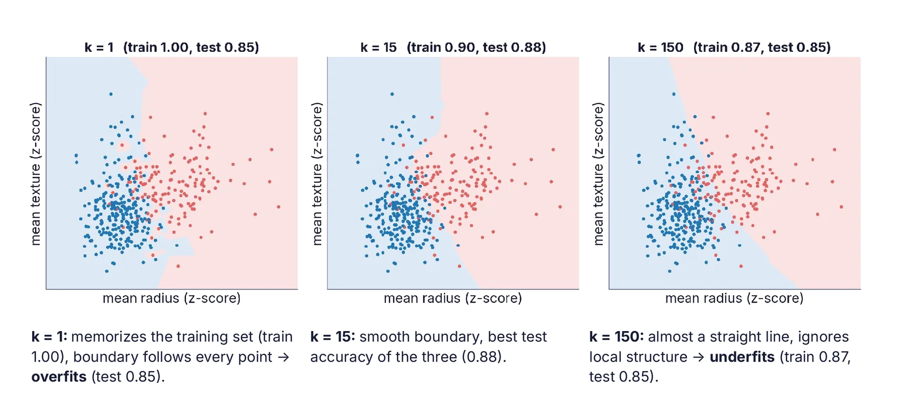
새 환자의 세포 측정값이 들어오면, 이미 진단이 붙은 기존 환자 중 측정값이 가장 비슷한 k명을 찾는다. 그리고 그들 진단의 다수결을 따른다.
"비슷하다"는 30개 측정값의 차이를 제곱해 더한 뒤 루트를 씌운 거리가 작다는 뜻이다.
예(p11): k = 5에서 3명이 malignant(악성), 2명이 benign이면 예측은 malignant이고, predict_proba는 [0.6, 0.4]다.
미리 배워 두는 규칙은 없다. 물어볼 때마다 이웃을 새로 찾는다.
4.9 k-NN: k는 무엇을 바꾸나 (2/6) W5-2 p8–13 · W4 p10 · 실습 W5 5.1–5.2
| k (실습, 30 feature) | 1 | 5 | 15 | 50 | 150 |
|---|---|---|---|---|---|
| train accuracy | 1.000 | 0.980 | 0.970 | 0.955 | 0.910 |
| test accuracy | 0.947 | 0.947 | 0.942 | 0.947 | 0.889 |
feature 2개로 한 슬라이드 p13 수치와 feature 30개로 한 실습 수치는 서로 다른 실험이다. 30개 feature에서는 k=1도 test가 0.947이다.
따라서 교훈은 "k=1이면 test가 반드시 나쁘다"가 아니다. "train 1.00은 아무 정보가 없다"는 것이다.
train accuracy는 k가 커질수록 대체로 떨어진다. p15 그림을 보면 전체 추세는 감소지만, 군데군데 작은 오르내림이 있어 엄밀한 단조 감소는 아니다.
- 작은 k (k=1): 예측이 단 한 점에 달려 있다. 그래서 label이 잘못 붙은 점이나 튀는 training 점 하나가 주변에 "섬"을 만들고, 경계가 모든 점을 따라간다.
- training 데이터가 조금만 바뀌어도 경계가 크게 바뀐다. 이것이 high variance, 즉 overfitting이다.
- 큰 k (k=150): 멀리 있는 점까지 투표에 참여한다. 국소 구조가 평균되어 사라지고 경계가 거의 직선이 된다. 이것이 high bias, 즉 underfitting이다.
- 극단적으로 k가 training 샘플 수(398)와 같으면, 모든 새 샘플을 다수 클래스인 benign으로 예측한다. 그러면 test 정확도는 약 107/171 ≈ 0.63이다. 추론
- 왜 표준화하나: 거리는 각 feature 차이를 제곱해 더한 뒤 제곱근을 씌운 값이다. 표준화하지 않으면 수백 단위인 area 차이가, 0.01 안팎인 fractal dimension 차이(SD 0.007)를 압도한다.
- 그러면 사실상 area 하나로 이웃을 고르게 된다.
- scaler를 train에만 fit하는 이유는, test가 "처음 보는 샘플"처럼 행동해야 하기 때문이다. (실습 5.1)
4.9 k-NN: 언제 쓰고 무엇을 조심하나 (3/6) W5-2 p8–13 · W4 · 실습 W5 5.1–5.2
- 장점: 학습할 것이 없고, 경계 모양을 미리 가정하지 않아 곡선 경계도 가능하다. "가장 비슷한 환자들의 진단"을 따른다는 점에서 직관적이다.
- 단점과 한계: 모든 일이 예측 시점에 일어난다. 새 샘플마다 모든 training 샘플까지 거리를 계산하므로, 데이터가 크면 느리다. 추론
- feature의 스케일에 민감하고, 관련 없는 feature에도 민감하다. 둘 다 거리를 오염시키기 때문이다.
- logistic regression과 비교: LR은 cross-entropy를 최소화해 w와 b를 학습하고, 선형 경계와 sigmoid 확률을 준다. (W4)
- k-NN은 가중치가 없고, 투표 비율이 확률이며, 경계가 유연하다.
- 유방암 test에서 k-NN(k=15)은 0.942이고, CV로 고른 k=9는 0.947이다.
- k-NN은 training 때 가중치를 학습한다.'training'은 데이터를 저장하는 것뿐이며, 가중치, 손실함수, gradient descent가 없다. 가중치를 학습하는 것은 logistic regression이다. (W5-2 p11)
- 학습이 없으니 예측도 빠르다.반대로 모든 일이 예측 시점에 일어난다. 새 샘플마다 모든 training 샘플까지 거리를 재고 정렬한다.
predict_proba는 모델이 학습한 확률이다.k개 이웃의 투표 비율이다. k = 5면 0, 0.2, 0.4, 0.6, 0.8, 1만 나올 수 있고, p11의 [0.6, 0.4]는 5명 중 3명이 악성이라는 뜻이다.- k = 1에서 train 1.00이니 가장 좋은 모델이다.각 점의 최근접 이웃이 자기 자신이라 당연히 나오는 값이다. 새 샘플 성능은 CV나 test로 본다.
- 2-class에서는 짝수 k도 상관없다.2 대 2 같은 동점이 생길 수 있으므로 홀수 k를 쓴다.
- k-NN의 k는 나눌 그룹 수다.k는 투표하는 이웃 수다. 클래스 수는 label이 정하며, 여기서는 malignant와 benign 2개다.
4.9 k-NN과 cross-validation (4/6) W5-2 p8–15 · notebook 5
Cross-validation으로 k 고르기
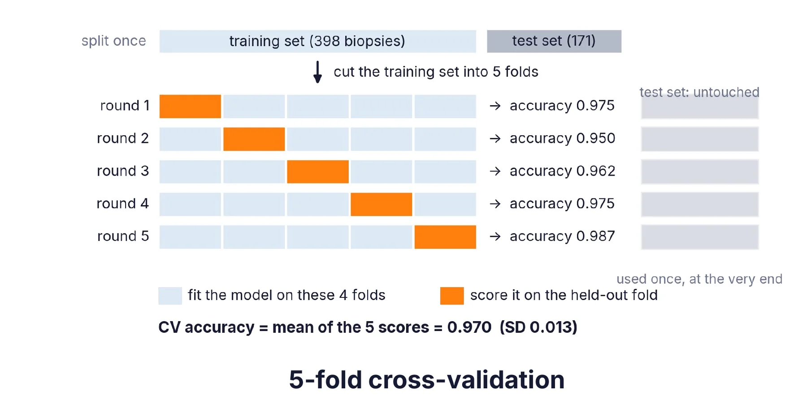
- test set은 손대지 않는다. training set 안에서 데이터를 5개 fold로 나눈다.
- 한 fold씩 빼고 나머지 4 fold로 fit한 뒤, 뺀 fold로 점수를 잰다. 5개 점수를 평균하며, 슬라이드에서는 0.970(SD 0.013)이다.
- k=1, 3, …, 51 중 CV accuracy가 가장 높은 값은 k=9다.
- test set은 마지막에 단 한 번만 쓴다. k=9의 test accuracy는 0.947이다.
- 왜 test로 k를 고르면 안 되나? test로 고르면 test가 더 이상 "본 적 없는 데이터"가 아니다. 모델 선택에 test 정보가 새어 들어가, 성능이 낙관적으로 부풀려진다.
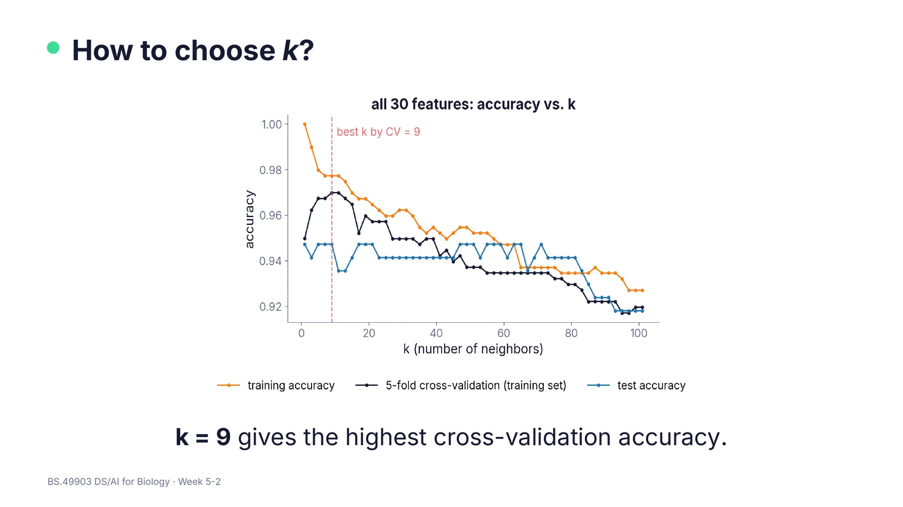
4.9 cross-validation: 왜 5번 돌려 평균하나 (5/6) W5-2 p14–15 · 실습 W5 5.3
test set은 한 번만 보는 수능이고, cross-validation은 모의고사 5번이다.
문제집(training set 398개)을 5묶음으로 나눈다. 4묶음으로 공부하고 남은 1묶음으로 시험 보기를 돌아가며 5번 한다. 그 점수 평균으로 "공부법(k)"을 고른다.
수능 문제를 미리 보고 공부법을 고르면 수능 점수가 실력보다 높게 나온다. 같은 이유로 test로 k를 고르면 안 된다.
예(p14): 5번의 점수가 0.975, 0.950, 0.962, 0.975, 0.987이면 평균은 0.970이다.
검증용 묶음 하나만 쓰면, 그 묶음에 우연히 어떤 샘플이 들어갔느냐에 따라 점수가 흔들린다. p14에서도 fold별 점수가 0.950~0.987로 다르다.
5번 돌리면 모든 training 샘플이 정확히 한 번씩 검증에 쓰이고, 평균도 더 안정적이다. 흔들림의 크기도 SD 0.013으로 함께 보고한다.
k를 고른 뒤 최종 모델은 training set 전체로 다시 fit한다. 그다음 test에서 한 번 평가한다(실습: k=9에서 0.947).
4.9 cross-validation: 함정과 답안 (6/6) W5-2 p14–15 · 실습 W5 5.3
- CV는 test set을 5조각으로 나눠서 한다.CV는 training set 안에서만 한다. test set은 끝까지 손대지 않는다(untouched).
- CV 최고 점수 0.970을 최종 성능으로 보고한다.최종 성능은 test에서 한 번 잰 값(0.947)이다. 26개 k 중 최고값을 골랐기 때문에 CV 최고점은 약간 낙관적이다. 추론
- 5-fold는 데이터를 5번 무작위로 다시 나눠 매번 test하는 것이다.한 번 5조각으로 나눈 뒤, 각 조각이 한 번씩 검증 fold가 된다.
- training accuracy가 가장 높은 k를 고른다.그러면 항상 k=1(train 1.00)이 뽑힌다. 그래서 처음 보는 fold로 잰 CV accuracy를 쓴다.
- k-NN의 k와 k-fold의 k는 같은 것이다.k-NN의 k는 이웃 수이고, k-fold의 k는 조각 수로 전혀 다른 숫자다. 여기서는 k-NN의 k가 9이고 fold는 5개다.
k는 사람이 정하는 하이퍼파라미터(hyperparameter)이므로 test set을 보지 않고 골라야 한다. training set을 5 fold로 나누고, 4 fold로 fit한 뒤 남은 fold로 점수를 잰다. 이를 5번 돌려 평균하면 CV accuracy(0.970)가 된다. CV accuracy가 가장 높은 k = 9로 training set 전체에 다시 fit한다. 그다음 손대지 않은 test set에서 한 번만 평가한다(0.947). test 점수로 k를 고르면 test 정보가 모델 선택에 새어 들어가, 성능이 낙관적으로 추정된다.
“How should the number of neighbors k in k-NN be chosen? Why should it not be chosen by test-set accuracy?”
키워드: hyperparameter(하이퍼파라미터) · 5-fold cross-validation(5겹 교차검증) · validation fold(검증 fold) · held-out test set(따로 떼어 둔 test set) · information leakage(정보 누출) · optimistic estimate(낙관적 추정)
4.10 k-means: 어떻게 작동하나 (1/5) 교수님 예시 문제W5-2 p16–21 · notebook 6 · W7 p2
k-means는 label 없이 작동하는 비지도(unsupervised) 방법이다. 샘플을 k개 그룹으로 나누며, k는 사용자가 정한다.
각 그룹은 중심(centroid), 즉 소속 샘플들의 평균으로 요약한다. 모든 샘플은 가장 가까운 centroid의 클러스터에 속한다.
목표는 그룹을 모르는 상태에서 가능한 한 촘촘한(tight) k개 그룹을 찾는 것이다.
- 초기화: k개 centroid를 정한다. 초기화는 결과에 중요하다.
- sklearn의 기본값은 k-means++다. 첫 centroid는 무작위 샘플로 정한다.
- 다음 centroid는 확률적으로 뽑는다. 샘플 x에서 가장 가까운 기존 centroid까지의 거리를 $D(x)$라 하면, x가 뽑힐 확률은 $D(x)^2$에 비례한다. 그래서 시작점들이 퍼진다.
- 예를 들어 거리가 1인 점과 3인 점이 있으면, 거리 3인 점이 뽑힐 확률이 9배 높다.
- 슬라이드 p18은 "거리에 비례"처럼 적었지만 이는 오타다. 원래 k-means++ 알고리즘과 sklearn은 거리의 제곱에 비례한다. 답안에는 $D(x)^2$로 쓴다. 자료 외 보충
- 대안인 random 초기화는 무작위 샘플 k개로 시작하며, local minimum에 빠질 수 있다.
- 할당: 각 샘플에서 k개 centroid까지 Euclidean 거리를 재고, 가장 가까운 centroid에 할당한다. 두 centroid 사이의 경계는 수직이등분선이므로, 암묵적 경계는 2D에서는 직선, 3D에서는 평면, 그보다 높은 차원에서는 초평면(hyperplane)이다.
- 갱신: centroid를 소속 샘플의 평균으로 옮긴다. 그리고 2단계로 돌아가며, 클러스터가 더 이상 바뀌지 않으면 멈춘다.
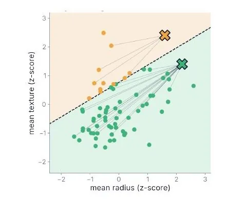
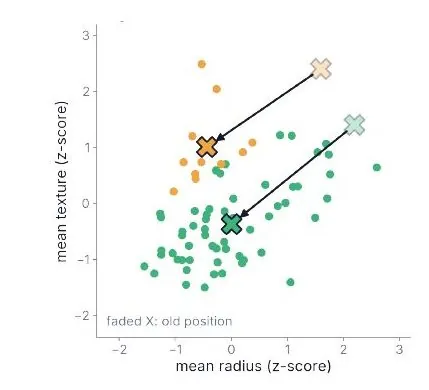
4.10 k-means: 손으로 돌려 보기 (2/5) W5-2 p18–21
k개의 모임 장소를 아무 데나 정한다.
- 모든 사람이 자기에게 가장 가까운 장소로 걸어간다.
- 각 장소를 거기 모인 사람들의 한가운데, 즉 평균 위치로 옮긴다.
- 장소가 옮겨졌으니 다시 1번으로 돌아간다. 더 가까워진 장소로 갈아타는 사람이 생길 수 있다.
아무도 장소를 바꾸지 않으면 끝난다. "평균 위치"는 좌표마다 평균을 낸 점이다. 예를 들어 (1,2)와 (3,4)의 평균은 (2,3)이다.
1차원 예 자료 외 보충: 점 1, 2, 3, 10, 11, 12를 k = 2로 나눈다. 일부러 나쁜 시작을 골라, p18 그림처럼 두 centroid를 모두 한쪽인 1과 2에 둔다.
| 단계 | 클러스터 A | 클러스터 B | J (제곱거리 합) |
|---|---|---|---|
| 할당 (centroid 1, 2) | {1} | {2, 3, 10, 11, 12} | 0 + (0+1+64+81+100) = 246 |
| 갱신 | 평균 1 | 평균 38/5 = 7.6 | 89.2 |
| 할당 (centroid 1, 7.6) | {1, 2, 3} | {10, 11, 12} | 41.68 |
| 갱신 | 평균 2 | 평균 11 | 4 |
| 할당 | {1, 2, 3} | {10, 11, 12} | 4. 변화가 없으므로 종료 |
J는 246, 89.2, 41.68, 4로 줄어들며 한 번도 늘지 않는다. 그 이유는 다음 슬라이드에서 설명한다.
J는 두 종류의 미지수에 달려 있다. 하나는 누가 어느 클러스터인가(할당)이고, 다른 하나는 centroid의 위치다.
할당의 경우의 수는 최대 $k^n$개다. 샘플이 569개이면 천문학적으로 많다.
둘을 동시에 최적화하기는 어렵지만, 하나를 고정하면 다른 하나는 쉽다. centroid가 정해지면 최적 할당은 "가장 가까운 centroid"이고, 할당이 정해지면 최적 centroid는 "평균"이다. 그래서 둘을 번갈아 푼다.
두 centroid가 한 덩어리 안에 놓인 나쁜 시작을 생각하자. 그러면 실제 그룹 하나가 둘로 쪼개지고, 다른 그룹 둘이 합쳐진 상태에서 멈출 수 있다. 이것이 local minimum이다.
k-means++는 기존 centroid에서 먼 샘플일수록 높은 확률로 다음 centroid를 뽑는다. 그래서 시작점들이 서로 다른 덩어리에 놓일 가능성이 높아진다.
"가장 먼 점"을 고정으로 고르는 것이 아니라 확률적으로 뽑는다. 가장 먼 점만 고르면 outlier를 고르기 쉽기 때문이다. 추론
4.10 k-means: 어떻게 작동하나 (3/5) 교수님 예시 문제W5-2 p16–21 · notebook 6
무엇을 최적화하나: within-cluster sum of squares
$$\text{Inertia}=J=\sum_{i=1}^{k}\sum_{\mathbf x\in C_i}\|\mathbf x-\boldsymbol\mu_i\|^2$$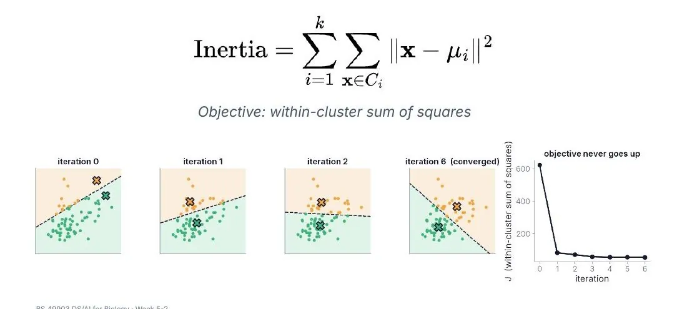
두 단계가 각각 J를 한 종류의 변수에 대해 최소화한다.
할당 단계: centroid를 고정하고 각 점을 가장 가까운 centroid로 옮긴다. 그러면 그 점의 $\|\mathbf x-\boldsymbol\mu\|^2$ 항은 줄거나 같다.
갱신 단계: 할당을 고정하면, $\sum_{\mathbf x\in C}\|\mathbf x-\mathbf c\|^2$을 최소로 하는 $\mathbf c$는 평균이다. 미분하면 $\mathbf c=\bar{\mathbf x}$가 나온다. 즉 제곱거리의 합은 평균에서 가장 작다. 1장 Bessel 보정에서 $\sum(x_i-\bar x)^2\le\sum(x_i-\mu)^2$라고 한 것도 같은 사실이다.
따라서 J는 반복할 때마다 줄거나 그대로다. 즉 증가하지 않는다(단조 비증가). 할당의 경우의 수가 유한하므로 알고리즘은 수렴한다.
단, 전역 최소는 보장되지 않는다(local minimum). 그래서 n_init=10처럼 여러 초기값으로 돌려, inertia가 가장 작은 결과를 쓴다.
갱신 단계의 미분은 다음 한 줄이다. 자료 외 보충
$$\frac{\partial}{\partial\mathbf c}\sum_{\mathbf x\in C}\|\mathbf x-\mathbf c\|^2=-2\sum_{\mathbf x\in C}(\mathbf x-\mathbf c)=\mathbf 0\;\Rightarrow\;\mathbf c=\frac1{|C|}\sum_{\mathbf x\in C}\mathbf x$$notebook에서 표준화 데이터를 k=2로 군집하면 inertia는 11596이고, centroid의 shape은 (2, 30)이다.
cluster ID(0/1)는 임의의 번호다. 그래서 진단과 비교할 때는 다수결로 이름을 붙인다.
4.10 k-means: 용도와 함정 (4/5) 교수님 예시 문제W5-2 p16–24 · 실습 W5 6 · W7 p2
- 해결하는 문제: 정답(label) 없이 비슷한 샘플끼리 묶고 싶을 때 쓴다. 예를 들어 유방암 생검 569개를 2개 클러스터로 나누고 나중에 진단과 비교하면 91%가 일치한다.
- 언제 쓰나: 그룹이 대체로 둥글고 퍼짐(spread)이 비슷할 것 같을 때 쓴다. elbow나 silhouette로 그룹 수 k를 정할 수 있을 때, 그리고 feature를 표준화했을 때 쓴다. (4.11)
- k-means는 빠르고 단순하며, 각 그룹을 centroid로 요약해 준다.
- 언제 쓰면 안 되나: 휘어지거나 길쭉한 모양, 퍼짐이 크게 다른 그룹에는 맞지 않는다.
- 노이즈나 outlier가 많은 데이터에도 맞지 않는다. 모든 점을 어딘가에 넣기 때문이다. (4.11 (4/5))
- 새 샘플:
km.predict는 새 샘플을 가장 가까운 centroid의 클러스터에 넣는다.
- J가 반복마다 줄어드니까 결국 전역 최솟값에 도달한다.J가 늘지 않으며 수렴하는 것은 보장되지만, 멈춘 곳이 지역 최솟값(local minimum)일 수 있다. 그래서 초기값을 바꿔 여러 번 실행하고(
n_init=10) inertia가 가장 작은 결과를 쓴다. - J는 각 점과 centroid 사이 거리의 합이다.J는 거리의 제곱 합이다. 제곱이기 때문에 최적 centroid가 평균이 되며, 거리의 합이라면 최적점이 평균이 아니다. 자료 외 보충
- centroid는 클러스터 안의 실제 샘플 하나다.centroid는 소속 샘플의 평균이라 실제 샘플이 아닐 수 있다. 단, k-means++의 초기 centroid는 실제 샘플 중에서 뽑는다.
- k-means++는 가장 먼 점을 다음 centroid로 고른다.먼 점일수록 높은 확률로, 무작위로 뽑는다. 확률은 가장 가까운 기존 centroid까지 거리의 제곱 $D(x)^2$에 비례한다. 슬라이드의 "거리에 비례"는 오타다. 자료 외 보충
- 수렴은 J가 0이 된다는 뜻이다.할당이 더 이상 바뀌지 않을 때 멈춘다. J는 0이 아니어도 되며, 앞의 1차원 예에서는 4였다.
- cluster 0은 malignant다.클러스터 번호는 임의다. 진단과 비교할 때 다수결로 이름을 붙인다.
4.10 k-means: 시험 답안 (5/5) 교수님 예시 문제W5-2 p16–24 · 실습 W5 6
k-means는 label 없이 n개 샘플을 k개 클러스터로 나누는 비지도(unsupervised) 방법이다. k는 사용자가 정한다.
- 중심(centroid) k개를 초기화한다. k-means++에서는 첫 centroid를 무작위 샘플로 정한다. 이후에는 가장 가까운 기존 centroid까지의 거리 D(x)가 큰 샘플일수록 높은 확률로 뽑으며, 확률은 D(x)²에 비례한다.
- 각 샘플을 Euclidean 거리가 가장 가까운 centroid에 할당한다.
- 각 centroid를 소속 샘플의 평균으로 옮긴다.
- 할당이 바뀌지 않을 때까지 2–3단계를 반복한다.
목적함수는 within-cluster sum of squares J = ΣiΣx∈Ci‖x − μi‖²이며, inertia라고도 부른다. 할당 단계와 평균 단계가 각각 J를 줄이거나 유지하므로 알고리즘은 수렴한다. 하지만 지역 최솟값(local minimum)에서 멈출 수 있다. 그래서 n_init=10처럼 여러 초기값으로 돌려, J가 가장 작은 해를 쓴다. Euclidean 거리를 쓰므로 feature는 먼저 표준화한다.
“How does k-means work? What does it minimize, and is it guaranteed to find the global minimum?”
키워드: centroid(중심) · k-means++ initialization(k-means++ 초기화) · assignment / update step(할당 / 갱신 단계) · inertia / within-cluster sum of squares(군집 내 제곱합) · convergence(수렴) · local minimum(지역 최솟값) · n_init(초기화 반복 횟수)
4.11 클러스터 수 정하기 & k-means의 가정 (1/5) W5-2 p22–24 · notebook 6.2–6.3
- Elbow: inertia의 감소가 꺾이는 곳을 고른다. 클러스터를 더 늘려도 더 이상 이득이 없는 곳이다.
- 단, 최적 inertia는 k가 커질수록 줄어들기만 하고, k=n이면 0이 된다. 그래서 inertia 최솟값으로는 k를 고를 수 없다.
- 실제 실행에서는 local minimum 때문에 드물게 예외가 생긴다. 자료 외 보충
- Silhouette: 각 샘플이 가장 가까운 다른 클러스터보다 자기 클러스터에 얼마나 더 가까운지를 나타낸다. 값의 범위는 −1에서 1이다.
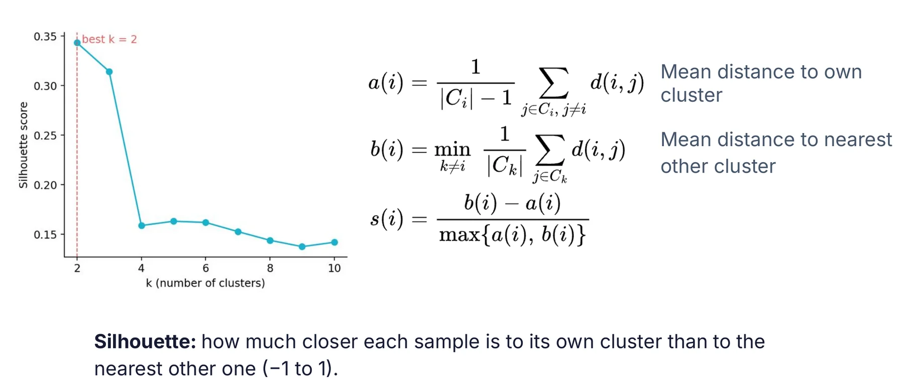
$a(i)$는 자기 클러스터 안의 다른 점들까지의 평균 거리(mean distance to own cluster)다.
$b(i)$는 가장 가까운 다른 클러스터까지의 평균 거리(mean distance to nearest other cluster)다.
슬라이드 표기 "$k\ne i$"는 "i가 속하지 않은 클러스터 k"라는 뜻이다.
$$s(i)=\frac{b(i)-a(i)}{\max\{a(i),b(i)\}}$$$s\approx1$이면 잘 분리된 것이고, $s\approx0$이면 경계에 있는 것이다. $s\lt0$이면 잘못 배정된 것으로 보인다.
breast cancer에서는 k=2일 때 0.343으로 가장 높다. k=3이면 0.314, k=4이면 0.159다. k=1에서는 silhouette가 정의되지 않는다.
| k | 1 | 2 | 3 | 4 | 5 | 6 | 7 |
|---|---|---|---|---|---|---|---|
| inertia | 17070 | 11596 | 10062 | 9330 | 8556 | 7967 | 7536 |
| silhouette | – | 0.343 | 0.314 | 0.159 | 0.163 | 0.162 | 0.153 |
4.11 k 고르기: 왜 inertia로는 안 되고 silhouette는 되나 (2/5) W5-2 p22–23 · 실습 W5 6.2
silhouette는 샘플 하나에게 두 거리를 비교하게 한다. 하나는 같은 반 친구들까지의 평균 거리 a이고, 다른 하나는 가장 가까운 옆 반 학생들까지의 평균 거리 b다.
a = 2, b = 5이면 s = (5 − 2)/5 = 0.6이다. 자기 반에 잘 맞는다는 뜻이다.
a = b이면 s = 0이며, 두 반의 경계에 있다는 뜻이다.
a = 5, b = 2이면 s = (2 − 5)/5 = −0.6이다. 옆 반이 더 가까우므로 반 배정이 잘못된 듯하다.
모든 샘플의 s를 평균한 값이 silhouette score다. 자료 외 보충
- 왜 inertia는 k를 못 고르나: 클러스터를 하나 더 주면, 기존 클러스터 하나를 둘로 쪼개기만 해도 제곱거리 합이 줄거나 같다. 그래서 최적 inertia는 k에 대해 줄어들기만 하고, k = n이면 0이다.
- "작을수록 좋다"로 고르면 항상 가장 큰 k가 뽑힌다. 그래서 감소폭이 꺾이는 곳(elbow)을 본다.
- 유방암의 감소폭은 k가 1에서 2로 갈 때 5474, 2에서 3으로 갈 때 1534, 3에서 4로 갈 때 732다. k=2 이후 이득이 급감한다.
- 꺾이는 점은 눈으로 판단하므로 주관적이다.
- 왜 silhouette는 고를 수 있나: 촘촘함(a)과 분리(b)를 함께 본다.
- 실제 한 그룹을 억지로 둘로 쪼개면, 그 점들의 "가장 가까운 다른 클러스터"가 바로 옆 반쪽이 된다. 그러면 a도 조금 줄지만 b가 크게 작아져, s가 대체로 감소한다. 추론
- 그래서 과하게 쪼개면 점수가 떨어진다. silhouette가 최대인 k를 고르며, 유방암에서는 k=2(0.343)다.
- 왜 k=1에서 정의되지 않나: "다른 클러스터"가 없어 b(i)를 계산할 수 없다. 실습 코드도
if k > 1 else np.nan으로 처리한다.
4.11 k 고르기: 틀리기 쉬운 것 (3/5) W5-2 p22–23 · 실습 W5 6.2
- inertia가 가장 작은 k가 최적이다.그러면 항상 가장 큰 k가 뽑힌다. 꺾이는 곳(elbow)을 보거나, silhouette가 최대인 k를 고른다.
- silhouette는 각 점과 centroid 사이 거리로 계산한다.a(i)와 b(i)는 클러스터 안 모든 점까지의 평균 거리다.
- s(i) < 0이면 그 점이 자기 클러스터에 아주 촘촘히 붙어 있다는 뜻이다.s < 0은 a > b, 즉 옆 클러스터가 더 가깝다는 뜻이다. 잘못 배정된 듯하다.
- a(i)의 분모는 |C_i|다.거리가 0인 자기 자신을 빼므로 분모는 |C_i| − 1이다. b(i)는 다른 클러스터에 대한 평균이라 분모가 |C_k|다.
- silhouette가 최대인 k가 생물학적으로 맞는 그룹 수다.silhouette는 기하학적 기준일 뿐이다. 비지도 결과는 유용성, 안정성, 생물학으로 판단한다. 추론 (W5-2 p7)
4.11 클러스터 수 정하기 & k-means의 가정 (4/5) W5-2 p22–24 · notebook 6.2–6.3
k-means는 세 가지를 가정한다. 클러스터가 둥글고(round), 모든 클러스터의 퍼짐이 비슷하며, 모든 점이 어딘가에 속한다는 것이다.
마지막 가정 때문에 노이즈나 outlier가 centroid를 끌어당긴다.
또 Euclidean 거리를 쓰므로 표준화가 중요하다. 표준화하면 진단과 91%가 일치하고 불일치는 54개다. raw feature를 쓰면 85%가 일치하고 불일치는 83개다.
raw에서는 SD가 수백인 area류 feature가 거리를 지배하기 때문이다.
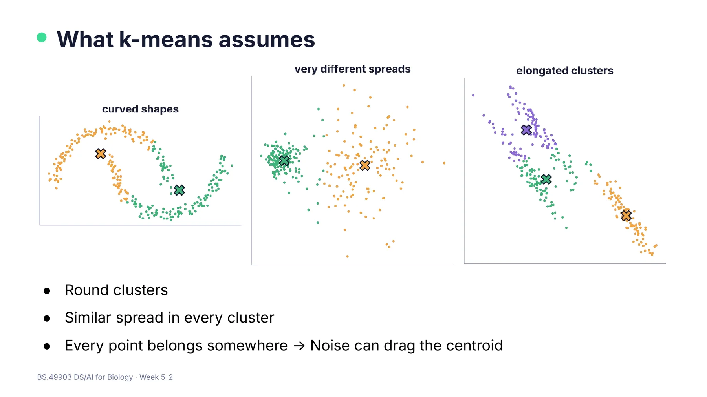
- 둥근 모양: 각 클러스터를 점 하나(centroid)와, 모든 방향에 똑같은 Euclidean 거리로 대표한다. 그래서 경계가 두 centroid의 수직이등분선이 된다.
- 이 경계는 직선이나 초평면이다. 그래서 휘어진 초승달이나 길쭉한 띠 모양을 따라갈 수 없다.
- 비슷한 퍼짐: 경계가 두 centroid의 정확히 중간에 놓인다. 그래서 넓게 퍼진 그룹의 바깥쪽 점이 좁은 그룹의 centroid에 더 가까우면, 그 점은 좁은 그룹으로 넘어간다.
- 모든 점이 어딘가에 속함: "노이즈" 범주가 없어서 outlier도 강제로 한 클러스터에 들어간다. 또 목적함수가 거리의 제곱이라 centroid가 평균이 된다. 평균은 먼 점 하나에도 크게 끌리므로, outlier 하나가 centroid를 크게 끌어당긴다.
대안 자료 외 보충: 밀도 기반 군집인 DBSCAN은 노이즈 점을 따로 표시하고 임의 모양을 찾는다. Gaussian mixture는 타원 모양과 서로 다른 퍼짐을 다룬다. 계층적 군집도 있다. 수업 범위 밖이므로 이름 정도만 알아 둔다.
4.11 k-means의 가정: 함정과 답안 (5/5) W5-2 p16–24 · 실습 W5 6.1–6.3
- k-means는 어떤 모양의 클러스터든 찾는다.경계가 직선이나 초평면이라, 휘어지거나 길쭉한 모양을 따라가지 못한다.
- k-means는 outlier를 알아서 무시한다.모든 점이 어딘가에 속하므로 outlier도 클러스터에 들어가 centroid를 끌어당긴다.
- 표준화 여부는 군집 결과에 큰 차이가 없다.진단과의 일치율은 표준화하면 91%, raw feature면 85%다. 불일치 샘플도 54개에서 83개로 늘어나는데, raw에서는 area류가 거리를 지배하기 때문이다.
- k-means는 같은 데이터면 항상 같은 결과를 낸다.초기 centroid에 따라 다른 local minimum에 도달한다. 그래서
random_state를 고정하거나,n_init으로 여러 번 실행해 가장 좋은 결과를 고른다.
How does k-means work? What does it optimize, and why can it end in different solutions?
- k를 정하고 centroid k개를 초기화한다. k-means++에서는 첫 점을 무작위로 뽑는다. 이후에는 가장 가까운 기존 centroid까지의 거리 D(x)가 큰 점일수록 높은 확률로 뽑으며, 확률은 D(x)²에 비례한다.
- 각 샘플을 Euclidean 거리로 가장 가까운 centroid에 할당한다.
- 각 centroid를 소속 샘플의 평균으로 옮긴다.
- 할당이 바뀌지 않을 때까지 2–3단계를 반복한다.
목적함수는 within-cluster sum of squares $J=\sum_i\sum_{x\in C_i}\|x-\mu_i\|^2$이며, inertia라고도 부른다. 할당 단계와 평균 단계 모두 J를 줄이거나 유지하므로 수렴한다.
그러나 J의 지형은 바닥이 하나뿐인 그릇 모양(볼록, convex)이 아니다. 골짜기(local minimum)가 여러 개라서, 초기값에 따라 서로 다른 골짜기에 멈춘다. 예를 들어 두 centroid가 한 덩어리 안에서 출발하면, 그 덩어리를 둘로 쪼갠 채 멈출 수 있다. 그래서 여러 번 초기화(n_init)해 J가 가장 작은 해를 고른다.
k는 elbow나 silhouette로 고른다. k-means는 둥글고 퍼짐(spread)이 비슷한 클러스터를 가정하고, outlier에 민감하며, feature 표준화가 필요하다.
최적 inertia는 k가 커질수록 줄어들기만 하고, k = n이면 0이 된다. 그래서 최솟값으로는 k를 고를 수 없다. 대신 감소가 꺾이는 elbow를 보거나, 평균 실루엣(silhouette)이 최대인 k를 고른다. 실루엣 s(i) = (b − a)/max(a, b)는 −1과 1 사이의 값이다. a는 자기 클러스터 안의 평균 거리이고, b는 가장 가까운 다른 클러스터까지의 평균 거리다. 유방암에서는 k = 2일 때 0.343으로 가장 높다. k-means는 둥글고 퍼짐이 비슷한 클러스터를 가정하고, 모든 점을 어딘가에 배정한다. 그래서 휘어지거나 길쭉한 모양, 퍼짐이 크게 다른 그룹, outlier가 있으면 실패한다.
“How would you choose the number of clusters k for k-means? What does k-means assume about the clusters, and when does it fail?”
키워드: inertia(군집 내 제곱합) · elbow method(엘보 방법) · silhouette score(실루엣 점수) · nearest other cluster(가장 가까운 다른 클러스터) · similar spread(비슷한 퍼짐) · curved / elongated clusters(휘어진 / 길쭉한 클러스터) · outlier(이상값)
4.12 k-NN vs k-means (헷갈리기 쉬움) W5-2 p7–8, p16–17
| k-NN | k-means | |
|---|---|---|
| 종류 | 지도 학습 분류기 (supervised classifier) | 비지도 군집 (unsupervised clustering) |
| k의 의미 | 투표할 이웃 수 | 클러스터 수 |
| 학습 | 없음. 데이터를 저장해 두고 예측할 때 계산한다. | centroid를 반복 갱신한다 (inertia 최소화). |
| k 선택 | cross-validation accuracy | elbow, silhouette (정답 label 없음) |
| label 필요? | 예 (training 샘플마다) | 아니오 (나중에 비교만) |
| 출력 | 새 샘플의 class와 투표 비율 (predict_proba) | 샘플마다 임의 번호인 cluster ID, 그리고 centroid (cluster_centers_) |
| 새 샘플 | knn.predict: k개 이웃의 다수결 | km.predict: 가장 가까운 centroid |
| 공통점 | 둘 다 Euclidean 거리를 쓰므로 feature 표준화가 필수다. | |
- k-NN의 k와 k-means의 k는 같은 역할을 한다.k-NN의 k는 이웃 수이고, k-means의 k는 클러스터 개수다. k-NN의 k를 늘려도 그룹 수는 그대로 2 class다.
- k-means도 k-NN처럼 학습이 없다.k-means는 할당과 갱신을 반복해 J를 최소화하는 반복 최적화다. 학습이 없는 것은 k-NN이다.
- 둘 다 예측할 때 모든 training 샘플까지 거리를 계산한다.k-NN은 그렇지만, k-means는 새 샘플을 k개 centroid와만 비교한다.
- k-NN의 predict_proba와 k-means의 cluster ID는 둘 다 확률이다.predict_proba는 투표 비율이고, cluster ID는 임의의 번호다.
k-NN은 지도 학습 분류기(supervised classifier)다. label이 붙은 training 샘플을 저장해 두고, 새 샘플을 가장 가까운 k개 이웃의 다수결로 분류한다. k-means는 비지도 군집(unsupervised clustering) 방법이다. label 없이 k개 centroid를 반복 갱신해 within-cluster sum of squares를 최소화한다. k-NN의 k는 이웃 수이며 cross-validation으로 고른다. k-means의 k는 클러스터 수이며 elbow나 silhouette로 고른다. 둘 다 Euclidean 거리를 쓰므로 표준화가 필요하다.
“Compare k-NN and k-means. What does k mean in each method, and how is it chosen?”
키워드: supervised classifier(지도 학습 분류기) · unsupervised clustering(비지도 군집) · majority vote(다수결) · number of neighbors(이웃 수) · number of clusters(클러스터 수) · Euclidean distance(유클리드 거리)
4.13 서술형 대비: "왜?" 질문 모음 W5-1 · W5-2 · 실습 W5
먼저 답을 말해 본 뒤 펼친다. 각 답은 15분 서술형의 뼈대 수준이다.
Why must features be standardized before PCA, k-NN and k-means?
PCA는 사영 분산을 최대화하고, k-NN과 k-means는 Euclidean 거리(feature별 차이를 제곱해 더한 뒤 제곱근을 씌운 값)를 쓴다. 둘 다 숫자 크기에 직접 반응하므로, 단위 때문에 분산이 큰 feature가 결과를 지배한다. 예를 들어 mean area의 SD는 352다.
강의 도식에서 raw PC1은 큰 단위 축 x₁ 하나와 거의 같고 97%를 담는다. (W5-1 p7)
유방암 k-means의 진단 일치율도 raw에서 85%, 표준화 후 91%다.
z = (x − μ)/σ로 모든 feature를 평균 0, SD 1로 맞추면 각 feature가 비슷하게 기여한다. supervised 평가에서는 scaler를 training set에만 fit한다.
Why does the explained variance ratio use σ_k² rather than σ_k?
SVD에서 $X\mathbf v_k=\sigma_k\mathbf u_k$이고 $\|\mathbf u_k\|=1$이다. 따라서 PC k 방향의 분산은 다음과 같다.
$$\|X\mathbf v_k\|^2/(n-1)=\sigma_k^2/(n-1)$$분산은 σ의 제곱에 비례하고, 비율에서는 n−1이 약분되어 $\sigma_k^2/\sum\sigma_i^2$가 된다. 이는 공분산 행렬의 고윳값 λ로 쓴 $\lambda_k/\sum\lambda$와 같다.
Why are the principal components orthogonal?
PC2는 PC1이 설명한 부분을 뺀 잔차 $X_1=X-(X\mathbf v_1)\mathbf v_1^T$에서 찾는다. $X_1\mathbf v_1=\mathbf 0$이므로, 잔차에는 v₁ 방향 분산이 전혀 없다.
그래서 최대 분산 방향 v₂는 v₁에 수직이다. 이를 반복하면 모든 PC가 서로 직교하며, 이는 SVD의 V 열들이 서로 직각이고 길이가 1이라는 것(직교행렬)과 같다.
Why can't we read cluster sizes or distances between clusters from a UMAP plot?
- Step 1에서 점마다 ρᵢ, σᵢ로 거리를 정규화해, 밀집 영역과 희박 영역이 비슷하게 보인다. 그래서 크기와 밀도 정보가 사라진다.
- Step 3의 손실은 연결된 이웃만 당기고, 연결 안 된 점은 "충분히 멀리" 밀어낼 뿐이다. 목표 거리가 없으므로 클러스터 간 거리는 임의다.
- n_neighbors, min_dist, random_state에 따라 그림이 바뀐다.
- 임베딩이 X × 행렬이 아니므로 축에도 의미가 없다.
보존되는 것은 국소 이웃 관계뿐이다.
Explain the roles of n_neighbors and min_dist in UMAP.
n_neighbors는 Step 1의 고차원 이웃 그래프에서 각 점이 몇 개의 이웃과 연결되는지를 정한다(local vs global). 값이 5처럼 작으면 세부는 보이지만 데이터가 가닥으로 쪼개진다. 100처럼 크면 전체 모양은 유지되지만 국소 구조가 뭉개진다.
min_dist는 2D 유사도 v′가 평평한 구간(d ≤ min_dist에서 1)을 정한다. 즉 2D에서 점들이 얼마나 촘촘히 뭉칠 수 있는지를 정한다. 0.0이면 이웃이 겹쳐 쌓이고, 0.9면 고르게 퍼진다.
Why does k = 1 give training accuracy 1.0 in k-NN, and why is that not evidence of a good model?
training 샘플의 가장 가까운 이웃은 거리가 0인 자기 자신이다. 그래서 중복 샘플이 없다면 항상 자기 label을 맞힌다.
이것은 training set을 외운 것이다. 경계가 모든 점을 따라가는 high variance 상태라, 새 샘플 성능에 대해서는 아무것도 말해 주지 않는다.
그래서 k는 처음 보는 fold로 잰 cross-validation accuracy로 고른다(k = 9).
Why must k be chosen by cross-validation and not by the test set?
test set은 처음 보는 데이터에서의 성능을 추정하기 위한 것이다. test 점수로 k를 고르면 test 정보가 모델 선택에 새어 들어가, 최종 성능이 낙관적으로 부풀려진다.
그래서 training set을 5 fold로 나눠 돌아가며 검증하고, 평균(0.970)이 가장 높은 k를 고른다. test는 마지막에 한 번만 쓴다(0.947).
Prove that the k-means objective never increases. Does k-means find the global minimum?
할당 단계에서는 centroid를 고정하고 각 점을 가장 가까운 centroid로 옮긴다. 그러면 그 점의 $\|x-\mu\|^2$는 줄거나 같다.
갱신 단계에서는 할당을 고정한다. $\sum_{x\in C}\|x-c\|^2$을 c로 미분하면 $-2\sum(x-c)=0$이므로, c가 평균일 때 최소가 된다. 따라서 J는 줄거나 같다.
그러므로 J는 단조 비증가이고, 가능한 할당이 유한하므로 수렴한다.
하지만 local minimum일 수 있어 전역 최소는 보장되지 않는다. 그래서 k-means++ 초기화를 쓰고, n_init으로 여러 번 실행해 J가 가장 작은 해를 쓴다.
Why can't inertia alone choose the number of clusters, and what does the silhouette add?
k를 늘리면 기존 클러스터를 쪼개기만 해도 제곱거리 합이 줄어든다. 그래서 최적 inertia는 k에 대해 감소만 하고 k = n이면 0이 되며, 최솟값을 기준으로 하면 항상 최대 k가 뽑힌다.
elbow는 감소폭이 꺾이는 곳을 보는 방법이며, 주관적이다.
silhouette는 자기 클러스터까지의 평균 거리 a와, 가장 가까운 다른 클러스터까지의 평균 거리 b를 비교해 s = (b − a)/max(a, b)를 계산한다. 그룹을 억지로 쪼개면 b가 작아져 점수가 떨어지므로, 평균 s가 최대인 k를 고른다(유방암 k = 2, 0.343).
What does k-means assume, and what happens when the assumptions fail?
k-means는 둥근 클러스터, 비슷한 퍼짐, 그리고 모든 점이 어딘가에 속한다는 것을 가정한다.
경계가 두 centroid의 수직이등분선(직선이나 초평면)이라, 휘어지거나 길쭉한 클러스터는 잘못 잘린다. 퍼짐이 다르면 넓은 그룹의 바깥 점을 좁은 그룹이 가져간다.
outlier도 강제로 배정되어 centroid를 끌어당긴다. Euclidean 거리를 쓰므로 표준화도 필요하다(91% 대 85%). (W5-2 p24)
4.✎ 영어 용어 정리 시험 문제는 영어로 나온다
문제에서 이 단어가 보이면 무엇을 묻는지 바로 떠올릴 수 있어야 한다. 답은 한국어로 써도 되지만, 용어는 영어 그대로 써도 좋다.
| English | 한국어 | 한 줄 뜻 |
|---|---|---|
| dimensionality reduction | 차원축소 | feature 수 p를 줄여 저차원 지도를 만든다. 샘플 수 n은 그대로다. |
| principal component (PC) | 주성분 | 분산이 최대인 길이 1의 방향이다. 30개 feature 전부의 가중합이다. |
| projection / PC score | 사영 / 주성분 점수 | 점을 축에 수직으로 내린 그림자다. score는 그 축 위의 좌표 $\mathbf x\cdot\mathbf w$이며 숫자 1개다. |
| unit vector / orthonormal basis | 단위벡터 / 정규직교 기저 | 단위벡터는 길이가 1인 벡터이고, 정규직교 기저는 서로 직교하는 단위벡터의 묶음이다. 사영 식 $(\mathbf a\cdot\mathbf u)\mathbf u$는 $\|\mathbf u\|=1$일 때만 맞다. |
| variance maximization | 분산 최대화 | PC1은 $\arg\max_{\|\mathbf v\|=1}\|\mathbf X\mathbf v\|$다. 평균이 0이면 $\mathrm{Var}(\mathbf X\mathbf v)=\|\mathbf X\mathbf v\|^2/(n-1)$이다. |
| deflation | 찾은 성분 빼기 | PC1 성분을 뺀 잔차 $\mathbf X_1=\mathbf X-(\mathbf X\mathbf v_1)\mathbf v_1^T$에서 다음 PC를 찾는다. 그래서 PC끼리 직교한다. |
| singular value decomposition (SVD) | 특잇값 분해 | 모든 행렬을 $\mathbf X=\mathbf U\boldsymbol\Sigma\mathbf V^T$로 분해한다. $\mathbf V^T$의 행이 PC이고, score는 $\mathbf Z=\mathbf X\mathbf V_k$다. |
| singular value | 특잇값 | $\boldsymbol\Sigma$의 대각 원소 $\sigma_k$다. PC k 방향의 분산은 $\sigma_k^2/(n-1)$이다. |
loadings / components_ | 적재값 / 성분 행렬 | 각 feature가 PC에 기여하는 가중치다. sklearn components_는 (k, p) 모양의 $\mathbf V_k^T$이며, 각 행이 PC 하나다. 실습 3.2처럼 W = pca.components_로 두면 score는 Z = X_scaled @ W.T다. |
| explained variance ratio (EVR) | 설명 분산 비율 | $\sigma_k^2/\sum_i\sigma_i^2$다. 유방암에서 PC1은 0.443, PC2는 0.190이고, 95%를 담으려면 PC 10개가 필요하다. |
| standardization (z-score) | 표준화 | $z=(x-\mu)/\sigma$로 feature마다 평균 0, SD 1로 맞춘다. PCA, k-NN, k-means 전에 필수다. |
| UMAP | UMAP | 이웃 그래프 w와 2D 유사도 $v=1/(1+a\,d^{2b})$가 비슷해지도록 cross-entropy를 줄이는 비선형 방법이다. 연결된 점은 당기고 무작위 점은 밀어낸다. |
| neighbor graph | 이웃 그래프 | 각 점을 n_neighbors개 최근접 점과 잇는다. 가중치는 $w=\exp(-(d-\rho_i)/\sigma_i)$이고, 가장 가까운 이웃은 항상 1이다. |
n_neighbors | 이웃 수 | Step 1에서 연결할 이웃 수다. 5처럼 작으면 가닥으로 쪼개지고, 100처럼 크면 국소 구조가 뭉개진다. |
min_dist | 최소 거리 | 2D에서 점들이 얼마나 촘촘히 뭉칠지 정한다. 0.0이면 겹쳐 쌓이고, 0.9면 고르게 퍼진다. |
| embedding | 임베딩 | 고차원 점들에 새로 준 저차원 좌표다. UMAP 임베딩에서는 축, 클러스터 크기, 클러스터 간 거리에 의미가 없다. |
| deterministic / stochastic | 결정적 / 확률적 | 결정적 방법은 매번 같은 결과를 낸다(PCA). 확률적 방법은 random_state를 고정하지 않으면 실행마다 결과가 다르다(UMAP). |
| supervised / unsupervised learning | 지도 / 비지도 학습 | 지도 학습에는 label y가 주어진다(k-NN). 비지도 학습에는 X만 있다(k-means, PCA, UMAP). |
| k-nearest neighbors (k-NN) / majority vote | k-최근접 이웃 / 다수결 | 새 샘플을 가장 가까운 k개 training 샘플의 다수결로 분류한다. 학습되는 모델은 없고, predict_proba는 투표 비율이다. |
| Euclidean distance | 유클리드 거리 | feature별 차이를 제곱해 더한 뒤 제곱근을 씌운 거리다. 단위에 민감하므로 표준화가 필요하다. |
| hyperparameter | 하이퍼파라미터 | 사람이 정하는 설정값이며, k-NN의 k가 그 예다. k = 1은 train accuracy가 1.0이지만 과적합(overfit)이므로, k는 CV로 고른다. |
| cross-validation (k-fold) | 교차검증 | training set을 5 fold로 나눠 돌아가며 검증하고 평균한다. k-NN에서는 k = 9가 뽑혔고, test set은 마지막에 한 번만 쓴다. |
| k-means | k-평균 군집 | label 없이 샘플을 k개 클러스터로 나눈다. 할당과 평균 갱신을 할당이 바뀌지 않을 때까지 반복한다. |
| centroid | 중심 | 클러스터에 속한 샘플들의 평균이다. 실제 샘플이 아닐 수 있다. |
| inertia / within-cluster sum of squares | 군집 내 제곱합 | $J=\sum_i\sum_{\mathbf x\in C_i}\|\mathbf x-\boldsymbol\mu_i\|^2$이다. 반복할 때마다 줄거나 그대로다. |
| k-means++ | k-means++ 초기화 | 첫 중심은 무작위 샘플이고, 이후에는 기존 중심에서 먼 샘플일수록 높은 확률로 뽑는다. 확률은 가장 가까운 기존 중심까지 거리의 제곱 $D(x)^2$에 비례한다. 슬라이드의 "거리에 비례"는 오타다. 자료 외 보충 |
| local minimum | 지역 최솟값 | k-means는 수렴하지만 전역 최소는 보장되지 않는다. 그래서 n_init=10으로 여러 번 돌려 inertia가 가장 작은 결과를 쓴다. |
| elbow method | 엘보 방법 | inertia 감소가 꺾이는 k를 고른다. 클러스터를 더 늘려도 이득이 적어지는 곳이다. |
| silhouette score | 실루엣 점수 | $s(i)=(b-a)/\max(a,b)$이며 −1에서 1 사이다. 평균이 최대인 k를 고르며, 유방암에서는 k = 2일 때 0.343이다. |
| cluster assumptions | k-means의 가정 | 클러스터가 둥글고, 퍼짐이 비슷하며, 모든 점이 어딘가에 속한다고 가정한다. 휘어지거나 길쭉한 클러스터와 outlier에서 실패한다. |
5.1 이미지 = 2D array (1/5) W7 p4–9 · notebook 1–2
- 이미지는 2D 공간의 각 위치에 feature 값을 대응시킨 것이다. 위치는 인덱스 2개, 즉 행(row)과 열(column)로 정한다.
img.shape는 (h, w)이고,img[i,j]는 행을 먼저 쓴다.img[0,0]은 왼쪽 위 픽셀이다.- 슬라이스는 stop 위치를 포함하지 않는다. 예:
img[1:5, 2:4]→ 4×2 patch. - 이미지 크기(image size)는 촬영 면적이 넓을수록 커진다. 해상도가 높을 때, 즉 같은 면적에 픽셀이 더 많을 때도 커진다.
img[::4, ::4]는 4배 낮은 해상도를 흉내 낸다. 예: 660×550 → 165×138.- intensity 영상은 픽셀마다 상대적 밝기를 담는다. dtype은 uint8이나 uint16이고, 범위는 각각 0–255와 0–65535다. 정규화했다면 0–1 범위의 float다.
- 슬라이드 식은 $\mathrm{img}[i,j]\in\{0,1,\dots,L-1\}$, $0\le i\lt h$, $0\le j\lt w$다. L은 픽셀이 가질 수 있는 값의 개수이며, uint8이면 L = 256이다. (W7 p7)
- segmentation 영상은 픽셀마다 세포 ID를 정수로 담는다. (1.2 참고)
- 컬러 영상(RGB)은 shape이 (h, w, 3)인 3D array다. channel이 마지막 축이다.
img[:,:,0]은 red 채널이며, 평범한 2D array다. 한 픽셀 값이 (255,255,0)이면 노랑이다.- 즉 컬러 영상은 grayscale 영상 여러 장을 채널로 쌓은 것일 뿐이다. ("Color images are just multi-channel grayscale images.")
- 형광(fluorescence) 영상은 그냥 grayscale이다. 현미경은 강도값만 준다.
- 논문 속 초록색(GFP)은 시각화를 위해 색을 입힌 것일 뿐이다. 데이터는 같고 표시만 다르다.
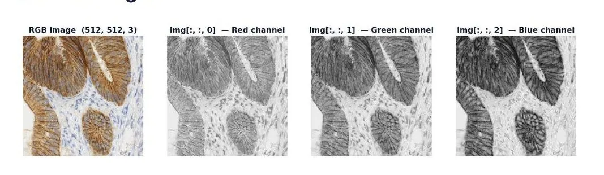
5.1 이미지 = 2D array (2/5) W7 p5–6 · 실습 W7 1.1–1.2
위치는 위에서 몇 번째 줄(행)인지를 먼저 말하고, 왼쪽에서 몇 번째 칸(열)인지를 나중에 말한다. 번호는 0부터 센다.
예를 들어 아래 8×8 조각에서
img[3, 5]는 위에서 4번째 줄, 왼쪽에서 6번째 칸이며, 값은 93이다.같은 넓이를 더 촘촘한 모눈으로 찍으면 칸 수가 늘어나 배열이 커진다. 촘촘하다는 것은 칸 하나가 덮는 실제 길이가 더 짧다는 뜻이다.
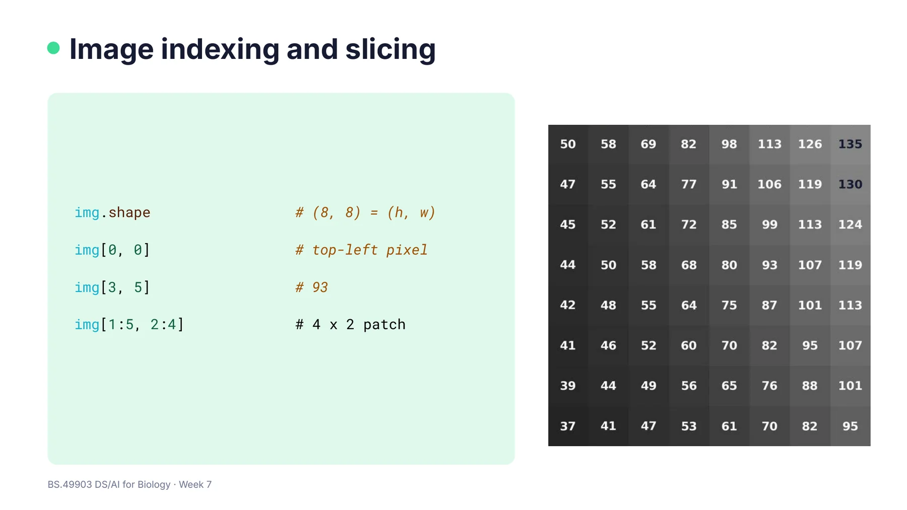
5.1 이미지 = 2D array (3/5) W7 p5–6 · 실습 W7 1.1–1.2
- 흔히 말하듯 가로×세로 순서이니, shape (660, 550)은 가로 660, 세로 550이다.shape은 (h, w), 즉 (행 수, 열 수)라서 (660, 550)은 세로 660, 가로 550이다. 같은 이유로
img[i, j]의 i는 세로 위치(y), j는 가로 위치(x)다. img[1:5, 2:4]는 5행과 4열까지 포함하니 5×3 patch다.인덱스는 0부터 세고, 슬라이스의 stop은 포함하지 않는다. 그래서 행 1, 2, 3, 4와 열 2, 3만 뽑혀 4×2가 된다.- μm/pixel 숫자가 클수록 고해상도다.반대다. 고해상도란 픽셀 하나의 물리적 크기(μm/pixel)가 더 작다는 뜻이다. 그래서 같은 면적에 픽셀이 더 많이 들어가고 배열이 커진다.
img[::4, ::4]는 픽셀 수를 1/4로 줄인다.축마다 1/4로 줄이므로, 픽셀 수는 약 1/16이 된다. 예: 363,000 → 22,770.img[::4, ::4]로 줄인 영상은 실제로 저해상도로 찍은 영상과 똑같다.이것은 픽셀을 건너뛰는 subsampling이다. 큰 픽셀이 넓은 영역의 빛을 모으는 실제 저해상도 촬영과는 완전히 같지 않다. 자료 외 보충 (2.2의 subsampling vs block averaging과 같은 이야기)- 배열 값과 shape만 보면 픽셀의 실제 크기(μm)를 알 수 있다.알 수 없다. 현미경 메타데이터나 scale bar가 따로 필요하다. 추론
5.1 이미지 = 2D array (4/5) W7 p7–9 · 실습 W7 2.1–2.2 · 녹음 10/12
uint8은 자동차 주행거리계처럼 끝(255)을 넘으면 0부터 다시 돈다. 그래서 250 + 10은 260이 아니라 4가 된다. 256으로 나눈 나머지다.
컬러 영상은 같은 크기의 흑백 숫자판 3장(R, G, B)을 겹친 것이다. 한 픽셀이 (255, 255, 0)이면 빨강 최대, 초록 최대, 파랑 0이므로 노랑이다.
형광 현미경은 숫자판 1장(밝기)만 준다. 초록색은 그 숫자를 초록 농도로 칠해서 보여 준 것뿐이다.
- 이미지를 배열로 보는 이유: 배열이 되면 모든 것을 숫자 계산으로 다룰 수 있다. 평균, SD, histogram 같은 통계를 낼 수 있고, 덧셈과 곱셈으로 밝기와 대비를 조정할 수 있다. 이후의 분할과 AI 모델 입력도 같은 배열에서 시작한다.
- dtype 고르기: intensity 영상은 측정한 밝기를 담는다. 원본은 보통 uint8이나 uint16이고, 정규화했다면 0–1 범위의 float다.
- segmentation 영상은 세포마다 고유 번호를 붙인 영상이다. 그래서 반드시 정수(uint)여야 하고, 세포 수를 담을 만큼 넉넉해야 한다. (W7 p7)
- 예를 들어 세포가 300개면 uint8로는 담을 수 없어 uint16을 쓴다. 분할 전에는 세포 수를 모르므로 넉넉하게("liberal") 고른다. (녹음 10/12)
- 반대로 너무 큰 타입은 메모리를 낭비한다. 예를 들어 uint64는 uint8의 8배 메모리를 쓴다. (1.2 참고)
- 그래서 저장할 때는 예상되는 값 범위를 빠짐없이 담는 타입 중 가장 작은 것을 쓴다. 계산할 때만 int나 float로 바꿔 중간값의 overflow를 피한다. (실습 W7 2.1)
- 형광(GFP) 영상: 채널 1개짜리 grayscale로 분석한다. 색은 표시 방법일 뿐이고, 정량 분석은 강도값으로 한다.
5.1 이미지 = 2D array (5/5) W7 p7–9 · 실습 W7 2.1–2.2 · 녹음 10/12
- 컬러 영상의 shape은 (3, h, w)다.채널이 마지막 축이라 (h, w, 3)이다.
img[:,:,0](red)은 그냥 2D 배열이다. - 형광 영상은 초록 채널을 뽑아야 분석할 수 있다.현미경이 주는 형광 영상은 RGB 컬러가 아니라 채널 하나짜리 grayscale이다.
- uint8 계산이 범위를 넘으면 255에서 멈춘다.멈추지 않고 감긴다(wrap-around, mod 256). 250+10은 4, 200+200은 144, 242+100은 86이 되고, 뺄셈도 마찬가지라 10 − 50은 216이 된다.
- uint8 배열이 넘치면 numpy가 경고를 띄워 준다.경고를 믿으면 안 된다. numpy 배열 연산은 경고 없이 감기고, 어느 경우든 계산은 멈추지 않는다(실습 W7 2.1:
a + 10→ [4], "no error!"). 경고는np.uint8(250)처럼 값 하나짜리 numpy 숫자로 계산할 때 나오기도 하는데, numpy 버전에 따라 다르다. 자료 외 보충 - uint8 배열을 그대로 계산한 뒤 결과만 clip하면 된다.uint8 그대로 계산하면 clip하기 전에 이미 값이 감겨 버린다. 그래서 먼저
astype(int)(또는 float)로 바꿔 계산하고, clip(0, 255)한 뒤 다시 uint8로 바꾼다. (실습 W7 2.1) - float 영상도 0–255 범위라고 보고 처리하면 된다.float 영상이면 누군가 0–1로 정규화했을 가능성이 있다. 0–255라고 가정하고 처리하면 틀린다. (녹음 10/12)
이미지는 각 공간 위치(행 i, 열 j)에 측정값을 대응시킨 2D 배열이다. 데이터 타입(dtype)이 값의 범위를 정한다. uint8은 0–255이고, uint16은 0–65535다. 분할(segmentation) 영상은 세포마다 고유한 정수 ID가 필요하다. 그래서 세포 수를 담을 수 있는 정수 타입을 골라야 한다. 예를 들어 세포가 300개면 uint8은 쓸 수 없다. 컬러 영상은 grayscale 채널 3개를 쌓은 (h, w, 3) 배열이다.
“How is a digital image represented as an array? Why does the data type matter when you store a segmentation mask?”
키워드: pixel(픽셀) · 2D array(2차원 배열) · data type(데이터 타입) · uint8 / uint16(8비트 / 16비트 부호 없는 정수) · segmentation mask(분할 영상) · channel(채널)
5.2 계산 전에 점검하라 (오늘의 하이라이트) (1/3) 서술 단골W7 p10–11 · 녹음 10/12
| 점검 항목 | 왜 중요한가 |
|---|---|
| 1. 이미지 크기 (size) | 다루는 픽셀 수의 규모를 알려 준다. 메모리와 계산량이 여기서 정해진다. |
| 2. 픽셀 해상도 (physical size of a pixel) | 한 픽셀이 실제로 몇 μm인지 알려 준다. 이것이 어떤 생물학적 구조를 추출할 수 있는지 결정한다. |
| 3. 데이터 타입 (dtype) | 값의 범위가 0–255인지, 0–1로 정규화된 float인지 알려 준다. 이후 파이프라인 설계가 여기에 달려 있다. overflow를 막는 데도 필요하다. uint8에서 200+200 = 400은 표현할 수 없어, numpy 배열에서는 경고 없이 144로 감긴다. 그래서 계산 전에 int나 float로 바꾸고, 계산하고, clip한 뒤 다시 uint8로 바꾼다. (실습 W7 2.1) |
| 4. 최소/최대 픽셀값 | dtype 범위가 0–255여도 실제로는 100–150만 쓰고 있을 수 있다. |
| 5. 평균/표준편차 | 평균(mean)은 밝기를 나타낸다. 표준편차(std)는 대비를 나타낸다. |
이 점검을 하는 가장 쉬운 방법은 히스토그램(histogram)이다.
- x축은 강도값 k이고, y축은 값이 k인 픽셀 수다.
- uint8이면 0–255의 256개 값에 대한 이산분포가 된다.
- x 범위에서 dtype을, 양 끝에서 min/max를, 분포의 중심에서 평균을, 폭에서 SD를 한눈에 읽는다.
- 코드는
np.bincount(img.ravel(), minlength=256)이다. 막대 높이를 모두 더하면 전체 픽셀 수가 된다.
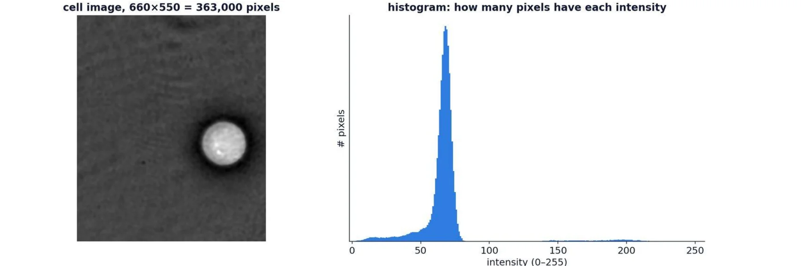
5.2 계산 전에 점검하라 (오늘의 하이라이트) (2/3) W7 p3, p10–11 · 실습 W7 3.1–3.2 · 녹음 10/12
- 몇 칸짜리인가 (크기)
- 한 칸이 실제로 몇 μm인가 (해상도)
- 어떤 숫자 규칙인가 (dtype)
- 가장 어두운 값과 가장 밝은 값
- 평균 밝기와 퍼진 정도 (SD)
- 해결하는 문제: 다른 실험실이나 장비에서 온 영상은 dtype, 범위, 밝기가 제각각이다. 확인 없이 계산하면 overflow가 생기거나, 범위를 잘못 가정하거나, 해상도에 맞지 않는 분석을 하게 된다. 예를 들어 0–1인 영상을 0–255로 처리하는 실수다.
- 해상도가 알려 주는 것: 픽셀 하나의 실제 크기(μm/pixel)가 어떤 생물학적 구조를 뽑을 수 있는지를 정한다. (녹음 10/12)
- 예를 들어 수업 슬라이드에는 scale bar 50 μm인 조직 영상과 scale bar 500 nm인 EM 영상이 함께 나온다. 앞의 것은 세포 하나하나를 분할하는 수준이고, 뒤의 것은 세포 안 구조를 보는 수준이다. 추론 (W7 p3)
- 언제나 첫 단계: 새 데이터셋을 받을 때마다 가장 먼저 한다. 교수님은 이것을 오늘의 하이라이트라고 했다. ("the highlight of today")
- 실습 cell 영상을 점검하면 shape (660, 550), uint8, min/max 0/255, 평균 68.0, SD 23.9다.
- 히스토그램의 한계: 값별 개수만 세고 위치(공간 정보)는 버린다. 그래서 픽셀을 마구 섞은 영상도 히스토그램이 똑같다. 추론
- 경계나 모양 같은 구조는 영상을 직접 봐야 한다. 추론
5.2 계산 전에 점검하라 (오늘의 하이라이트) (3/3) W7 p3, p10–11 · 실습 W7 3.1–3.2 · 녹음 10/12
- 히스토그램의 y축은 확률이다.y축은 픽셀 수(count)다. 확률로 보려면 전체 픽셀 수 N으로 나눠야 하며, 그러면 합이 1이 된다: $p_r(r)=h(r)/N$. (5.7에서 사용)
- uint8의 최댓값이 255이니 L = 255다.값의 개수가 L = 256이고, 최댓값이 L − 1 = 255다. 그래서 식마다 L−1이 나오고, 히스토그램 bin도 256개다.
- uint8 영상이면 실제 값도 0–255 전체에 퍼져 있다.dtype 범위와 실제 사용 범위는 다르다. uint8이어도 실제 min/max가 100–150일 수 있으므로 min/max를 따로 확인한다.
- 평균과 SD는 기록용으로 적어 두는 숫자일 뿐이다.평균은 밝기, SD는 대비를 나타낸다. 이 값들은 이후 조정식의 β, α, μ와 바로 연결된다. (5.3)
새 영상은 계산 전에 크기, 픽셀의 물리적 해상도, dtype, 최솟값과 최댓값, 평균과 SD를 확인해야 한다. 해상도는 추출할 수 있는 생물학적 구조를 결정하고, dtype은 값의 범위와 overflow 위험을 결정하기 때문이다. 히스토그램(histogram)은 x축이 강도, y축이 그 강도를 가진 픽셀 수인 그래프다. 이 그래프 하나로 x 범위에서 dtype을, 양 끝에서 최솟값과 최댓값을, 중심에서 평균을, 폭에서 SD를 한눈에 읽는다.
“What should you inspect before processing a new microscopy image, and how does a histogram help?”
키워드: image size(영상 크기) · resolution(해상도) · physical pixel size(픽셀의 물리적 크기) · data type(데이터 타입) · overflow(넘침) · histogram(히스토그램) · mean / standard deviation(평균 / 표준편차)
5.3 밝기(brightness)와 대비(contrast) (1/3) W7 p12–13
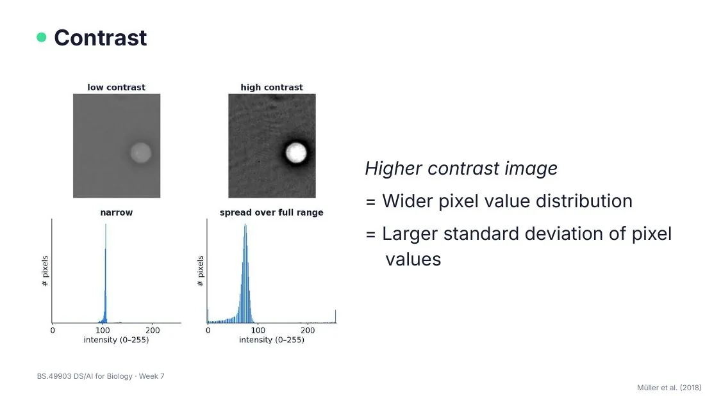
예를 들어 A = [95, 100, 105]와 B = [0, 100, 200]은 둘 다 평균이 100이라 밝기가 같다. 하지만 B가 훨씬 넓게 퍼져 있다(SD: A ≈ 4.1, B ≈ 81.6). 그래서 B는 어두운 곳과 밝은 곳이 뚜렷이 갈리고, 대비가 높다.
C = [145, 150, 155]는 A보다 모두 50씩 크다. 그래서 더 밝지만, 퍼짐은 A와 같으므로 대비는 같다.
5.3 밝기(brightness)와 대비(contrast) (2/3) W7 p12–13 · 녹음 10/12
- 해결하는 문제: "밝다", "선명하다"는 주관적인 느낌이다. 이를 두 숫자(평균, SD)로 바꾸면 측정하고 비교하고 조정할 수 있다.
- 이후 β는 평균을 바꾸는 손잡이, α는 SD를 바꾸는 손잡이가 된다. (5.5)
- 생물학 예: 대비가 낮으면 세포와 배경을 구분하기 어렵다. 세포 경계(막)와 내부도 구분하기 어렵다.
- 슬라이드의 밝은 원형 물체 그림이 이것을 보여 준다. 낮은 대비는 히스토그램이 좁고, 높은 대비는 전 범위로 퍼진다. (W7 p13: narrow vs spread over full range)
- 한계: 평균과 SD는 영상 전체를 요약한 값이다. 그래서 어디가 밝은지, 경계가 어디 있는지는 말해 주지 않는다. 추론
- 또 SD가 크다고 무조건 좋은 것도 아니다. 0과 255 양 끝에 clip되어 쌓인 픽셀은 평균에서 멀어 SD를 크게 만들지만, 그 픽셀끼리는 구분이 안 된다. 예를 들어 α = 1.8이면 SD는 81.7이지만 양 끝이 clip된다. 추론 (5.5)
5.3 밝기(brightness)와 대비(contrast) (3/3) W7 p12–13 · 녹음 10/12
- 밝기는 SD이고, 대비는 평균이다.반대다. 밝기는 평균(위치), 대비는 SD(폭)다. 둘을 바꿔 외우는 실수가 가장 흔하다.
- 교수님이 말한 "sharper" image는 해상도가 높은 영상이라는 뜻이다.대비가 높다는 뜻이다. 픽셀값이 더 뚜렷이 구분된다는 말이며, 픽셀 해상도와는 다른 이야기다.
- 대비를 높이면 해상도도 좋아진다.해상도는 촬영할 때 정해진다. 밝기와 대비 조정은 촬영 후 값만 바꾸므로, 공간 디테일(해상도)을 늘리지 못한다. 추론
- 밝기를 바꾸면 대비도 함께 변한다.밝기만 바꾸면(모든 값에 β를 더하면) 퍼짐은 그대로이므로 대비는 변하지 않는다. 단, clip이 생기기 전까지만 그렇다.
- 대비의 정의는 값의 범위(max − min)다.교수님은 0–100과 95–105를 범위로 비교해 설명했지만, 슬라이드의 정의는 SD다. 범위는 극단값 두 개만 반영하고, SD는 모든 픽셀을 반영한다.
- 밝을수록 정보가 많다.255 근처에 몰린 영상은 오히려 쓰는 값 범위가 좁다. (5.6의 A, B와 같은 문제)
밝기(brightness)는 픽셀값 분포의 평균, 즉 히스토그램의 위치다. 대비(contrast)는 분포의 폭, 즉 표준편차다. 평균이 커지면 히스토그램이 오른쪽으로 이동해 영상이 밝아진다. SD가 커지면 픽셀값 차이가 커져, 세포와 배경, 경계와 내부가 더 뚜렷이 구분된다.
“How are the brightness and the contrast of an image defined in terms of its pixel-value distribution?”
키워드: brightness(밝기) · contrast(대비) · mean(평균) · standard deviation(표준편차) · histogram(히스토그램) · spread(퍼짐)
5.4 Point operation과 clip (1/3) W7 p14 · 녹음 10/12
$$s=T(r)$$$r$은 입력 강도(input intensity), 즉 원래 픽셀값이다. $s$는 출력 강도(output intensity)다.
- 모든 픽셀에 같은 함수 T를 독립적으로 적용한다. 이웃 픽셀과 무관하므로 공간 정보(spatial information)가 없다. 그래서 "point" operation이라고 부른다.
- uint8이면 s도 [0,255]의 정수여야 한다. 그래서 계산 결과를 반올림이나 내림 등으로 정수에 매핑한다.
- clip(f(x), min, max)은 f(x)가 min보다 작으면 min을, max 이상이면 max를, 그 사이면 f(x)를 돌려준다.
- clip은 출력이 유효 범위(0–255 또는 0–65535)를 벗어나지 않게 한다. 그래서 point operation에 꼭 필요하다.
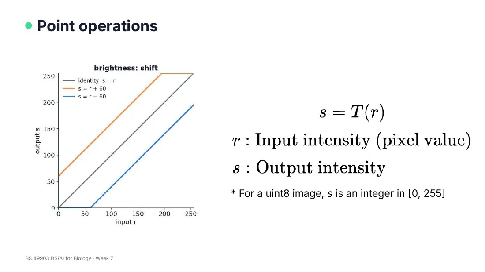
예를 들어 규칙이 T(r) = r + 60이면, 100인 칸은 영상 어디에 있든 160이 된다.
그런데 220 + 60 = 280은 uint8에 없는 값이다. 이때 clip이 범위보다 작은 값은 0으로, 큰 값은 255로 붙잡아 둔다. 위 그래프에서 주황선이 255에서 평평해지는 부분이 이것이다.
5.4 Point operation과 clip (2/3) W7 p14 · 실습 W7 2.1, 4.1 · 녹음 10/12
- 하나의 틀: 밝기와 대비 조정, 정규화, 히스토그램 평활화가 모두 $s=T(r)$ 꼴이다. 어떤 T를 고르느냐만 다르다. (5.5–5.7)
- 픽셀마다 독립적으로 계산하므로 단순하고 빠르다. 교수님은 누구나 짤 수 있다고 했다. ("Anyone can program")
- 못 하는 일: 공간 정보가 없으므로, 주변 픽셀을 봐야 하는 작업은 point operation으로 할 수 없다. 이웃 평균으로 하는 노이즈 제거나 경계 찾기가 그런 예다. 이런 일은 sliding window나 convolution 같은 이웃 연산이 맡는다. 추론 (2.3, 2.4 참고)
- 같은 값을 가진 두 픽셀은 항상 같은 출력이 된다. 그래서 값이 같은 배경과 세포는 point operation으로 분리할 수 없다. 추론
- clip이 필요한 이유: 출력이 dtype 범위(0–255 또는 0–65535)를 벗어나면 저장할 수 없거나 감긴다. 그래서 범위 밖 값을 끝값에 붙잡아 둔다.
- 그 대가로 끝에 쌓인 픽셀끼리는 더 이상 구분할 수 없다. 즉 정보가 손실된다.
5.4 Point operation과 clip (3/3) W7 p14 · 실습 W7 2.1, 4.1 · 녹음 10/12
- uint8 배열에 그냥 더해도 넘치는 값은 255로 clip된다.clip(포화)과 overflow(감김)는 다르다. 250 + 10은 clip하면 255이고, numpy uint8 배열에 그냥 더하면 경고 없이 감겨 4가 된다.
- "+50 했더니 가장 밝던 부분이 검게 변했다"는 것은 clip 때문이다.그것은 wrap이 일어난 것이다. 그래서 실습 코드는
r.astype(int) + beta로 먼저 타입을 바꾼 뒤 clip하고, 마지막에 uint8로 되돌린다. - 히스토그램 평활화는 영상 전체 히스토그램을 쓰므로 point operation이 아니다.평활화는 T를 만들 때 전체 히스토그램을 쓰지만, 적용할 때는 각 픽셀의 값 r 하나만 본다. $s=T(r)$ 꼴이므로, 이웃을 쓰는 sliding window나 convolution과 달리 point operation이다. 추론
- clip은 최솟값보다 작은 값을 0으로 바꾼다.0이 아니라 min으로 바꾸고, max 이상이면 max로 바꾼다. 보통 min = 0, max = L−1이라 같아 보일 뿐이다.
- α·r처럼 소수가 나와도 uint8에 그대로 저장된다.uint8 출력은 0–255의 정수여야 하므로 소수는 정수로 맞춘다. 실습 코드의
astype(np.uint8)은 소수점을 버린다. - T를 잘 고르면 서로 다른 값의 개수를 늘릴 수 있다.T는 값 하나를 값 하나로 보내는 함수라서 서로 다른 값의 개수를 늘릴 수 없다. 합쳐서 줄일 수는 있다. 추론 (5.6의 223 → 223과 5.7의 "완전히 평평하지는 않음"이 이 때문)
점 연산(point operation)은 모든 픽셀에 같은 함수 s = T(r)를 독립적으로 적용하는 연산이다. 출력은 그 픽셀의 입력값에만 의존하고, 이웃 픽셀의 공간 정보는 쓰지 않는다. 결과가 dtype 범위를 넘을 수 있으므로 clip(T(r), 0, L−1)으로 범위 안에 묶어야 한다. uint8이면 결과를 0–255의 정수로 맞춘다.
“What is a point operation in image processing, and why is clipping needed?”
키워드: point operation(점 연산) · input / output intensity(입력 / 출력 강도) · spatial information(공간 정보) · clipping(잘라내기) · dtype range(타입 범위) · integer(정수)
5.5 Brightness / Contrast 조정 식 (1/6) 유도·설명W7 p15–16 · notebook 4
$$\textbf{Brightness: }\ s=\mathrm{clip}(r+\beta,\ 0,\ L-1)$$- β가 양수면 영상이 밝아지고, 히스토그램이 β만큼 오른쪽으로 이동한다. β가 음수면 어두워진다.
- 평균도 β만큼 따라 움직인다. 단, 0이나 255에 픽셀이 쌓이기(clipped) 시작하면 평균이 움직이는 크기는 |β|보다 작아진다.
- 교수님은 이것이 휴대폰 사진 앱 뒤에서 실제로 일어나는 일이라고 했다. ("That's what's actually happening behind your iPhone or Galaxy.")
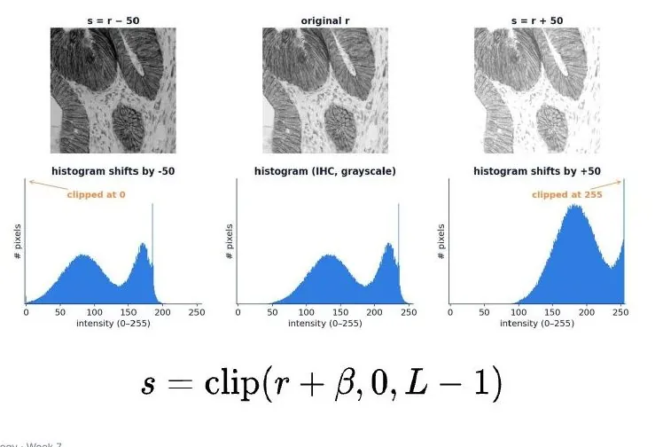
그러면 막대그래프 전체가 오른쪽으로 10칸 밀리고 영상이 밝아진다. β = −10이면 왼쪽으로 밀리고 어두워진다.
단, 250 + 10은 255를 넘으므로 255로 붙잡힌다(clip).
5.5 Brightness / Contrast 조정 식 (2/6) W7 p15–16 · notebook 4
- β를 더하면 언제나 평균은 정확히 β만큼 움직이고, SD는 그대로다.β는 평균만 옮기고 SD(대비)는 바꾸지 않지만, 이것은 clip이 생기기 전까지만이다. clip이 생기면 끝에 픽셀이 쌓여 평균 이동의 크기가 |β|보다 작아지고, SD는 같거나 줄어든다.
- β = +50을 한 뒤 β = −50을 하면 원본으로 돌아온다.clip된 정보는 되돌릴 수 없다. 원래 205–255였던 픽셀은 모두 255에 쌓였다가, 다시 전부 205가 된다.
- uint8에서 r + β를 그냥 계산해도 255로 clip된다.
astype(int)로 타입을 넓히지 않고 그냥 더하면 clip이 아니라 wrap이 일어난다. 230 + 50은 24가 되어, 가장 밝던 곳이 거의 검게 된다. - 밝기 조정은 히스토그램 모양을 바꾼다.밝기 조정은 기울기 1, 절편 β인 직선이다. 그래서 히스토그램 모양은 그대로이고 위치만 이동한다.
5.5 Brightness / Contrast 조정 식 (3/6) 유도·설명W7 p15–16 · notebook 4
$$\textbf{Contrast: }\ s=\mathrm{clip}\big(\alpha(r-\mu)+\mu,\ 0,\ L-1\big)$$교수님 예: 범위 10–30에 α=2를 곱하면 20–60이 된다. 폭은 20에서 40으로 넓어지지만, 중심도 20에서 40으로 이동한다.
그래서 다음 세 단계를 거친다.
- 평균을 빼서 분포를 0 중심으로 맞춘다.
- α를 곱해 폭만 바꾼다.
- 원래 평균 μ를 더해 밝기를 유지한다.
5.5 Brightness / Contrast 조정 식 (4/6) W7 p15–16 · notebook 4
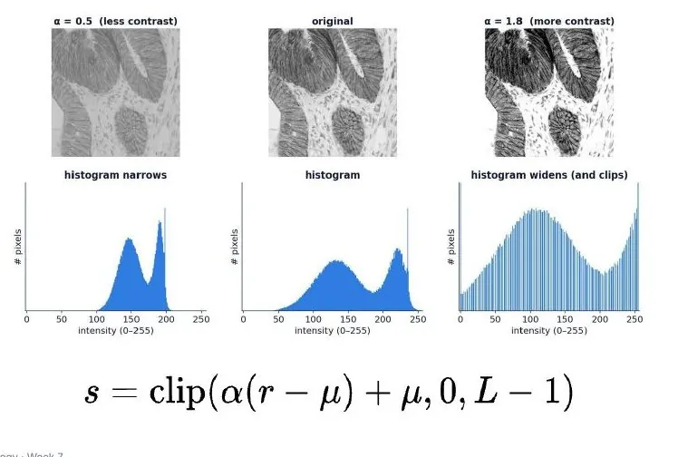
- α가 1보다 크면 SD가 커져 대비가 높아진다. 0<α<1이면 대비가 낮아지고, α=1이면 원본 그대로다.
- 음수 α는 원하는 동작이 아니다. 교수님은 αr에 음수를 곱하면 값이 음수가 된다고 설명했다.
- 중심화한 이 식에서 음수 α를 쓰면, μ를 기준으로 밝고 어두움이 뒤집힌 반전 영상이 된다. 추론
- SD는 |α|배가 된다: $\mathrm{SD}(\alpha r+c)=|\alpha|\,\mathrm{SD}(r)$.
- 실습의 IHC(면역조직화학) 영상을 흑백으로 바꿔 적용한 결과, std는 α=0.5일 때 24.8, 1.0일 때 49.5, 1.8일 때 81.7이다. 1.8에서 89보다 작은 것은 clipping 때문이다.
- 반면 평균은 α=0.5, 1.0일 때 159.7, 160.0으로 거의 고정된다. α=1.8에서는 clip 때문에 154.7로 내려간다.
- 대비를 높이면 일부 값이 255를 넘거나 0 미만이 될 수 있고, 그런 값은 clip된다. 정보 손실을 감수하는 것이다.
- 밝기와 대비 조정 모두 파라미터(α, β)를 사람이 정해야 한다. 이 문제가 5.6의 질문으로 이어진다.
5.5 Brightness / Contrast 조정 식 (5/6) W7 p16 · 실습 W7 4.2 · 녹음 10/12, 10/14
예를 들어 [10, 20, 30]은 평균이 20이다. 여기에 α = 2를 쓰면 평균에서의 거리 −10, 0, +10이 −20, 0, +20이 된다. 결과는 [0, 20, 40]이다.
평균 20, 즉 밝기는 그대로이고 퍼짐만 2배가 된다. 그냥 2를 곱하면 [20, 40, 60]이 되어 평균까지 40으로 밝아져 버린다.
- 해결하는 문제: 값이 비슷한 구조를 더 뚜렷이 구분하고 싶을 때 대비를 높인다. 세포와 배경, 막과 세포질이 그런 예다. 너무 강한 대비를 누그러뜨릴 때는 대비를 낮춘다.
- 목적은 밝기는 그대로 두고 폭만 바꾸는 것이다. 그래서 μ를 중심으로 늘린다.
- 언제: 사람이 한 장씩 보며 보기 좋게 맞출 때 쓴다. 사진 앱의 brightness/contrast 슬라이더가 이것이다. (교수님의 iPhone/Galaxy 예)
- 한계 ①: α와 β를 사람이 정해야 한다. 그래서 장비와 실험마다 다른 수천 장에 일관되게 적용하기 어렵다. (녹음 10/14)
- 한계 ②: 선형이라 히스토그램 모양은 바꾸지 못한다.
- 한계 ③: α > 1이면 양 끝 값이 0이나 255를 넘어 clip될 수 있고, clip된 픽셀끼리는 더 구분되지 않는다. 예를 들어 α = 1.8이면 SD가 이론값 89가 아니라 81.7이다.
- 대안: 데이터가 a, b를 정해 주는 min-max 또는 percentile 정규화가 있다. 모양까지 바꾸려면 히스토그램 평활화를 쓴다. (5.6, 5.7)
5.5 Brightness / Contrast 조정 식 (6/6) W7 p16 · 실습 W7 4.2 · 녹음 10/12, 10/14
- 대비를 바꾸려면 $s=\alpha r$이면 충분하다.$s=\alpha r$만 쓰면 폭과 함께 평균도 α배가 되어 밝기까지 바뀐다.
- μ를 빼고 다시 더하는 대비 조정식은 비선형이다.$\alpha(r-\mu)+\mu=\alpha r+(1-\alpha)\mu$이므로 여전히 선형이다. β 자리에 $(1-\alpha)\mu$가 들어간 꼴이다.
- 식의 μ는 범위의 가운데 값(127.5)이다.μ는 그 영상의 평균 픽셀값이다(실습 코드
mu = r.mean()). 127.5를 쓰면 평균이 $\alpha(\mu-127.5)+127.5$로 움직여 밝기가 바뀐다. - α배를 하면 분산도 α배가 된다.SD는 |α|배가 되고, 분산은 α²배가 된다. 더하는 상수는 SD에 영향을 주지 않는다.
- 0 < α < 1로 하면 영상이 어두워진다.대비가 줄어드는 것이지 어두워지는 것이 아니다. 평균은 μ로 유지되며, 예를 들어 α = 0.5이면 평균은 159.7이고 SD는 49.5에서 24.8로 줄어든다.
- 대비 조정 후에도 평균은 항상 정확히 보존된다.clip이 생기기 전까지만 그렇다. α = 1.8에서는 평균이 160.0에서 154.7로 바뀐다.
대비는 분포의 폭(SD)이므로, 픽셀값에 α를 곱하면 폭이 바뀐다. 하지만 αr만 하면 평균도 α배가 되어 밝기까지 바뀐다. 그래서 평균 μ를 빼서 분포를 0 중심으로 옮기고, α를 곱해 폭만 바꾼 뒤, 다시 μ를 더해 원래 밝기를 유지한다. 식으로는 s = clip(α(r−μ)+μ, 0, L−1)이다. 이 식은 αr + (1−α)μ로 전개되므로 여전히 선형이며, SD를 |α|배 한다.
“Derive a contrast adjustment that changes the spread of pixel values but keeps the mean brightness. Is this transformation linear?”
키워드: contrast adjustment(대비 조정) · scaling factor α(배율 α) · mean intensity μ(평균 강도 μ) · linear transformation(선형 변환) · clipping(잘라내기) · standard deviation(표준편차)
5.6 좋은 조정이란? → Normalization (linear) (1/5) W7 p17–20 · notebook 5
- 슬라이드에는 세 영상이 나온다. A는 어두운 쪽에 몰려 있고, B는 가운데에 좁게 모여 있으며, C는 전 범위에 퍼져 있다.
- 이 중 C가 가장 디테일이 많다. A와 B는 값 범위의 대부분을 쓰지 않는다("Unused").
- 픽셀값 범위는 일종의 "정보 해상도"다. 그래서 목표는 사용 가능한 값 범위를 최대한 다 쓰는 것이고, 이상적으로는 uniform 분포다.
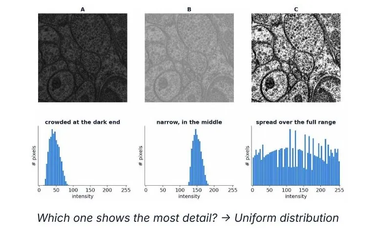
이 좁은 범위를 0–255 전체로 넓혀 쓰면 두 구조의 값 차이가 커져, 서로 다른 회색으로 구분된다.
그래서 "좋은 조정"이란 쓸 수 있는 값을 최대한 다, 고르게(uniform) 쓰는 것이다.
5.6 좋은 조정이란? → Normalization (linear) (2/5) W7 p17–20 · notebook 5 · 녹음 10/14
- 해결하는 문제: 원본 영상은 장비나 시료 준비에 따라 A처럼 너무 어둡거나 B처럼 가운데에 좁게 몰려, 정보를 덜 보여 준다. "좋은 조정"의 기준이 있어야 α, β를 감으로 고르지 않아도 된다.
- 기준: 값 범위를 최대한 사용하는 것이고, 이상적으로는 uniform이다. 교수님은 픽셀값 범위가 공간 해상도가 아니라, 쓸 수 있는 정보의 해상도라고 했다. ("the resolution of information you can use up")
- 두 가지 방법: 범위만 넓히는 선형 정규화와, 모양까지 평평하게 하는 비선형 평활화가 있다. (5.6, 5.7)
- 수업 예: C. elegans EM 영상에서 어두운 선은 신경세포 경계(막)다. 작은 검은 원은 신경전달물질을 담은 시냅스 소포이고, 어두운 단면은 미토콘드리아다. (녹음 10/14)
왜 하필 uniform인가 — 정보량(entropy) 관점 자료 외 보충
256개 값을 쓸 수 있다고 하자. Shannon entropy는 다음과 같다. $$H=-\sum_k p_k\log_2 p_k$$ 각 값의 비율이 모두 1/256로 같으면 H는 최댓값 $\log_2 256=8$ bit가 된다. 값이 한쪽에 몰릴수록 H가 작아지고, 모든 픽셀이 한 값이면 0이다. 즉 uniform은 픽셀값 하나가 평균적으로 가장 많은 정보를 담는 분포다.5.6 좋은 조정이란? → Normalization (linear) (3/5) W7 p17–20 · notebook 5
$$\textbf{Min–max normalization: }\ s=(L-1)\frac{r-r_{min}}{r_{max}-r_{min}}$$- $r=r_{min}$이면 0이 되고, $r=r_{max}$이면 1 × (L−1) = 255가 된다. 그래서 전 범위를 쓴다.
- 예: EM 영상은 33–255 → 0–255로 넓어진다.
- 전개하면 아래와 같은 $s=a\,r+b$ 꼴이므로 여전히 선형이다. $$s=a\,r+b,\qquad a=\frac{L-1}{r_{max}-r_{min}}$$
- Outlier 문제: min이나 max가 outlier면, 범위가 outlier에 의해 결정된다.
- 그래서 1st–99th percentile을 쓰면 outlier를 배제할 수 있다. $r_{min}$, $r_{max}$ 자리에 1st, 99th percentile인 $p_1$, $p_{99}$가 들어갈 뿐이므로 여전히 선형이다.
- 실습 코드는
(em − p1)/(p99 − p1)·255를 계산한 뒤 clip한다. notebook에서는 56–220을 늘려 std가 61.6이 되었고, 픽셀의 2.2%가 clip되었다. - 표준편차로 나누는 z-score식 정규화도 있다. outlier 한 픽셀이 범위를 정하지는 않지만, 변환 후 0 미만이나 255 초과인 픽셀은 잘려 사라진다. (녹음 10/14)
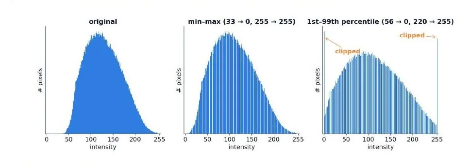
- 선형 변환은 히스토그램 모양을 바꿀 수 없다. 넓히거나 좁힐 뿐, bump는 그대로 남는다.
- $s=ar+b$는 SD를 정확히 a배 한다. EM 영상에서 기울기 1.149는 std 비율 1.149와 같다.
- 서로 다른 값의 개수도 그대로다. 예: 223 → 223.
- 그래서 대부분의 픽셀이 여전히 가운데 몰려 있고, 그 구간의 구조들을 서로 다른 값으로 구분하기 어렵다.
5.6 좋은 조정이란? → Normalization (linear) (4/5) W7 p19–20, p25 · 실습 W7 5.1–5.2 · 녹음 10/14
예를 들어 값이 [50, 100, 150]인 영상은 min이 50, max가 150이다. $s=255\cdot(r-50)/100$을 적용하면 [0, 127.5, 255]가 된다.
고무줄이 균일하게 늘어나기 때문에, 가운데 몰려 있던 픽셀 무리는 무리째로 넓어질 뿐 흩어지지 않는다.
- 해결하는 문제: 영상이 범위의 일부만 쓰고 있을 때 전체 범위로 넓혀 맞춘다. 예를 들어 EM 영상은 33–255만 쓴다.
- a와 b를 사람이 아니라 영상의 min/max(또는 percentile)가 정한다. 그래서 parameter-free다.
- 언제: 강도 사이의 상대 관계, 즉 순서와 차이의 비율을 지켜야 할 때 쓴다. 형광 강도로 분자 간 상대 발현을 비교하는 정량 분석의 전처리가 그 예다. (녹음 10/14)
- 여러 장비의 영상을 같은 범위로 맞출 때도 쓴다.
- 조심할 때 ①: outlier 한 픽셀이 min이나 max면 영상이 거의 늘어나지 않는다. 이때는 1–99 percentile을 쓰며, 그 대가로 양 끝의 약 2%가 clip된다(실습 EM 영상에서는 2.2%).
- 조심할 때 ②: bump가 그대로 남는다. 몰린 구간의 구조를 구분하는 것이 목적이면 평활화를 쓴다.
- 조심할 때 ③: 영상마다 자기 min/max로 정규화하면 영상 간 절대 밝기 차이도 지워진다. 이 차이는 실제 발현량 차이일 수도 있다. 영상 간 비교는 모든 영상에 같은 a, b를 쓰거나 원본 값으로 한다. 추론
- 대안 비교: SD로 나누는 z-score식은 outlier에 덜 휘둘리지만, 범위 밖 픽셀은 clip되어 사라진다. W4의 z-score 표준화와 같은 아이디어다. (녹음 10/14, 3.9 참고)
5.6 좋은 조정이란? → Normalization (linear) (5/5) W7 p19–20, p25 · 실습 W7 5.1–5.2 · 녹음 10/14
- min-max 식은 r을 범위 $r_{max}-r_{min}$으로 나누기만 하면 된다.분자는 $r-r_{min}$, 분모는 범위 $r_{max}-r_{min}$이고, 앞에 (L−1)을 곱한다. (L−1)을 빼먹으면 0–1 범위의 float가 되고, $r_{min}$을 빼지 않으면 최솟값이 0으로 가지 않는다.
- 전체 범위를 쓰니 히스토그램이 평평해진다.선형이라 모양이 유지된다. 서로 다른 값의 개수도 그대로(223 → 223)라서, 넓어진 범위 사이사이는 빈 값으로 남는다. 추론 (W7 p19–20의 빗살 모양 히스토그램을 이렇게 해석)
- percentile stretch는 양 끝을 잘라 내므로 bump 모양이 달라진다.범위 안에서는 같은 기울기의 직선이다. 범위 밖은 0 또는 255로 clip되므로, 엄밀히는 양 끝이 평평한 꺾인 직선(piecewise linear)이다. 자료 외 보충 bump 모양은 그대로이고, 달라지는 것은 양 끝에 clip된 픽셀이 쌓인 막대뿐이다. (W7 p20의 "clipped")
- "Relative intensities preserved"는 값 자체의 비율이 그대로라는 뜻이다.순서와 차이의 비율이 보존된다는 뜻이다. 값 자체의 비는 $r_{min}$을 빼는 offset 때문에 바뀔 수 있다. 자료 외 보충
- min-max 정규화를 해도 40과 80의 비는 여전히 1:2다.$r_{min}=20$, $r_{max}=220$이면 40과 80은 25.5와 76.5가 되어 비가 1:3으로 바뀐다. 반면 차이는 40에서 51이 되며, 모든 차이가 같은 배율(1.275)로 늘어난다. 자료 외 보충
- EM 영상처럼 이미 max = 255이면 min-max는 아래쪽 값만 늘린다.위쪽 끝(255)은 그대로 두고 아래쪽 끝만 33에서 0으로 끌어내리는 것은 맞다. 그래도 늘어나는 배율(기울기 1.149)은 모든 구간에서 같다(SD 40.0 → 45.9). 효과는 원래 범위가 좁을수록 크다.
왜 직선(선형)은 모양을 못 바꾸나 — 밀도 변환 한 줄 자료 외 보충
증가함수 $s=T(r)$로 바꾸면 출력 밀도는 다음과 같다. $$p_s(s)=\frac{p_r(r)}{T'(r)}$$ 선형이면 $T'(r)=a$로 상수다. 그래서 $p_s$는 $p_r$를 가로로 a배 늘리고 높이를 1/a로 줄인 같은 모양이다.평평하게, 즉 $p_s$가 상수가 되게 만들려면 $T'(r)$가 $p_r(r)$에 비례해야 한다. 이는 r마다 기울기가 달라진다는 뜻이므로 반드시 비선형이다.
그 답이 $T'(r)=(L-1)\,p_r(r)$, 즉 히스토그램 평활화다. (5.7)
min-max 정규화(normalization) s = (L−1)(r − rmin)/(rmax − rmin)는 s = ar + b 꼴의 선형 변환이다. 기울기가 모든 강도에서 같으므로 모든 bin이 같은 비율로 벌어질 뿐, 히스토그램 모양은 바뀌지 않는다. 그래서 bump는 넓어진 채 남고, 대부분의 픽셀이 여전히 가운데에 몰린다. 그 구간의 구조는 서로 다른 값으로 구분하기 어렵다. 또 min-max에서는 outlier가 범위를 정한다. 그래서 1–99 percentile을 쓰기도 하며, 이때 일부 픽셀이 clip된다.
“What's the downside of a linear transformation such as min-max normalization?”
키워드: min-max normalization(최소-최대 정규화) · linear transformation(선형 변환) · histogram shape(히스토그램 모양) · bump(봉우리) · outlier(이상값) · percentile normalization(백분위 정규화) · clipping(잘라내기)
5.7 Histogram equalization (1/6) 유도 필수W7 p21–24 · notebook 6 · 녹음 10/14
- 목표는 히스토그램 모양을 평평하게(uniform) 만드는 것이다. 그러려면 비선형 변환이 필요하다.
- 코드는
exposure.equalize_hist(img) * 255다. 결과 영상에서는 EM의 세포막이 더 잘 보인다.
용어 주의: 히스토그램 평활화(equalization)는 이웃 평균으로 노이즈를 줄이는 평활화(smoothing)와 전혀 다른 연산이다. 시험 문제는 영어로 나오므로 equalization과 smoothing이라는 영어 용어로 구분해 두자. (2.5 참고, 녹음 10/14)
시험 범위: 구현은 과제 2라서 시험에서 제외되지만, 원리와 유도는 수업 내용이라 범위 안이다. (녹음 10/12, 10/14)
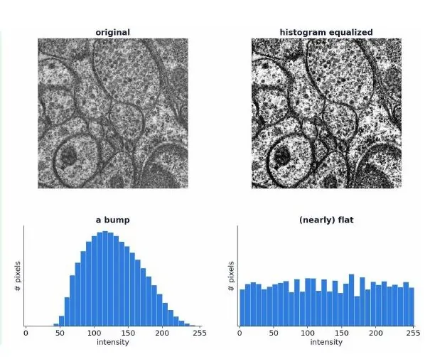
예를 들어 그 비율이 30%인 픽셀은 새 값이 0.30 × 255 = 76.5이고, 80%인 픽셀은 0.80 × 255 = 204다.
픽셀이 많이 몰린 밝기 구간에서는 이 비율이 빠르게 올라가므로 새 값들이 넓게 벌어진다. 픽셀이 드문 구간에서는 비율이 거의 안 변하므로 새 값들이 좁게 모인다.
결과적으로 0–255의 각 구간에 비슷한 수의 픽셀이 들어가, 히스토그램이 평평해진다.
5.7 Histogram equalization (2/6) W7 p21–24 · notebook 6 · 녹음 10/14
- 해결하는 문제: 선형 정규화로는 bump가 그대로라 몰린 구간의 구조가 구분되지 않는다. 평활화는 모양 자체를 평평하게 만들어 모든 값 범위를 고르게 쓰게 한다.
- 언제: 시각화와 구조 판별에 쓴다. 예를 들어 EM 영상의 신경세포 막이 뚜렷해진다. (W7 p21)
- 수천 장을 사람 개입 없이 같은 규칙으로 전처리할 때도 쓴다(parameter-free). AI 모델 입력을 전처리할 때도 쓴다.
- 언제 쓰지 말까: 강도 값 자체나 상대 강도가 의미 있는 정량 분석에는 쓰지 않는다. 형광 강도로 발현량을 비교하는 경우가 그렇다. 평활화하면 상대 강도가 사라진다.
- 또 흔한 강도 구간의 노이즈(세포질 속 speckle)까지 증폭되고, 무엇을 강조할지 고를 수 없다.
- 대안: 정량용으로는 모양을 지키는 min-max나 percentile 정규화를 쓴다. 평활화에도 여러 변형이 있지만 수업에서는 다루지 않았다. (녹음 10/14)
5.7 Histogram equalization (3/6) 유도 필수W7 p21–24 · notebook 6 · 녹음 10/14
아이디어: 히스토그램을 확률밀도로 보고, 출력 분포가 uniform이 되도록 하는 T를 찾는다. 방법은 간단하다. 입력에서 r까지 쌓인 면적(픽셀 비율)과 출력 uniform 분포에서 s까지 쌓인 면적이 같아지도록 s를 정한다.
- 입력 히스토그램을 확률분포로 바꾼다. 각 bin을 전체 픽셀 수 N으로 나누면 합이 1이 된다. $$p_r(r)=\frac{h(r)}{N},\qquad \sum_{r=0}^{L-1}p_r(r)=1$$
- 목표 분포를 정한다. 0부터 L−1까지 uniform이어야 하므로, 높이와 폭의 곱이 1이 되도록 높이를 정한다. $$p_s(s)=\frac1{L-1}$$
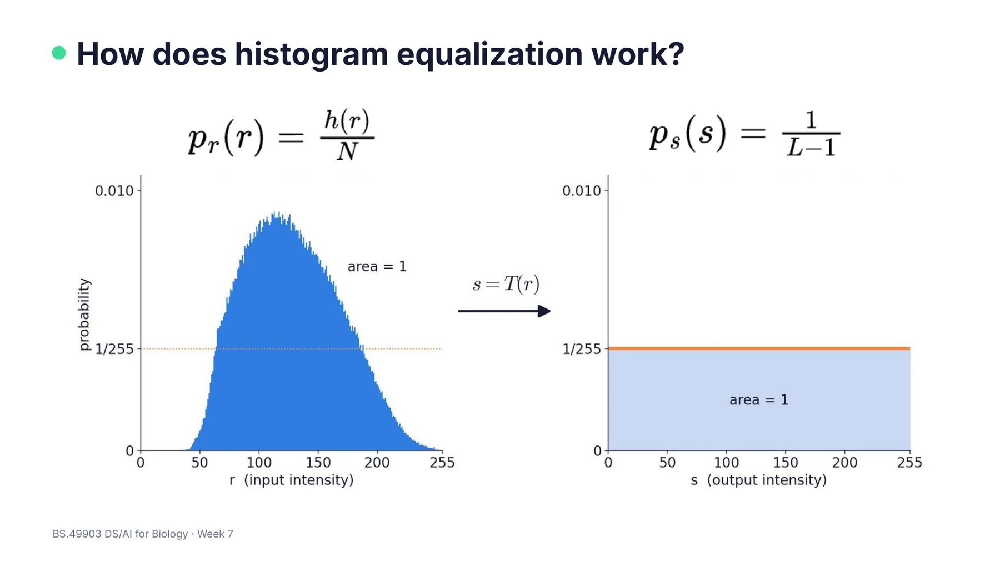
5.7 Histogram equalization (4/6) 유도 필수W7 p24 · 녹음 10/14
그래서 "입력값이 r 이하인 픽셀들"이 그대로 "출력값이 s = T(r) 이하인 픽셀들"이 된다.
두 집합이 같은 픽셀 집합이므로 전체에서 차지하는 비율, 즉 누적 면적도 같다. 이것이 아래 3번 식(입력 CDF = 출력 CDF)이다.
출력이 uniform이면 왼쪽 적분이 $s/(L-1)$로 바로 풀린다.
이산 영상에서는 여러 입력값이 한 출력값으로 합쳐질 수 있어, 이 관계가 근사적으로만 성립한다.
- 누적 면적(CDF)을 같게 놓는다. 연속으로 근사하면 다음과 같다. $$\int_0^s p_s(w)\,dw=\int_0^r p_r(w)\,dw$$
- 왼쪽 적분을 계산한다. 상수를 적분하면 된다. $$\int_0^s\frac1{L-1}dw=\frac{s}{L-1}=\int_0^r p_r(w)\,dw$$
- s에 대해 풀고, 이산 합으로 바꾼다. $$s=T(r)=(L-1)\int_0^r p_r(w)\,dw=(L-1)\sum_{j=0}^{r}\frac{h(j)}{N}$$ 즉 s = (L−1) × 입력의 CDF(r)이다. 각 픽셀값을 "그 값 이하인 픽셀의 비율"에 비례하는 값으로 보낸다.
5.7 Histogram equalization (5/6) 유도 필수W7 p21–24 · notebook 6 · 녹음 10/14
- T의 기울기는 $(L-1)\,p_r(r)$이다. 그래서 픽셀이 몰린(dense) 구간에서는 가파르게 올라가 출력값을 넓게 벌린다.
- 반대로 드문(rare) 구간에서는 평평하게 올라가 출력값을 압축한다. 쌓인 "쓰레기 더미를 고르게 펴서" 0–255를 채우는 셈이다.
- 결과 히스토그램은 (거의) 평평하고, 출력의 CDF는 직선이 된다.
- 출력 SD는 uniform 분포의 SD인 $255/\sqrt{12}\approx73.6$에 가까워진다. notebook에서는 원본 40.0, 정규화 45.9, 평활화 73.5였다.
- 밀도 변환식 $p_s=p_r/T'$로 보면, $T'\propto p_r$일 때 $p_s$가 상수가 된다. (5.6 (5/5) 참고)
작은 손계산 예 (L=8, N=16) 자료 외 보충
h(r) = [0, 0, 6, 6, 2, 2, 0, 0]이다. 값 2–5만 쓰고, 2와 3에 몰려 있다.CDF는 r=2에서 6/16, r=3에서 12/16, r=4에서 14/16, r=5에서 16/16이다.
s = 7·CDF를 계산하면 2.625, 5.25, 6.125, 7이고, 반올림하면 3, 5, 6, 7이다.
몰려 있던 2와 3은 3과 5로 가서 간격이 2로 벌어진다. 드문 4와 5는 6과 7로 가서 간격이 1이다.
원래 2–5(폭 3)를 쓰던 영상이 3–7(폭 4)을 쓰게 된다.
같은 값의 픽셀은 같은 출력으로 가므로 bin을 쪼갤 수 없다. 그래서 이산 영상에서는 완전히 평평해지지 않고 "nearly flat"이 된다.
참고로 이 식은 최솟값이 0으로 가지 않을 수 있다. 변형 공식은 CDF 최솟값을 빼서 0부터 시작하게 한다.
왜 CDF를 쓰면 uniform이 되나 (확률적 설명) 자료 외 보충
$S=F(R)$이면 다음이 성립한다. $$P(S\le F(r))=P(R\le r)=F(r)$$ 따라서 $P(S\le u)=u$이고, S는 [0,1]에서 uniform이다. 이것을 probability integral transform이라고 한다. 여기에 (L−1)을 곱하면 [0, L−1]에서 uniform이 된다.5.7 Histogram equalization (6/6) W7 p22–25 · 실습 W7 6.1–6.2 · 녹음 10/14
- 평활화는 드문 강도를 넓게 펼쳐 희귀한 구조를 강조한다.반대다. 픽셀이 많은(dense) 강도 구간을 넓게 펼치고, 드문(rare) 구간은 압축한다. 기울기가 $(L-1)\,p_r(r)$이기 때문이다.
- 평활화 식은 $p_r(r)$ 하나에 L−1을 곱한 것이다.식은 $s=(L-1)\sum_{j=0}^{r}h(j)/N$, 즉 입력 영상의 누적합(CDF)이다. 합은 j = 0부터 r까지이며, r도 포함한다.
- 평활화하면 입력 영상의 CDF가 직선이 된다.CDF를 가져다 쓰는 것은 입력이고, 평평해지는 것(CDF가 직선이 되는 것)은 출력이다. 목표 밀도는 1/(L−1) = 1/255이고, 곱하는 값도 L−1 = 255다.
- 평활화하면 이산 영상의 히스토그램도 완전히 평평해진다.거의 평평(nearly flat)할 뿐이다. 같은 값의 픽셀은 같은 출력으로 가야 해서 bin을 쪼갤 수 없고, 드문 값들은 하나로 합쳐지기도 한다. 자료 외 보충
- 평활화해도 서로 다른 값들은 계속 서로 다른 값으로 남는다.드문 값들은 합쳐질 수 있다. 예(L=8, N=16): h = [0,0,12,1,1,1,1,0]이면 값 2–6이 5, 6, 6, 7, 7이 되어, 3과 4가 6으로, 5와 6이 7로 합쳐진다. 자료 외 보충
- "Relative intensities lost"이니 밝기 순서도 뒤섞인다.CDF는 감소하지 않으므로, 더 밝던 픽셀이 더 어두워지지는 않는다(같아질 수는 있다). 잃는 것은 값 사이의 간격과 비율이다. 자료 외 보충
- 히스토그램 평활화는 노이즈를 줄여 준다.흔한 강도 구간을 펼치면서 그 안의 작은 차이(노이즈, 세포질 speckle)까지 큰 차이로 증폭한다. 노이즈를 줄이는 것은 이웃 평균인 smoothing이다. (2.5 참고)
히스토그램 평활화(histogram equalization)는 입력 영상의 누적분포를 변환 함수로 쓰는 비선형 point operation이다. $$s=(L-1)\sum_{j=0}^{r}h(j)/N$$ T가 증가함수이므로, 입력에서 r 이하인 픽셀 비율과 출력에서 s 이하인 픽셀 비율이 같아야 한다. 출력이 밀도 1/(L−1)인 uniform 분포이면 그 비율이 s/(L−1)이므로, $s=(L-1)\,\mathrm{CDF}(r)$이 된다. 기울기가 $(L-1)\,p_r(r)$이므로, 픽셀이 몰린 구간은 펼치고 드문 구간은 압축한다. 그래서 히스토그램이 (거의) 평평해진다. 이산 영상에서는 같은 값의 픽셀을 쪼갤 수 없어 완전히 평평하지는 않다.
“Derive the histogram equalization transform $s=T(r)$. Why does it make the histogram (nearly) flat?”
키워드: probability density function(확률밀도함수) · cumulative distribution function(누적분포함수) · uniform distribution(균등분포) · monotonically increasing(단조 증가) · nonlinear mapping(비선형 변환) · dense / rare intensities(몰린 / 드문 강도)
5.8 Normalization vs Equalization (1/3) 비교 서술W7 p25 · 녹음 10/14
| Normalization | Equalization | |
|---|---|---|
| Transformation | Linear | Nonlinear |
| Histogram shape | Kept (bump 유지) | Flattened |
| Relative intensities | Preserved | Lost |
| Downside | Outliers decide the range min이 outlier 한 픽셀이면 정규화해도 효과가 적다. | Amplifies noise in common intensities 예를 들어 세포질 안 speckle까지 강조된다. 어떤 feature를 강조할지 통제할 수 없다. |
| Upside | Parameter-free α, β를 사람이 정할 필요 없이 픽셀 분포가 자동으로 결정한다. | |
정규화: 최저점을 0점, 최고점을 100점으로 놓고 모두 같은 비율로 늘린다. 그러면 원래 몇 점 차이였는지가 비율대로 남는다.
평활화: 등수(백분위)로 점수를 준다. 자기보다 낮거나 같은 학생이 90%면 90점이다. 몰려 있던 학생들 사이의 작은 차이도 큰 점수 차가 되지만, 원래 몇 점 차이였는지는 사라진다. 순서는 남는다.
Compare image normalization and histogram equalization. When would you choose each?
평활화는 $s=(L-1)\,\mathrm{CDF}(r)$의 비선형 변환으로 히스토그램을 평평하게 만든다. 전 범위를 쓰므로 세부 구조가 잘 보인다. 하지만 상대 강도가 파괴되고, 흔한 강도 구간의 노이즈(세포질 speckle 등)까지 증폭한다.
둘 다 파라미터가 필요 없어 대량 영상의 일관된 전처리에 유리하다. 시각화나 구조 검출에는 평활화를, 강도의 정량 비교(발현량 비교 등)에는 정규화를 고른다.
Derive the histogram equalization transform s = T(r).
기울기가 $(L-1)p_r(r)$이므로 밀집 구간은 넓히고 희박 구간은 압축한다. 그래서 히스토그램이 (거의) 평평해진다.
5.8 Normalization vs Equalization (2/3) 비교 서술W7 p25 · 녹음 10/14
- 어느 게 더 좋나? 용도에 따라 다르다. 구조를 뚜렷이 보는 시각화가 목적이면 보통 equalization을 쓴다. (EM 예)
- 강도의 상대값이나 절대값 자체가 중요하면 normalization을 쓴다. 강도 10과 20의 차이나 분자 간 상대 발현을 비교할 때가 그렇다. 이때는 히스토그램 모양을 망가뜨리면 안 된다.
- 왜 parameter-free가 장점인가? 실험, 장비, 샘플 준비의 차이 때문에 어떤 영상은 밝고 어떤 영상은 어둡다. 수천 장을 하나하나 보며 α, β를 튜닝할 수는 없다.
- 그래서 모든 영상에 같은 방법을 일괄 적용한다. 그러면 데이터셋 전체가 일관되고, 같은 파이프라인을 적용할 수 있다.
- 시각화만을 위한 것인가? 아니다. 교수님은 "사람이 더 잘 보면 AI도 더 잘 본다"고 했다.
- AI 모델은 학습 때 본 영상과 밝기나 대비가 다른 영상에서는 성능이 떨어지기 쉽다. 즉 일반화(generalize)를 잘 못한다. 그래서 정규화하지 않은 영상을 넣으면 성능이 나빠질 수 있다.
- 전처리를 잘하면 모델이 더 잘 작동한다. 다른 방법으로는 augmentation(데이터 증강)이 있다. 학습 영상을 돌리거나 밝기를 바꾼 사본을 만들어 함께 학습시키는 방법이다. 자료 외 보충
- 전처리(pre-processing)는 어떤 계산 파이프라인에서도 매우 중요한 단계다.
- 약점이 선택을 정한다: 교수님은 각 방법의 약점이 어떤 방법을 쓸지 정한다고 했다. outlier가 문제면 min-max 대신 percentile을 쓰고, 노이즈가 많은 영상이면 평활화에 주의한다. ("this downside is actually going to determine which method you should use")
5.8 Normalization vs Equalization (3/3) 비교 서술W7 p25 · 녹음 10/14
- parameter-free는 평활화만의 장점이다.둘 다의 장점이다. 표의 Upside 칸이 두 열에 걸쳐 있다. 비교 대상은 α, β를 손으로 정하는 brightness/contrast 조정이다.
- 정규화의 단점은 노이즈 증폭이고, 평활화의 단점은 outlier다.짝이 반대다. 정규화의 단점은 outlier가 범위를 정한다는 것이다(outliers decide the range). 평활화의 단점은 흔한 강도 구간의 노이즈를 증폭한다는 것이다(amplifies noise in common intensities).
- "normalize"는 어디서나 같은 연산을 뜻한다.세 가지 뜻이 있으며 문맥으로 구분한다. ① 히스토그램을 N으로 나눠 합이 1인 확률로 만드는 것이다. ② 영상을 0–255로 늘리는 min-max 정규화다. ③ 평균 0, SD 1로 만드는 W4의 z-score 표준화다. (① 5.7, ③ 3.9)
- 평활화가 정규화보다 항상 낫다.용도에 따라 다르다. 시각화와 구조 판별에는 평활화, 강도의 정량 비교에는 정규화가 맞다.
- 전처리는 보기 좋으라고 하는 것이다.전처리는 데이터셋의 일관성과 AI 성능을 위한 단계다.
- 평활화는 영상 전체를 보고 변환을 정하니 공간 정보를 쓴다.정규화와 평활화 모두 point operation이다. 변환은 영상 전체의 값 분포(min/max, percentile 또는 histogram)로 정해지지만, 공간 정보는 쓰지 않는다. 추론
정규화는 선형 변환이라 히스토그램 모양과 상대 강도(relative intensity)를 보존한다. 하지만 bump가 남고, outlier가 범위를 결정한다. 평활화는 CDF를 쓰는 비선형 변환이라 히스토그램을 평평하게 해 구조가 잘 보인다. 하지만 상대 강도를 잃고, 흔한 강도 구간의 노이즈를 증폭한다. 그래서 시각화와 구조 판별에는 평활화를, 강도의 정량 비교에는 정규화를 쓴다. 둘 다 parameter-free 방법이라 사람이 α, β를 정할 필요가 없다. 그래서 여러 장비에서 온 대량 영상을 일관되게 전처리하는 데 적합하다.
“Compare image normalization and histogram equalization. Which would you choose for visualization, and which for comparing intensities quantitatively?”
키워드: normalization(정규화) · histogram equalization(히스토그램 평활화) · relative intensity(상대 강도) · noise amplification(노이즈 증폭) · parameter-free(파라미터 없음) · preprocessing(전처리)
5.✎ 영어 용어 정리 시험 문제는 영어로 나온다
문제에서 이 단어가 보이면 무엇을 묻는지 바로 떠올릴 수 있어야 한다. 답은 한국어로 써도 되지만, 용어는 영어 그대로 써도 좋다.
| English | 한국어 | 한 줄 뜻 |
|---|---|---|
| pixel | 픽셀 | 영상 배열의 한 칸이다. img[i, j]는 행 i, 열 j이고, img[0, 0]은 왼쪽 위다. |
| intensity | 강도 | 픽셀에 담긴 측정값, 즉 상대적 밝기다. uint8에서는 0이 검정, 255가 흰색이다. |
| grayscale | 회색조 | 채널이 하나인 영상이다. 형광 영상도 grayscale이며, 초록색은 표시용 색일 뿐이다. |
| channel | 채널 | 컬러 영상의 마지막 축이다. img[:,:,0]은 red 채널이며 평범한 2D 배열이다. |
| RGB | RGB 컬러 | shape이 (h, w, 3)인 3D 배열이다. grayscale 영상 3장을 채널로 쌓은 것이다. |
| resolution (physical pixel size) | 해상도 | 픽셀 하나가 덮는 실제 크기(μm/pixel)다. 작을수록 고해상도이며, 추출할 수 있는 생물학적 구조를 정한다. |
| data type (dtype) / bit depth | 데이터 타입 / 비트 깊이 | 값의 범위를 정한다. uint8은 0–255(L = 256), uint16은 0–65535다. |
| overflow (wrap-around) | 넘침(감김) | uint8 배열 계산이 범위를 넘으면 경고 없이 감긴다. 200 + 200은 144가 되므로, int로 바꿔 계산하고 clip한다. |
| segmentation mask / label image | 분할 영상 / 라벨 영상 | 픽셀마다 세포 ID를 정수로 담은 영상이다. 세포가 300개면 uint8로는 담을 수 없다. |
| histogram | 히스토그램 | x축은 강도 k, y축은 값이 k인 픽셀 수다. 위치 정보는 버리고 개수만 센다. |
| brightness | 밝기 | 픽셀값 분포의 평균, 즉 히스토그램의 위치다. 조정식은 $s=\mathrm{clip}(r+\beta,\,0,\,L-1)$이다. |
| contrast | 대비 | 픽셀값 분포의 폭, 즉 SD다. 조정식 $s=\mathrm{clip}(\alpha(r-\mu)+\mu,\,0,\,L-1)$은 평균을 유지하고 SD를 $|\alpha|$배 한다. |
| point operation | 점 연산 | 모든 픽셀에 같은 $s=T(r)$를 독립적으로 적용한다. 이웃 픽셀, 즉 공간 정보는 쓰지 않는다. |
| clipping | 잘라내기 | 범위 밖 값을 가장 가까운 끝값으로 바꾼다. 끝값은 보통 0과 L−1이다. 끝에 쌓인 픽셀끼리는 다시 구분할 수 없다. |
| linear transformation | 선형 변환 | $s=ar+b$ 꼴이다. 히스토그램을 넓히거나 좁힐 뿐, 모양은 바꾸지 못한다. |
| min-max normalization | 최소-최대 정규화 | $s=(L-1)(r-r_{min})/(r_{max}-r_{min})$이다. 영상이 전 범위를 쓰도록 늘리는 선형 변환이다. |
| percentile normalization | 백분위 정규화 | $r_{min}$, $r_{max}$ 대신 1st, 99th percentile을 쓴다. outlier를 배제하는 대신 일부 픽셀이 clip된다. |
| outlier | 이상값 | 다른 값들과 동떨어진 값이다. min-max에서는 outlier 하나가 범위를 정해 버린다. |
| histogram equalization | 히스토그램 평활화 | $s=(L-1)\sum_{j=0}^{r}h(j)/N$이다. 입력 CDF로 히스토그램을 평평하게 만드는 비선형 point operation이다. |
| smoothing | 스무딩 | 이웃 평균으로 노이즈를 줄이는 이웃 연산이다. 한국어로는 둘 다 "평활화"라 부르지만 histogram equalization과 전혀 다르다. |
| probability density / mass function | 확률밀도 / 확률질량함수 | 히스토그램을 픽셀 수 N으로 나눈 $p_r(r)=h(r)/N$이다. 모두 더하면 1이다. |
| cumulative distribution function (CDF) | 누적분포함수 | $\sum_{j=0}^{r}h(j)/N$, 즉 값이 r 이하인 픽셀의 비율이다. 감소하지 않으며, 평활화의 변환 함수가 된다. |
| uniform distribution | 균등분포 | 모든 값의 밀도가 같은 분포다. 목표 밀도는 $1/(L-1)$이고, SD는 $255/\sqrt{12}\approx73.6$이다. |
| nonlinear mapping | 비선형 변환 | 강도마다 기울기가 다른 변환이다. 평활화의 기울기는 $(L-1)\,p_r(r)$이라 픽셀이 몰린 구간을 펼친다. |
| relative intensity | 상대 강도 | 픽셀값 사이의 순서와 차이(간격)의 비율이다. 정규화는 이것을 보존하고, 평활화는 밝기 순서만 남기고 간격을 잃는다. 값 자체의 비(예: 40:80)는 min-max에서도 바뀔 수 있다. |
| noise amplification | 노이즈 증폭 | 흔한 강도 구간을 펼치면서 그 안의 작은 차이까지 키우는 현상이다. 평활화의 단점이다. |
| preprocessing | 전처리 | 분석이나 AI 모델 입력 전에 영상을 일관되게 맞추는 단계다. 어떤 계산 파이프라인에서도 중요하다. |
| parameter-free | 파라미터 없음 | α, β를 사람이 정하지 않고 픽셀 분포가 정한다. 정규화와 평활화 둘 다의 장점이다. |
6.1 자료형 (1/16): 한눈에 보기 W2-1 p16–41 · W3-1 p4
| 타입 | 특징 | 기억할 동작 |
|---|---|---|
list [1,"a",[2]] | 순서가 있다. 타입을 섞어 담을 수 있다. 원소를 바꿀 수 있다(mutable). |
|
tuple (1,2) | list와 같지만 바꿀 수 없다(immutable). | c[2]=5처럼 대입하면 error가 난다. |
| str | 문자의 나열(sequence)이다. 바꿀 수 없다(immutable). |
|
dict {"face":"spade"} | key와 value의 쌍이다. | 조회가 빠르다(fast lookup). 희소(sparse) 데이터를 표현하기에 알맞다. 예: {5:100, 9999:50, 13020:60}. |
| numpy array | 행렬 연산에 최적화되어 있다. 차원 수는 자유롭다. 모든 차원의 크기가 고정이고, 모든 원소의 dtype이 같다. mutable이다. |
|
| tensor (torch) | array와 비슷하다. | GPU로 쉽게 옮길 수 있다. 자동미분(autograd)을 위해 연산을 추적한다. |
| pandas | numpy array는 dtype이 하나이고 열 이름이 없다. 실제 생물 표는 타입이 섞여 있다. 예: species는 텍스트, mass는 float. |
|
6.1 자료형 (2/16): 어떤 그릇을 고르나 · 함정 W2-1 p16–41 · W3-1 p4
- 첫째, 담은 뒤 내용을 그 자리에서 바꿀 수 있는지가 다르다. list는 바꿀 수 있고, tuple과 str은 바꿀 수 없다.
- 둘째, 여러 종류를 섞어 담을 수 있는지가 다르다. list는 섞을 수 있고, numpy array는 섞을 수 없다.
- 셋째, 무엇으로 꺼내는지가 다르다. list는 0, 1, 2… 같은 번호로 꺼내고, dict는 이름표로 꺼낸다.
["Adelie", 39.1, "MALE"]은 글자와 숫자가 섞여 있다. 그래서 list에는 담을 수 있지만, 숫자 계산용 array에는 맞지 않는다.- 측정값을 모으듯 계속 늘어나는 모음에는 list를 쓴다.
- shape
(2, 2)처럼 바뀌면 안 되는 묶음은 tuple이다. - DNA 서열
"GTACTAGA"는 str로 다룬다. - 코돈으로 아미노산을 찾듯 이름으로 찾을 때는 dict를 쓴다.
- EM 영상이나 BOLD 신호 같은 숫자 격자는 numpy array에 담는다.
- penguins처럼 타입이 섞인 표는 DataFrame에 담는다.
- GPU와 자동미분이 필요한 딥러닝 학습에는 tensor를 쓴다.
- list와 array는 생김새가 같으니 연산도 똑같이 동작한다.연산의 뜻이 다르다.
[3,4,5]*2는 list에서는 반복이라[3,4,5,3,4,5]가 되고, array에서는 원소별 곱이라[6,8,10]이 된다. - W2-1 슬라이드대로
True or False는 False,count(2)는 3,a.dot(b)는 [[3 3],[7 7]]이다.이 챕터 범위에 있는 이 세 출력은 모두 슬라이드 오타다(p14, p21, p38). 정답은 차례로 True, 2, [[3 4],[7 10]]이고, 모두 노트북 출력과 같다. (int 범위 오타 p7은 1.1) - mutable이면 타입도 섞어 담을 수 있다.둘은 서로 다른 성질이다. numpy array는 mutable이지만 dtype은 하나뿐이다.
6.1 자료형 (3/16): bool · 비교 · truthiness W2-1 p12–14 · W2-2 p2–3 · 실습 W2 Part 2
- bool은 True와 False 두 값을 가진다. 숫자 0은 False로, 0이 아닌 수는 True로 해석된다.
- 비교 연산자
==,!=,>,<,>=,<=의 결과는 bool이다. - 예를 들어
3 == 3,"abc" != "ab",[1,2] == [1,2]는 모두 True다. - 반면
[2,1] == [1,2]는 False다. list는 원소를 순서대로 비교하기 때문이다. - bool은 숫자처럼 계산된다. True는 1, False는 0으로 취급된다.
- 그래서
True*True는 1,True-True는 0,True+True는 2다.sum([True,False,True,True])는 3이 되므로 개수 세기에 쓸 수 있다. - 조건 자리에는 True나 False로 바꿀 수 있는 값이면 무엇이든 올 수 있다. 이것을 truthiness라고 한다. ("Any value that can be converted to True or False can be used")
0,0.0,"",[],{},None은 False로 해석된다(falsy).- 나머지 값은 모두 True로 해석된다(truthy). 예:
-5,"ATG",[0].
True or False의 출력이 Out: False로 나와 있다. 하지만 정답은 True다. or는 하나라도 참이면 참이기 때문이고, 노트북 출력도 True다. (or의 정의 W2-2 p4 · 노트북 3.1)[2.1, 0.3, 5.8, 0.1, 3.4]에 "1보다 큰가?"를 물으면 답은 [예, 아니오, 예, 아니오, 예]다. 이것을 더하면 3개가 된다.6.1 자료형 (4/16): bool · truthiness — 쓰임과 함정 W2-1 p12–14 · W2-2 p2–3 · 실습 W2 Part 2
- 조건에 맞는 데이터의 개수를 반복문 없이 셀 수 있다. 예:
(expression > 1).sum()→ 3. - bool은 if 문과 필터(마스크)의 재료가 된다. (6.2)
if score:처럼 truthiness를 쓰면 코드가 짧아진다. 하지만 값이 0인 정상 데이터도 거짓으로 처리된다. (노트북: "careful: a score of 0 is FALSY")- 0이 나올 수 있는 측정값은 명시적으로 비교하는 편이 안전하다. 예:
score >= 60,x is not None.
- 슬라이드 p14에 나온 대로
True or False는 False다.True or False는 True다. 슬라이드의 False는 오타다. [2,1]과[1,2]는 같은 원소를 가졌으니==로 비교하면 True다.결과는 False다. list 비교는 같은 원소를 가졌는지가 아니라, 같은 순서로 같은 원소가 있는지를 본다.[0]은 0이 들어 있으니 조건문에서 False다.[0]은 True다. 원소가 0이어도 list가 비어 있지 않기 때문이다.- 문자열
"0"과 실수0.0은 둘 다 0이니 똑같이 False다.문자열"0"은 비어 있지 않은 문자열이라 True다. 자료 외 보충 반면0.0은 False다. if score:는 점수가 입력되었는지를 묻는다.실제로는 score가 0이 아닌지를 묻는다. 그래서 score가 0이면 Fail로 처리된다.=와==는 둘 다 "같다"는 뜻이다.=는 대입이고,==는 비교다. 슬라이드의__eq__ # =주석도==를 뜻한다. (W2-2 p50)
불리언(boolean) 값은 계산에 쓰이면 True가 1, False가 0으로 동작한다. 그래서 조건식으로 만든 True/False 배열을 더하면 조건을 만족하는 원소의 개수가 된다. 조건 자리에서는 0, 빈 컨테이너, None이 False로 해석된다. 그 밖의 값은 True로 해석되며, 이 규칙을 truthiness라고 한다.
“What is the value of True + True, and why? Using the same idea, explain why summing a boolean array counts the elements that satisfy a condition.”
키워드: boolean(불리언) · truthiness(참·거짓 해석) · count(개수) · condition(조건) · empty container(빈 컨테이너)
6.1 자료형 (5/16): list · tuple · str — mutable vs immutable W2-1 p17–29 · 실습 W2 4.1–4.4
list: 순서가 있고, 타입을 섞을 수 있고, 바꿀 수 있다(mutable).
- 원소에 새 값을 대입할 수 있다. 예:
c = [1,3,2,2,2]에서c[2] = 5→[1,3,5,2,2]. - 인덱스는 0부터 세고,
c[-1]은 마지막 원소다. - 슬라이스는 시작을 포함하고 끝을 제외한다. 예:
c[1:4]→[3,2,2]. append,remove,sort,reverse는 제자리에서 바꾸고 None을 반환한다.pop()만 제거한 원소를 반환한다. 예:[3,4,5].pop()→ 5.
tuple과 str: 순서가 있지만 바꿀 수 없다(immutable).
- tuple에
c[2] = 5처럼 대입하면 TypeError가 난다. ('tuple' object does not support item assignment) - tuple도 읽기, 슬라이스,
+,*는 된다. 이때는 새 tuple이 만들어진다. - str에
a[1] = "e"처럼 대입해도 TypeError가 난다. "ATG".lower()는 새 문자열"atg"를 돌려준다. 원본"ATG"는 그대로다."ATGCGC".count("G")는 2이고,"ATG" in "ATGCGC"는 True다.
"ATG".lower()는 "atg"라는 새 문자열을 줄 뿐이고, 원래 "ATG"는 그대로 남는다.6.1 자료형 (6/16): list · tuple · str — 쓰임과 함정 W2-1 p17–29 · 실습 W2 4.1–4.4
- list: 개수가 바뀌는 모음에 쓴다. 예를 들어 측정값을 하나씩 모으거나, 유전자 이름 목록을 for로 돈다.
- tuple: 바뀌면 안 되는 묶음을 실수로부터 보호한다. numpy의
a.shape가(2, 2)처럼 tuple로 나오는 것이 그 예다. 염색체, 시작, 끝 같은 좌표 기록에도 알맞다. 추론 - str: DNA나 단백질 서열을 다룬다.
seq[i:i+3]로 코돈을 자르고,count로 GC를 센다. - 숫자 계산이 많으면 list 대신 numpy array를 쓴다. list의
*와+는 반복과 이어붙이기라서 수학 연산이 아니기 때문이다.
- 정렬한 결과를 남기려면
a = a.sort()라고 쓴다.그러면 a가 None이 된다. sort는 제자리에서 정렬한 뒤 None을 반환하므로,a.sort()만 쓰면 된다. [1,3,2,2,2]에서remove(2)를 한 뒤count(2)는 슬라이드 p21대로 3이다.remove(2)는 첫 번째 2만 지우므로count(2)는 2다. 슬라이드의 3은 오타다.c[1:4]는 인덱스 1부터 4까지 4개를 고른다.슬라이스와range는 끝을 제외하므로,c[1:4]는 인덱스 1, 2, 3의 3개다. 예외로 pandas.loc은 끝을 포함한다. (6.1 loc vs iloc)d.strip()을 호출하면 d 자체가 바뀐다.str 메서드는 원본을 바꾸지 않는다. 결과를 쓰려면d = d.strip()처럼 다시 저장해야 한다.split(",")은 쉼표로 나누면서 앞뒤 공백도 지워 준다.공백은 지우지 않는다. 예:" bio, math, cs ".split(",")→[' bio', ' math', ' cs '].
list는 바꿀 수 있는(mutable) 자료형이라 원소 대입과 append가 가능하다. append나 sort 같은 메서드는 원본을 제자리에서(in place) 바꾸고 None을 반환한다. tuple과 str은 바꿀 수 없는(immutable) 자료형이라 원소를 대입하면 TypeError가 난다. str 메서드는 원본을 그대로 두고 새 문자열을 만들어 반환한다.
“What is the difference between a mutable and an immutable object? Using a list and a tuple, explain what happens when you try to change one of their elements.”
키워드: mutable(가변) · immutable(불변) · in place(제자리에서) · return value(반환값) · element assignment(원소 대입)
6.1 자료형 (7/16): dict — 이름표로 찾는 표 W2-1 p31–33 · 실습 W2 4.5, 5.3
- dict는
{key: value}쌍을 담는다. 예:card = {"face": "spade", "value": 10}이면card["face"]는 "spade"다. keys()와values()로 key와 value를 볼 수 있다. dict는 mutable이라letter["e"] = 5처럼 항목을 추가할 수 있다.- dict는 빠른 조회(fast lookup)에 쓴다. 예:
{"user1": "Alex", "user2": "Sam", …}. - 코돈표
{"AUG": "Met", "UGA": "Stop", …}에서codon_table["UGA"]는 "Stop"이다. - 희소 데이터(sparse data)도 dict로 표현한다. 대부분 0인 긴 벡터에서 0이 아닌 위치만 저장한다. 예:
{5: 100, 9999: 50, 13020: 60}. "z" in letter는 key를 검사한다. "z"라는 key가 없으므로 결과는 False다.letter.get("z", 0)은 0을 돌려준다. 없는 key면 에러 대신 기본값을 주기 때문이다.- 값을 찾기만 하는 일이라면
match–case보다 dict가 짧고 확장하기 쉽다. 예:codon_table.get("XYZ", "Unknown codon"). (노트북 5.3)
"UGA"를 넣으면 바로 "Stop"이 나온다. 또 13,020번 칸까지 있는 긴 목록에 값이 3개뿐이라고 하자. 그러면 13,021칸을 다 만드는 대신 "5번: 100, 9999번: 50, 13020번: 60" 세 줄만 적어 둔다. 이것이 sparse 표현이다.- ID로 값 찾기: 코돈으로 아미노산을, 유전자 이름으로 발현량을, 샘플 ID로 메타데이터를 찾는다.
- 왜 빠른가: list에서 값을 찾으려면 원소를 앞에서부터 비교해야 하므로, 시간이 원소 수에 비례한다. dict는 key로부터 저장 위치를 바로 계산한다(hash table). 그래서 원소가 많아도 조회 시간이 거의 일정하다. 자료 외 보충
- Sparse: 0이 아닌 값이 드문 데이터에서 메모리를 아낀다. 예를 들어 긴 서열에서 변이가 있는 위치만 기록할 수 있다. 추론
- 언제 쓰면 안 되나: 순서나 위치가 의미를 갖는 숫자 계산에는 numpy array를 쓴다. 시계열과 영상이 그 예다. dict는 "몇 번째"가 아니라 "어떤 이름"으로 찾는 구조이기 때문이다.
1 in {"a": 1}은 값 1이 들어 있으니 True다.결과는 False다.in은 dict의 key만 보기 때문이다.- 없는 key를
[ ]로 찾아도 에러는 나지 않는다.KeyError가 난다. 자료 외 보충 key가 있는지 확실하지 않으면.get(key, 기본값)을 쓴다. - 이미 있는 key에 다시 대입하면 항목이 하나 더 추가된다.추가가 아니라 덮어쓰기다.
d["a"] = 5를 하면 기존 값은 사라진다. 자료 외 보충 card[0]은 dict의 첫 번째 항목을 꺼낸다.key가 0인 항목을 찾는다. 그런 key가 없으면 KeyError가 난다. 자료 외 보충- sparse 표현은 0인 칸을 버리므로 정보가 손실되는 압축이다.0인 칸을 생략할 뿐이다. 전체 길이를 알고 없는 key를 0으로 읽으면 원래 벡터를 그대로 복원할 수 있다. 추론
6.1 자료형 (8/16): numpy array — 고정 크기 · 고정 dtype W2-1 p34–38 · 실습 W2 4.6
- numpy array는 행렬 연산에 최적화되어 있다. 차원 수는 자유롭고, 모든 차원의 크기가 고정이며, 모든 원소가 같은 dtype이다. 그리고 mutable이다. (W2-1 p34)
- shape는 attribute로 확인한다.
a.shape는(2, 2)이고,c.shape는(3, 2)다. a.dtype은 int64다.dtype="uint8"처럼 dtype을 직접 지정할 수도 있다.a = np.array([[1,2],[3,4]]),b = np.array([[1,2],[1,1]])라고 하자.a + b는[[2,4],[4,5]]이고,a * b는[[1,4],[3,4]]다.- 즉
+와*는 원소별 연산이고, 행렬곱이 아니다. - 행렬곱은
a.dot(b),np.matmul(a, b),a @ b로 한다. 결과는 모두 [[3, 4], [7, 10]]이다. 손으로 계산하면 다음과 같다. $$\begin{bmatrix}1&2\\3&4\end{bmatrix}\begin{bmatrix}1&2\\1&1\end{bmatrix}=\begin{bmatrix}1\cdot1+2\cdot1 & 1\cdot2+2\cdot1\\ 3\cdot1+4\cdot1 & 3\cdot2+4\cdot1\end{bmatrix}=\begin{bmatrix}3&4\\7&10\end{bmatrix}$$ c.T는 전치(transpose)다. shape가(3,2)에서(2,3)으로 바뀐다.a + c처럼 shape가(2,2)와(3,2)인 배열을 더하면 ValueError가 난다. ("operands could not be broadcast together")
a.dot(b)와 np.matmul(a,b)의 결과를 [[3 3],[7 7]]로 보여 준다. 하지만 정답은 [[3 4],[7 10]]이다. 위의 손 계산과 노트북 출력이 모두 이 값을 준다. (노트북 4.6)[3,4,5] * 2를 하면, list는 두 번 이어붙여 [3,4,5,3,4,5]가 되고 array는 칸마다 곱해 [6,8,10]이 된다.6.1 자료형 (9/16): numpy array — 쓰임과 함정 W2-1 p34–38 · 실습 W2 4.6
- 숫자 격자 데이터: EM 영상은 2D uint8 array다. 유전자 발현 행렬도 숫자 격자다. (EM 영상은 5.1)
- fMRI BOLD 신호는 subject 수 N, 시간 길이 T인 $N \times T$ 행렬이다. 행은 subject, 열은 timepoint다. (W3-1 "X : NxT")
- 왜 빠른가: 원소가 모두 같은 dtype이고 크기가 같아서 메모리에 연속으로 저장된다. 그리고 Python for 문으로 한 칸씩 도는 대신, numpy 안에 미리 만들어 둔 빠른 계산 코드가 모든 칸을 한꺼번에 처리한다. 이것을 벡터화(vectorization)라고 한다. 반면 list는 원소마다 타입이 다를 수 있어서 하나씩 확인해야 한다. 자료 외 보충
- dtype 선택은 메모리와 overflow에 직결된다. (1.1, 1.2)
- 언제 쓰면 안 되나: 열마다 타입이 다른 표에는 pandas를 쓴다. 개수가 계속 늘어나는 수집은 list에 모은 뒤
np.array(list)로 바꾼다.
- 2행 2열 array끼리
a * b를 하면 행렬곱이 계산된다.a * b는 원소별 곱이다. 행렬곱은a.dot(b),np.matmul,@로 한다. - shape가 다른 배열끼리 연산하면 무조건 error가 난다.스칼라를 더하는
a + 1이나(2,2)+(2,)처럼 맞춰 늘릴 수 있으면 자동으로 확장된다(broadcasting). 자료 외 보충 error는(2,2)+(3,2)처럼 맞출 수 없을 때만 난다. - 타입을 섞어 array를 만들면 각 원소가 자기 타입을 유지한다.dtype이 하나뿐이라 하나로 강제 변환된다.
np.array([1, 2.5])는 전부 float64가 되고,np.array([1, "a"])는 전부 문자열이 되어 숫자 계산을 할 수 없다. 자료 외 보충 - array도 list처럼 append로 원소를 늘릴 수 있다.크기가 고정이라 그 자리에서 늘릴 수 없다. 원소를 더하려면 새 배열을 만든다. 자료 외 보충
- 크기가 고정이면 안의 값도 바꿀 수 없다.array는 mutable이므로
a[0, 0] = 9같은 값 변경은 가능하다.
numpy array는 모든 원소가 같은 dtype이고, 모든 차원의 크기가 고정되어 있다. 그래서 반복문 없이 원소별(element-wise) 연산과 행렬 연산을 빠르게 수행한다. 대신 텍스트와 숫자가 섞인 표에는 맞지 않는다. 그런 표에는 pandas DataFrame을 쓴다.
“What is the difference between a Python list and a NumPy array? Why is a NumPy array suited to fast numerical computation, and when would you use a pandas DataFrame instead?”
키워드: element-wise(원소별) · fixed dtype(고정된 자료형) · fixed size(고정된 크기) · without a loop(반복문 없이) · matrix operation(행렬 연산) · mixed types(여러 타입이 섞인)
6.1 자료형 (10/16): 형 변환(type casting) · array vs tensor W2-1 p30, p39–41 · 실습 W2 4.7
str(123)은'123',int("123")은 123,float('123')은 123.0이 된다. 타입은type(a)로 확인한다.int(3.7)은 3이다. 반올림하지 않고 0 쪽으로 버리기 때문이다.int("3.7")은 ValueError가 난다. "3.7"은 정수 모양의 문자열이 아니기 때문이다.np.array([1,2,3])은 list를 array로 바꾼다.b.astype("uint8")은 dtype을 바꾼다.- 반대로
list(b)는[np.int64(1), np.int64(2), np.int64(3)]을 준다. 원소가 numpy 정수 타입으로 남는다. - array와 tensor는 둘 다 n차원 숫자 격자다. 차이는 두 가지다. (W2-1 p41)
- 첫째, tensor는 GPU로 쉽게 옮길 수 있다. 둘째, tensor는 자동 미분을 위해 연산을 기록(track)한다.
'123'은 그냥 문자 세 개다. 그래서 '123' + '1'은 이어붙여져 '1231'이 된다. int('123')으로 숫자로 바꿔야 123 + 1 = 124가 된다.tensor는 계산을 하면서 어떤 계산을 했는지 기록을 남기는 array다. 그래서 나중에 그 기록을 거꾸로 따라가며 그래디언트(gradient)를 자동으로 계산할 수 있다. 그래디언트는 각 숫자를 조금 바꿀 때 결과가 얼마나, 어느 방향으로 변하는지를 나타낸다. 결과(손실)를 줄이려면 gradient의 반대 방향으로 바꾼다. 자료 외 보충
- 파일에서 읽은 숫자가 글자일 수 있다. 그러면 숫자로 바꿔야 계산할 수 있다. 추론
- 영상 계산: uint8 그대로 더하면 overflow가 난다. 그래서 먼저
astype(int/float)로 바꿔 계산하고, clip한 뒤 다시 uint8로 바꾼다. (1.1 · 실습 W7 2.1, 4.1 "cast first, then clip if needed" · 교수님 10/12 녹음) - tensor: 딥러닝 학습에 쓴다. GPU로 옮겨 대량의 곱셈을 빠르게 처리한다. 자료 외 보충
- 또 손실의 gradient를 자동으로 구해, 그 반대 방향으로 파라미터를 갱신한다. 이것이 경사하강법이다. 자료 외 보충 (3.8)
- 작은 통계 분석에는 numpy로 충분하다. 추론
int(3.7)은 반올림해서 4다.결과는 3이다. 노트북 주석대로 0 쪽으로 버리므로(truncates toward zero),int(-3.7)도 −4가 아니라 −3이다.int("3.7")은 소수점을 버려 3을 준다.ValueError가 난다. 소수 문자열은 먼저float("3.7")로 바꿔야 한다. 자료 외 보충b.astype(...)를 호출하면 b 자체의 dtype이 바뀐다.astype은 원본을 바꾸지 않고 새 배열을 돌려준다. 그래서b = b.astype(...)처럼 저장한다. 자료 외 보충- 범위 밖의 값을 작은 정수 dtype으로 바꿔도 값은 그대로 남는다.값이 깨진다. 정수 배열
np.array([300])을astype("uint8")로 바꾸면 300 − 256 = 44가 된다. 자료 외 보충 (overflow는 1.1) - array와 tensor는 차원 수가 다르거나, 서로 다른 수학 객체다.둘 다 틀린 답이다. 슬라이드의 답은 GPU 이동과 자동미분용 연산 추적, 이 두 가지다.
6.1 자료형 (11/16): pandas — 왜 쓰나, Series/DataFrame W3-1 p4, p6 · 실습 W3 1.1, 1.3
- numpy array는 dtype이 하나이고 열 이름이 없다. 그런데 실제 생물 표는 타입이 섞여 있다. 예를 들어 species와 sex는 텍스트이고, mass는 float다.
- 그래서 pandas는 numpy 위에 label, 혼합 dtype, 결측치(NaN), grouping을 더한다.
- pandas의 객체는 두 가지뿐이다. Series는 label이 붙은 열 하나다.
- DataFrame은 같은 index를 공유하는 Series들의 dict다.
df.index는 행 label이고,df.columns는 열 이름이다.df["body_mass_g"]처럼 열 하나를 꺼내면 Series가 된다.- 계산할 때는 numpy array를 꺼내서 쓴다. 예:
df[["bill_length_mm","bill_depth_mm"]].values또는.to_numpy(). ("Extracts info into numpy array for computation")
df["body_mass_g"]가 Series다.6.1 자료형 (12/16): pandas Series/DataFrame — 쓰임과 함정 W3-1 p4, p6 · 실습 W3 1.1, 1.3
- 섞인 타입 표: penguins 표는 종, 섬, 성별이 텍스트이고 측정값 4개가 float다.
- numpy 배열 하나에 텍스트와 숫자를 넣으면 dtype이 하나로 통일되어, 숫자까지 전부 문자열이 된다. 자료 외 보충 게다가 열도 번호로 기억해야 한다. (6.1 numpy array)
- DataFrame은 "dict of Series"라서 열을 이름으로 꺼낸다. 또 모든 열이 같은 index를 공유하므로 열끼리 행이 어긋나지 않는다.
- 언제 쓰면 안 되나: 영상처럼 큰 숫자 격자에는 numpy를 쓴다. 머신러닝 계산 단계에서는
.values로 꺼낸 array를 쓴다.
df["a"]와df[["a"]]는 같은 것을 돌려준다.이름 하나를 주면 Series가, 이름의 list를 주면 DataFrame이 나온다. 괄호 한 겹 차이로 객체 종류가 달라진다.- pandas는 numpy와 별개의 계산 도구다.pandas는 numpy 위에 label, 혼합 dtype, grouping을 얹고 결측치 처리를 더한 것이다. (W3-1 p4 "on top of numpy" · 실습 W3 1.1 "missing values")
df.shape와df.head()는 둘 다 괄호를 붙여 호출한다.df.shape는 괄호 없이 읽는 attribute이고,df.head()는 괄호로 호출하는 method다. (6.3 Class · Object · self)
6.1 자료형 (13/16): pandas — 계산 전에 점검 · 행 필터 W3-1 p5, p7, p9 · 실습 W3 1.2, 1.4
- 계산하기 전에 데이터를 먼저 점검한다. ("Inspect the data before you compute")
- 점검 도구는
df.head(),df.shape,df.columns,df.dtypes,df.info(),df.describe(),df.isna().sum()이다. - penguins 표에서
df.shape는 (344, 7)이다. df.isna().sum()은 열별 결측 수를 준다. sex 열은 11개, 측정 4열은 각 2개가 비어 있다.describe()는 NaN을 무시한다. 그래서 측정 열의 count는 342다. body_mass_g의 평균은 4201.8, std는 802.0이다.- 행 필터는 boolean mask로 한다.
df[df["body_mass_g"] > 6000]은 슬라이드 출력에서 2행이다. 라벨은 237과 253이고, 체중은 6300 g과 6050 g이다. (6.2 Boolean masking) df[(df["species"]=="Gentoo") & (df["body_mass_g"]>5500)]는 28행이다.- cheat sheet의 개념도 알아 둔다.
groupby('g')['x'].mean()은 그룹별 평균을,value_counts()는 범주별 개수를 준다. dropna()는 결측 행을 지우고,merge는 표를 합친다.reset_index(drop=True)는 index를 다시 0부터 매긴다.
6.1 자료형 (14/16): pandas 점검 · 행 필터 — 쓰임과 함정 W3-1 p5, p7, p9 · 실습 W3 1.2, 1.4
- 점검이 먼저인 이유: 결측치, 잘못된 타입, 이상값이 있으면 결과가 틀어진다. 그런데 에러 없이 조용히 지나가는 경우가 많다.
- 예를 들어 pandas 평균은 NaN을 말없이 빼고 342개로 계산한다. 이상값은 평균과 회귀선을 끌어당긴다. 추론
info()와isna()가 대부분의 데이터 문제를 잡는다. (노트북 1.2)- 영상에서도 같은 원칙을 따른다. (5.2 "계산 전에 점검하라")
- 필터: 관심 집단만 골라 분석한다. 예: Gentoo 암컷, 5500 g 초과.
- groupby: 종별 평균 체중처럼 그룹으로 나눠 요약한다. 그룹을 나눠 보면 전체 추세가 뒤집히는 Simpson's paradox를 확인할 수 있다. 추론 (3.6)
- penguins의
describe()count는 전체 행 수인 344다.count는 342다. 평균과 SD도 NaN을 뺀 342개로 계산된 값이다. ("check the count row") - pandas와 numpy의
std()는 같은 데이터에서 같은 값을 준다.pandas 기본은 ddof=1이라 N−1로 나누고, numpy 기본은 ddof=0이라 N으로 나눈다. 그래서 값이 다르다. (1.4) dropna()를 하면 어느 열을 기준으로 하든 남는 행 수가 같다.결측 수가 열마다 다르다(sex 11, 측정값 2). 그래서 어느 열 기준으로 지우느냐에 따라 남는 행 수가 달라진다. 추론 측정 4열 기준dropna(subset=[...])는 342행을 남긴다(과제 1). 모든 열 기준df.dropna()는 sex만 빈 행까지 지워 333행을 남긴다. 333은 직접 계산=='Female'로 비교해도 표의FEMALE행이 잡힌다.문자열 비교는 대소문자까지 정확히 맞아야 한다. 슬라이드 코드는=='Female'인데 표의 값은FEMALE이라, 그대로 실행하면 0행이 나올 것이다. 추론 (W3-1 p7)- 텍스트 열 dtype이
object로 보이다가str로 보이면 데이터가 달라진 것이다.pandas 2에서는object, pandas 3에서는str로 보일 뿐인 버전 차이다. 그래서 가상환경으로 버전을 맞춘다. (노트북 1.2 · 6.4)
6.1 자료형 (15/16): pandas — loc vs iloc W3-1 p8 · 실습 W3 1.5
.loc은 label 기준이라 슬라이스의 끝을 포함한다.- 예:
df.loc[220:225, "species":"bill_length_mm"]는 행 220, 222, 225를 준다. index에 221, 223, 224가 없기 때문이다. 열은 species부터 bill_length_mm까지 3개다. .iloc은 위치 기준이라 슬라이스의 끝을 제외한다.- 예:
df.iloc[1:3, 2:5]는 위치 1, 2의 행을 준다. 이 두 행의 라벨은 222와 225다. - 열은 위치 2, 3, 4의 3개다. 각각 bill_length, bill_depth, flipper_length다.
- 노트북처럼 원래 index가 0, 1, 2…인 표에서도 끝 처리는 다르다.
df.loc[2:4]는 행 2, 3, 4를 주고,df.iloc[2:4]는 행 2, 3을 준다.
iloc[1:3])라고 하면 줄 번호 1, 2만 나오고 줄 번호 3은 빠진다. 줄 번호는 0부터 센다.6.1 자료형 (16/16): loc vs iloc — 쓰임과 함정 W3-1 p8 · 실습 W3 1.5
- loc: 샘플 ID, 유전자 이름, 열 이름처럼 의미 있는 이름으로 고를 때 쓴다. 정렬이나 필터 뒤에도 같은 대상을 가리킨다.
- iloc: "처음 5행", "2–4번째 열"처럼 위치가 중요할 때 쓴다.
- 왜 loc은 끝을 포함하나: label은 "다음 label"이 무엇인지 정해져 있지 않다. 220 다음이 221인지 222인지는 index를 봐야 안다. 추론
- 그래서 "어디까지"로 지정한 label 자체를 포함하는 편이 자연스럽다. 위치는 정수이므로 Python 관례대로 끝을 제외한다. 추론
- loc은 끝을 제외하고, iloc은 끝을 포함한다.반대다. loc은 끝을 포함하고 iloc은 끝을 제외한다. 반대로 외우기 쉬우니 주의한다.
df.loc[220:225]는 220부터 225까지 숫자 6개에 해당하는 6행이다.index 순서상 220부터 225까지 실제로 존재하는 label만 고른다. 그래서 결과는 3행이다.- 필터링한 표의 첫 행은
df.loc[0]으로 꺼낸다.필터 후 index는 0부터 다시 매겨지지 않으므로 label 0이 없을 수 있고, 없으면 KeyError가 난다. 자료 외 보충 첫 행은df.iloc[0]으로 꺼내고, 번호를 새로 매기려면reset_index(drop=True)를 쓴다.
.loc은 index 이름표(label)를 기준으로 고르므로 슬라이스의 끝 label을 포함한다. .iloc은 0부터 센 정수 위치(position)를 기준으로 고르므로 Python 관례대로 끝을 제외한다. 행을 필터링한 뒤에는 label과 위치가 서로 달라지므로 둘을 구분해야 한다. 예를 들어 label은 220, 222, …이고, 위치는 0, 1, …이다.
“What is the difference between label-based (.loc) and position-based (.iloc) indexing in pandas? Why must you tell them apart after some rows have been filtered out?”
키워드: label(이름표) · position(위치) · index(인덱스) · slice(슬라이스) · inclusive(끝 포함) · exclusive(끝 제외)
6.2 논리 연산 vs 비트 연산, 조건문·반복문 (1/9): and/or vs &/| W2-2 p4–8 · W2 notebook 3.1–3.3
and,or,not은 참·거짓(truth)을 판단하는 논리 연산자다.x and y는 둘 다 참이어야 참이고,x or y는 하나라도 참이면 참이다.not x는 x가 거짓이면 참이다.- and와 or는 답이 정해지면 그 자리에서 멈춘다. 이것을 short-circuit이라고 한다.
- and와 or는 실제로 피연산자 중 하나를 그대로 반환한다. 예:
2 or 1은 2,0 or 1은 1,2 and 1은 1,0 and 1은 0이다. - True/False가 꼭 필요하면
bool(2 or 1)처럼 감싼다. 반면not은 항상 True나 False를 반환한다. 예:not 2→ False. 자료 외 보충 &,|,~는 비트 단위 연산자다.12 & 10은 1100과 1010의 자리별 AND라서 1000, 즉 8이다.12 | 10은 1110, 즉 14다. 또3 & 2는 2이고,3 | 2는 3이다.- 정수에서
~12는 −13이다. 일반적으로~n은 −n−1이다. - 노트북에는 XOR도 나온다.
12 ^ 10은 0110, 즉 6이다. - 값이 True/False 하나씩일 때는
a and b와a & b의 결과가 같다. (W2-2 p6) - numpy boolean 배열에서는
&,|,~가 원소별(element-wise) AND, OR, NOT이다. - 예:
[T,F,T] & [T,F,F]→[T,F,F]. 같은 두 배열에|를 쓰면[T,F,T]이고,~[T,F,T]는[F,T,F]다. - short-circuit을 이용하면 안전하게 검사할 수 있다.
x = None일 때x is not None and x > 0은 False다. 앞이 거짓이라 뒤는 실행되지 않기 때문이다. - 순서를 바꾼
x > 0 and x is not None은 TypeError가 난다.
6.2 논리 연산 vs 비트 연산, 조건문·반복문 (2/9): and/or vs &/| — 쓰임과 함정 W2-2 p4–8 · W2 notebook 3.1–3.3
- and/or: 값 하나짜리 조건에 쓴다. 예:
if (age >= 21) and has_id:. - &, |, ~: 배열 전체의 조건을 칸별로 결합한다. 이것이 다음 슬라이드의 마스킹이다. 예를 들어 Gentoo이면서 5500 g을 넘는 펭귄을 고른다.
- short-circuit: 앞 조건이 거짓이면 뒤를 계산하지 않는다. 그래서 "None이 아니고, 0보다 크면"처럼 안전 검사를 앞에 둔다.
- numpy 배열 두 개에
and를 써도 원소별로 결합된다.ValueError가 난다. 여러 칸짜리 배열을 True/False 하나로 바꿀 수 없기 때문이다. 자료 외 보충 ("The truth value of an array with more than one element is ambiguous") - and와 or의 결과는 항상 True나 False다.피연산자 하나를 그대로 돌려준다. 예:
0 and 1은 0,2 or 1은 2다. ~12는 비트를 뒤집어 3이 된다.결과는 −13이다. Python 정수는 부호가 있기 때문이다. 불리언 배열에서만~가 단순한 NOT으로 동작한다.12 & 10은 둘 다 참이니 True다.비트 계산이라 8이다. 반면12 and 10은 10이다. 12가 truthy라서 두 번째 피연산자를 반환하기 때문이다.- and로 묶은 두 조건은 순서를 바꿔도 결과가 같다.short-circuit 때문에 피연산자 순서가 결과를 바꿀 수 있다. None 검사를 뒤에 두면 에러가 난다.
and, or, not은 피연산자 전체의 참·거짓을 하나로 판단하는 논리 연산자(logical operator)다. and와 or는 답이 정해지면 뒤를 평가하지 않고(short-circuit) 피연산자 하나를 그대로 반환하지만, not은 항상 True나 False를 반환한다. &, |, ~는 비트 연산자(bitwise operator)이며, numpy 불리언 배열에서는 원소별로 작동한다. 그래서 여러 조건으로 배열이나 DataFrame을 거를 때는 &, |, ~를 써야 한다.
“For a NumPy array a, why does (a > 1) and (a < 5) raise an error, while (a > 1) & (a < 5) works? Explain the difference between logical and bitwise operators.”
키워드: logical operator(논리 연산자) · bitwise operator(비트 연산자) · element-wise(원소별) · short-circuit evaluation(단락 평가) · ambiguous truth value(하나로 정할 수 없는 참·거짓)
6.2 논리 연산 vs 비트 연산, 조건문·반복문 (3/9): Boolean masking W2-2 p8 · W3-1 p7 · 실습 W2 3.4 · 실습 W3 1.4
expression = np.array([2.1, 0.3, 5.8, 0.1, 3.4])라고 하자. list가 아니라 numpy array여야 원소별 비교가 된다.mask = expression > 1은[T, F, T, F, T]다.- 이 마스크로 인덱싱하면 True 위치만 남는다.
expression[mask]는[2.1, 5.8, 3.4]다. - 개수도 바로 센다.
(expression > 1).sum()은 3이다. - 조건을 결합할 수 있다.
expression[(expression > 1) & (expression < 5)]는[2.1, 3.4]다. - 조건을 반전할 수도 있다.
expression[~(expression > 1)]는 제외된 것들인[0.3, 0.1]을 준다. - 괄호가 필수다.
&가>보다 먼저 결합하기 때문이다. - 괄호 없이
expression > 1 & expression < 5라고 쓰면,1 & expression을 먼저 계산하려다 TypeError가 난다. (노트북 3.4) - pandas도 같다.
df[(df.species=="Gentoo") & (df.body_mass_g>5500)]는 28행이다. (실습 W3 1.4) - 슬라이드도 원소별로 작동하는
&,|,~를 쓰라고 한다. (W3-1 p7 "Use &, |, ~ as they can act element-wise")
[2.1, 0.3, 5.8, 0.1, 3.4]에 "1보다 큰가?"를 물으면 [O, X, O, X, O]가 된다. 남는 것은 [2.1, 5.8, 3.4]이고, O의 개수는 3이다.- 해결하는 문제: for와 if로 쓰던 반복문을 한 줄로 바꾼다. array 연산이라 빠르고, 초기화 위치 같은 반복문 실수가 없다. (노트북: "the single most useful pattern in the whole lecture")
- 생물 예: 발현량이 1보다 큰 유전자를 고른다. Gentoo이면서 5500 g을 넘는 펭귄 28마리, 6000 g을 넘는 펭귄 2마리도 같은 방법으로 고른다.
- 개수는
mask.sum()으로 한 번에 센다. - 비율도
mask.mean()으로 한 번에 구한다. 자료 외 보충
- 괄호 없이
x > 1 & x < 5라고 써도 된다.조건마다 괄호를 쳐서(x > 1) & (x < 5)로 써야 한다. 괄호를 빼면 에러가 나거나 엉뚱한 결과가 나온다. - 배열 조건을 결합할 때
&대신and를 써도 된다.배열에 and를 쓰면 ValueError가 난다. (6.2 and/or vs &/|) expression[mask]를 하면 원본 배열이 줄어든다.골라낸 새 배열을 만들 뿐이다. 원본의 길이와 값은 그대로다. 자료 외 보충~(x > 6000)과x <= 6000은 반대 조건이니 같은 행을 고른다.NaN과의>,<,>=,<=,==비교는 항상 False이고!=만 True다. 그래서~(x > 6000)은 NaN 행을 포함하지만x <= 6000은 NaN 행을 제외한다. 자료 외 보충 penguins에는 체중 NaN이 2개 있다.
배열에 비교 연산을 적용하면 원소별 True/False 배열, 즉 불리언 마스크(boolean mask)가 만들어진다. 이 마스크를 인덱스로 쓰면 True 위치의 원소만 선택된다. 여러 조건은 원소별로 작동하는 &, |, ~로 결합한다. &가 비교 연산자보다 먼저 계산되므로(operator precedence) 각 조건을 괄호로 감싸야 한다.
“What is boolean masking? Explain what x[x > 0] returns, and why each condition must be put in parentheses when two conditions are combined with &.”
키워드: boolean mask(불리언 마스크) · comparison(비교 연산) · indexing(인덱싱) · operator precedence(연산자 우선순위) · filter(거르기)
6.2 논리 연산 vs 비트 연산, 조건문·반복문 (4/9): 조건문 if/elif · match-case W2-2 p2, p9–17 · 실습 W2 Part 5
- 조건문은 조건이 True인지 False인지에 따라 다른 코드를 실행해 흐름을 제어한다.
- True/False로 바꿀 수 있는 값이면 무엇이든 조건이 될 수 있다. 예를 들어
if score:에서 90은 Pass, 0은 Fail이 된다. - 22세이고 ID가 있으면
(age >= 21) and has_id가 참이라 "Entry permitted"가 나온다.or버전은 ID가 없어도(False) permitted다. if/elif에서는 첫 번째로 맞는 조건이 이긴다. 그래서score>=70을 먼저 쓰면 90점도 "C"가 된다.- 해결 방법은 구체적인 조건부터 쓰거나, 조건이 서로 겹치지 않게 쓰는 것이다.
- 겹치지 않는(non-overlapping) 버전은 다음과 같다.
(score>=70) and (score<80)이면 C,(score>=80) and (score<90)이면 B,(score>=90) and (score<=100)이면 A다. - 이렇게 쓰면 조건의 순서를 바꿔도 결과가 같다.
match–case는 Python 3.10부터 쓸 수 있다.codon = "UGA"이면case "UAA" | "UAG" | "UGA":에 걸려 "Stop codon"이 나온다.case _:는 나머지 전부를 받는다. 구조 패턴도 쓸 수 있다. 예:{"gene": name, "expr": value} if value > 1,[chrom, start, end].
6.2 논리 연산 vs 비트 연산, 조건문·반복문 (5/9): 조건문 — 쓰임과 함정 W2-2 p2, p9–17 · 실습 W2 Part 5
- 값에 따라 처리를 나눌 때 쓴다. 예를 들어 점수로 등급을, 코돈으로 아미노산을 정한다. 발현량이 1보다 크면 "expressed"로 표시한다.
- elif 사슬: 구간을 나누기에 알맞지만 순서에 의존한다. 조건을 겹치지 않게 쓰면 순서와 무관해져서, 수정하거나 추가하기가 안전하다.
- match–case: 값이나 데이터의 모양에 따라 분기한다. 예를 들어 dict 레코드인지, 원소 3개짜리 list인지에 따라 나눈다.
- 대안: 많은 값을 고정된 결과에 단순히 대응시키는 일이면 dict가 더 짧고 확장하기 쉽다. (노트북 5.3)
- 여러 조건이 참이면 참인 분기가 모두 실행된다.첫 번째로 참인 분기 하나만 실행되고, 나머지는 검사조차 하지 않는다. 그래서 70점 이상이면 첫 분기인 C에서 끝난다. B와 A 분기는 어떤 점수로도 실행되지 않는다(unreachable).
- elif 대신
if를 여러 번 써도 결과는 같다.if를 여러 번 쓰면 각각 따로 검사한다. 그래서 90점이 A, B, C를 모두 출력할 수 있다. 추론 if score:에서 0점도 점수이니 Pass로 처리된다.0은 falsy라서 0점은 Fail로 처리된다.- 겹치지 않는 버전에서 105점은 90점 이상이니 A다.
score <= 100조건 때문에 A가 아니라 else인 D가 된다. 추론 else는 앞 조건이 전부 거짓인 모든 경우를 받는다.
조건문(conditional) if–elif–else는 위에서부터 조건을 차례로 검사한다. 처음 참이 되는 분기 하나만 실행하고(first match wins), 나머지는 검사하지 않는다. 따라서 조건이 겹치면 순서가 결과를 바꾼다. 그래서 구체적인 조건부터 쓰거나, 조건이 서로 겹치지 않게 만들어야 한다.
“In an if / elif / else chain, what happens when more than one condition is true? Explain why the order of the conditions can change the result.”
키워드: conditional statement(조건문) · branch(분기) · first match(처음 맞는 조건) · overlapping conditions(겹치는 조건) · order(순서)
6.2 논리 연산 vs 비트 연산, 조건문·반복문 (6/9): 반복문 for · while · 누적 패턴 W2-2 p18–24 · 실습 W2 6.1–6.5
- 반복문(loop)은 코드 블록을 반복하는 제어 구조다. 같은 코드를 여러 번 쓰지 않게 해 주고, 반복 횟수를 미리 몰라도 반복할 수 있게 한다.
for는 정해진 횟수만큼, 즉 정해진 목록의 원소마다 한 번씩 돈다.while은 종료 조건이 올 때까지 돈다. 종료 조건이 오지 않으면 무한루프가 된다.range(5)는 0, 1, 2, 3, 4다. stop 값은 포함하지 않는다.range(2, 7)은 2부터 6까지이고,range(2, 10, 2)는 2, 4, 6, 8이다.np.arange도 같은 규칙을 따르며, 결과는 array다.- list와 str는 직접 순회할 수 있다. 예:
for gene in ["TP53","BRCA1","EGFR"],for base in "ATGC". 위치도 필요하면enumerate를 쓴다. for안에if를 두면 조건이 참인 회차에서만 행동한다. 예:range(1000)중 100과 500만 출력한다.- 누적 패턴(accumulator pattern)은 세 단계로 이루어진다.
- 반복 전에 초기화한다. 예:
gc = 0. - 반복 안에서 갱신한다. 예:
gc += 1. - 반복 후에 결과를 사용한다.
- 반복 전에 초기화한다. 예:
- 예:
"ATGCGCTAAGC"에서 GC는 6개이므로 GC 비율은 6/11 × 100 ≈ 54.55%다. while i < 5:안에i = i + 1이 없으면 i가 영원히 0이라 무한루프가 된다. 이때는 Kernel 메뉴의 Interrupt로 중단한다.
for는 "목록에 있는 것마다 한 번씩"이고, while은 "조건이 맞는 동안 계속"이다. 누적 패턴은 장보기 합계 계산과 같다. 시작 전에 합계를 0으로 적어 두고, 물건을 하나 볼 때마다 더하고, 다 본 뒤 합계를 읽는다. 예를 들어 "ATGCGCTAAGC"의 글자를 하나씩 보며 G나 C면 1을 더하면 6이 된다. 따라서 GC 비율은 6/11, 약 54.55%다.6.2 논리 연산 vs 비트 연산, 조건문·반복문 (7/9): 반복문 — 쓰임과 함정 W2-2 p18–24 · 실습 W2 6.1–6.5
- for: 반복할 대상, 즉 데이터 개수가 정해져 있을 때 쓴다. 유전자 목록, 서열의 염기, 시계열에 창을 밀어 가며 계산하는 sliding window가 그 예다. (sliding window는 2.3)
- while: 언제 끝날지 미리 모를 때 쓴다. 조건이 만족될 때까지 반복한다. 예를 들어 값이 더 이상 변하지 않을 때까지 반복하는 k-means 같은 알고리즘이 있다. 추론
- 누적 패턴: 세기, 합, 최댓값, 리스트 만들기가 전부 같은 모양이다. (노트북: "the most transferable idea in the lecture")
- 언제 쓰면 안 되나: 숫자 배열의 단순한 원소별 계산이나 필터는 반복문보다 numpy 연산과 마스킹이 짧고 빠르다. (6.2 Boolean masking)
range(5)는 1부터 5까지다.0부터 4까지다. 시작은 0이고, 5는 포함되지 않는다.- 누적 변수
c = 0은 반복 안에서 초기화하든 밖에서 하든 결과가 같다.반복 안에서 초기화하면 매 회차 리셋된다. 행마다 따로 세는 중첩 루프 예제에서는 이것이 의도된 동작이고, 전체 합이 필요하면 반복 밖에서 초기화한다. 추론 (6.2 중첩 루프) - while 문은 언젠가 알아서 끝난다.조건을 바꾸는 코드(
i = i + 1)를 빼먹으면 무한루프가 된다. while True:는 항상 실수다.break를 유일한 출구로 두는 의도된 패턴으로 쓰기도 한다. (노트북 6.6)
6.2 논리 연산 vs 비트 연산, 조건문·반복문 (8/9): break · continue · 중첩 루프 W2-2 p25–31 · 실습 W2 6.6–6.8
break는 가장 가까운(안쪽) 루프만 빠져나온다.continue는 이번 회차의 나머지를 건너뛴다. 유효한 데이터만 처리할 때 쓴다.
| 코드 | 출력 | 이유 |
|---|---|---|
range(10)을 돌며 print(i)를 하고, 그다음 i == 3이면 break | 0 1 2 3 | print가 break보다 먼저 있어서, 3까지 출력한 뒤 끝난다. |
서열 "GCGATGCGCTAA"에서 첫 "ATG"를 찾으면 break | position 3 | 찾으면 더 볼 필요가 없다. |
range(6)을 돌며 짝수(i % 2 == 0)면 continue, 아니면 print(i) | 1 3 5 | 짝수 회차는 print를 건너뛴다. |
[[1,1,2],[1,2,3],[],[],[2,4,6]]에서 빈 list면 continue, 아니면 1의 개수를 출력 | 2 1 0 | 빈 list 2개는 print까지 건너뛰므로 3줄만 나온다. |
| 같은 데이터에서 중첩 루프로 1을 센다(continue 없음) | 2 1 0 0 0 | 빈 list도 c = 0을 출력하므로 5줄이 나온다. |
[[1,1,2,1,1],[1,2,1,3],[2,1,1,1]]에서 1이면 c에 1을 더하고, 2면 break | 2 1 0 | 안쪽 루프만 멈춘다. 그래서 2 뒤의 1은 세지 않고, 바깥 루프는 다음 행으로 간다. |
break는 "그만, 이 반복 전체 끝!"이고, continue는 "이번 건 패스, 다음!"이다. 중첩 반복은 공책의 여러 줄을 한 줄씩 읽고, 그 줄의 글자를 하나씩 읽는 것과 같다. 안쪽 break는 지금 읽던 줄만 그만 읽고 다음 줄로 넘어간다. 공책 전체를 덮는 것이 아니다.6.2 논리 연산 vs 비트 연산, 조건문·반복문 (9/9): break · continue — 쓰임과 함정 W2-2 p25–31 · 실습 W2 6.6–6.8
- break: 찾으면 끝인 검색에 쓴다. 예를 들어 첫 start codon을 찾으면 멈춰서 불필요한 반복을 줄인다.
- continue: 빈 데이터나 결측처럼 처리할 수 없는 항목을 건너뛴다. ("Can be used to only process valid data")
- 중첩 루프: 표의 행과 열을 차례로 돌거나, 여러 샘플과 샘플마다의 측정값을 돈다.
- 안쪽 루프에서 break하면 바깥 루프까지 끝난다.안쪽 break는 바깥 루프를 끝내지 않는다. 그래서 출력은 2에서 멈추지 않고 2, 1, 0이 된다.
- break한 뒤에도 같은 행의 나머지 원소는 계속 센다.break 후에는 같은 행의 나머지 원소를 보지 않는다. 그래서
[1,2,1,3]의 결과는 1이고, 뒤의 1은 무시된다. continue를 만나면 반복이 끝난다.continue는 반복을 끝내지 않는다. 이번 회차만 건너뛰고, 다음 회차는 정상으로 진행한다.- break가 있으니 3은 출력되지 않는다.break보다 앞에 있는 줄은 그 회차에 이미 실행되었다. 그래서 3까지 출력된다.
- 같은 데이터라면 continue 예제와 중첩 예제의 출력 줄 수도 같다.빈 list를 처리하는 방식이 달라서, continue 예제는 3줄, 중첩 예제는 5줄이 나온다.
break는 자신을 감싸는 가장 가까운 반복문 하나만 즉시 끝낸다. 그래서 중첩 루프(nested loop)의 안쪽에서 break하면, 바깥 루프는 다음 항목으로 계속 진행한다. continue는 반복을 끝내지 않고, 현재 회차의 남은 코드만 건너뛴다.
“In a nested loop, what happens when break is executed inside the inner loop? Explain how this differs from continue.”
키워드: nested loop(중첩 루프) · inner loop(안쪽 루프) · outer loop(바깥 루프) · iteration(반복 회차) · skip(건너뛰다) · exit(빠져나가다)
6.3 함수, 지역/전역 변수, 클래스 (1/8): 함수와 return W2-2 p32–37 · 실습 W2 7.1–7.2, 7.4
- 함수는 특정 작업을 하는 재사용 가능한 코드 블록이다. 한 번 정의해 두고 여러 번 호출한다.
- 먼저 정의하고, 그다음 호출한다. ("Define first, then call it")
- 구조는 세 부분이다.
def func(x1, x2, …):로 이름과 처리할 매개변수를 정하고, 본문에서 처리·계산을 한 뒤,return y로 출력을 돌려준다. double(5)는 10,double(1.5)는 3.0이다.double("ab")는 "abab"가 된다.- 즉
*를 지원하는 값이면 무엇이든 받아들이므로 주의해야 한다. return이 없으면 함수는 None을 반환한다. print와 return은 다르다.- 예:
result = greet("Ana")를 실행하면 화면에는 "Hello, Ana!"가 나오지만, result는 None이다. - return이 없어도 쓸모 있는 함수가 있다.
add_score(scores, value)가scores.append(value)를 하면, 바깥의my_scores가[88, 95]로 바뀐다. list가 mutable이기 때문이다. - 누적 패턴을 함수로 묶을 수도 있다.
gc_content(seq)는 "ATGCGCTAAGC"에 54.55%, "AAATTT"에 0.0%, "GCGCGC"에 100.0%를 준다.
double(5)는 10이 담긴 접시를 돌려준다. 그래서 double(5) + 1 = 11을 계산할 수 있다.- 해결하는 문제: 같은 계산을 여러 데이터에 반복할 때 쓴다. 예를 들어 GC 함량을 서열 3개에 계산한다. 복사·붙여넣기가 줄고, 고칠 때 한 곳만 고치면 된다.
- return 값은 다른 계산에 이어 쓸 수 있다. print는 사람이 눈으로 보는 용도다.
- 주의: Python 함수는 입력 타입을 미리 막지 않는다(
double("ab")). 그래서 엉뚱한 타입이 들어와도 에러 없이 이상한 결과가 나올 수 있다.
- print하는 함수와 return하는 함수는 같다.둘은 다르다. return이 없으면 함수의 결과는 None이다.
- return하지 않았으니 함수 밖의 list는 그대로다.인자로 받은 list는 mutable이라, 함수 안에서 append하면 바깥에서도 바뀐다. 예를 들어 add_score를 두 번 부르면
[88, 95]가 된다. - immutable 인자도 함수 안에서
n = n + 1을 하면 바깥 값이 바뀐다.int, str, tuple 같은 immutable 인자는 바깥 값이 그대로다. 새 값은 함수 안의 이름에만 붙는다. 자료 외 보충 - 바깥 값이 바뀌는지는 인자가 mutable인지 immutable인지로 정해진다.타입만으로는 정해지지 않고 동작도 함께 봐야 한다. 같은 객체를 그 자리에서 고치는 동작은 mutable 객체에서만 가능하다. append처럼 같은 객체를 고치면 바깥도 바뀌고, =로 이름에 새 객체를 대입하면 바깥은 그대로다. list라도 함수 안에서
scores = scores + [99]처럼 대입하면 바깥 list는 그대로다. 자료 외 보충 def로 정의하면 함수가 실행된다.정의만 해서는 실행되지 않는다. 호출해야 실행된다.
6.3 함수, 지역/전역 변수, 클래스 (2/8): 지역(local) vs 전역(global) 변수 설명 필수W2-2 p38–42 · W3-1 p2 · 실습 W2 7.3
- 지역 변수(local)는 함수 안에서 정의된다. 함수 밖에서는 쓸 수 없고, 함수 안에서는 전역 변수보다 우선한다.
- 전역 변수(global)는 함수 밖에서 정의된다. 어디서든 읽을 수 있다.
- 전역
a=2가 있을 때def f(x): a = a + 1을 실행하면 UnboundLocalError가 난다. - 함수 안 어디에든 a에 대입이 있으면, a는 함수 전체에서 local로 취급되기 때문이다. 그래서 오른쪽의 a, 즉 local a에는 아직 값이 없다.
| 코드 | 결과 | 이유 |
|---|---|---|
def double(x): a = 2; y = a*x; return y를 정의하고, 밖에서 print(a) | double(5)는 10이다. 밖의 a는 NameError다. | a는 함수 안에서만 존재한다(local). |
a = 2; def double(x): y = a*x | double(5)는 10이다. | 대입이 없으니 전역 a를 읽기만 한다. |
a = 2; def multiply(x): a = 3; y = a*x | multiply(5)는 15다(y = 3x). 전역 a는 여전히 2다. | a = 3은 새 local a를 만들고, 전역은 건드리지 않는다. |
a = 2; def multiply(x): a = a + 1; y = a*x | UnboundLocalError | a는 local로 정해졌는데, 오른쪽의 a에는 아직 값이 없다. |
노트북의 에러 메시지는 "cannot access local variable 'a' where it is not associated with a value"다. 이 질문은 W2-2 p41에서 묻고 W3-1 p2에서 다시 물었으므로, 출제 가능성이 높다.
a = 3)은 방 안 공책에만 있고, 방을 나가면 사라진다. 방 밖 칠판, 즉 전역의 a는 방 안에서 읽을 수는 있다. 그런데 함수 코드 어디에든 "a = …"이 한 줄이라도 있으면, Python은 그 함수 안의 a를 처음부터 끝까지 "방 안 공책의 a"로 정해 버린다. 그래서 a = a + 1은 "방 안 공책의 a에 1을 더해라"가 된다. 그런데 공책의 a는 아직 비어 있으므로 에러가 난다.함수 안에서 어떤 이름에 대입하면, 그 이름은 함수 전체에서 지역 변수(local variable)로 정해진다. 따라서 a = a + 1의 오른쪽 a는 값이 2인 전역 a가 아니라, 아직 값이 없는 local a를 가리킨다. 그래서 UnboundLocalError가 발생한다. 전역 변수(global variable)는 함수 안에서 읽을 수는 있지만, 같은 이름에 대입하면 전역은 그대로 두고 새 local 변수가 생긴다.
“A global variable a = 2 is defined, and a function contains the line a = a + 1. What happens when the function is called? Explain why Python does not use the global value of a.”
키워드: local variable(지역 변수) · global variable(전역 변수) · scope(유효 범위) · assignment(대입) · UnboundLocalError(값이 없는 지역 변수 오류)
6.3 함수, 지역/전역 변수, 클래스 (3/8): 왜 이렇게 동작하나 · scope 함정 W2-2 p40–42 · W3-1 p2 · 실습 W2 7.3
- 왜 local이 있나: 함수 안의 임시 변수(y, gc, c)가 바깥의 같은 이름 변수를 실수로 덮어쓰지 않도록 격리한다. 그래서 함수를 어디서 불러도 안심하고 재사용할 수 있다. 추론
- 왜 대입 하나가 함수 전체를 local로 만드나: Python은 함수를 실행하기 전, 정의를 읽을 때 "이 함수 안에서 대입되는 이름은 local"이라고 미리 정한다. 자료 외 보충
- 그래서 대입이 몇 번째 줄에 있든 상관없다. 실행 중에 "아직 대입 전이니 전역을 쓰자"로 바뀌지도 않는다. 자료 외 보충
- 좋은 습관: 필요한 값은 매개변수로 받고, 결과는 return으로 돌려준다. 자료 외 보충
- 전역을 꼭 바꿔야 하면
global a선언을 쓸 수 있다. 하지만 노트북에서는 셀 실행 순서에 따라 결과가 달라지는 원인이 된다. 자료 외 보충
a = a + 1은 전역 a = 2를 읽어 3을 만든다.UnboundLocalError가 난다. 함수 안에서 a에 대입하므로 a는 함수 전체에서 local로 취급되고, 오른쪽의 local a에는 아직 값이 없기 때문이다.- 슬라이드의 "y = 2x or y = 3x?"는 전역 a = 2를 쓰니 2x다.local이 우선하므로 3x다. 그리고 함수를 호출한 뒤에도 전역 a는 2다. (W2-2 p40)
- 대입이 아래 줄에 있으면, 그 위 줄에서는 전역을 읽는다.
def f(): print(a); a = 3도 UnboundLocalError가 난다. 자료 외 보충 - UnboundLocalError는 함수를 정의할 때 난다.정의할 때가 아니라
multiply(5)처럼 호출할 때 난다. - 밖에서 local 변수를 print했는데 값이 나왔다면, local 변수가 밖으로 나온 것이다.보통은 NameError가 나고, 같은 이름의 전역 변수가 이미 있을 때만 에러 없이 그 값이 나온다. 실습 출력
123.0도 앞 셀에서 남은 전역a = 123.0이다. (실습 W2 7.3 · 앞 셀 4.7)
전역 a = 2에서 def multiply(x): a = 3; y = a*x; return y를 실행한 뒤, multiply(5)와 전역 a는 각각 얼마인가?
a = 3은 전역 a를 바꾸지 않고, 함수 안에만 존재하는 새 local a를 만든다. 함수 안에서는 local이 우선하므로 y = 3x다. 함수가 끝나면 local a는 사라지므로 전역 a는 그대로 2다. (노트북 출력 "global a is still: 2")6.3 함수, 지역/전역 변수, 클래스 (4/8): Class · Object · self W2-2 p43–49 · 실습 W2 Part 8, 8.1, 8.3
- class는 정의, 즉 설계도다. object는 class로 만든 실체다.
- attribute는 객체가 가진 것이다. 예:
a.shape, a.dtype. - method는 객체가 하는 것이다. 예:
a.astype(), a.min(). - list, str, array, tensor는 모두 class다.
- self는 method가 호출된 바로 그 객체다. 그래서 같은 method라도 객체마다 다른 답을 낸다.
a = [1,2,3,4,5]이면 a는 class list의 object다. list의 method에는append(), pop(), remove(), count()가 있다.class DNAseq:를 정의해 보자.__init__(self, seq): self.seq = seq는 객체를 만들 때 자동으로 실행되어 attribute를 저장한다.- 같은 class 안의
length(self)와gc_content(self)는 method다. gene = DNAseq("ATGCGCTAAGC")를 만들면gene.seq는 "ATGCGCTAAGC"다. attribute라서 괄호가 없다.gene.length()는 11이고,gene.gc_content()는 약 54.55다(6/11 × 100 = 54.545…). method라서 괄호를 붙인다.gene2 = DNAseq("AAATTTAAA")이면gene2.gc_content()는 0.0이다. 같은 method이지만 self가 다르기 때문이다.- numpy array의 attribute는
shape, dtype, ndim, size이고, method는astype(), min(), max(), mean(), sum()이다.
6.3 함수, 지역/전역 변수, 클래스 (5/8): Class · Object · self — 쓰임과 함정 W2-2 p43–49 · 실습 W2 Part 8, 8.1, 8.3
gene1 = DNAseq("ATGCGCTAAGC")과 gene2 = DNAseq("AAATTTAAA")를 만들었다고 하자. 둘에게 똑같이 "GC 비율 알려 줘"(gc_content)를 시키면, 각자 자기 서열로 계산해서 약 54.55%와 0%라고 답한다. 이때의 "자기 자신"이 self다.- 해결하는 문제: 데이터와 그 데이터에 쓰는 기능을 한 덩어리로 묶는다. 서열과 길이, GC 함량, 역상보 계산을 묶으면
gene.gc_content()처럼 쓸 수 있다. - 지금까지 쓴
a.shape,a.astype(),df.head(),df.shape가 모두 이 구조다. 점(.) 뒤에 괄호가 있으면 method, 없으면 attribute다. - 언제 쓰면 안 되나: 한 번 쓰고 마는 단순 계산은 함수 하나로 충분하다. 추론
- attribute에도 괄호를 붙여
a.shape()처럼 쓸 수 있다.TypeError가 난다('tuple' object is not callable). 자료 외 보충 method는 괄호가 있어야 실행된다. - method를 호출할 때
self를 직접 넣어야 한다.직접 넣지 않는다.gene.length()에서 점 앞의 gene이 자동으로 self가 된다. ("self is the object the method was called on") __init__은 객체를 만든 뒤 직접 불러야 한다.DNAseq("…")로 객체를 만들 때 자동으로 실행된다.- class와 object는 같은 말이다.
DNAseq는 class, 즉 설계도이고,DNAseq("ATG…")는 object, 즉 실체다. - 슬라이드 코드의
self.seq.cout("G")는 올바른 메서드 호출이다.count의 오타다. (W2-2 p45–46)
클래스(class)는 데이터인 attribute와, 그 데이터를 다루는 함수인 method를 묶은 정의다. 객체(object)는 그 class로 만든 실체다. method의 첫 매개변수 self는 method가 호출된 객체 자신을 가리킨다. 그래서 같은 method라도 객체마다 자기 attribute를 사용해 다른 결과를 낸다.
“What is the difference between a class and an object? Explain what self refers to, and why the same method can return different results for two objects of the same class.”
키워드: class(클래스) · object / instance(객체) · attribute(속성) · method(메서드) · self(호출한 객체 자신)
6.3 함수, 지역/전역 변수, 클래스 (6/8): Dunder(magic) 메서드 W2-2 p50 · 실습 W2 8.2
- dunder 메서드는 이름 앞뒤에 밑줄이 두 개씩 붙은 메서드다. dunder는 double underscore의 줄임말이고, magic 메서드라고도 한다.
- 각 메서드는 특정 문법과 연결된다.
__init__은 객체 생성,__str__은 print,__len__은 len과 연결된다. __add__는+,__eq__는==,__getitem__은gene[i]와 연결된다.- 정의하기 전에는
print(gene)이<__main__.DNAseq object at 0x…>처럼 쓸모없는 출력을 낸다.len(gene)은 TypeError가 난다. - 정의한 뒤에는
print(gene)이DNAseq(ATGCGCTAAGC)를,len(gene)이 11을 준다. gene[0]은 'A',gene[0:3]은 'ATG'다. 게다가for base in gene:반복도__getitem__만으로 공짜로 된다.- 슬라이드 주석
__eq__ # =은 대입=이 아니라 비교==를 뜻한다. (W2-2 p50)
gene[0]이라고 쓰면 Python은 속으로 gene.__getitem__(0)을 부른다. len(gene)이라고 쓰면 gene.__len__()을 부른다. 그래서 내 class에 이 함수들만 만들어 두면, list나 str처럼 대괄호, len, print, for를 그대로 쓸 수 있다.- 해결하는 문제: 내가 만든 생물 데이터 class를 기존 문법으로 자연스럽게 쓴다. 예: 서열 class에
len(gene),print(gene),gene[0:3],for base in gene을 쓴다. - list, str, array가
+,==,[ ],len을 지원하는 것도 같은 원리다. 그 class들이 dunder 메서드를 정의해 두었기 때문이다. 자료 외 보충 - 그래서 같은
+라도 class마다 뜻이 다르다. list의+는 이어붙이기이고, array의+는 원소별 덧셈이다. 자료 외 보충
- dunder 메서드는
gene.__len__()처럼 직접 부르라고 있는 것이다.직접 부르기보다len(gene)처럼 기존 문법으로 쓴다. 직접 부르면 오히려 느릴 수 있다. (6.3 == vs __eq__) DNAseq("ATG") == DNAseq("ATG")는 서열이 같으니 True다.__eq__를 정의하지 않은 class의==는 같은 객체인지만 본다. 그래서 결과는 False다. 자료 외 보충- 인덱싱, 슬라이싱, for 반복을 쓰려면 메서드를 각각 따로 정의해야 한다.
__getitem__하나만 정의해도 셋 다 된다. (노트북: "iteration for free") __init__은 따로 호출해야 실행된다.DNAseq("…")로 객체를 만들 때 자동으로 실행된다.
6.3 함수, 지역/전역 변수, 클래스 (7/8): == vs __eq__ — runtime W3-1 p3
list1 == list2와 list1.__eq__(list2)로 10,000번 비교하는 데 걸린 시간.obj1 == obj2와 obj1.__eq__(obj2)는 runtime이 다른가? 다르다면 어느 쪽이 빠른가?
runtime은 다르고, ==가 더 빠르다. 슬라이드에서 __eq__는 약 1.99배 느렸다. 10,000회 비교의 median은 ==가 0.63 ms, __eq__가 1.25 ms였다.
이유는 다음과 같다. 자료 외 보충 ==는 Python에 미리 만들어진 비교 전용 경로로 바로 간다. 반면 .__eq__(…)는 먼저 객체에서 __eq__라는 이름의 메서드를 찾아 꺼내고, 그다음 보통 함수처럼 부른다. 이 "찾고 부르는" 단계가 비교할 때마다 더해져서 느려진다.
슬라이드 예처럼 list끼리 비교하면 결과는 같다. 하지만 일반적으로 .__eq__는 NotImplemented를 반환할 수 있다. 예: (1).__eq__(1.0). 이때 ==는 반대편의 __eq__로 넘어가서 1 == 1.0이 True가 되므로, 두 방식의 결과가 다를 수도 있다. 자료 외 보충
6.3 함수, 지역/전역 변수, 클래스 (8/8): == vs __eq__ — 쓰임과 함정 W3-1 p3
==는 Python에 미리 깔린 전용 도로라서 바로 비교 기능에 도착한다. .__eq__(…)는 "이 물건에 __eq__라는 이름의 기능이 있나?"를 먼저 찾아서 꺼낸 뒤, 보통 함수처럼 부르는 길이다. 그래서 한 번에 몇 단계가 더 붙는다. 자료 외 보충 비교 한 번은 너무 빨라 시간을 재기 어렵다. 그래서 슬라이드는 10,000번 비교를 한 묶음으로 1,000회 재서 분포를 그렸다. median은 ==가 0.63 ms, __eq__가 1.25 ms로, 약 2배 차이였다.- 결론: 비교는 항상 연산자
==로 쓴다. 더 빠르고, 한쪽이 비교 방법을 모르면(NotImplemented) 반대쪽 방법도 시도해 주기 때문이다. 자료 외 보충 - 출제 의도: 교수님은 같은 일을 하는 코드라도 실행 경로가 다르면 runtime이 다르다는 점을 보여 주려 한 것으로 보인다. 분포(히스토그램)로 반복 측정해 비교하는 방법 자체도 눈여겨본다. 추론
==가 결국__eq__를 부르니 속도도 같다.슬라이드 측정에서는__eq__를 직접 호출하는 쪽이 약 1.99배 느렸다. (W3-1 p3)- 느린 쪽이
==다.반대로 기억하기 쉬우니 주의한다. 빠른 쪽이==이고, median은 0.63 ms다. - 두 방식은 결과가 항상 같다.
(1).__eq__(1.0)은 NotImplemented지만,1 == 1.0은 True다. 자료 외 보충 list끼리 비교하는 슬라이드 예에서는 결과가 같다.
실행 시간(runtime)은 다르며, obj1 == obj2가 더 빠르다. 슬라이드에서 10,000회 비교의 median은 ==가 0.63 ms, __eq__가 1.25 ms로, 약 2배(1.99배) 차이였다. ==는 Python에 미리 만들어진 비교 전용 경로로 바로 간다. 반면 obj1.__eq__(obj2)는 먼저 obj1에서 __eq__라는 이름의 메서드를 찾아 꺼낸 뒤 보통 함수처럼 부른다. 이 단계가 비교할 때마다 더해지므로 더 느리다. 자료 외 보충
“obj1 == obj2 and obj1.__eq__(obj2) return the same result. Is their runtime also the same? Explain which one is faster, and why.”
키워드: runtime(실행 시간) · dunder method / magic method(특수 메서드) · operator(연산자) · method call(메서드 호출) · median(중앙값)
6.4 개발 환경, 간단히 (1/2): 가상환경 · Jupyter W1-2 p9–12 · 실습 W3 1.2
- 가상환경(virtual environment)은 프로젝트 하나에 속한 독립된 Python 설치다. 자체 Python과 자체 패키지를 가진다.
- 가상환경은 다른 프로젝트와의 버전 충돌을 막는다. 또 모두가 같은 환경을 쓰면 같은 코드가 모든 노트북에서 같은 숫자를 낸다. 이것이 재현성이다.
- 슬라이드 예에서는 한 컴퓨터 안에 두 환경이 있다.
dsai-bio는 Python 3.12, numpy 2.1, pandas 2.2를 쓰고,other-project는 Python 3.10, numpy 1.24, pandas 1.5를 쓴다. ("Same machine, different versions, no conflict") - 만드는 순서는 다음과 같다.
conda create -n dsai-bio python=3.12conda activate dsai-biopip install -r requirements.txt
- Jupyter Notebook은 코드와 결과를 한 문서에 담는다. 결과에는 출력, 그림, 메모가 포함된다.
- 셀 단위로 실행한다(Shift+Enter). ("Nothing is hidden.")
6.4 개발 환경, 간단히 (2/2): 쓰임과 함정 W1-2 p9–12 · 실습 W3 1.2
- 재현성: 패키지 버전이 다르면 같은 코드도 다르게 보이거나 다른 결과를 낼 수 있다. 실제로 텍스트 열 dtype이 pandas 2에서는
object, pandas 3에서는str로 표시된다. (실습 W3 1.2) - Jupyter: 셀 하나를 실행하고 결과를 확인한 뒤 다음 셀로 간다. 그래서 데이터를 단계별로 탐색하고 "계산 전에 점검"하기에 알맞다.
- 한계: 노트북은 지금까지 실행한 모든 셀의 변수를 기억한다. 자료 외 보충
- 셀을 순서를 바꿔 실행하거나 지운 셀의 변수가 남아 있으면, 화면의 숫자가 바로 위 코드만으로 설명되지 않을 수 있다. 실습 출력
123.0도 앞 셀에서 남은 변수다. 자료 외 보충 (실습 W2 7.3) - 그래서 마지막에 "Restart & Run All"로 위에서 아래로 다시 실행해 확인한다. 자료 외 보충
- 가상환경은 가상 머신이나 다른 컴퓨터와 같은 것이다.가상환경은 같은 컴퓨터 안의 독립된 폴더다. 그 안에 자기 Python과 자기 패키지가 있다.
- 한 번 설치한 패키지는 어느 환경에서나 import할 수 있다.가상환경에 설치한 패키지는 그 환경에서만 보인다. 그래서 다른 환경이나 activate하지 않은 상태에서는 import가 안 될 수 있다. 추론
- "Nothing is hidden"이니 노트북 화면의 숫자는 언제나 바로 위 코드가 만든 것이다.언제나 그렇지는 않다. 노트북은 이미 실행한 모든 셀의 변수를 기억하므로, 화면의 숫자가 훨씬 앞 셀에서 남은 값에서 나올 수 있다. 자료 외 보충 예를 들어 실습 W2 7.3의
print(a)는 NameError 대신, 앞 셀 4.7에서 남은123.0을 출력했다. ("the numbers on screen were produced by the code just above them")
6.✎ 영어 용어 정리 시험 문제는 영어로 나온다
문제에서 이 단어가 보이면 무엇을 묻는지 바로 떠올릴 수 있어야 한다. 답은 한국어로 써도 되지만, 용어는 영어 그대로 써도 좋다.
| English | 한국어 | 한 줄 뜻 |
|---|---|---|
| mutable / immutable | 가변 / 불변 | 만든 뒤에 내용을 바꿀 수 있는지를 뜻한다. list와 dict는 mutable이고, tuple과 str은 immutable이다. |
| list / tuple | 리스트 / 튜플 | 둘 다 순서가 있는 묶음이다. list는 원소를 바꿀 수 있고, tuple은 바꿀 수 없다. 원본을 바꾸는 list 메서드는 None을 반환하며, pop만 제거한 원소를 반환한다. |
| dictionary (key-value) | 딕셔너리(키-값 쌍) | key로 value를 빠르게 찾는 표다. 예: 코돈표에서 "UGA"로 "Stop"을 찾는다. |
| NumPy array | 넘파이 배열 | 모든 원소가 같은 dtype이고, 크기가 고정된 n차원 숫자 배열이다. |
| dtype (data type) | 자료형 | 원소 하나를 어떤 형식과 몇 bit로 저장할지 정한다. 예: uint8은 0–255를 담는다. |
| shape | 모양 | 각 차원의 크기를 나열한 것이다. 예: (2, 3)은 2행 3열이다. |
| tensor | 텐서 | n차원 숫자 배열이다. array와 달리 GPU로 옮기기 쉽고, 자동 미분을 위해 연산을 기록한다. |
| GPU / automatic differentiation | 그래픽 처리 장치 / 자동 미분 | tensor의 두 장점이다. GPU는 큰 행렬 연산을 빠르게 하고, 자동 미분은 거쳐 간 연산을 기록해 그래디언트(gradient)를 계산한다. |
| boolean | 불리언 | True나 False 값이다. 계산에 쓰이면 True는 1, False는 0으로 동작한다. |
| truthiness | 참·거짓 해석 | 조건 자리에서 아무 값이나 True나 False로 읽는 규칙이다. 0, 빈 컨테이너, None은 False다. |
| logical operator | 논리 연산자 | and, or, not이다. 피연산자 전체의 참·거짓을 판단하며, and와 or는 피연산자 하나를 그대로 돌려준다. |
| bitwise operator | 비트 연산자 | &, |, ~이다. numpy 불리언 배열에서는 원소별로 작동한다. 비교 연산자보다 먼저 계산되므로 각 조건을 괄호로 감싼다. |
| element-wise | 원소별 | 같은 위치의 원소끼리 하나씩 계산한다는 뜻이다. |
| boolean mask | 불리언 마스크 | 조건으로 만든 True/False 배열이다. 인덱스로 쓰면 True 위치의 원소만 고른다. |
| short-circuit evaluation | 단락 평가 | 앞부분만으로 답이 정해지면 뒤를 평가하지 않는 것이다. and와 or가 이렇게 동작한다. |
| conditional (if / elif / else) | 조건문 | 위에서부터 조건을 검사해, 처음 참인 분기 하나만 실행한다. |
| loop (for / while) | 반복문 | 같은 코드를 여러 번 실행한다. for는 항목을 차례로 돌고, while은 조건이 참인 동안 돈다. |
| break / continue | 루프 종료 / 이번 회차 건너뛰기 | break는 가장 가까운 루프 하나를 끝낸다. continue는 현재 회차의 남은 코드만 건너뛴다. |
| function / return value | 함수 / 반환값 | 함수는 입력을 받아 정해진 일을 하는 코드 묶음이다. return이 없으면 반환값은 None이다. |
| local / global variable | 지역 / 전역 변수 | 함수 안에서 대입한 이름은 local이고, 함수 밖에서 정의한 이름은 global이다. |
| scope | 유효 범위 | 어떤 이름이 보이고 쓰일 수 있는 코드의 범위다. |
| UnboundLocalError | 값이 없는 지역 변수 오류 | local로 정해진 이름을 값이 대입되기 전에 읽을 때 난다. 함수 안에서 대입한 이름은 함수 전체에서 local이 되므로, 전역 a가 있어도 a = a + 1은 이 오류를 낸다. |
| class / object | 클래스 / 객체 | class는 설계도이고, object는 그 설계도로 만든 실체다. |
| attribute / method | 속성 / 메서드 | attribute는 객체가 가진 데이터이고, method는 그 데이터를 다루는 함수다. method의 첫 매개변수 self는 객체 자신이다. |
| dunder (magic) method | 특수 메서드 | 이름 앞뒤에 밑줄이 두 개씩 붙은 메서드다. ==는 __eq__와, len()은 __len__과 연결된다. 슬라이드 측정에서는 ==가 obj1.__eq__(obj2)보다 약 2배 빨랐다. |
| DataFrame / Series | 데이터프레임 / 시리즈 | Series는 label이 붙은 열 하나다. DataFrame은 같은 index를 공유하는 Series들의 묶음이다. |
| ddof (delta degrees of freedom) | N에서 빼는 수 | 표준편차를 구할 때 나누는 수가 N − ddof가 되게 한다. numpy 기본은 ddof=0, pandas 기본은 ddof=1이라 같은 데이터에서도 값이 다르다. |
| label vs position indexing | 이름표 기준 / 위치 기준 인덱싱 | .loc은 label로 고르고 슬라이스 끝을 포함한다. .iloc은 0부터 센 위치로 고르고 끝을 제외한다. |
| virtual environment | 가상환경 | 프로젝트마다 따로 둔 Python과 패키지 묶음이다. 버전 충돌을 막고 재현성을 지킨다. |
7.1 데이터 타입 · 파이썬 (W2–W3) (1/2)
이 장은 세 종류의 질문을 모았다. 강의 슬라이드에 물음표로 적힌 질문, 수업 중 교수님이 학생들에게 직접 물어본 질문, 과제 1의 서술 문항이다. 출제 감각을 가장 잘 보여 주는 목록이므로 먼저 답을 써 본 뒤 펼쳐 보자. 모범답안은 답, 정의, 왜, 예, 함정 순서로 정리했다.
오른쪽 배지에서 ‘슬라이드’는 강의 슬라이드에 적힌 질문, ‘녹음’은 수업 중 실제로 던진 질문, ‘과제1’은 Assignment 1의 서술 문항이다.
True + True = ? W2-1 p14 · 슬라이드
결과는 2다.
- 정의: bool은 계산에 쓰이면 정수처럼 동작한다. True는 1, False는 0으로 계산된다.
- 왜 유용한가: 조건을 만족하는 개수를 바로 셀 수 있다. 예:
sum([True, False, True, True])→ 3. (실습 W2 2.2) - numpy mask에도 같은 원리가 적용된다.
- 예: True*True는 1, True−True는 0, True + True는 2다.
- ⚠️ 함정
- 슬라이드에 적힌 대로
True or False의 결과는 False다.슬라이드의 False는 오타이고, 실제 결과는 True다. or는 둘 중 하나만 참이어도 참이기 때문이다. (W2-1 p14, 실습 W2 3.1 출력) - 0이 아닌 숫자는 모두 True다. 따라서 −5도 True이고, 0.0은 False다. (W2-1 p12)
- 빈 리스트
[]와 빈 문자열도 False다. 반면 0 하나가 든 리스트[0]은 True다. (실습 W2 2.3)
- 슬라이드에 적힌 대로
"abc" != "ab" = ? W2-1 p13 · 슬라이드
결과는 True다.
- 정의:
!=는 두 값이 같지 않으면 True를 낸다. 두 문자열은 길이부터 달라서 같지 않다. - 왜: 문자열과 리스트는 원소를 순서대로 하나씩 비교한다.
- 예:
[1,2]==[1,2]는 True다. 반면[2,1]==[1,2]는 원소는 같아도 순서가 달라서 False다. - ⚠️ 함정두 문자열이 다르니까 결과는 False다.결과를 거꾸로 읽은 실수다. 질문은
!=, 즉 ‘다른가?’를 묻고 있으므로 다르면 True다.
b = [3,4,5]일 때 b * 2 = ? W2-1 p19 · 슬라이드
결과는 [3, 4, 5, 3, 4, 5]다.
- 정의: list의
*는 원소별 곱이 아니라 반복(repetition)이다.+는 이어붙이기(concatenation)다. - 왜: list는 아무 타입이나 섞어 담는 상자라서 원소별 산술을 정의하지 않는다 추론. 원소별 계산은 dtype이 고정된 numpy array가 담당한다. (W2-1 p17, p34)
- 예: a = [1,2]이면
a+b는 [1,2,3,4,5]이고,a*3은 [1,2,1,2,1,2]다. - tuple과 string도 같은 규칙을 따른다. 예:
"AI"*3→ "AIAIAI". - numpy array는 원소별로 곱한다. 예:
np.array([3,4,5])*2→ [6, 8, 10]. - ⚠️ 함정
- list 문법과 array 문법을 섞어 답하는 실수가 흔하다.
- array끼리는 모양을 서로 맞출 수 없을 때 에러가 난다. 예를 들어 (2,2) 배열과 (3,2) 배열을 더하는
a + c는 error다. (W2-1 p37) - 모양이 달라도 위의
*2처럼 숫자 하나와 계산하면 모든 원소에 적용된다. 모양이 다르다고 무조건 error는 아니다. (6.1)
a = 242, b = 100 (uint8)일 때 a + b = ? / uint8 픽셀 200 + 200 = ? W2-1 p10–11 · 녹음 10/12
각각 86과 144다.
- 정의: uint8은 8비트 부호 없는 정수(unsigned integer)다. 0부터 255까지 256개의 값만 표현한다.
- 왜: 342는 8비트에 들어가지 않아서 256으로 나눈 나머지만 남는다. 이것을 wrap-around overflow라고 한다.
- 계산하면 342 − 256 = 86이고, 400 − 256 = 144다.
- 교수님: “Can this be captured in an 8-bit data range? No.” 계산 중간에 나오는 값도 범위를 넘을 수 있다는 뜻이다.
- 예:
np.array([250], uint8) + 10→ [4]. 같은 값을.astype(int) + 10으로 계산하면 [260]이 된다. (실습 W7 2.1) - 해결: int나 float로 바꿔 계산하고,
np.clip(·, 0, 255)로 범위를 자른 뒤, 다시 uint8로 바꾼다. - ⚠️ 함정
- uint8에서 255를 넘으면 255에서 멈춘다.wrap은 clip과 다르다. 255에서 멈추는 것(포화)이 아니라 작은 값으로 되돌아가므로, 밝은 픽셀이 갑자기 어두워진다.
- overflow가 나면 NumPy가 멈추거나 경고를 낸다.배열 연산은 경고 없이 조용히 wrap된다.
np.uint8(242)처럼 값 하나짜리 numpy 숫자로 계산하면 RuntimeWarning이 뜨기도 하지만, 그때도 계산은 멈추지 않는다. - Python 기본 int에는 overflow가 없다. 예를 들어
2**100도 계산된다. (실습 W2 1.3)
Why does the data type matter for a 9800×9792 image with pixel values 0–255? W2-1 p15 · 슬라이드
같은 정보를 담는데 메모리는 8배까지 차이 난다. 그래서 uint8이 최적이다.
- 계산: 9800 × 9792 = 95,961,600으로, 픽셀이 약 9,596만 개다.
- 픽셀 하나에 uint64는 8 byte, uint32는 4 byte, uint8은 1 byte를 쓴다.
- 따라서 전체 메모리는 uint64가 약 768 MB, uint32가 약 384 MB, uint8이 약 96 MB다. (1 MB = 10⁶ byte, W2-1 p7)
- 왜: 값의 범위(0–255)가 uint8의 범위와 정확히 같다. 그래서 정보 손실 없이 메모리를 1/8로 줄일 수 있다.
- 현미경 영상이 수천 장이면 저장 공간과 계산 속도가 실제로 달라진다.
- ⚠️ 함정
- 큰 dtype이 더 정확하다.0–255 정수는 어느 정수 dtype에 담아도 같은 정보다.
- 반대로 너무 작은 dtype을 고르면 overflow나 분할 ID 부족이 생길 수 있다. 원칙은 ‘값의 범위에 맞는 가장 작은 타입’이다. (overflow는 위 질문, 분할 ID는 7.4)
- 비트 수를 계산할 때는 8 bit가 1 byte임을 기억한다.
- 같은 식이면 자료형과 상관없이 결과가 같다.같은 242 + 100도 Python int면 342이고, uint8이면 86이다. 같은
*2도 list면 반복이고, array면 원소별 곱이다. 그래서 자료형부터 확인한다. a.append(9)를 실행하면 Out에 바뀐 리스트가 나온다.Out은 None이다. append는 리스트를 제자리에서 바꾸고 아무것도 반환하지 않기 때문이다. 바뀐 내용은print(a)로 확인하며, 결과는 [1, 2, 9]다. (W2-1 p20)- int32의 범위는 ±2¹⁵이고, int64의 범위는 ±2³¹이다.슬라이드의 오타다. 실제로 int32는 −2³¹~2³¹−1이고, int64는 −2⁶³~2⁶³−1이다. (W2-1 p7)
c.remove(2)다음에c.count(2)를 하면 3이 나온다.슬라이드에 적힌 3은 오타이고, 실제 결과는 2다. (W2-1 p21)True or False의 결과는 False다.슬라이드에 적힌 False는 오타이고, 실제 결과는 True다. (W2-1 p14)- a = [[1,2],[3,4]], b = [[1,2],[1,1]]이면
a.dot(b)는 [[3 3],[7 7]]이다.슬라이드의 오타다. 실제 결과는 [[3 4],[7 10]]이다. (W2-1 p38, 6.1)
7.1 데이터 타입 · 파이썬 (W2–W3) (2/2)
What's the difference between array and tensor? W2-1 p41 · 슬라이드
둘 다 n차원 숫자 배열이다. 차이는 두 가지다. tensor는 GPU로 쉽게 옮길 수 있고, 연산을 기록해 자동 미분(automatic differentiation)을 해 준다.
- numpy array의 성질: 행렬 계산에 최적화되어 있고, 차원 수에는 제한이 없다.
- 모든 차원의 크기가 고정되어 있고, 모든 원소의 dtype도 하나로 고정된다. 원소 값은 바꿀 수 있다(mutable). (W2-1 p34)
- 왜 tensor가 필요한가 자료 외 보충: 딥러닝 학습은 손실의 그래디언트(gradient)를 매번 계산해야 한다. tensor가 거쳐 간 연산을 기록해 두면 그래디언트를 자동으로 계산할 수 있다. 또 큰 행렬 연산은 GPU에서 훨씬 빠르다.
- ⚠️ 함정
- tensor는 3차원 이상의 배열이라고만 답하면 된다.이 수학적 정의만 쓰면 슬라이드의 핵심인 GPU와 자동 미분을 놓친다.
- list와 array의 차이와 혼동하지 않는다. list는 여러 타입을 섞을 수 있고 크기도 바꿀 수 있다. array는 dtype이 하나이고 크기가 고정된다.
다음 코드의 출력은? l = [[1,1,2,1,1], [1,2,1,3], [2,1,1,1]]. 바깥 루프마다 c = 0으로 두고, 안쪽 루프에서 i==1이면 c+=1, i==2이면 break, 안쪽 루프가 끝나면 print(c). W2-2 p30 · 슬라이드
2, 1, 0이 세 줄로 출력된다.
- 정의:
break는 가장 가까운(안쪽) 루프만 빠져나간다. (W2-2 p25 “Exits the nearest loop”) - 왜: 안쪽 루프는 각 sublist에서 첫 2를 만나기 전까지의 1만 센다.
[1,1,2,1,1]은 2 앞에 1이 두 개 있으므로 2다.[1,2,1,3]은 2 앞에 1이 하나 있으므로 1이다.[2,1,1,1]은 첫 원소가 2라서 바로 멈추므로 0이다.
- 바깥 루프는 break의 영향을 받지 않고 다음 sublist로 계속 진행한다. (실습 W2 6.8)
- ⚠️ 함정
- break가 루프 전체를 끝내므로 2만 출력된다.break는 안쪽 루프만 끝낸다. 바깥 루프는 계속 돌기 때문에 세 줄이 출력된다.
- 2 뒤의 1까지 세어서 4, 2, 3이 나온다.2를 만나는 순간 안쪽 루프가 끝나므로, 그 뒤의 1은 세지 않는다.
c = 0이 바깥 루프 안에 있어서 줄마다 0으로 초기화된다. 루프 밖에 있었다면 값이 누적되어 2, 3, 3이 출력된다.continue는 그 반복만 건너뛰고 루프는 계속 돈다. (W2-2 p27)
a = 2; def multiply(x): a = a + 1; y = a*x; return y — 결과는? W2-2 p41–42 · W3-1 p2 · 슬라이드
Error! 에러 이름은 UnboundLocalError다. 자료 외 보충
- 정의: 함수 안에서 대입(=)되는 이름은 그 함수 전체에서 local 변수가 된다. local 변수는 함수 안에서 우선권을 가진다. (W2-2 p38)
- 왜: 함수 본문에
a = …가 있으므로 Python은 a를 local로 정한다. 그런데a + 1을 계산하는 순간 local a에는 아직 값이 없어서 에러가 난다. - 이때 Python은 전역 a = 2를 대신 읽지 않는다.
- 대조
a = 3처럼 대입만 하면 함수 안에서는 local a = 3을 쓰고, 전역 a는 2 그대로다. (W2-2 p40)y = a*x처럼 읽기만 하면 전역 a = 2를 읽어서 정상 동작한다. (W2-2 p39)
- ⚠️ 함정전역 a = 2를 읽어서 a가 3이 되고, 3x를 반환한다.가장 흔한 오답이다. 전역 변수는 어디서나 읽을 수 있지만, 함수 안에서 대입하는 순간 그 이름은 local이 된다.
obj1 == obj2 vs obj1.__eq__(obj2): runtime이 다른가? 어느 쪽이 빠른가? W3-1 p3 · 슬라이드
다르다(Yes!). ==가 약 2배 빠르다. 10,000번 비교를 1,000회 반복해 재면 median은 ==가 0.63 ms, .__eq__()가 1.25 ms다. 슬라이드에는 “1.99× slower”라고 적혀 있다.
- 정의:
==는 내부적으로__eq__를 부르는 문법이다. 이런 메서드를 magic method 또는 dunder method라고 한다. 예:def __eq__(self, other): # ==. (W2-2 p50) - 두 방식의 결과(True/False)는 같다.
- 왜 속도가 다른가 자료 외 보충:
==는 Python에 미리 만들어진 비교 전용 경로로 바로 간다. 반면.__eq__()는 매번__eq__라는 이름의 메서드를 찾아 꺼낸 뒤 보통 함수처럼 부르는 단계를 더 거친다. - ⚠️ 함정
- 같은 함수를 부르니 속도도 같다.결과는 같지만 거치는 경로가 달라서 속도가 다르다.
- 문법과 dunder method는 짝을 이룬다.
==는__eq__,len()은__len__,print()는__str__와 연결된다.
==의 median은 0.63 ms이고 .__eq__()는 1.25 ms로, 1.99배 느리다.- 답이 Error면 ‘Error’라고만 쓰면 된다.어느 줄에서, 왜 나는지까지 써야 한다. 예: “함수 안의 대입 때문에 a가 local이 되었고, 값이 정해지기 전에 읽혔다.”
- break, continue, return은 모두 비슷하게 ‘멈추는’ 명령이다.break는 가장 가까운 루프를 끝내고, continue는 이번 반복만 건너뛴다. return은 함수 자체를 끝낸다.
- return이 없는 함수도 print한 값을 결과로 돌려준다.return이 없으면 결과는 None이다. print로 출력하는 것과 return으로 반환하는 것은 다르다. (실습 W2 7.2)
7.2 통계 · 1D 신호 · 회귀 (W3) (1/3)
What is 1D biological data? W3-1 p10 · 슬라이드
하나의 축(index)으로 번호가 매겨진 숫자 목록이다.
- 축의 종류
- 시간(time) 축에는 LFP, EEG, calcium trace, fMRI BOLD가 있다.
- 위치(position) 축에는 DNA 서열과 단백질 서열이 있다.
- feature index 축의 예는 한 샘플의 7,129개 유전자 발현이다.
- 왜 묶어서 배우나: “The axis changes; the toolbox does not.” 모두 같은 1D array라서 평균, SD, sliding window, kernel 같은 도구를 그대로 쓸 수 있다.
- 예: 서열 “ATGC…”는 A를 1, T를 2, G를 3, C를 4로 바꿔 array로 다룬다. (W3-1 p12)
- ⚠️ 함정
- 도구는 같아도 해석은 축의 의미에 달려 있다. 시간 축과 위치 축에서는 이웃끼리 관련이 있지만, 유전자 index의 순서는 임의적이다. (다음 질문)
- 서열을 숫자로 바꿨으니 G=3이 T=2보다 크고, 염기 번호의 평균도 낼 수 있다.서열을 바꾼 숫자 1–4는 이름표일 뿐 크기에 의미가 없다. 그래서 크기 비교나 평균은 무의미하다. 추론
- ‘1D’는 index 축이 1개라는 뜻이다. 차원축소에서 feature가 30개인 샘플을 ‘30차원 공간의 점’이라 부를 때의 ‘차원’과는 다른 말이다.
Is this downsampling (subsampling / block averaging) appropriate for gene expression data? W3-1 p29 · 슬라이드
적절하지 않다(No). 추론
- 정의: subsampling(
x[::2])은 2개마다 하나만 남기는 방법이다. - block averaging은 이웃 2개씩 평균을 내는 방법이다. 폭 w와 step w가 같은 sliding window에 해당한다.
- 왜: 다운샘플링은 ‘이웃한 샘플은 비슷한 값을 가진다’는 가정 위에서만 말이 된다. 시간적으로 연속인 신호가 그런 경우다.
- 유전자 index의 순서는 임의적이라서 인접한 유전자끼리는 서로 관련이 없다.
- 따라서 이웃 평균은 무관한 두 유전자를 섞은 의미 없는 숫자가 된다. subsampling은 어떤 유전자가 중요한지 모르는 채로 절반을 그냥 버린다.
- 대안: 차원을 줄이는 것이 목적이라면 PCA처럼 데이터 전체의 분산 구조로 요약하는 방법을 쓴다. (4장)
- ⚠️ 함정시간 신호라면 subsampling과 block averaging은 같은 결과를 준다.시간 신호에서도 두 방법은 다르다. subsampling은 남긴 샘플의 노이즈를 그대로 가져가고, block averaging은 블록 안의 노이즈를 평균으로 줄인다. (실습 W3 3.4)
Why N−1 in Bessel's correction? W3-1 p27 · W3-2 p2–4 · 과제1 1.3
표본평균 $\bar x$로 편차를 재면 분산이 체계적으로 작게 나오기 때문이다. $N-1$로 나누면 이 과소추정이 정확히 보정되어, 분산이 불편(unbiased) 추정량이 된다.
- 🔰 쉽게: 30명의 키로 퍼짐을 잰다고 하자. 기준점을 진짜 전체 평균이 아니라 이 30명의 평균으로 잡으면, 그 기준은 이 30명에게 가장 가깝게 맞춰진 점이다. 그래서 편차가 실제보다 작게 나오므로, 나누는 수를 하나 줄여(N−1) 값을 조금 키워 준다.
- 왜 작게 나오나: $\bar x$는 같은 데이터로 계산한 값이다. 그리고 $\sum(x_i-c)^2$를 최소화하는 $c$가 바로 $\bar x$다.
- 그래서 참평균 $\mu$ 대신 $\bar x$를 쓰면 편차 제곱합은 항상 작거나 같다. $$\sum(x_i-\bar x)^2\le\sum(x_i-\mu)^2$$
- 얼마나 작은가: 편차 제곱합은 다음과 같이 나뉜다. $$\sum(x_i-\bar x)^2=\sum(x_i-\mu)^2-N(\bar x-\mu)^2$$
- 양변의 기댓값을 구할 때 $\mathrm{Var}(\bar x)=\sigma^2/N$을 쓰면 다음과 같다. $$N\sigma^2-N\cdot\frac{\sigma^2}{N}=(N-1)\sigma^2$$
- 따라서 $(N-1)$로 나누면 $\mathbb E[s^2]=\sigma^2$가 된다. (7단계 증명: 1.5)
- 직관 자료 외 보충: 편차 $x_i-\bar x$들의 합은 항상 0이다. 그래서 N개 중 N−1개만 자유롭게 움직일 수 있고, 이것을 자유도 N−1이라 한다.
- numpy의
ddof는 Delta Degrees of Freedom의 약자다. (W3-1 p25) - 예: 과제1에서는 200개짜리 모집단에서 30개 표본을 1,000번 뽑아 SD의 평균을 비교했다.
- SD 평균은 ÷n이 8.61, ÷(n−1)이 8.76이었고, 참값은 8.80이다.
- ÷n은 우연한 오차가 아니라 항상 같은 방향으로 낮게 나온다. 이것이 편향(bias)이다.
- ⚠️ 함정
- N−1로 나누면 SD도 불편 추정량이 된다.N−1은 분산만 불편으로 만든다. √가 오목 함수라서 SD $s=\sqrt{s^2}$는 여전히 약간 낮다. 8.76이 8.80보다 작은 이유다.
- numpy와 pandas의 std는 같은 값을 준다.numpy
std()는 기본값이 ddof=0이라 N으로 나누고, pandas는 기본값이 ddof=1이라 N−1로 나눈다. 같은 데이터에서 두 값의 비율은 $\sqrt{N/(N-1)}$이고, N=14이면 1.0377이다. - N이 크면 두 방식의 차이는 미미하다. (W3-1 p26)
- 참평균 μ를 이미 안다면 ÷N이 맞다. 보정이 필요한 이유는 μ를 $\bar x$로 추정했기 때문이다. 추론 (증명 6단계: $\mathbb E[\sum(x_i-\mu)^2]=N\sigma^2$)
- Bessel 보정으로 SD가 불편추정량이 된다.불편이 되는 것은 분산이다.
- $\mu$와 $\bar x$, $\sigma$와 $s$는 같은 것을 가리킨다.$\mu$와 $\sigma$는 모집단의 값으로, 보통은 모른다. $\bar x$와 $s$는 표본에서 계산한 추정값이다. 문제 속 기호가 어느 쪽인지 먼저 확인한다.
- 표본을 늘리면 SD가 줄어든다.SD는 개체들의 퍼짐이라 N이 늘어도 그대로다. N이 늘면 줄어드는 것은 평균의 불확실성인 SEM = SD/√N이다.
7.2 통계 · 1D 신호 · 회귀 (W3) (2/3)
What is a kernel? (window와 무엇이 다른가) W3-2 p7 · 슬라이드
kernel은 신호에 곱한 뒤 더할 가중치(weight)의 목록이다. window는 어떤 연속 샘플들을 볼지, 즉 범위만 정한 것이다. 그 안에서는 ==, min, max, std 같은 어떤 연산을 해도 된다.
- 왜 구분하나: 둘 다 신호 위를 미끄러지며 계산하는 틀이다. 그러나 window는 연산이 자유롭고, kernel은 연산이 ‘곱하고 더하기(가중합)’로 정해져 있다.
- kernel로 가중합을 하는 연산이 바로 correlation과 convolution이다.
- 예
- kernel [1/w, …, 1/w]은 이동평균이다. (W3-2 p13)
- Gaussian kernel은 가운데에 큰 가중치를 주는 부드러운 평활이다. (W3-2 p14)
- codon 찾기는 폭 3, step 3인 window 안에서
==로 비교하는 것이다. kernel이 아니다. (W3-1 p31)
- ⚠️ 함정
- window와 kernel은 같은 말이다.window는 볼 범위만 정하고, kernel은 곱할 가중치까지 정한다.
- 출력 길이는 $N-w+1$이다. window가 데이터 안에 완전히 들어가야 하므로 입력보다 짧다.
- 평활 kernel은 합이 1이어야 신호의 크기(level)가 유지된다. (실습 W3 4.6)
What is convolution? What is correlation? W3-2 p8–12 · 실습 W3 4.2–4.4
correlation은 kernel을 그대로 대고, convolution은 kernel을 뒤집어 댄다.
$$\text{correlation: }(x\star h)_t=\sum_k h_k x_{t+k}\qquad \text{convolution: }(x*h)_t=\sum_k h_k x_{t-k}$$- 🔰 쉽게 (convolution): 종을 한 번 치면 소리가 점점 작아지며 남는다. 이 잔향의 모양이 kernel이다.
- 여러 번 치면, 지금 들리는 소리는 방금 친 소리와 조금 전에 친 소리들의 잔향을 모두 더한 것이다. k 스텝 전에 친 소리에는 ‘k 스텝 지난 잔향 크기’를 곱한다.
- 🔰 쉽게 (correlation): 찾고 싶은 모양(도장)을 신호 위로 밀면서, 위치마다 얼마나 잘 겹치는지 점수를 매기는 것이다.
- 숫자 예: 신호 [1,2,3,4,5]와 kernel [1,2,3]을 쓴다.
- correlate의 결과는 [14, 20, 26]이다. 첫 값은 $1\cdot1+2\cdot2+3\cdot3=14$다.
- convolve(valid)의 결과는 [10, 16, 22]다. 첫 값은 $3\cdot1+2\cdot2+1\cdot3=10$이다.
- 왜 convolution은 뒤집나: kernel의 index k는 시간이 아니라 ‘나이(age)’다. $h_k$는 충격(impulse)이 들어오고 k 스텝 뒤에 남는 반응이다.
- 시각 t의 출력에 나이 k로 기여하는 입력은 시각 $t-k$에 들어온 것이다. 그래서 $x_{t-k}$가 곱해진다.
- 각 입력이 앞으로 퍼져 나가는 식으로 쓰면 뒤집기가 아예 없다. (실습 W3 4.4)
- 용도: convolution은 기억(memory)이다. 지금 출력은 과거 입력들의 잔향을 쌓은 것이다.
- 그래서 convolution은 filtering이나 신호를 시스템에 통과시키는 데 쓴다. 예를 들어 spike 하나가 calcium transient 하나를 만드는 것이 impulse response다.
- correlation은 template matching이다. 신호가 kernel 모양과 어디서 비슷한지 위치별 점수를 준다.
- 성질: convolution은 교환법칙이 성립한다. 두 index의 합이 항상 t이기 때문이다.
- correlation은 교환법칙이 성립하지 않는다. 인자 순서를 바꾸면 출력이 [3, 8, 14, 20, 26, 14, 5]에서 [5, 14, 26, 20, 14, 8, 3]으로 뒤집힌다.
- ⚠️ 함정
- convolution과 correlation은 항상 같은 결과를 준다.box나 Gaussian처럼 kernel이 대칭일 때만 결과가 같다. 그래서 맞는 말은 ‘이동평균에서는 차이가 없다’이다.
np.correlate가 kernel을 뒤집는다.np.correlate는 그대로 대고,np.convolve가 뒤집는다. 반대로 외우기 쉬우니 주의한다.- 부호도 헷갈리기 쉽다. correlation이 $t+k$이고, convolution이 $t-k$다.
- convolution은 이동평균이다.이동평균은 특수한 경우일 뿐이다. kernel이 [1/w, …, 1/w]일 때만 이동평균이 된다.
- window는 클수록 좋다.window를 키우면 노이즈는 줄지만, window보다 짧은 특징(빠른 사건)이 평균에 묻혀 사라진다. (W3-1 p35)
- box kernel로 평활해도 Gaussian과 똑같이 깔끔하다.Gaussian이 고주파 노이즈를 더 깔끔하게 제거한다. box는 가장자리에서 가중치가 뚝 끊기지만(hard edge), Gaussian은 부드럽게 줄어든다. (실습 W3 4.6)
7.2 통계 · 1D 신호 · 회귀 (W3) (3/3)
Regression: What's given? How to fit a linear regression model? W3-2 p15–21 · 슬라이드
주어진 것은 N개 데이터의 feature 값 x와 출력 y다. 할 일은 잔차 제곱합 $L=\|\mathbf y-\hat{\mathbf y}\|^2$을 최소화하는 β를 찾는 것이다.
- 정의: regression은 한 변수가 다른 변수와 어떻게 관련되는지 추세(trend)를 기술하는 방법이다.
- 동시에 regression은 predictor이기도 하다. 슬라이드 표현은 “Given a data point, what value is it likely to have?”다.
- 두 점 유도: 두 점 $(0,0)$, $(m,n)$에 직선을 맞추면 손실은 다음과 같다. $$L=\beta_0^2+(n-\beta_0-\beta_1 m)^2$$
- 각 β로 편미분한 값을 0으로 놓는다. $$\frac{\partial L}{\partial\beta_0}=4\beta_0+2m\beta_1-2n=0,\qquad \frac{\partial L}{\partial\beta_1}=2m\beta_0+2m^2\beta_1-2nm=0$$
- 둘째 식을 정리하면 $\beta_0=n-m\beta_1$이다. 이것을 첫째 식에 대입하면 $\beta_1=n/m$, $\beta_0=0$을 얻는다.
- 결과는 두 점을 정확히 지나는 직선이다.
- 일반해: 데이터가 많을 때의 해는 다음과 같다. $$\hat{\mathbf b}=(\mathbf X^T\mathbf X)^{-1}\mathbf X^T\mathbf y$$
- X의 첫 열은 1로 채운다. 이 열이 intercept $\beta_0$의 feature 역할을 한다.
- 과제1에서 직접 계산한 값은 sklearn의 결과와 같았다. 차이는 약 10⁻¹⁴ 수준이다. (과제1 3.3)
- 예: 펭귄의 flipper 길이로 body mass를 예측하면 $\beta_0=-5872.1$, $\beta_1=50.15$ g/mm다.
- 따라서 flipper가 205 mm인 펭귄은 약 4409 g으로 예측된다. (W3-2 p17)
- ⚠️ 함정
- 점에서 직선에 내린 수선의 길이(직교 거리)를 제곱해 더한다.제곱하는 것은 y 방향(세로) 잔차 $y_i-\hat y_i$다. 직선에 내린 수선의 길이를 쓰는 것이 아니다. 자료 외 보충
- X에 1로 된 열을 빼먹으면 intercept가 없는 모델이 된다.
- 두 점에 완벽히 맞으니(R² = 1) 좋은 모델이다.두 점은 항상 완벽히 맞으므로, 그것만으로는 좋은 모델이라 할 수 없다. (다음 질문)
What if the R² is high but the p-value is also high? W3-2 p23 · 슬라이드
샘플이 매우 적을 때 생긴다. 추론 예를 들어 $n=3$, $R^2=0.9$이면 $p\approx0.20$으로 유의하지 않다. 점이 2개면 R² = 1이지만 잔차 자유도가 0이라서 p-value를 계산할 수조차 없다.
- 정의 (R²): y의 변동 중 모델이 설명하는 비율이다. 1이면 좋고 0이면 나쁘다. 즉 R²는 얼마나 잘 맞는지(효과 크기)를 나타낸다. $$R^2=1-\frac{SS_{res}}{SS_{tot}}$$
- 정의 (p-value): 기울기가 실제로 0이라면, 즉 관계가 전혀 없다면, 지금만큼 또는 더 강한 관계가 우연히 관측될 확률이다.
- 🔰 쉽게: 공정한 동전이라고(관계 없음) 가정해도, 3번만 던지면 3번 모두 앞면이 나올 확률은 1/8로 꽤 흔하다. 데이터가 적으면 강해 보이는 패턴도 우연으로 쉽게 생긴다.
- p-value는 바로 ‘관계가 없다고 가정했을 때 우연만으로 이 정도 이상이 나올 확률’이다. ‘관계가 우연일 확률’이 아니다.
- 왜 둘이 어긋나나: p-value는 효과 크기(R²)와 N 둘 다에 의존한다.
- 점이 몇 개뿐이면 관계가 없어도 우연히 직선에 가깝게 놓이기 쉽다. 그래서 높은 R²도 우연으로 충분히 설명될 수 있다.
- 반대 경우: N이 아주 크면 R²가 작아도 p는 매우 작을 수 있다. 약하지만 실재하는 관계인 경우다.
- ⚠️ 함정
- p-value는 관계가 우연일 확률, 또는 귀무가설이 참일 확률이다.둘 다 아니다. p-value는 관계가 없다고 가정하면 이런 데이터가 나올 확률이다.
- R²가 높으면 좋은 모델이다.N도 확인하고, 잔차에 구조가 없는지도 확인해야 한다. (W3-2 p22)
- p가 작으면 관계가 강하다.p가 작다고 관계가 강한 것은 아니다. N이 크면 약한 관계에서도 p가 매우 작을 수 있다.
Is ŷ = β₀ + β₁x + β₂x² + β₃x³ a linear model? W3-2 p24–25 · 과제1 3.2
그렇다(Yes). 여기서 ‘linear’는 β에 대해 선형(linear in β)이라는 뜻이다.
- 정의: 예측이 파라미터 β들의 가중합이면, 즉 각 β에 대해 1차이면 linear model이다.
- x, x², x³은 이미 아는 값(known values)이다. 모델 입장에서는 feature 열 3개일 뿐이다.
- 왜 중요한가: 같은 정규방정식 $(X^TX)^{-1}X^Ty$로 닫힌 해가 나온다. X에 [1, t, t², t³] 열을 넣기만 하면 된다.
- 예: 과제1의 BOLD 데이터에서 직선은 R²가 0.169였고, 3차식은 0.561이었다.
- 3차식은 상승한 뒤 하강하는 반응 모양을 재현한다. 직접 계산한 β는 sklearn의 결과와 같았다.
- ⚠️ 함정
- x에 대해 곡선이니까 비선형 모델이다.β에 대해 1차이므로 linear model이다.
- 반대로 β가 지수나 곱으로 들어가면 linear in β가 아니다. 예: $\beta_0e^{\beta_1x}$. 자료 외 보충
- 차수를 올려도 training R²는 줄지 않는다(보통은 오른다). 그래서 training R²만 보고 차수를 고르면 과적합(overfitting) 위험이 커진다. (bias–variance, 3.10)
Is the single linear model good for predicting penguin body mass from bill depth? Does the sign of b₁ make sense? 과제1 2.3–2.4
좋지 않다(No). Simpson's paradox가 나타난다. 전체 데이터의 기울기는 $b_1=-191.64$ g/mm(R² 0.223)라서 ‘부리가 깊을수록 가볍다’는 뜻이 된다. 그러나 종 안에서는 모두 양의 관계다.
- 왜: Gentoo는 다른 종보다 훨씬 무겁다. 체중이 약 5000 g으로, 다른 종의 약 3700 g보다 크다.
- 반면 Gentoo의 부리는 더 얕다. 깊이가 약 15 mm로, 다른 종의 약 18.4 mm보다 작다.
- 종 사이의 차이(그룹 차이)와 종 안의 관계가 한 직선에 섞이면서 기울기의 부호가 뒤집혔다.
- 개선: 종(species)을 그룹 변수로 쓰고 따로 회귀한다.
- Gentoo는 $b_1=+369.44$이고, R²는 0.517이다.
- Adelie+Chinstrap은 $b_1=+213.83$이고, R²는 0.340이다.
- 종별로 모델 3개를 만들거나, species dummy 변수와 상호작용 항을 넣는 방법도 가능하다.
- ⚠️ 함정
- 전체 회귀의 기울기가 각 그룹 안의 관계를 나타낸다.그룹 사이의 차이가 섞이면 기울기의 부호까지 뒤집힐 수 있다.
- R²만 보고 판단하면 안 된다. 기울기의 부호가 생물학적으로 말이 되는지를 먼저 본다.
- ‘best fit’이라고만 쓰면 충분하다.무엇이 best인지 기준을 반드시 쓴다. 기준은 잔차 제곱합 최소다.
- p-value는 조건 없이 ‘우연일 확률’이라고 정의하면 된다.정의 문장은 조건부로 쓴다. 예: “기울기가 실제로 0이라면, 즉 관계가 전혀 없다면, 지금만큼 또는 더 강한 관계가 우연히 관측될 확률이다.” 영어 원문은 “If there were truly no relationship (slope 0), the probability of seeing a relationship at least this strong.”이다.
- R²가 높으면 잔차 그래프는 볼 필요가 없다.잔차에 곡선이나 깔때기 같은 패턴이 있으면, R²가 높아도 모델이 무언가를 놓친 것이다. 슬라이드 표현은 “no structure = good”이다. (W3-2 p22)
7.3 분류 · 차원축소 · 군집 (W4–W5) (1/4)
What if we have multiple features (multiple x values)? W4 p8 · 슬라이드
같은 3단계를 거치되, logit이 내적이 된다.
$$z=\mathbf w\cdot\mathbf x+b=w_1x_1+\dots+w_px_p+b$$- 3단계
- 선형 점수인 logit $z$를 계산한다.
- sigmoid로 $z$를 확률로 바꾼다. $$\sigma(z)=\frac{1}{1+e^{-z}}=P(y=1\mid\mathbf x)$$
- $\sigma(z)\ge0.5$이면 class 1로 분류한다.
- 왜 sigmoid: z는 −∞부터 ∞까지 아무 값이나 나온다. sigmoid는 순서를 유지한 채 이 값을 0과 1 사이로 눌러, 확률처럼 읽게 해 준다.
- 결정 경계: $\sigma(z)=0.5$인 것은 $z=0$인 것과 같다. 따라서 $\mathbf w\cdot\mathbf x+b=0$은 feature 공간의 직선이나 평면, 즉 초평면(hyperplane)이다. 추론
- 예: breast cancer 데이터는 feature가 30개이므로 $\mathbf w$도 가중치 30개다(
clf.coef_). - feature 단위가 제각각이라서 먼저 표준화한다. 예를 들어 mean area는 655±352이고, fractal dimension은 0.063±0.007이다. (W4 p6)
- ⚠️ 함정
- $z\ge0.5$이면 class 1이다.threshold 0.5는 확률 기준이다. z 기준으로는 0이다.
- 이름이 regression이니까 분류기가 아니다.회귀이면서 분류에 쓰이는 predictor다. 확률이라는 추세를 회귀한 뒤 threshold로 분류한다. (W4 p3)
How to fit a logistic regression model? W4 p9, p11 · 실습 W4 4–5
cross-entropy 손실을 최소화하는 $\mathbf w, b$를 찾는다.
$$L=-\sum_i\big(y_i\log\hat p_i+(1-y_i)\log(1-\hat p_i)\big)$$- 왜 cross-entropy: y=1이면 $-\log\hat p$만 남고, y=0이면 $-\log(1-\hat p)$만 남는다.
- 정답에 준 확률이 0에 가까울수록 손실이 폭발한다(“confident and wrong: loss explodes”). 확신하고 맞히면 손실은 0에 가깝다.
- 🔰 쉽게: ‘정답에 몇 %를 걸었나’로 매기는 벌점이다. 자연로그 기준으로 $-\ln\hat p$를 계산한다.
- 정답에 0.99를 주면 벌점은 약 0.01이다. 0.5를 주면 약 0.69, 0.01을 주면 약 4.6이다.
- 푸는 법: 선형회귀와 달리 닫힌 해(closed form)가 없어서 반복적으로 최적화한다. gradient 기반 방법을 쓰며, sklearn의 기본값은 lbfgs다. (실습 W4 4.2)
- 정규화: 손실에 $\lambda\|\mathbf w\|_2^2$를 더한다. 여기서 $\lambda=\frac{1}{2C}$다.
- 큰 가중치는 노이즈 점까지 맞추고 모든 판정을 과신하게 만든다. 그래서 큰 가중치에 벌점을 준다. (W4 p11)
- 예: C를 키워 정규화를 약하게 하면 다음과 같이 변한다. (실습 W4 5.2)
- train accuracy는 1.0까지 오른다.
- test accuracy는 정점(peak)을 찍은 뒤 감소한다.
- test cross-entropy는 상승한다.
- $\|\mathbf w\|$는 끝없이 증가한다.
- ⚠️ 함정
- C가 크면 정규화가 강하다.C가 크면 λ가 작아서 정규화가 약하다. 방향을 거꾸로 쓰기 쉬우니 주의한다.
- accuracy가 평평하면 cross-entropy도 그대로다.accuracy가 평평해도 cross-entropy는 오를 수 있다. 같은 판정을 더 확신하다가 틀리면 벌점이 커지기 때문이다.
What if we have 1 positive sample and 99 negative samples? (How accurate is the prediction? How many did we catch?) W4 p14–16 · 슬라이드
항상 negative라고만 예측해도 accuracy는 99%다. 그러나 positive(소수 클래스)를 하나도 잡지 못하므로 recall은 0이다.
$$\text{precision}=\frac{TP}{TP+FP},\qquad \text{recall}=\frac{TP}{TP+FN},\qquad F1=\frac{2PR}{P+R}$$- precision: positive라고 예측한 것 중 실제 positive의 비율이다. “How accurate is the prediction?”에 답한다.
- recall: 실제 positive 중 잡아낸 비율이다. “How many did we catch?”에 답한다.
- 왜 accuracy가 실패하나: accuracy는 $(TP+TN)/N$이다. TN이 압도적으로 많으면 이 숫자는 다수 클래스에 지배된다.
- 그래서 소수 클래스, 즉 관심 있는 클래스를 얼마나 잡는지가 숫자에 드러나지 않는다.
- 예: 실습 W4에서는 malignant를 positive로 두었다(
pos_label=0). 결과는 TP 61, FN 3, FP 4, TN 103이다. - 이때 accuracy는 .959, precision은 61/65 = .938, recall은 61/64 = .953, F1은 .946이다.
- threshold를 0.5에서 0.05로 낮추면 recall은 .953에서 1.000으로 오른다. 대신 precision은 .938에서 .780으로 떨어지고, false alarm은 4개에서 18개로 늘어난다.
- ⚠️ 함정
- 분모를 혼동하기 쉽다. precision의 분모에는 false alarm인 FP가 들어가고, recall의 분모에는 놓친 positive(missed)인 FN이 들어간다.
- PR curve의 AP 기준선은 0.5다.기준선은 prevalence, 즉 positive 비율이다. 1:99라면 기준선은 0.01이다.
- 무엇을 positive로 볼지 먼저 정한다. 데이터 코딩은 0 = malignant, 1 = benign이고, sklearn의 기본 positive는 1(benign)이다.
- 그래서 실습은
pos_label=0으로 malignant를 positive로 지정했다. 강의 그림의 ‘ground truth 1 = positive’는 malignant를 1로 그린 개념도다. (W4 p12–13) - 암 스크리닝에서는 놓치면 안 되므로 recall을 우선한다. 그래서 threshold를 낮추고, 그 대가로 precision이 떨어진다.
- accuracy가 99%면 좋은 모델이다.불균형 데이터에서는 먼저 prevalence(positive 비율)를 확인해야 한다.
- threshold를 잘 고르면 recall과 precision을 동시에 올릴 수 있다.threshold를 낮추면 recall은 오르고 precision은 떨어지며, 높이면 반대다. 둘을 동시에 올리는 threshold는 보통 없다.
- train accuracy가 0.99이니 이 모델의 성능은 0.99다.train이 0.99여도 test는 0.96이었다. 성능은 항상 처음 보는 데이터인 test 기준으로 말한다. (W4 p5)
7.3 분류 · 차원축소 · 군집 (W4–W5) (2/4)
Do we need all this information? How can we visualize high-dimensional data? W5-1 p4 · 슬라이드
전부 필요하지는 않다. 중요한 것은 남기고 중복은 버리는 저차원 지도(low-dimensional map)를 찾는다. 이것이 차원축소(dimensionality reduction)다.
- 왜 가능한가: 생물 데이터는 feature가 매우 많다(wide). 예를 들어 세포당 유전자가 20,000개, 샘플당 peak가 수천 개, 뉴런당 형태 feature가 수백 개다.
- 또 feature끼리 강하게 상관되어 있어 중복이 많다(“drops redundancy”). 그래서 몇 개의 축으로 요약할 수 있다.
- 예를 들어 radius, perimeter, area는 사실상 같은 정보의 반복이다. 추론
- 예: breast cancer 30 feature에서 explained variance ratio는 PC1이 0.443, PC2가 0.190이다. 둘을 합치면 약 63.2%다. (W5-1 p6, p13)
- 분산의 95%를 설명하려면 PC가 10개 필요하다. (실습 W5 3.3)
- PC1에서 가중치가 큰 feature는 concave points, concavity 등이다. 그래서 PC1은 ‘핵이 얼마나 크고 불규칙한가’를 나타내는 축이다.
- ⚠️ 함정
- 차원축소는 feature 몇 개를 고르는 것이다.PC 하나는 30개 feature 모두의 가중합이다.
- PCA는 원래 단위 그대로 해도 된다.PCA 전에 표준화가 필수다. 표준화하지 않으면 mean area(SD 352)나 worst area처럼 SD가 수백인 area 계열 feature가 분산을 독차지한다. raw 데이터에서는 PC1이 큰 단위 축 하나와 거의 같아진다. (W5-1 p7 그림)
- 2D 그림이 전체 정보를 보여 준다.위 예에서는 약 37%의 분산이 버려졌다.
How does UMAP work? W5-1 p16–20 · W5-2 p3–5 · 슬라이드
원래 공간에서 이웃 그래프를 만들고, 2D에 점을 배치한 뒤, 두 그래프가 일치하도록 위치를 최적화한다.
- 🔰 쉽게: 친구 관계 지도를 그린다고 하자. 먼저 누가 누구의 가까운 이웃인지 목록을 만들고(①), 종이에 사람들을 대략 놓는다(②).
- 그다음 이웃끼리는 당기고 이웃이 아닌 사람은 밀어내며, 목록과 비슷해질 때까지 위치를 고친다(③).
- 그래서 ‘이웃인가’는 믿을 만하지만, 종이 위의 먼 거리나 무리의 크기는 믿을 수 없다.
- Step 1: 30개 feature를 모두 써서 각 샘플의 최근접 이웃
n_neighbors개를 찾는다. 이웃 사이의 edge weight는 다음과 같다. $$w=\exp\!\Big(-\frac{d-\rho_i}{\sigma_i}\Big)$$ - 여기서 $\rho_i$는 가장 가까운 이웃까지의 거리다. 그래서 최근접 이웃의 weight는 1이다.
- 점마다 스케일을 정규화하므로, dense 영역과 sparse 영역이 비슷해 보인다.
- Step 2: spectral layout으로 2D 초기 위치를 정한다. 연결된 점끼리 가깝게 놓인 채로 시작한다.
- 2D에서 ‘이웃’은 다음 식으로 정의한다. min_dist까지는 평평하다가 그 뒤로 감소하는 곡선 $v'$에 맞도록 a와 b를 fit한다. $$v=\frac{1}{1+ad^{2b}}$$
- Step 3: w 그래프와 v 그래프 사이의 cross-entropy를 최소화한다. $$L=\sum_{ij}\Big(w_{ij}\log\frac{w_{ij}}{v_{ij}}+(1-w_{ij})\log\frac{1-w_{ij}}{1-v_{ij}}\Big)$$
- 첫 항은 연결된 쌍을 당기는 attract 항이다. 둘째 항은 밀어내는 repel 항으로, 당긴 점마다 무작위로 고른 5개 점을 밀어낸다.
- 파라미터
- n_neighbors가 작으면(5) 세부는 보이지만 데이터가 가닥으로 쪼개진다.
- n_neighbors가 크면(100) 전체 모양은 유지되지만 국소 구조가 뭉개진다.
- min_dist가 0.0이면 이웃이 겹쳐 뭉치고, 0.9면 고르게 퍼진다.
- ⚠️ 함정
- UMAP 그림에서 거리, 축, 군집 크기를 해석할 수 있다.해석하면 안 된다(“Doesn't mean much”). 점마다 다른 $\sigma_i$로 정규화해 밀도 정보를 일부러 지웠고, 비선형이라 축도 없다.
- UMAP은 확률적(stochastic)이라 실행할 때마다 그림이 다르다. random_state로 고정할 수 있다.
- UMAP에는
components_와explained_variance_ratio_가 없다. Z가 X에 행렬을 곱한 결과가 아니기 때문이다.
PCA vs UMAP — Deterministic? W5-1 p21 · 슬라이드
PCA는 Yes, UMAP은 No다. PCA는 결정적(deterministic)이지만 UMAP은 그렇지 않다.
- 비교: 두 방법은 다음과 같이 다르다.
PCA UMAP 방식 선형 사영(linear projection) 이웃 그래프의 비선형 배치(nonlinear layout) 보존하는 것 전역(global) 최대 분산 방향 국소(local) 이웃 관계 그림 속 거리 가까우면 더 비슷하다 의미가 적다 - 왜 PCA는 결정적인가: SVD라는 정해진 선형대수 계산이라, 같은 입력에서 항상 같은 축이 나온다. 자료 외 보충 다만 축의 부호(방향)는 뒤집힐 수 있다.
- UMAP은 매 epoch 무작위로 고른 점(5개)을 밀어내는 확률적 반복 최적화다. 그래서 실행마다 결과가 다르다. (W5-1 p18)
- 언제 무엇을: 축을 해석하거나(loadings) 분산 비율이 필요하면 PCA를 쓴다. 비선형 구조를 시각화할 때는 UMAP을 쓴다(“Used for visualization”).
- ⚠️ 함정
- UMAP에서 두 군집이 멀리 떨어졌으니 매우 다르다.UMAP 그림의 거리는 의미가 적다.
- PCA 2D 그림에 군집이 안 보이니 구조가 없다.구조가 비선형일 수 있다. 추론
- explained variance ratio는 $\sigma_k/\sum\sigma_i$다.특이값의 제곱 비율인 $\sigma_k^2/\sum_i\sigma_i^2$이다.
- PCA를 하면 그 자체로 정보가 버려진다.PCA는 회전(rotation)이다. 같은 데이터를 새 축으로 볼 뿐이고, 정보는 뒤쪽 PC를 버릴 때 사라진다.
- PCA와 UMAP은 원래 단위의 데이터에 바로 적용해도 된다.둘 다 거리나 분산에 기반하므로 표준화를 먼저 한다. scaler도 데이터에 맞춰 fit한다. (W5-1 p7)
7.3 분류 · 차원축소 · 군집 (W4–W5) (3/4)
What do we do with a pile of data? (supervised vs unsupervised) W5-2 p6–7 · 슬라이드
라벨(정답)이 있으면 supervised, 없으면 unsupervised다. supervised는 새 샘플의 라벨을 예측하는 규칙을 배운다. unsupervised는 데이터 안에 어떤 그룹이나 구조가 있는지 찾는다.
| supervised | unsupervised | |
|---|---|---|
| 데이터 | features X와 labels y(malignant/benign) | X만 있다. 라벨이 숨겨졌거나 없다. |
| 평가 | 예측을 true label과 비교한다(accuracy, precision, recall). | 정답이 없어 더 어렵다. usefulness, stability, biology로 판단한다. |
| 방법 | logistic regression, k-NN | k-means. PCA와 UMAP도 y를 쓰지 않고 구조를 찾는다. |
- 예: k-means는 라벨 없이 2개 군집을 찾는다. 나중에 진단과 비교하면 표준화한 경우 91%, raw 데이터는 85%가 일치한다. (실습 W5 6.1–6.3)
- ⚠️ 함정
- 결과를 라벨과 비교했으니 supervised다.기준은 학습에 라벨을 썼는지다. 나중에 비교만 했다면 여전히 unsupervised다.
- cluster 0은 malignant(0)에 해당한다.cluster 번호 0/1은 임의로 붙는다. malignant = 0과 대응한다는 보장이 없다.
How does k-NN work? What does k do? How do you choose k? W5-2 p8–15 · 실습 W5 5
새 샘플과 가장 가까운 k개의 training 샘플이 다수결로 라벨을 정한다. k는 training set 안에서 cross-validation으로 고른다.
- 단계
- 새 샘플과 모든 training 샘플 사이의 Euclidean 거리를 잰다. 거리는 p개 feature 전부로 계산한다.
- 거리를 정렬해 가장 가까운 k개를 고르고, 그 다수결을 예측으로 쓴다.
predict_proba는 투표 비율이다. 예를 들어 5개 중 3개가 malignant면 3/5다.- 학습을 하나?: “No model is learned.” training은 데이터를 저장하는 것뿐이고, 계산은 모두 예측 시점에 한다. weight, loss, gradient descent가 없다.
- k의 역할: 아래 숫자는 경계를 그리려고 feature 2개(mean radius, mean texture)만 쓴 그림에서 나왔다. (W5-2 p13)
- k=1이면 모든 training 점은 자기 자신이 최근접이라 train accuracy가 1.00이다. 경계가 모든 점을 따라가는 과적합(overfit)이고, test는 0.85다.
- k=150이면 경계가 거의 직선이 되어 국소 구조를 무시한다. 과소적합(underfit)이며, train은 0.87, test는 0.85다.
- k=15일 때 test가 0.88로 셋 중 가장 높다.
- k 고르기: training set을 5조각으로 나누고, 한 조각씩 돌아가며 검증용으로 써서 평균을 낸다(5-fold CV). 그 결과 k=9가 가장 좋았다.
- test set은 마지막에 한 번만 쓴다. 이때 test accuracy는 0.947이다. (실습 W5 5.3, W5-2 p15)
- 이 결과는 30 feature 전체를 쓴 것이다. 그래서 위의 2-feature 숫자와 직접 비교하지 않는다.
- ⚠️ 함정
- test set으로 k를 골라도 된다.그러면 test 정보가 선택에 새어 들어가 test 점수가 낙관적으로 부풀려진다. 추론
- k-NN은 거리 기반이므로 표준화가 필수다. scaler는 train에만 fit한다.
- class가 2개면 동점을 막기 위해 홀수 k를 쓴다.
- k-NN의 k와 k-means의 k는 같은 뜻이다.k-NN의 k는 이웃 수이고, k-means의 k는 군집 수다.
- train accuracy가 1.00이면 완벽한 모델이다.k=1에서 나온 1.00은 암기일 뿐이다. 새 샘플에 대해서는 아무것도 말해 주지 않는다.
- k-NN은 학습도 빠르고 예측도 빠르다.학습(저장)은 즉시 끝나지만, 예측할 때마다 모든 training 샘플과의 거리를 잰다.
- 교차검증(CV)이 test set을 대신한다.CV는 test set을 건드리지 않고 하이퍼파라미터를 고르기 위한 것이다.
7.3 분류 · 차원축소 · 군집 (W4–W5) (4/4)
How does k-means work? (교수님이 든 시험 문제 예시) W5-2 p16–20 · W7 p2
k개의 중심(centroid)으로 시작해 두 단계를 반복한다. 각 샘플을 가장 가까운 centroid에 할당하고, centroid를 소속 샘플의 평균으로 옮긴다. 할당이 더 이상 바뀌지 않으면 멈춘다. (완성 답안 예시: 답안 쓰는 법 (3/4))
- ① 초기화: k를 정하고 centroid k개를 고른다.
- sklearn의 기본 초기화는 k-means++다. 첫 centroid는 무작위 샘플로 정하고, 다음 centroid는 기존 centroid에서 먼 샘플일수록 높은 확률로 뽑는다. 그래서 시작점이 고르게 퍼진다.
- 이 확률은 가장 가까운 기존 centroid까지 거리의 제곱 $D(x)^2$에 비례한다. 슬라이드의 "거리에 비례"는 오타다. 자료 외 보충 (W5-2 p18)
- random 초기화를 쓰면 지역 최솟값(local minimum)에 빠질 위험이 있다.
- ② 할당: 각 샘플을 Euclidean 거리로 가장 가까운 centroid에 배정한다. 그래서 두 centroid 사이의 경계는 2D에서는 직선, 3D에서는 평면, 그보다 높은 차원에서는 초평면(hyperplane)이다.
- ③ 갱신: 각 centroid를 소속 샘플의 평균으로 옮긴다.
- ④ 반복: ②로 돌아간다. 할당이 바뀌지 않으면 멈춘다.
- ⚠️ 함정
- k-means가 k를 스스로 찾는다.k는 사용자가 정한다. elbow나 silhouette가 선택을 도와준다.
- 표준화하지 않으면 SD가 수백인 area feature가 거리를 지배한다. 그러면 진단과의 일치율이 91%에서 85%로 떨어진다. (실습 W5 6.3)
What is k-means optimizing? Why does it always stop? W5-2 p21 · 슬라이드
within-cluster sum of squares, 즉 inertia J를 줄인다.
$$J=\sum_{i=1}^{k}\sum_{\mathbf x\in C_i}\|\mathbf x-\boldsymbol\mu_i\|^2$$두 단계 모두 J를 늘리지 않으므로(never goes up) 결국 멈춘다.
- 🔰 쉽게: J는 각 점이 자기 대표(centroid)에서 떨어진 거리의 제곱을 모두 더한 벌점이다.
- 점을 더 가까운 대표로 옮겨도, 대표를 자기 무리의 한가운데(평균)로 옮겨도 벌점은 줄거나 그대로다. 벌점이 늘어나는 단계는 없다.
- 할당 단계: centroid를 고정하고 각 점을 더 가까운 centroid로만 옮긴다. 그래서 각 점의 항 $\|\mathbf x-\boldsymbol\mu\|^2$은 작아지거나 그대로다.
- 갱신 단계: 할당을 고정하면, 한 군집의 점들까지의 제곱거리합을 최소화하는 점은 평균이다. 따라서 J는 작아지거나 그대로다.
- 이것은 Bessel 증명에서 쓴 사실, 즉 ‘$\bar x$가 $\sum(x_i-c)^2$를 최소화한다’와 같은 사실이다.
- 왜 멈추나: J는 0 아래로 내려갈 수 없다. 또 가능한 할당(분할)의 수는 유한하다.
- 그래서 J가 무한히 계속 줄어들 수는 없고, 결국 할당이 더는 바뀌지 않는 지점에 도달한다. 추론
- 슬라이드는 이것을 “objective never goes up”이라고 표현하고, 예시는 iteration 6에서 수렴(converged)했다.
- ⚠️ 함정J가 반복마다 줄어드니까 결국 전역 최솟값에 도달한다.수렴은 보장되지만, 도착점이 지역 최솟값(local minimum)일 수 있다. 그래서 초기값을 바꿔 여러 번 돌리고(
n_init=10) J가 가장 작은 결과를 고른다. 예를 들어 실습 W5의KMeans(n_clusters=2, n_init=10)은 10번 돌린 결과 중 inertia가 가장 작은 것(11596)을 돌려준다.
How many clusters? W5-2 p22–23 · 실습 W5 6.2
elbow나 silhouette로 정한다. elbow는 inertia 감소가 꺾이는 곳이고, silhouette는 평균 점수가 가장 높은(peak) 곳이다.
- Elbow: inertia는 k가 커질수록 계속 줄어든다. 점마다 군집을 하나씩 주면 0이 된다.
- 그래서 inertia 값 자체로는 k를 고를 수 없다. 대신 군집을 더 늘려도 이득이 적어지는 꺾임을 본다.
- 실습에서 inertia는 17070, 11596, 10062, 9330 … 순으로 줄었다.
- Silhouette: $a(i)$는 같은 군집의 다른 점들까지의 평균 거리다. $b(i)$는 가장 가까운 다른 군집까지의 평균 거리다.
- 점수는 다음과 같이 계산하며, −1과 1 사이의 값이다. $$s(i)=\frac{b(i)-a(i)}{\max\{a(i),b(i)\}}\in[-1,1]$$
- 1에 가까우면 자기 군집에 잘 속한 것이다. 음수면 다른 군집이 더 가깝다는 뜻이다.
- 실습에서는 k=2일 때 0.343으로 가장 높았다.
- ⚠️ 함정
- inertia가 가장 작은 k가 최적이다.inertia는 k가 커질수록 계속 줄어든다. 그래서 가장 작은 값이 아니라 꺾이는 곳을 본다.
- silhouette는 k=1에서 정의되지 않는다. 비교할 다른 군집이 없기 때문이다.
- k-means는 군집이 둥글고, 퍼짐이 비슷하며, 모든 점이 어딘가에 속한다고 가정한다. 그래서 noise 점도 centroid를 끌어당긴다. (W5-2 p24)
- 이 가정이 깨지면 어떤 k를 골라도 결과가 이상할 수 있다.
- inertia는 매 단계 감소한다.더 정확한 표현은 ‘증가하지 않는다’이다. 감소하거나 그대로다.
- k-means는 수렴한다고만 쓰면 충분하다.‘수렴한다’ 다음에 ‘단, local minimum일 수 있어 n_init을 쓴다’를 반드시 쓴다. 이 한 줄이 빠지면 답이 불완전하다.
- k-means++에서 뽑힐 확률은 거리에 비례한다.슬라이드의 "거리에 비례"는 오타다. 가장 가까운 기존 centroid까지 거리의 제곱 $D(x)^2$에 비례한다. 답안에도 $D(x)^2$로 쓴다. 자료 외 보충
7.4 이미지 처리 (W7) (1/3)
새 이미지 데이터셋을 받으면 계산 전에 무엇을 확인해야 하나? W7 p10–11 · 녹음 10/12 ("highlight of today")
size, resolution, dtype, min/max, mean/SD의 5가지를 확인한다. 이것을 한 번에 보여 주는 것이 histogram이다.
- 각각 왜
- size는 다룰 픽셀 수, 즉 메모리와 계산량을 알려 준다.
- resolution은 픽셀 하나의 물리적 크기다. 어떤 생물학적 구조까지 볼 수 있는지를 정한다.
- dtype은 값의 범위와 overflow 위험을 알려 준다. float라면 ‘누가 0–1로 정규화했나?’를 짐작해 본다.
- min/max는 실제로 쓰는 범위다. 0–255 타입이어도 100–150만 쓸 수 있다.
- mean/SD는 밝기와 대비를 나타낸다.
- histogram: x축은 픽셀값 k이고, y축은 그 값을 가진 픽셀 수다.
- x축 범위로 dtype을, 양 끝으로 min/max를, 위치로 mean을, 폭으로 SD를 읽는다.
- 예: cell 영상은 (660, 550) uint8이다. min/max는 0/255, mean은 68.0, std는 23.9다. (실습 W7 3.1)
- EM 영상은 값이 33–255이고, mean은 128.0, std는 40.0이다. (실습 W7 5장)
- ⚠️ 함정dtype 범위(0–255)가 곧 실제 값의 범위다.실제 범위는 min–max다. 그 차이가 ‘unused’ 구간이고, 정규화가 메우려는 대상이다.
Why do segmentation images need integer dtypes, and how do you choose the dtype? W7 p7 · 녹음 10/12
값이 강도가 아니라 세포 ID(이름표)라서 고유한 정수가 필요하다. 음수 ID는 없으므로 uint를 쓴다. dtype은 담을 수 있는 세포 수를 결정한다.
- 왜 정수: 각 세포를 이웃 세포와 구분하는 고유 ID가 필요하다. float로는 고유값을 부여하기 어렵다.
- 강도 영상은 float여도 된다.
- 왜 dtype이 중요한가: uint8은 0–255라서 세포가 300개면 표현할 수 없다. 그래서 uint16(0–65,535)이나 uint32를 쓴다.
- 선택: 분할 전에는 세포가 수십 개인지, 수백 개인지, 수천 개인지 모른다. 그래서 충분히 넉넉한(liberal) 타입을 고른다.
- ⚠️ 함정segmentation 영상도 일반 영상처럼 평균하거나 평활해도 된다.ID 숫자의 크기에는 의미가 없다. ID 영상을 평균하거나 평활하면 존재하지 않는 ID가 만들어진다. 추론
밝기를 올리면 무슨 일이? 히스토그램을 오른쪽으로 옮기려면? 녹음 10/12 · W7 p12, p15
밝아진다는 것은 픽셀값이 전체적으로 커진다는 뜻이다. 255가 흰색 쪽이므로 평균이 오르고 히스토그램이 오른쪽으로 이동한다. 이렇게 하려면 모든 픽셀에 β를 더한다.
$$s=\mathrm{clip}(r+\beta,0,L-1)$$- 예: β = 10이면 50은 60이, 60은 70이 된다. 히스토그램 전체가 10만큼 오른쪽으로 간다.
- β > 0이면 밝아지고, β < 0이면 어두워진다. 폰 사진 앱의 밝기 슬라이더가 바로 이것이다.
- point operation: 이웃(공간 정보)을 보지 않고 모든 픽셀에 같은 함수 T를 적용하는 연산이다.
- 출력은 정수로 맞춰야 한다. uint8이면 0–255다.
- ⚠️ 함정
- 255 근처의 픽셀은 clip되어 255에 쌓인다. 그 픽셀들끼리는 더 이상 구분할 수 없으므로 정보가 손실된다. (실습 W7 4.1)
- uint8 배열에 그냥 β를 더하면 된다.uint8에 그냥 더하면 wrap이 일어난다. 예: 250 + 10 → 4. 그래서 int로 바꿔 계산한 뒤 clip한다.
- 밝기를 올리면 대비도 바뀐다.밝기 조정은 분포의 폭(SD)을 바꾸지 않는다. 단, clip이 일어나기 전까지만 그렇다.
What does high contrast mean? Why do we center (subtract μ) before multiplying by α? 녹음 10/12 · W7 p13, p16
높은 대비는 픽셀값 분포가 넓다는 뜻, 즉 SD가 크다는 뜻이다. μ를 빼야 α가 폭만 바꾸고 평균(밝기)은 그대로 둔다.
- 정의: 대비가 높을수록 세포 경계와 내부를 서로 다른 값으로 표현하므로 구분하기 쉽다(sharper).
- 예를 들어 값 범위 0–100은 차이가 100이고, 95–105는 차이가 10이다. 앞쪽이 대비가 높다.
- 왜 μ를 빼나: $\alpha r$만 하면 폭과 함께 밝기도 바뀐다. 예를 들어 10–30에 α = 2를 곱하면 20–60이 된다.
- 폭은 넓어졌지만, 평균도 20에서 40으로 이동해 밝기까지 바뀌었다.
- $\alpha(r-\mu)+\mu$는 세 단계로 이해한다. 평균을 빼서 0 중심으로 만들고, α배 해서 폭만 바꾸고, μ를 다시 더해 원래 밝기 위치로 돌린다.
- 여전히 선형: 전개하면 $\alpha r+(1-\alpha)\mu$다. 기울기가 α이고 절편이 $\beta=(1-\alpha)\mu$인 직선이다.
- α > 1이면 대비가 커지고, 0 < α < 1이면 작아지며, α = 1이면 그대로다.
- 음수 α는 쓰지 않는다. 교수님은 음수를 곱하면 픽셀값이 음수가 되어 원하는 결과가 아니라고 했다. (녹음 10/12)
- 중심화한 식에서 음수 α를 쓰면 μ를 기준으로 밝고 어두움이 뒤집힌 반전 영상이 된다 추론.
- 예: α를 0.5, 1.0, 1.8로 바꾸면 std는 각각 24.8, 49.5, 81.7이 된다. (실습 W7 4.2)
- mean은 약 160으로 유지된다. 단, α = 1.8에서는 clip 때문에 154.7이다.
- ⚠️ 함정
- 평균은 밝기(brightness)를 나타낸다. SD로 재는 폭은 대비(contrast)를 나타낸다. 둘을 섞어 쓰지 않는다.
- contrast를 조정하면 SD는 항상 정확히 α배가 된다.SD가 정확히 α배가 되는 것은 clip이 일어나기 전까지다.
- clip과 wrap은 같은 것이다.clip은 범위 밖 값을 0이나 255로 잘라 붙인다(포화). wrap(overflow)은 256으로 나눈 나머지로 되돌아간다. clip은 계산을 int나 float로 한 뒤에 적용한다.
- contrast 식에서 μ는 대비를 바꾸는 항이다.대비는 α가 바꾼다. μ는 밝기를 제자리에 두는 역할을 한다.
- brightness와 contrast 조정도 데이터가 알아서 파라미터를 정한다.α와 β는 사람이 직접 정해야 한다. 반면 다음 슬라이드의 normalization과 equalization은 parameter-free다.
7.4 이미지 처리 (W7) (2/3)
Which image (A: crowded at the dark end, B: narrow in the middle, C: full range) shows the most detail? Why? W7 p17–18 · 녹음 10/14
C다.
- 왜: A는 어두운 쪽에, B는 가운데 좁은 구간에 몰려 있다. 둘 다 픽셀값 범위의 일부만 쓰고, 나머지는 쓰지 않는다(unused).
- 사용하는 값의 범위가 곧 표현할 수 있는 ‘정보 해상도’다. 공간 해상도와는 다른 말이다.
- 쓸 수 있는 값이 많을수록 서로 다른 구조를 서로 다른 값으로 표현할 수 있다.
- 목표: “use up all the range of values”다. 이상적으로는 균등(uniform) 분포가 된다.
- 방법은 두 가지다. 먼저 선형 변환인 정규화(normalization)를 보고, 이어서 비선형 변환인 평활화를 본다.
- ⚠️ 함정C의 핵심은 대비가 크다는 것이다.‘대비가 크다’보다 ‘히스토그램이 전 범위에 거의 평평하게 퍼져 있다’가 핵심이다. 범위만 넓히고 모양은 그대로인 선형 정규화와는 다르다. (다음 질문)
What's the downside of using a linear transformation (normalization)? 녹음 10/14 · W7 p19–20
히스토그램 모양(bump)을 바꿀 수 없다. 또 min-max 방식에서는 outlier가 범위를 결정한다.
- 식: min-max 정규화는 다음과 같다. $$s=(L-1)\frac{r-r_{min}}{r_{max}-r_{min}}$$
- 이 식은 $r_{min}$을 0으로, $r_{max}$를 255로 보낸다. 전개하면 $ar+b$ 꼴의 직선이다.
- ① 왜 모양이 안 바뀌나: 직선 $s=ar+b$는 SD를 정확히 a배 하고, 서로 다른 값의 개수도 그대로 둔다.
- EM 영상에서 slope는 1.149였고, std 비율도 1.149였다. 서로 다른 값(distinct levels)은 223개에서 223개로 그대로였다. (실습 W7 5.2)
- bump는 넓어질 뿐 모양이 그대로다. 그래서 대부분의 픽셀이 여전히 가운데에 몰려 있고, 그 구간의 구조를 구분하기 어렵다.
- ② outlier: 아주 어둡거나 밝은 픽셀 하나가 $r_{min}$이나 $r_{max}$가 되면, 분포가 거의 늘어나지 않는다.
- 완화책으로 1–99 percentile로 범위를 잡을 수 있다. EM에서는 범위가 56–220이 되어 std가 61.6이 되고, 픽셀의 2.2%가 clip된다.
- SD로 나누는 방식도 outlier는 무시한다. 대신 0 미만이나 255 초과가 된 픽셀은 잘려 사라진다.
- ⚠️ 함정percentile이나 SD를 쓰면 히스토그램 모양도 바꿀 수 있다.둘 다 분모만 바뀐 선형 변환이다. 여전히 모양은 바꾸지 못한다.
How does histogram equalization work? (유도) W7 p21–24 · 녹음 10/14
입력의 누적분포(CDF)를 그대로 출력값으로 쓴다. 이 비선형 변환이 히스토그램을 평평하게 만든다.
$$s=T(r)=(L-1)\sum_{j=0}^{r}\frac{h(j)}{N}$$- 🔰 쉽게: 시험 점수가 60–70점에 몰려 있다고 하자. 점수를 ‘아래에서부터 몇 %에 있나(백분위)’로 다시 매기면 0–100이 고르게 쓰인다.
- 평활화도 같다. 각 픽셀값을 ‘나보다 어둡거나 같은 픽셀의 비율’에 255를 곱한 값으로 바꾼다.
- ① 확률로 보기: 각 bin을 전체 픽셀 수로 나누면 면적이 1인 분포 $p_r(r)=h(r)/N$이 된다. 목표 출력은 균등 분포 $p_s(s)=\frac{1}{L-1}$이다.
- ② 핵심 조건: r까지의 입력 누적면적이 s까지의 출력 누적면적과 같아야 한다. 그러면 같은 양의 픽셀이 순서를 유지한 채 재배치된다. $$\int_0^s p_s(w)\,dw=\int_0^r p_r(w)\,dw$$
- ③ 계산: 좌변은 $\frac{s}{L-1}$이다. 따라서 다음 식을 얻는다. $$s=(L-1)\int_0^r p_r(w)\,dw$$
- 이산(discrete)인 경우 적분은 합이 된다. 그래서 $s=(L-1)\sum_{j=0}^{r}h(j)/N$이다.
- 왜 효과가 있나: 픽셀이 많은 구간에서는 CDF가 가파르게 올라, 출력값 간격이 넓게 벌어진다. 픽셀이 드문 구간은 좁게 압축된다.
- 숫자 예: L = 8(값 0–7)이고 픽셀이 10개라고 하자. 값 2가 3개, 3이 4개, 4가 3개다.
- CDF는 각각 0.3, 0.7, 1.0이다. $s=7\times\text{CDF}$를 계산하면 2.1, 4.9, 7.0이고, 정수로 반올림하면 2, 5, 7이다.
- 2–4의 폭 2에 몰렸던 값이 2–7의 폭 5로 퍼진다. 출력은 정수여야 하므로 반올림한다. (반올림: 녹음 10/12)
- ⚠️ 함정
- 평활화하면 히스토그램이 완전히 평평해진다.결과는 ‘nearly flat’이다. 같은 값의 픽셀은 같은 출력으로 가므로 쪼갤 수 없기 때문이다.
- EM 영상에서 std는 40.0에서 73.5로 커졌다. 균등 분포의 이론값 255/√12 ≈ 73.6에 가깝다. (실습 W7 6.2)
- 변환이 단조 증가라서 밝기 순서는 유지된다. 그러나 값 사이의 간격, 즉 상대 강도는 바뀐다.
- 직접 구현은 Assignment 2의 내용이라 범위 밖이지만, 이 유도는 시험 범위 안이다.
- 정규화도 히스토그램을 평평하게 만든다.정규화는 선형이라 폭만 바뀌고, bump는 그대로다.
- 평활화 식에는 $h(r)/N$ 하나만 쓰면 된다.합은 0부터 r까지의 누적이다. $h(r)/N$ 하나는 CDF가 아니라 그 값의 비율일 뿐이다.
- 평활화 식의 N은 통계에서 쓰던 표본 수 N이다.여기서 N은 픽셀 수다. L은 레벨 수로, uint8이면 L = 256이라서 $p_s=\frac{1}{L-1}=\frac{1}{255}$이다.
7.4 이미지 처리 (W7) (3/3)
학생 질문: 평활화 후에는 강도 정보로 신호를 비교할 수 없지 않나? 녹음 10/14 · 학생 질문
맞다. 교수님도 “that's actually a good point”라고 답했다.
- 왜: 평활화는 히스토그램 모양 자체를 바꾼다. 그래서 픽셀값 사이의 비율과 간격, 즉 상대 강도(relative intensity)가 파괴된다.
- 밝기 순서는 남지만, ‘얼마나 더 밝은가’는 사라진다.
- 예: 형광 신호로 분자의 양을 비교하는 정량 분석을 생각해 보자. 강도 10과 20의 차이나 비율 자체가 중요하다면, 평활화하면 안 되고 정규화를 써야 한다.
- ⚠️ 함정평활화가 정규화보다 항상 좋다.보기 좋은 것과 정량적으로 옳은 것은 다르다. (5.8 비교표)
Normalization or equalization — which is better? 녹음 10/14
용도에 따라 다르다. 교수님이 “pretty good answer”라고 한 학생 답은 이렇다. 시각화나 보기 좋은 영상에는 equalization을 쓰고, 분자들의 상대 강도 프로파일을 비교해야 하면 normalization을 쓴다.
- equalization: 비선형 변환이고, 히스토그램이 평평해지며, EM의 세포막 같은 구조가 또렷해진다.
- 단점은 상대 강도를 잃는다는 것이다. 또 흔한 강도 구간의 노이즈까지 증폭해서 세포질의 speckle이 강조된다. 어떤 특징을 강조할지 고를 수도 없다.
- normalization: 선형 변환이고, 히스토그램 모양과 상대 강도를 보존한다.
- 단점은 outlier가 범위를 정하고, 몰린 bump가 그대로 남는다는 것이다.
- 판단 기준: 교수님은 “the downside is actually going to determine which method you should use”라고 했다. 즉 각 방법의 단점을 보고 고른다.
- ⚠️ 함정 둘 다 parameter-free라는 공통점을 빼먹기 쉽다. (다음 질문)
What's the upside of normalization/equalization compared to manual brightness/contrast adjustment? 녹음 10/14 · W7 p25
parameter-free라는 점이다. α, β를 사람이 정할 필요 없이 픽셀 분포 자체가 변환을 결정한다.
- 왜 중요한가: 실험, 장비, 샘플 준비마다 밝기와 대비가 제각각이다. 어떤 장비는 밝게, 어떤 장비는 어둡게 찍는다.
- 수천 장을 한 장씩 보며 α, β를 튜닝할 수는 없다.
- 같은 방법을 일괄 적용하면 일관된 데이터셋을 만들 수 있고, 같은 파이프라인을 돌릴 수 있다.
- ⚠️ 함정parameter-free이니 단점이 없다.정규화는 outlier가 범위를 정하고, 평활화는 노이즈를 증폭하며 상대 강도를 잃는다.
Why do we need to learn this preprocessing — is it only for visualization? 녹음 10/14
시각화만을 위한 것이 아니다. 사람이 더 잘 보는 영상이면 AI도 더 잘 본다.
- 왜: AI 모델은 실제 상황에서 생각만큼 일반화(generalize)하지 못한다.
- 정규화하지 않은 영상으로 세포 검출 모델을 돌리면 성능이 떨어질 수 있다. 같은 데이터를 정규화하거나 평활화하면 더 잘 작동하기 쉽다.
- 교수님: “if you treat your data well, your model is gonna work better.”
- 대안: image augmentation 같은 다른 방법도 있다. 그래도 어떤 계산 파이프라인이든 전처리가 중요한 기초 단계다.
- ⚠️ 함정전처리는 영상을 보기 좋게 만드는 것일 뿐이다.그렇게만 답하면 부족하다. 핵심은 데이터 간 일관성과, 후속 분석 및 모델 성능이다.
- “Which is better?”에는 하나를 골라 답하면 된다.하나만 고르면 감점 위험이 있다. ‘용도에 따라 다르다’고 쓰고, 각각 언제 쓰는지와 각 단점을 함께 쓴다.
- 평활화의 단점은 ‘노이즈 증폭’이라고만 쓰면 된다.정확히는 흔한(common) 강도 구간의 노이즈를 증폭한다. 픽셀이 많은 구간을 넓게 펼치기 때문이다.
| Normalization | Equalization | |
|---|---|---|
| Transformation | Linear | Nonlinear |
| Histogram shape | Kept | Flattened |
| Relative intensities | Preserved | Lost |
| Downside | Outliers decide the range | Amplifies noise in common intensities |
| Upside | Parameter-free methods (공통) | |
8.1 비교표 모음 (1/3) · 통계 · 1D 신호 W2-1 · W3-1 · W3-2 · 실습 W3
| 비교 | A | B | 핵심 이유 |
|---|---|---|---|
| 모집단 SD vs 표본 SD | N으로 나눔. numpy 기본값(ddof=0) | N−1로 나눔. pandas 기본값(ddof=1) | $\bar x$를 기준으로 편차를 재면 분산이 과소추정된다. N−1로 나누면 분산은 불편추정량이 되지만, SD는 여전히 약간 낮다. |
| SD vs SEM | 개체들의 퍼짐. N이 늘어도 그대로 | 평균의 불확실성 $SD/\sqrt N$. N이 늘면 감소 | $\mathrm{Var}(\bar x)=\sigma^2/N$이기 때문이다. 그룹 평균을 비교하는 error bar는 보통 SEM을 쓰고, 퍼짐 자체가 관심이면 SD를 쓴다. |
| SD vs CV | 절대적 퍼짐(단위 있음) | SD/mean, 상대적 퍼짐(단위 없음) | 스케일이 다른 대상끼리 퍼짐을 비교할 때 쓴다. 예: 4000 kg ± 10 kg은 1/400, 70 kg ± 10 kg은 1/7이다. |
| axis=0 vs axis=1 (N×T 행렬) | 위아래로, 즉 한 열 안의 피험자들을 평균(여러 피험자에 걸친 평균). 시점마다 1개씩, 길이 T | 좌우로, 즉 한 행 안의 시간점들을 평균(시간 평균). 피험자마다 1개씩, 길이 N | axis는 평균을 내면서 접혀 사라지는 방향이다. |
| Overflow(wrap) vs clip | 256으로 나눈 나머지. 예: uint8 242+100 → 86 | 범위 끝값에 붙임. 같은 예 → 255 | uint8 값은 int나 float로 바꿔 계산하고, clip한 뒤 다시 uint8로 바꾼다. 배열 연산은 overflow가 나도 경고하지 않는다. |
| Subsampling vs Block avg | x[::2]. 남긴 샘플의 노이즈가 그대로 남음 | 블록마다 평균. 노이즈가 줄어듦 | block averaging은 폭 w, step w인 sliding window와 같다. 이웃끼리 관계가 없는 gene index에는 둘 다 부적절하다. 추론 |
| Window vs Kernel | 어떤 샘플을 볼지 정함. 연산은 자유(==, min, max, std) | 곱하고 더할 가중치 | kernel 연산은 window로 고른 샘플에 가중합을 하는 것이다. |
| Correlation vs Convolution | $x_{t+k}$ 사용. 교환법칙이 성립하지 않음. template matching에 씀 | $x_{t-k}$ 사용(kernel을 뒤집음). 교환법칙이 성립함. filtering에 씀(convolution은 memory로 해석됨) | convolution에서 kernel index는 나이(age)이므로 kernel을 뒤집는다. 대칭 kernel이면 둘의 결과가 같다. |
| Box vs Gaussian kernel | 균일한 가중치. 경계가 딱 끊김(hard edge) | 가중치가 부드럽게 감소. 고주파 노이즈를 더 잘 제거 | 둘 다 가중치의 합이 1이라서 신호 크기가 유지된다. |
8.1 비교표 모음 (2/3) · 회귀 · 분류 W3-2 · W4 · 과제1 · 실습 W4–W5
| 비교 | A | B | 핵심 이유 |
|---|---|---|---|
| 선형회귀 vs 로지스틱 | 연속 y. 잔차 제곱합을 최소화. 닫힌 해 $(X^TX)^{-1}X^Ty$ | 범주 y. sigmoid와 cross-entropy. 닫힌 해가 없어 반복 최적화 자료 외 보충 | 둘 다 추세를 기술하는 회귀(regression)다. 동시에 둘 다 예측 도구(predictor)로 쓰인다. |
| linear in x vs linear in β | x에 대해 직선 | β에 대한 가중합. x², x³도 feature 열로 넣음 | linear regression의 "linear"는 linear in β라는 뜻이다. 그래서 같은 정규방정식으로 푼다. |
| R² vs p-value | 적합 정도(효과 크기). 1이면 좋고 0이면 나쁨 | slope가 0이라면 이만큼 이상 강한 관계가 나올 확률 | p는 R²와 N 모두에 의존한다. 예: n=3, R²=0.9 → p≈0.20 추론 |
| 전체 회귀 vs 그룹별 회귀 | 펭귄 bill depth 기울기 −191.64 (R² 0.223) | Gentoo +369.44, Adelie와 Chinstrap 묶음 +213.83 | 심슨의 역설(Simpson's paradox)이다. 그룹 간 차이가 그룹 내 관계의 부호를 뒤집는다. |
| Bias vs Variance | 모델이 너무 단순함. underfit | 너무 민감해서 노이즈까지 학습함. overfit | test loss는 bias² + variance + noise로 나뉜다. (W4 p10) |
| C 큼 vs C 작음 | 약한 정규화(λ가 작음). ‖w‖가 커서 overfit 쪽 | 강한 정규화(λ가 큼). ‖w‖가 작아서 underfit 쪽 | $\lambda=1/(2C)$이기 때문이다. |
| Precision vs Recall | TP/(TP+FP). positive라고 예측한 것이 얼마나 정확한가(false alarm이 낮춤) | TP/(TP+FN). 실제 positive를 얼마나 잡았나(missed가 낮춤) | threshold를 낮추면 recall은 같거나 오르고, precision은 보통 내려간다. |
| Accuracy vs PR curve/AP | (TP+TN)/N. 다수 클래스에 지배됨 | threshold 전체를 훑은 곡선. 기준선은 positive 비율(prevalence) | positive 1개, negative 99개라면 항상 negative라고 답해도 accuracy가 99%다. |
| Training set vs Test set | 모델과 scaler를 fit. CV로 하이퍼파라미터(k-NN의 k)를 고름 | 마지막에 한 번만 평가 | test set으로 고르면 점수가 낙관적으로 부풀려진다. 추론 |
8.1 비교표 모음 (3/3) · 차원축소 · 군집 · 이미지 W5-1 · W5-2 · W7 · 녹음 10/12, 10/14
| 비교 | A | B | 핵심 이유 |
|---|---|---|---|
| PCA vs UMAP | 선형이고 결정적(deterministic: 같은 데이터면 항상 같은 결과). 전역(global) 분산 중심. 축 해석 가능(loadings, EVR) | 비선형이고 확률적(stochastic: random_state를 고정하지 않으면 실행마다 배치가 달라짐). 국소(local) 이웃 중심. 축과 거리의 의미가 적음 | UMAP은 시각화용이다. 둘 다 표준화를 먼저 한다. |
| Supervised vs Unsupervised | X와 y가 있음. 예측이 목적. accuracy 등으로 평가 | X만 있음. 구조 발견이 목적. 평가가 어려움(usefulness, stability, biology로 판단) | 차이는 라벨을 학습에 쓰는지 여부다. |
| k-NN vs k-means | supervised. k는 이웃 수. 학습 없이 저장만 함 | unsupervised. k는 군집 수. 반복해서 갱신 | 둘 다 유클리드(Euclidean) 거리를 쓰므로 표준화가 필요하다. |
| Elbow vs Silhouette | inertia 곡선이 꺾이는 곳. inertia는 k가 커지면 계속 감소 | $(b-a)/\max(a,b)$. 범위 −1~1. 최댓값(peak)인 k를 고름 | inertia 값만으로는 k를 고를 수 없다. |
| k-means++ vs random 초기화 | 첫 centroid는 무작위 샘플. 다음 centroid는 가장 가까운 기존 centroid까지 거리의 제곱 $D(x)^2$에 비례하는 확률로 뽑음. 그래서 먼 샘플일수록 잘 뽑힘. 슬라이드의 "거리에 비례"는 오타다(원 알고리즘과 sklearn은 $D(x)^2$). 자료 외 보충 | k개 샘플을 무작위로 고름 | random 초기화는 local minimum에 빠질 위험이 있다. 그래서 n_init으로 여러 번 실행한다. |
| Intensity vs Segmentation 영상 | 픽셀 값은 강도. float도 가능 | 픽셀 값은 세포 ID. 정수(uint) | dtype이 담을 수 있는 세포 수를 결정한다. 예: uint8은 0–255의 256개 값뿐이고, 보통 0은 배경이라 세포는 최대 255개다. 세포가 300개면 uint16이 필요하다. 자료 외 보충 |
| Brightness vs Contrast | 평균 이동 $r+\beta$ | 폭(SD) 조절 $\alpha(r-\mu)+\mu$ | 둘 다 선형 point operation이고, 파라미터는 직접 정한다. clip이 필요하다. |
| Normalization vs Equalization | 선형. 모양과 상대 강도를 보존. outlier가 범위를 결정 | 비선형. 히스토그램이 평평해짐. 상대 강도를 잃음. 흔한 강도 구간의 노이즈를 증폭 | 둘 다 파라미터가 없다(parameter-free). 정량 비교에는 normalization, 시각화에는 equalization이 맞다. |
| Histogram equalization vs Smoothing | point operation. 히스토그램을 평평하게 만듦. 흔한 강도 구간의 노이즈를 증폭 | 이웃 평균(sliding window, convolution). 공간(시간) 정보를 써서 노이즈를 줄임 | 한국어로 둘 다 "평활화"라서 헷갈린다. 영어 용어로 구분한다. |
8.2 핵심 공식 치트시트 (1/2) · 통계 · 신호 · 회귀 · 분류
| 주제 | 공식 |
|---|---|
| 표본 분산, SEM, CV | $s^2=\frac1{N-1}\sum(x_i-\bar x)^2$ $\mathrm{SEM}=\frac{SD}{\sqrt N}$ $CV=\frac{SD}{\text{mean}}\ (\sigma/\mu)$ |
| Bessel 핵심 등식 | $\sum(x_i-\bar x)^2=\sum(x_i-\mu)^2-N(\bar x-\mu)^2$ $\mathrm{Var}(\bar x)=\sigma^2/N$ 따라서 $\mathbb E\big[\sum(x_i-\bar x)^2\big]=(N-1)\sigma^2$ |
| Sliding window 출력 길이 | $N-w+1$ window가 데이터 안에 완전히 들어가는 위치만 센다. |
| Correlation, Convolution | correlation: $(x\star h)_t=\sum_k h_kx_{t+k}$ convolution: $(x*h)_t=\sum_k h_kx_{t-k}$ |
| 이동평균 kernel | $h=[\frac1w,\dots,\frac1w]$ 가중치의 합은 1이다. |
| Gaussian kernel | $h(t)=\frac{1}{\sqrt{2\pi\sigma^2}}\exp\!\Big(-\frac{(t-\mu)^2}{2\sigma^2}\Big)$ 실습에서는 이산 kernel의 합이 1이 되도록 다시 나눈다. |
| 선형회귀 | $\hat{\mathbf y}=\mathbf X\mathbf b$ (X의 첫 열은 1) $L=\|\mathbf y-\mathbf X\mathbf b\|^2$ $\hat{\mathbf b}=(\mathbf X^T\mathbf X)^{-1}\mathbf X^T\mathbf y$ |
| 두 점 $(0,0),(m,n)$ | $\partial L/\partial\beta_0=4\beta_0+2m\beta_1-2n=0$ $\partial L/\partial\beta_1=2m\beta_0+2m^2\beta_1-2nm=0$ 따라서 $\beta_0=0,\ \beta_1=n/m$ |
| R² | $R^2=1-\frac{SS_{res}}{SS_{tot}}=1-\frac{\sum(y_i-\hat y_i)^2}{\sum(y_i-\bar y)^2}$ |
| 로지스틱 | $z=\mathbf w\cdot\mathbf x+b$ $\sigma(z)=\frac1{1+e^{-z}}=P(y=1\mid\mathbf x)$ $\hat y=1\iff\sigma(z)\ge0.5\iff z\ge0$ |
| Cross-entropy + L2 | $L=-\sum_i\big(y_i\log\hat p_i+(1-y_i)\log(1-\hat p_i)\big)+\lambda\|\mathbf w\|_2^2$ $\lambda=\frac1{2C}$ |
| 지표 | Acc $=\frac{TP+TN}{N}$, Prec $=\frac{TP}{TP+FP}$ Rec $=\frac{TP}{TP+FN}$, $F1=\frac{2PR}{P+R}$ |
8.2 핵심 공식 치트시트 (2/2) · 차원축소 · 군집 · 이미지
| 주제 | 공식 |
|---|---|
| 표준화 | $z_{ij}=(x_{ij}-\mu_j)/\sigma_j$ μ와 σ는 train set에서만 구한다(fit). |
| 사영 | $(\mathbf a\cdot\mathbf u)\mathbf u$, 단 $\|\mathbf u\|=1$ $\mathrm{proj}_{\mathbf W}(\mathbf a)=\mathbf W\mathbf W^T\mathbf a$, 단 $\mathbf W=[\mathbf u_1,\dots,\mathbf u_k]$는 orthonormal |
| PCA | $\mathrm{Var}(\mathbf X\mathbf v)=\frac1{n-1}\|\mathbf X\mathbf v\|^2$ (X는 열마다 평균을 뺀 centred 행렬, $\|\mathbf v\|=1$) $\mathbf v_1=\arg\max_{\|\mathbf v\|=1}\|\mathbf X\mathbf v\|$ $\mathbf X_1=\mathbf X-(\mathbf X\mathbf v_1)\mathbf v_1^T$ |
| SVD, score, EVR | $\mathbf X=\mathbf U\boldsymbol\Sigma\mathbf V^T=\sum_k\sigma_k\mathbf u_k\mathbf v_k^T$ $\mathbf Z=\mathbf X\mathbf V_k$ $\text{EVR}_k=\frac{\sigma_k^2}{\sum_i\sigma_i^2}$ |
| UMAP | $w=e^{-(d-\rho_i)/\sigma_i}$ $v'=\begin{cases}1 & d\le d_{min}\\ e^{-(d-d_{min})} & d\gt d_{min}\end{cases}$ $v=\frac1{1+ad^{2b}}$ (꺾인 $v'$를 매끄럽게 근사한 식. a, b는 $v$가 $v'$에 가까워지도록 맞춘 상수) $L=\sum_{ij}\Big(w\log\frac wv+(1-w)\log\frac{1-w}{1-v}\Big)$ |
| k-NN 거리 | $d_i=\sqrt{\sum_{j=1}^{p}(x^j_{new}-x^j_i)^2}$ |
| k-means | $J=\sum_{i=1}^{k}\sum_{\mathbf x\in C_i}\|\mathbf x-\boldsymbol\mu_i\|^2$ $\boldsymbol\mu_i$는 소속 샘플의 평균 |
| Silhouette | $a(i)=\frac{1}{\lvert C_i\rvert-1}\sum_{j\in C_i,j\ne i}d(i,j)$ $b(i)=\min_{k\ne i}\frac{1}{\lvert C_k\rvert}\sum_{j\in C_k}d(i,j)$ $s(i)=\frac{b(i)-a(i)}{\max\{a(i),b(i)\}}$ |
| Brightness, Contrast | brightness: $\mathrm{clip}(r+\beta,0,L-1)$ contrast: $\mathrm{clip}(\alpha(r-\mu)+\mu,0,L-1)$ contrast 식을 전개하면 $\alpha r+(1-\alpha)\mu$이다. |
| Min–max normalization | $s=(L-1)\frac{r-r_{min}}{r_{max}-r_{min}}$ percentile 버전은 $r_{min},r_{max}$ 대신 1st, 99th percentile인 $p_{1},p_{99}$를 쓴다. $s=\mathrm{clip}\big((L-1)\frac{r-p_1}{p_{99}-p_1},0,L-1\big)$ 범위 밖의 값은 clip되며, 여전히 선형이다. |
| Histogram equalization | $p_r=\frac{h(r)}N$, $\ p_s=\frac1{L-1}$ $\int_0^s p_s\,dw=\int_0^r p_r\,dw$ 따라서 $s=(L-1)\sum_{j=0}^{r}\frac{h(j)}N$ |
| Uniform 분포의 SD | $[0,255]$ uniform: $SD=255/\sqrt{12}\approx73.6$ 평활화 결과의 SD 73.5와 비교할 수 있다. |
8.3 헷갈리는 공식 비교 (1/2) · 통계 · 회귀 · 분류 W3 · W4 · 과제1 · 실습 W3–W4
모양이 비슷해서 시험장에서 바꿔 쓰기 쉬운 식들이다. 마지막 칸에 둘을 구별하는 한 줄을 적었다.
| 쌍 | A | B | 구별 포인트 |
|---|---|---|---|
| 모집단 SD vs 표본 SD | $\sqrt{\frac1N\sum(x_i-\bar x)^2}$ (numpy 기본, ddof=0) | $s=\sqrt{\frac1{N-1}\sum(x_i-\bar x)^2}$ (pandas 기본, ddof=1) | 같은 데이터라면 N−1로 나눈 SD는 N으로 나눈 SD의 $\sqrt{N/(N-1)}$배다. 예: N=14 → 1.0377 |
| Bessel의 두 기댓값 | $\mathbb E\big[\sum(x_i-\mu)^2\big]=N\sigma^2$ | $\mathbb E\big[\sum(x_i-\bar x)^2\big]=(N-1)\sigma^2$ | $\bar x$를 기준으로 재면 $N\,\mathrm{Var}(\bar x)=\sigma^2$만큼 작아진다. |
| SD vs SEM | $SD=s$ | $SEM=s/\sqrt N$ | N이 커지면 SD는 그대로이고 SEM은 줄어든다. |
| λ vs C | $\lambda=\frac{1}{2C}$ | $C=\frac{1}{2\lambda}$ | 같은 관계를 두 방향으로 쓴 것이다. C가 크면 λ가 작고, 정규화가 약하다. |
| Precision vs Recall | $\frac{TP}{TP+FP}$ | $\frac{TP}{TP+FN}$ | precision의 분모에는 FP(false alarm)가 들어간다. recall의 분모에는 FN(missed)이 들어간다. |
| Accuracy vs F1 | $\frac{TP+TN}{N}$ | $\frac{2PR}{P+R}$ | F1에는 TN이 없다. 그래서 다수인 negative 클래스에 덜 속는다. |
| 로지스틱 threshold | $\sigma(z)\ge0.5$ | $z\ge0$ | $\sigma(0)=0.5$이므로 두 조건은 같다. $z\ge0.5$라고 쓰면 틀린다. |
| 회귀 손실 vs 분류 손실 | $\sum(y_i-\hat y_i)^2$. 닫힌 해가 있음 | $-\sum\big(y\log\hat p+(1-y)\log(1-\hat p)\big)$ | cross-entropy는 확신하고 틀리면 손실이 폭발한다. 닫힌 해는 없다. 자료 외 보충 |
| $SS_{res}$ vs $SS_{tot}$ | $\sum(y_i-\hat y_i)^2$ | $\sum(y_i-\bar y)^2$ | $SS_{res}$는 모델의 잔차이고, $SS_{tot}$는 평균만 쓰는 기준선의 잔차다. $R^2=1-SS_{res}/SS_{tot}$이다. |
| R² vs p-value | $1-SS_{res}/SS_{tot}$ | P(이만큼 이상 강한 관계 | slope = 0) | p는 관계가 우연일 확률이 아니다. p는 N에도 의존한다. |
| z-score vs min-max | $(x-\mu)/\sigma$. 결과는 평균 0, SD 1이고 범위는 고정되지 않음 | $(L-1)\frac{x-x_{min}}{x_{max}-x_{min}}$. 결과 범위는 0~L−1 | 둘 다 선형이다. z-score는 W4·W5의 feature 표준화에, min-max는 W7의 픽셀 범위 늘리기에 쓰였다. |
8.3 헷갈리는 공식 비교 (2/2) · 신호 · 차원축소 · 군집 · 이미지 W3-2 · W5 · W7 · 실습 W3, W5, W7
| 쌍 | A | B | 구별 포인트 |
|---|---|---|---|
| Correlation vs Convolution | $\sum_k h_kx_{t+k}$ | $\sum_k h_kx_{t-k}$ | [1,2,3,4,5]와 [1,2,3]의 correlation은 [14,20,26], valid convolution은 [10,16,22]다. 대칭 kernel이면 둘이 같다. |
| 출력 길이 | sliding window(step 1): $N-w+1$ | block averaging(step w): $N/w$. 단, N이 w의 배수일 때 | N=12, w=2이면 각각 11개와 6개다. |
| Contrast 두 식 | $\alpha r$: 평균도 $\alpha\mu$로 이동 | $\alpha(r-\mu)+\mu$: 평균 μ 유지 | 값 10–30에 α=2를 쓰면, $\alpha r$은 20–60이 되고 평균이 20에서 40으로 바뀐다. $\alpha(r-\mu)+\mu$는 0–40이 되고 평균 20이 유지된다. |
| Brightness vs Contrast | $r+\beta$: 평균 이동, SD 그대로 | $\alpha(r-\mu)+\mu$: SD $|\alpha|$배, 평균 그대로 | 둘 다 clip이 일어나기 전까지만 정확하다. |
| Overflow vs clip | $(a+b)\bmod 256$: 242+100 → 86 | $\min(\max(a+b,0),255)$: 같은 예 → 255 | wrap은 작은 값으로 되돌아가고, clip은 범위 끝에 붙는다. |
| Min-max vs Equalization | $(L-1)\frac{r-r_{min}}{r_{max}-r_{min}}$: 직선 | $(L-1)\sum_{j=0}^{r}\frac{h(j)}N$: CDF 곡선 | min-max는 선형이라 모양을 유지하고, 평활화는 비선형이라 히스토그램을 평평하게 만든다. 합은 0부터 r까지 누적한다. |
| $p_r$ vs $p_s$ | $\frac{h(r)}N$ (입력 히스토그램) | $\frac1{L-1}$ (목표 uniform) | N은 픽셀 수이고, L은 레벨 수다. 예: uint8이면 256 |
| EVR | 옳은 식: $\frac{\sigma_k^2}{\sum_i\sigma_i^2}$ | 흔한 오류: $\frac{\sigma_k}{\sum_i\sigma_i}$ | 분산은 특이값의 제곱에 비례한다. |
| PCA score vs loading | $\mathbf Z=\mathbf X\mathbf V_k$. n×k, 샘플의 좌표 | $\mathbf V_k^T$, 즉 components_. k×p, 축의 방향 | score는 각 샘플이 새 축에서 어디에 있는지를 나타낸다. loading은 각 축이 어떤 feature의 조합인지를 나타낸다. |
| Inertia vs Silhouette | $J=\sum\sum\|\mathbf x-\boldsymbol\mu_i\|^2$. k가 커지면 감소 | $s=\frac{b-a}{\max(a,b)}\in[-1,1]$. 최댓값(peak)을 봄 | J 값만으로는 k를 고를 수 없어서, 꺾이는 곳(elbow)을 본다. |
| $a(i)$ vs $b(i)$ | 자기 군집. 자기 자신을 빼고 $\frac{1}{\lvert C_i\rvert-1}$로 나눔 | 가장 가까운 다른 군집. $\frac{1}{\lvert C_k\rvert}$로 나눔 | b가 a보다 클수록 잘 분리된 것이다. 이때 s는 1에 가까워진다. |
| k-NN 거리 vs k-means 거리 | 새 샘플과 모든 training 샘플 사이 | 각 샘플과 k개 centroid 사이 | k-NN의 k는 이웃 수, k-means의 k는 군집 수다. |
| UMAP w vs v | $e^{-(d-\rho_i)/\sigma_i}$. 고차원, 점마다 다른 스케일 | $\frac{1}{1+ad^{2b}}$. 2D | cross-entropy로 두 그래프를 일치시킨다. 당기는 힘(attract)과 미는 힘(repel)이 함께 작용한다. |
8.4 꼭 기억할 숫자 (1/2) · 데이터 · 통계 · 신호 · 회귀
개념 답안의 "예시" 칸에 쓸 수 있도록, 자료에 실제로 나온 숫자를 모았다.
| 항목 | 값 | 출처 |
|---|---|---|
| uint8 overflow | 242+100 → 86 200+200 → 144 250+10 → 4 | W2-1 p11 · 녹음 10/12 · 실습 W7 2.1 |
| 정수 범위 | int8: −128~127, uint8: 0~255, uint16: 0~65,535 int32: −2³¹~2³¹−1, int64: −2⁶³~2⁶³−1 슬라이드에 적힌 ±2¹⁵, ±2³¹은 오타다. | W2-1 p7 · 실습 W2 1.3 |
| 메모리 9800×9792 | uint64 ≈ 768 MB, uint32 ≈ 384 MB, uint8 ≈ 96 MB | W2-1 p15 · 실습 W2 1.4 |
| list 메서드 | [1,3,2,2,2]에서 remove(2) → [1,3,2,2]그다음 count(2) → 2슬라이드의 3은 오타다. | W2-1 p21 |
| 출력 오타 | [[1,2],[3,4]]와 [[1,2],[1,1]]의 a.dot(b) → [[3,4],[7,10]]슬라이드의 [[3 3],[7 7]]은 오타다. True or False → Truep14의 False는 오타다. | W2-1 p14, p38 · 실습 W2 3.1, 4.6 |
| == vs __eq__ | 중앙값(median): == 0.63 ms, __eq__ 직접 호출 1.25 ms__eq__ 직접 호출이 1.99배 느리다. | W3-1 p3 |
| numpy/pandas SD 비 | $\sqrt{N/(N-1)}$, N=14 → 1.0377 | 실습 W3 2.3 |
| Bessel 실험 | n으로 나눔 8.61, n−1로 나눔 8.76, 참 σ 8.80 n=30, 1,000회 반복 | 과제1 1.2–1.3 |
| CV | 4000 kg ± 10 kg → 1/400 70 kg ± 10 kg → 1/7 코끼리 4000 ± 400 kg와 생쥐 25 ± 2.5 g → 둘 다 0.10 | W3-2 p5 · 실습 W3 2.4 |
| Correlation, Convolution | [1,2,3,4,5]와 [1,2,3]의 correlation → [14, 20, 26] 같은 입력의 valid convolution → [10, 16, 22] | W3-2 p10 · 실습 W3 4.2 |
| 펭귄 회귀 | flipper: β₀ −5872.1, β₁ 50.15 g/mm. 205 mm이면 약 4409 g bill depth 전체: −191.64 (R² 0.223) 그룹별: Gentoo +369.44 (0.517), Adelie와 Chinstrap 묶음 +213.83 (0.340) | W3-2 p17 · 과제1 2.2–2.4 |
| BOLD 회귀 | 직선 R² 0.169, 3차식 R² 0.561 직접 계산한 값이 sklearn 결과와 같다. | 과제1 3.1–3.3 |
| R² vs p | n=3, R²=0.9 → p≈0.20 점 2개: R²=1이지만 잔차 자유도가 0이라 p를 계산할 수 없다. | 추론 (W3-2 p23 질문) |
8.4 꼭 기억할 숫자 (2/2) · 분류 · 차원축소 · 군집 · 이미지
| 항목 | 값 | 출처 |
|---|---|---|
| Breast cancer 데이터 | 생검(biopsy) 569개: malignant 212, benign 357 feature 30개 라벨 코딩: 0 = malignant, 1 = benign | W4 p4 · W5-1 p6 |
| Confusion matrix | malignant를 positive(陽性) 클래스로 둔다(pos_label=0). sklearn 기본 positive는 1 = benign이다.TP 61, FN 3, FP 4, TN 103 accuracy .959, precision .938, recall .953, F1 .946 train accuracy .99, test accuracy .96 | W4 p5, p13 · 실습 W4 6.1–6.2 |
| Threshold | P(malignant)에 대한 threshold(malignant가 positive) 0.90: recall .844, precision 1.000, false alarm 0개 0.50: recall .953, precision .938, false alarm 4개 0.20: recall .969, precision .899, false alarm 7개 0.05: recall 1.000, precision .780, false alarm 18개 | 실습 W4 6.3 |
| PCA | EVR: PC1 0.443, PC2 0.190, 합 약 63% 분산의 95%까지 설명하려면 PC 10개 | W5-1 p6, p13 · 실습 W5 3.3 |
| k-NN | feature 2개 그림(p13): k=1: train 1.00, test 0.85 (overfit) k=15: test 0.88, 셋 중 최고 k=150: train 0.87, test 0.85 (underfit) feature 30개 전체(p15, 실습): 5-fold CV로 고른 최적 k=9 → test 0.947 | W5-2 p13, p15 · 실습 W5 5.3 |
| k-means | k=2일 때 inertia 11596 silhouette 최고: k=2 (0.343) 진단과의 일치: 표준화 91%, raw 85% | W5-2 p17, p23 · 실습 W5 6.1–6.3 |
| Contrast α | α = 0.5, 1.0, 1.8 → std 24.8, 49.5, 81.7 mean은 약 160으로 유지된다. 단, α=1.8에서는 clip 때문에 154.7이다. | 실습 W7 4.2 |
| EM 정규화 | min, max: 33, 255 slope 1.149, std 비 1.149 distinct levels: 223 → 223 1–99 percentile(56–220)을 쓰면 2.2%가 clip된다. | 실습 W7 5.1–5.2 |
| EM 평활화 | std: 원본 40.0, min-max 후 45.9, 평활화 후 73.5 비교: uniform 분포의 SD 255/√12 ≈ 73.6 | 실습 W7 6.2 |
출처: BS.49903 강의 슬라이드(W1–W7), practice notebooks, Assignment 1 Solutions, 수업 녹음(10/12, 10/14). 추론과 자료 외 보충 표시는 자료에 직접 없는 내용이다.